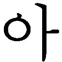

| 世界は文学でできている～対話で学ぶ〈世界文学〉連続講義～ | |
| 沼野 充義 | |
| (2012) | |
世界は文学でできている
対話で学ぶ〈世界文学〉連続講義
沼野充義 編著
世界は文学でできている
本書は私がホスト役になって五人のゲストを順次お迎えし、文学について様々な角度から話し合ったものをまとめたものです。この対談形式の連続講義はもともと、財団法人出版文化産業振興財団（ＪＰＩＣ）が主催し、光文社が共催者となって企画し、そこに私が教えている東京大学文学部現代文芸論研究室が協力するという形で行なわれたもので、最初は「中高生のための読書講座〈新・世界文学〉入門」と銘打たれていました。
しかし、現実には、初めにターゲットとして考えていた中高生の若い人たちは思ったほど集まってくれず、どちらかというと中高生ならぬ、「中高年」の聴衆の方々が多いというときもありました。しかし、文学に若者向きも中高年向きもなく、いいものはいいのだ、というのが本来の考え方でしょうから、相手が誰であれ、私としては同じことを同じように熱く語るしかない。もともと私は難しい理論を操って人を煙に巻けるような頭脳の持ち主ではありませんから、結局、中高生向きであろうとなかろうと同じように「わかりやすい」話になってしまったのではないかと思います。じつは大学の授業でもほとんど同じような話をしています。
同様にちょっと乱暴な言い方をすると、文学には日本文学もフランス文学もロシア文学もない。面白い文学を面白く読めばいいのだ（もちろん、専門家として、ある国の文学を研究するという場合は別ですが）、というのが本書を通じて私が主張したかったことでしたから、結局、既存の「境界」を越えた「読書の運動」のためには、聴衆の年齢層も超えて、様々な方々と話をすることができてとてもよかったと思います。聴衆の中には十代前半の若い人もいれば、おそらく八十代くらいの方もいらっしゃって、皆熱心に聞いてくださいました。ありがとうございます。
さて、その結果できた本書ですが、様々なゲストとの対話を通じて、全体として、いまの世界文学はどうなっているのか、どんな面白い本があるのか、それをどう読むべきか、について、できるだけわかりやすく解説することを目指しています。中高生のための文学入門書であると同時に、大人のための再入門書としても読まれることを期待します。もちろん一口に世界文学といっても膨大でつかみどころのない怪物のようなもので、読者が自分で実際に触れられるのはそのほんの一部でしかないわけですが（私もそれは同じですし、実際にこの本で扱っている文学も広大な世界文学から見れば笑ってしまうほど小さな部分かもしれません）、世界文学というのはどのくらいたくさん読むかではなく、何を選んでどう読むかに尽きると考えるべきでしょう。『世界文学とは何か？』（邦訳は国書刊行会、奥彩子他訳）という本で、デイヴィッド・ダムロッシュという比較文学者は、「世界文学というものは、あれこれのテクストの一定の正典目録ではなく、〈読みのモードなのだ〉」と主張していますが、「読みのモード」とは平たく言えば（モードなどというカタカナ語を使うとなんだかカッコよく聞こえますが）、なんのことはない、「読み方」のこと、「あなたがそれをどう読むか」ということなのです。
つまり、一定の名作リストを与えられて、それを読破すればよいという教養主義の時代はもう終わっていて、私たちは新しい正典目録を自分の手で作るべき時代に入りつつある。いや、ひょっとしたら正典目録などというものはもうできないのかもしれない。そこでヒロイン、ヒーローとなるのは、実際に本を読むあなたなのです。誰もあなたに代わって本を読んでくれはしない。この本は世界文学の読みの冒険に乗り出そうとする、そんなあなたのための道案内となることを目指しています。
最後に本書を作ってくださった皆さんに心からの感謝の気持ちを表したいと思います。本書がその大半を対談のゲストの方々に負っているのはもちろんのことですが、本書のもととなった対談企画の主催者である出版文化産業振興財団の皆様、常に企画の中心にいて強力な牽引力によって私を引っ張ってくださった駒井稔さんを始めとする光文社翻訳編集部の皆様、大量の対談原稿を整理して本にするという実際の編集作業に携わり、見事にそれを実現してくださった今野哲男さんと須川善行さん――こういった方々の尽力がなければ、この本は絶対に出来上がらなかったでしょう。
本書の背景には二〇〇七年に東京大学文学部に創設された「現代文芸論研究室」という名前の、世界文学に向けて開かれた新しい場がありました。あえて敬称ぬきで（親愛の情をこめて）名前を挙げますが、野谷文昭、柴田元幸、テッド・グーセン、大橋洋一、安藤宏、毛利公美、加藤有子、秋草俊一郎を始めとする素晴らしい仲間たちやはつらつとした若手研究者たち、そしてここには名前を挙げきれない多くの大学院生や学生たち、世界の様々な地域からやってきた留学生たちに囲まれていたからこそ、文学への希望を失わずに考えつづけられたのだと思います。
最後に、夜毎繰り広げられる果てしない宴を通じて、世界文学への夢を語り合ってきた沼野恭子に感謝を捧げます。
二〇一一年十二月十四日
沼野充義
リービ英雄
一九五〇年、アメリカ生まれ。日本語を母語としない現代日本作家。外交官の父とともに五歳で台北、六歳で台中、十一歳で香港に移り住む。その後いったんアメリカに戻り、六七年より日本在住。以降、日米往還を繰り返す。プリンストン大学大学院博士課程修了、プリンストン大学、スタンフォード大学で日本文学を講じ、現在、法政大学国際文化学部教授。八二年『万葉集』英訳で全米図書賞、九二年『星条旗の聞こえない部屋』で第十四回野間文芸新人賞、二〇〇五年『千々にくだけて』で第三十二回大佛次郎賞、〇九年『仮の水』で伊藤整文学賞受賞。他の作品には、『天安門』『日本語を書く部屋』『我的中国』『越境の声』などがある。西洋から非西洋の世界・言語へと越境した、世界に類を見ない書き手である。
沼野 こんにちは。お越しいただき、ありがとうございます。これから何回か、私がホスト役になってゲストの先生方に話をうかがいながら世界文学について考えていきたいと思います。きょうご来聴の皆さんは、ホスト役のよけいな話よりも、当然、リービ英雄さんの話を直に聞けることを期待されていると思いますので、最初の私のイントロダクションは短めにとどめ、できるだけリービさんにお話しいただく時間を多くとりたいと考えております。
きょうは「世界・日本語・文学」について、いまどういうことが言えるのかという、漠然とした大きなものをあえて扱いたいと思いますので、ふつうだったらいまさら問題にしないような、とても基本的なこともふまえて、具体的な問いから始めることにします。
たとえば「夏目漱石はどこの国の作家ですか」と質問されたら、皆さんはどう答えるでしょうか？ 誰でも、「日本の作家に決まっているじゃないか、何をバカな」と思うんじゃないでしょうか。単独でこういう問題が国語の試験に出るとは思えませんけれども、いくつか作家の名前が挙げられて、「次の作家はどの国の作家か答えよ」という問いならありそうです。「漱石＝日本」「ドストエフスキー＝ロシア」「シェイクスピア＝イギリス」といった具合ですね。こういった有名な作家たちの場合、正解は一つであって、他にまぎれはないように見える。そんなふうに、作家がどの国に所属しているかは、多くの場合、自明のことのように思われています。
では、もう少し突っ込んで「漱石はなぜ日本の作家と言えるのか」と考えてみますと、地理的にというか、あるいは国家の枠で考れば、と言ってもいいですけれども、彼は日本という場所に住んでいた。漱石は三十三歳のとき文部省に命じられてイギリスに留学していますが、イギリス滞在は二年あまりでしたから、彼の人生全体から見ればごく一部です。ですから、彼は生涯の大部分を日本で過ごし、日本語を使って小説を書いた人ということになります。
けれども、厳密に考えるとこれでは説明が足りないところがある。明治の文人は漢文が読み書きできるのがふつうでしたが、漱石はとりわけ深い漢籍の素養を持った人で、現代のわれわれにはちょっと及びもつかないほどです。ところで、われわれは「漢文」と言いますが、あれは日本語ふうに読みくだしている中国語のことですから、じつは中国語、つまり外国語の一種ですね。漱石は自分で漢詩も書いていますが、これは一種の外国語による創作です。
さらに、言うまでもなく漱石は英語が非常によくできました。英文学を専門として留学し、帰ってからは東大でも教えました。学生時代に彼は『方丈記』を英訳していますし、折にふれて日記やメモの一部を英語で書き、英語で書いた詩もあります。漱石の英語力を総合的にどう評価するかはなかなか難しい問題ですけれども、彼が書いた英語を見る限り、たいへん立派なものであったことは間違いない。そして若き日の漱石には、英語で著作をして英米の文学者と張り合おうという野心さえあったようです。野心はやがて英国留学を経て挫折し、そのかわりに日本語で小説を書く小説家漱石が誕生したわけです。しかし、潜在的には漱石は、英語で作品を書いて、英語作家になる可能性を持っていた。そういえば村上春樹がデビュー前に英語で小説を書こうと試みたというような話がありますが、これは現代日本では例外的なことでしょう。しかし、漱石の時代の知識人の中には、内村鑑三や岡倉天心のように英文で著作をして世界に出て行った日本人がけっこういたわけで、漱石が英語でものを書いて英米の文学者と張り合いたいと思ってもけっして時代から浮いた話ではなかった。
ですから、「漱石は日本語で書いた人です」と言い切ってしまうと、百パーセント本当だと言えないところが出てきます。小説に限らずに文章全般を書くということに広げて考えた場合、五パーセントか一〇パーセントぐらいは、漱石は日本語の作家ではないわけですね。中国語で詩を書き、英語であれこれのものを書く立派な能力も潜在的に持っていたからです。言語能力の面から見れば、彼はトライリンガル、つまり三ヵ国語併用者でした。
そうは言っても、漱石は「日本の作家」だということは、百パーセントとは言えないにせよ、「おおよそのところは」正しいでしょう。そして、エスニック（民族的）に漱石は日本人だったと言うことももちろんできるわけですが、ここで「エスニックに」と言ってしまうと、今度はエスニシティ（民族）とは何なのか、日本人は民族学的にどう定義できるのかなどという別の問題が出てきまして、そもそも「民族」などという概念はかなりの程度まで虚構というか、約束事にすぎない、などという見方もあって、議論が泥沼にはまりこむ危険さえあります。というわけで、ふつうはそこまであまり深く考えず、漱石は日本に住み、日本語で書いた、民族的に日本人に属する作家だという定義でひとまず満足しなければいけないわけです。
沼野 こういうふうに、近代の文学については、「ある作家はどこそこの国に属している」と考えるのがごくふつうのことになっています。そして、日本の作家、ロシアの作家、アメリカの作家、その他いろいろな国の作家がいて、そういう作家たちが所属する国民文学の枠があって、それを寄せ集めたものが「世界文学」である、と考えるわけです。
日本の中学や高校の授業では世界文学のことはほとんど教えません。シェイクスピアとかバルザックといった名前が出てくるにしても、国語ではなく、世界史の授業の中だったりしますが、その場合も、だいたい国別の歴史の枠の中で、それぞれの国の文化を代表する存在として、そういった大作家の名前が出てくるだけです。
日本の学校で国語の授業に世界の文学のテクストが出てくるとしても、せいぜい外国文学の翻訳が少しだけ、といったところでしょう。まあ、これも無理からぬことで、なにしろ科目名が「国語」であって、「文学」ではないわけで、「国語」と謳っている教科書に外国文学が入ってくるのはおかしいじゃないか、という近視眼的発想になってしまうんでしょうね。
つまり、日本の国語教育の枠の中では、芥川龍之介や太宰治といった日本の作家は取り上げられますが、シェイクスピアやドストエフスキーをまともに扱うことはありえない。作家としては後者のほうが強烈な力を持っているかもしれない、だから若い人たちにもむしろそういった世界の本物の大作家を読ませなければならない、という考え方はありえるわけですから、ここには教育上、考えなければいけない問題があると思います。しかし寄り道が少し長引きましたので、いまは話を先に進めましょう。
ごちゃごちゃ理屈を述べましたが、常識的に言えば、「漱石は日本の作家だ」ということについては、みんな疑問を抱くことはありません。
ところが、ここにリービ英雄さんという非常に鮮やかな実例がある。この方はいったいどこの国の作家かと考えてみてすぐに浮かんでくるのは、そもそも「どこの国の」という聞き方が適当なのかという疑問でしょう。百科事典の漱石の項目の冒頭には、漱石は「日本の作家」であるというような単純明快な定義が出てくるわけですが、リービさんについてそういう定義をしようと思ったらいったいどうなるのか。ですから、「漱石は日本の作家です」というような考え方自体を揺るがす存在として、リービ英雄という作家がここにいるわけです。
この話題についてはこの先、リービさんご自身にもっと雄弁に語っていただけるものと思います。われわれは「日本の作家」とか「日本の文学」とか、なにげなく言いますけれども、その実態は何なのか。「これは日本の文学だ」という場合に、その「日本」が実際に何を意味しているのかは、あらためて考えるとよくわからなくなる。一九六八年に川端康成がノーベル文学賞を受賞したとき、彼は「美しい日本の私」という講演をストックホルムでしました。そのときの川端には、「日本」というものの境界がはっきり引けたのでしょう。しかし、現代の世界の文学を見渡すと、「漱石は日本の作家です」という言い方ではもう割り切れない、わからない実例がたくさん出てきている。どうやらそれは、現在の文学にとって周縁的なことでも挿話的なことでもなく、むしろ現代の文学の本質そのものに関わることではないか。私はそんなふうに考えています。
沼野 もう一つ、いま「日本とは何か」という問題と並行して考えてみたいことがあります。文学の分類に関して、「日本」と対にしてよく使う言葉に「世界」があります。「日本文学」に対して、「世界文学」というわけです。では、「世界」というのは何だろう。よくよく考えると、「日本」と同じくらい「世界」もよくわからない。日本と日本でないものを区別する境界があいまいである以上、「世界」という言葉にもいろいろな使い方があるわけです。「世界」とは文字通り、この地球上のすべての国々を含む世界であるとか、あるいは「この宇宙のすべて」だと考えてもいいのですが、『スター・ウォーズ』ではあるまいし、地球以外の星に生き物がいて、その人たちも文学を書いていてそれも含めて「世界文学」だなんて話になると、壮大なＳＦじみてきまして（本当はそれも面白いのですけれども）、飛躍のしすぎでしょうから、ここで言う「世界」はいちおう地球上だけに限定しておきましょう。「世界」とはもともと仏教用語で、現在・過去・未来のすべての時間にわたって、東西南北上下のすべての領域に広がるものという意味らしく、仏教の世界観では、その世界の千倍の千倍の千倍を三千世界（または三千大千世界）などという壮大なヴィジョンになるのですから、われわれ人間が住む小さな地球だけに限定して考えるのはちょっとシミったれているのかもしれませんが、人間以外の宇宙の生物が書く文学はいまのところわれわれの想像力を超えていますから、ここではそこまでは問題にしないでおこう、ということです。
つまり、われわれがいま現実的に想像できるのは、この地球の上のさまざまな国で、さまざまな民族がさまざまな言語を使って、さまざまな文学を書いている。その総体としての世界文学があるということです。本来「世界文学」とはそういうものでしょう。しかし、どうも日本では（これはアメリカなどでも似たようなことがあるのですが）「世界」と「日本」という言葉の使い分けに関して、独特のものがあるようです。
日本には「日本文学全集」というものがありますね。それから、「世界文学全集」というものがあります。最近は、幸か不幸か、その手の文学全集が売れないので、ひと昔前のように大々的に出版されるということがあまりありませんが、しかし、日本には歴史的に言うと昭和の初期に「円本」と呼ばれる廉価版の全集が流行った時期がありました。そのころから本格的な文学全集ブームになって、「世界文学全集」「日本文学全集」と銘打たれた大規模なシリーズが何度も何度も繰り返し出ています。
私が子供のころは、「文学全集くらいなければ格好悪い」と皆考えるような時代でしたから、文学全集が家にあるのは教養人のステータスシンボルみたいなものだったのかもしれません。私の父も実務肌の町工場の経営者で、文学とはおよそ縁のない人でしたが、当時刊行されていた河出書房の『世界文学全集』と角川書店から出ていた『昭和文学全集』を予約購読しまして、毎月一冊ずつ近所の書店が家に配達してくれたものです。『昭和文学全集』というのは、もちろん、「昭和期に書かれた日本文学の全集」という意味です。家の書棚を飾る『世界文学全集』と『昭和文学全集』が、毎月一冊ずつ増えながら横に領土を拡張していったわけですね。
この区分で面白いのは、「世界」とはいま言ったように、地球上のすべての国を含むはずなのに、「世界文学全集」の「世界」には日本が入っていないことです。つまり、日本では、「日本文学全集」だけが別になっているわけですね。だから、「世界」という言い方そのものに偽りがあったとも言えます。そもそも昭和初期に新潮社から出た『世界文学全集』を見ると、入っているのはみごとなまでに欧米作家だけで、日本はもちろん、日本以外のアジアもアフリカも南米もいっさい入っていません。当時の日本人にとって「世界」とはそういうものだった。
偽りがあったといえば、「全集」という言葉もそうですね。だって、世界の文学を本当に全部集めたら図書館が一千、一万あっても足りないくらいでしょう。ですから、「世界文学全集」とはいっても、本当は世界文学の「名作選」にすぎないわけです。しかも、その選び方は「誰か」の偏見に満ちた（「誰か」というのは特定の個人とは限りません）世界観、文学観にもとづくものかもしれない。そういったものを「全集」と銘打って流行らせ、日本の多くの読書人が勤勉にそれを読むことによって教養を身につけてきた、というところがとても日本的です。
というわけで、日本には本当は全集ではないものを「全集」と名付けて売り出す傾向がいまでも根強くあります。もう少しすると『リービ英雄全集』が、まだご本人が生きているうちに出てしまうかもしれません。個人作家の著作集を日本では「全集」と銘打って出すことが多いのですが、その多くは本当の意味の「全集」ではなくて代表的な作品を選んだ作品選集のことですから。
「全集」のことはともかく、「世界」のほうに話を戻すと、日本で「世界」と言った場合に、じつは日本を無視していることが多かった。これは考えてみると不思議なことではありませんか。日本では優れた「世界文学事典」のたぐいもたくさん出ています。たとえば集英社の『世界文学大事典』全六巻。これは日本の外国文学研究者の総力を結集して作った素晴らしい事典で、私も聞いたことのない世界の作家たちが古今東西を問わず、数え切れないほど収録されていますが、この分厚い事典のどこを見ても、日本文学は入っていません。夏目漱石を調べたいと思ってこの『世界文学大事典』を見てもダメなんです。では、夏目漱石は「世界文学」の一部ではないのか？ 本当は漱石だってその一部であるはずなのですが、日本では昔から伝統的に世界と日本を区別して考えるという傾向が非常に強かった。これは、日本が世界の中でどのような位置を占めているか、日本人が世界の中での自分の位置をどう意識しているか、という問題に直結することで、日本を他者＝世界と区別するような世界観はいまでも根強くわれわれのものの考え方に影を落としている。しかし、それもやはりリービさんのような方たちの存在によって、最近では少しずつ変わってきていると思います。
沼野 「日本」と「世界」を区別する仕方には、日本では明治時代以来、互いに相容れない二つの方向性があって、話し出すときりがありませんが、ごく簡単に要約すると、一つは、自分たちが西洋＝世界から遅れていて、科学でも文学でも西洋にはまるっきりかなわないと考え、卑屈になって、「世界は素晴らしい。それに比べると日本はダメだ」と卑下する、いわば自虐的な立場です。つまり、日本を世界よりも下に置くという見方です。
もう一つは、自虐の反対で「日本は素晴らしい」と考える立場。この場合、世界（要するに欧米に代表される外国）は日本よりも劣るとあからさまに言わないまでも、「外国の連中には日本のことはわからない。日本は特別でいいものであって、世界といっしょくたにされては困る」といった、ナショナリスト的、国粋主義的な考え方に通じていきます。極言すれば、自分のほうが偉くて、世界は異質であるから自分たちには要らないということですね。
つまり、第一の立場は「世界が上で、日本が下」。二番目の立場は「日本が上で、世界が下」、あるいはそこまで言わなくとも、「日本は素晴らしい。それ以外の世界はどうでもいい」。近代の日本にはこの二つの対照的な立場がいつも共存していたわけですが、面白いのは、いずれの場合も、日本と世界を必要以上に区別してきたということです。
それはいったい、何を意味するのでしょうか。「日本も世界の一部であって、日本人も世界の人々と同じ土俵の上にいる同じ人間だから、互いに対等な人間としてつきあいましょう」というわけにはなかなかいかないということです。だから、文学の領域でも、「皆さんとは少し違うかもしれませんが、やっぱり同じ文学としてお互いに理解しあえるはずです」と、どうもすんなりいかない面があった。これは文学だけの話ではなくて、国際政治や経済の世界でもそうだと思いますが、いまの私たちが世界の文学を読む場合には、「日本のほうが偉い」とか、「日本のほうが劣っている」とかいう見方ではなく、日本も世界も同じ世界文学の土俵の上に乗っていると、けっして無理をしてではなく、自然にそう考えられるようになってきたのではないでしょうか。特にリービさんのような存在は、世界文学を日本文学と同じ視線で見ることができる時代の旗手であろうと思います。
いまの世界の文学を考える場合、リービ英雄さんに代表されるようなあり方が大事なものとして浮かび上がってくるもう一つの理由は、その越境性です。リービさんには『越境の声』というご著書もあって、ご自分でもキーワードとして「越境」という言葉をしばしば使われています。「越境」は私自身もよく使ってきた言葉ですし、最近はあまりにも気軽に使われているのでかえってここで掲げるのが気が引けるくらいですが、国や文化や言語の境界に絶対的に縛られているのではなく、それを越えていく生き方、書き方が、二十世紀以降の世界文学の中で非常に重要な意味を持つようになってきたことは確かです。しかし、はたしてそれは本当に新しい現象なのだろうか、それは現代の文学にとってどういう意味を持つのか、といった疑問については、まだ十分に探られているとは言えないでしょう。私自身「越境文学」「亡命文学」にさまざまな形で携わってきましたけれども、一つ言えるのは、それは二十世紀以降に突出してきた現象であると同時に、文学にとって何か根源的なものでもあり、その起源はけっして新しくはないということです。あとでリービさんに話していただけると思いますが、『万葉集』の時代の日本にも越境文学はすでに存在していました。
沼野 越境について考える場合、すぐに問題になるのは言語のことです。人は海や山を越えて、物理的に身体を移動させ、越境することは比較的簡単にできます。しかし、身体が国境を越えるのと並行して、言語の壁を越え、使っている言葉を切り替えるわけにはいかない。では言語的越境はどのような場合に起こるものなのか。
私自身いくつかの外国語を勉強し、多少外国に滞在した経験はありますが、言語能力からいえば、平凡な日本人の一人にすぎません。つまり私も含めて、日本人の多くは日本に住んでいて、ありがたいことに基本的には日本語だけを使って生きていける。最近では日本の会社でも会議を英語でやろうなんて無理なことを考えるところが出てきたようですけれども、日本に住んでいる限り、ふつうの人は英語もロシア語も話す必要はありません。だから、外国語がうまくならなくて当然なんですね。よく日本人には学校で何年も英語を学んでいるのに全然しゃべれない、これはどうしたことか、と問題視する人がいますけれども、私はむしろこのような状況のもとで限られた授業時間の枠内で英語を勉強していることを考えると、そのわりには日本人は英語がよくできると思います。平均的なアメリカ人の外国語のできなさと比較したら、日本の語学教育はそれなりに成果を上げていることがわかるはずです。
まあ、それはともかく、現代日本に住んでいる日本人はあまり外国語を使う機会も必要性もないので、外国語で自分が小説を書くなんてことは想像もつかない。ところが、その一方で、リービさんのように本来は外国語であった日本語を習得して、流暢に話せるといった次元をはるかに超えて、日本語で小説まで書いてしまう人も現れている。どうしてそんなことができるのか、と素朴に驚いてしまうわけです。はたして人は旅をするとき飛行機で国境を越えるように、言語の境界も簡単に越えることができるんだろうか？ そのへんの「秘密」も、リービさん自身にお話しいただけるとありがたいと思います。
ただし、ひょっとしたらそこには「秘密」なんて何もないのかもしれません。私の見るところ、世界には同じような例が他にも少なからずあり、リービさんのケースは日本では珍しいとはいえ世界的には孤立したケースではけっしてない。そして、他の作家たちの例をいくつも見ていると、そういうことを可能にするにはいろんな条件が必要だということがわかってきます。「あなたも英語をちゃんと勉強すれば、明日から英語で小説が書けます」というわけにはいかない。だから、誰にでもできるというものではもちろんないのですが、絶望する必要もありません。現代における越境は、もっとさまざまな形で、語学が不得意な人でも簡単にできるようになっている。たとえ外国語で小説を書くことはもちろん、読むこともできなくても、われわれ日本人が、毎日のように体験している越境だってあるのです。
何のことを言っているのか、もうおわかりでしょう。それは翻訳です。優れた翻訳によって外国文学を読むことは、越境のもっとも基本的な形であることを忘れないようにしたいものです。翻訳というのはある言語から別の言語へ、その言葉の専門家に案内されて旅することです。そういう越境を通じて、われわれはさまざまな言語で書かれた世界の文学を読むことができる。ただし、翻訳には訳者＝案内人という一種のプリズムが入りますから、はたして翻訳は原文の一番大事なところをきちんと伝えているのか、翻訳の際に何か失われたり、変形されてはいないのか、といった問題も出てくる。こういう問題についてもリービさん自身の経験に即して、後で触れていただければと思います。
もう一つ、強調しておきたいのは、越境はアメリカと日本の間の移動といった地理的、空間的なものだけでなく、時間的なもの、たとえば古代と現代の間の行き来もあり、それもまたリービ英雄さんの経歴に鮮やかに現れているということです。リービさんはもともとアメリカ合衆国で日本文学研究者として『万葉集』、特に柿本人麻呂の研究をされ、その成果を生かして岩波新書で『英語でよむ万葉集』という素晴らしい本を書かれていますが、その序文では、『万葉集』は古臭いカビの生えた古典ではなく、現代の世界文学として通用する素晴らしいものであることが力説されています。ですから、リービさんは『万葉集』の最良の理解者の一人でもあるわけですが、その一方で、『万葉集』の時代からはるかに隔たった現代日本の日本語で現代小説を書く現代日本の作家、つまり時間的な越境者でもあります。
現代と『万葉集』は、千三百年もの歳月に隔てられています。その間を自由に行き来するのは、考えてみると、アメリカと日本の間を行き来する以上に大きな隔たりを越えていく越境だと思いますが、そういうことが、いまの世界の文学を読む場合には必要なんです。
『万葉集』なんてカビ臭くて古いものだ、国語の教科書に出てきて意味もわからず覚えさせられているだけで、面白くも何ともなかったと思う若い人もいると思いますが、まあ、これは教科書の宿命のようなもので、どんなにいい作品でも教科書に入るとだいたいつまらなくなる。しかし、きょうは教科書的な解説を繰り返すのではなく、日本の千三百年前の古典が現代文学として読める、現代世界文学として読めるとしたらその魅力は何かということをぜひ考えてみたい。
以上、日本とは何か、世界とは何か。そして、そのどちらでもない第三の道、つまり日本と世界の間、古代と現代の間を自由に行き来する越境というのは何か。こういったことについて、大事だと思われるポイントを一通りお話しして問題提起としましたが、それを受けてリービさんのほうから自由にお話ししていただき、その先はディスカッションに移りたいと思います。それでは、リービさんお願いします。
リービ 沼野さんからいろんなお話が出ましたので、何を言っていいのかよくわかりませんが、この数ヵ月、僕はノンフィクションしか書いていなくて、小説のほうは次の作品をどういうふうに書くかちょっと迷っているところです。僕は、ある体験があって二、三年経ってから書くということをずいぶん昔から繰り返してきました。いまはちょうど迷いの途中の時期ですから、あまり肯定的なことは言えないし、できないかもしれません。
「世界文学全集」と「日本文学全集」の話については僕もどこかで書いたことがあると思いますが、よく覚えているのは、最初に日本に来たときに、世界文学に対して大江健三郎と江藤淳が編集委員をしていた『われらの文学』といういわゆる戦前の文豪を排した全集があって、僕も「頑張れば自分も『われら』の中に入れるのかな」と思ったことです。先ほど沼野さんから話のあった劣等感と優越感のとんでもない循環があり、それが戦後二十年ぐらい経ったときに、世界のアーティストに対して自分たちにも「われら」があるというはっきりとした主張の意識があったわけですね。本屋さんに行って、「僕も『われら』に入るのかな」と感じたときに、「入れるなら僕も日本語を書こう」という意欲が生まれたのだったと思います。
面白いことに、いま申し上げている『われらの文学』に代表される雰囲気があったのは六〇年代から八〇年代にかけて、中上健次が活躍していたころまでの話で、その後は元に戻ったというか、もうそんな時代じゃないと言ってもいい方向に言説が変わってきた。本当にそんな時代じゃなくなったかどうかについては、僕は疑念を持っていますが。
たとえば、聴衆の皆さんに僕が推薦した三冊の本（「●リービ英雄が中高生に勧める三冊の本」参照）の作家の中で、僕がいま日本語の散文を書いている日本人の中でナンバーワンだと思うのは多和田葉子さんです。彼女とはドイツで対談しましたが、「リービ、あなたは日本人になりすぎている。日本語になりすぎている」とそのようなことを言われました。あれだけ頑張って、白人なのに俺も日本文学を共有できるぞ、外国人だけど「われら」になれるぞとやってきて、『星条旗の聞こえない部屋』でかなり質の高い近代日本語を書くことができて喜ばれもしたわけだけど、五年も経たないうちに、今度は「日本人になりすぎている」と言われて、僕もちょっと迷ったんですね。つまり、基準がどこにあるのかわからなくなった。ここではそれだけ言っておきたいと思います。
ただ、たとえば、二〇〇八年から〇九年にかけて、芥川賞のレベルで中国人が一人、イラン人が一人候補になり、あとは、私の弟子で台湾人の温又柔という人が、すばる文学賞で佳作になった作品（「好去好来歌」）で台湾人として初めて日本文学を書いた例がありますが、何と言ったらいいのでしょうか、いい時代になって、中国人でも、イラン人でも、台湾人でも日本文学が書けるようになって、それが認められるようになった、国際的になったのはいいことだと、日本の言説が少し自己肯定的な方向に動いているのかなという感じもします。
しかし、逆に、二〇〇九年の春に出た最先端の議論の一つを復元すると、あのときにイラン人のシリン・ネザマフィさんが、日本とはほとんど何の関係もないイラン・イラク戦争の短編小説（「白い紙」）を、とてもきれいな日本語で書き、文學界新人賞の選考会で議論になったことがあった。日本のことを全然書いてないのに日本語で書く必然性が本当にあるのかというような指摘もありました。日本語は上手できれいだけれども、はたしてこれを日本文学に入れることができるのかというわけです。それに対して、確か一番強く反論したのが沼野さんだったと思いますが、要するに、日本とまったく関係のない話が日本で日本語文学になったということは、いままでの日本で英語やフランス語やロシア語の作品が翻訳されて読まれてきたことを考えると、とてもいいことではないかと強く反論なさった。
で、そのときの僕の結論が何だったかと言うと、迷ったというのが正直なところです。もちろん、日本語で書いたことは肯定的に評価します。そういうことをやるのはいいことだと思います。しかし、外国人も含めて日本語の読者に本当に訴えるものが、言語的なレベルと同じように精神的なレベルでもあるのかということになるとどうかという疑念があるわけですね。
僕の結論は、新人に対する批判というよりも、文学的な言説としてちょっと単純すぎるんじゃないかという気持ちがあったからで、結局は、文学は本当はもう少し複雑で図式化できないものなんじゃないか、日本との葛藤、日本人との葛藤、あるいは日本語との葛藤、あるいは日本社会の中に踏み込んだときの隠せない葛藤が必要かなというふうにもう一回考えるようになった。
沼野 私のほうから少し質問を出しながら、話を続けてもいいですか？
リービ もちろんです。
沼野 ここにいる皆さんの中には、いまリービさんが名前を挙げた作家を知らない方もいると思うので、まずちょっと補足しておきます。まず、芥川賞関連の二人ですが、楊逸さんという方は、「ワンちゃん」という小説で文學界新人賞を取り、その後『時が滲む朝』という小説で芥川賞を受賞しました。いま日本語で書く作家として活躍している人ですが、子供のころから日本で育ったわけではありません。楊逸さんは中国生まれの中国育ちで、日本には二十歳過ぎにやってきて、それから日本語を勉強して覚え、日本語で小説を書いた。こういう経歴の中国人が芥川賞を受賞したのは、史上初めてです。
それから、シリン・ネザマフィさんという女性はイラン人ですが、やはり日本語で書いた「白い紙」という小説で文學界新人賞を取りました。これはリービさんの話にあったように、イラン・イラク戦争のころのイランを舞台にした小説で、日本のことが全然出てきません。楊逸さんは中国人で、中国と日本の両方に関わる中国人のことを書いていますから、日本人には「そうか。こういう作品を日本語で書くのも意味があるな」と思えてわかりやすいのですが、ネザマフィさんの場合は、日本が全然出てこない小説を日本語で書いたわけで、ここが重要なポイントになるわけです。これを、どう評価するか。イランのことを書いた小説を読みたいのならば、イラン人がペルシャ語で書いたものを日本語に誰かが翻訳してくれたのを読めばいい、となりそうなものなのですが、このような題材を日本語で表現することにどんな意味があるのか。
さらに、リービさんの教え子である温又柔さんはまだ一九八〇年生まれの若手ですが、彼女は「好去好来歌」という作品ですばる文学賞の佳作になりました。「好去好来歌」は台湾出身で日本育ちという、著者本人の分身のような中国人女性を主人公とした、やはり言葉とアイデンティティの問題を中心に据えた作品で、台湾語・中国語・日本語という三言語の複雑な交錯の中で育ってきた主人公の意識が緻密に描かれていて異色の優れた作品になっています。ちなみに、この小説のタイトルは山上憶良の長歌にある言葉で、『万葉集』からきているんですね。
リービさんは多和田葉子さんの名前も出されましたが、いわゆる越境的な書き方をする作家は、この二十年ぐらいの間に、特にリービさんと多和田さんが作家として活躍するようになって以降、文学的な現象としてはっきり認められたのではないかと思います。
同じ「越境的」という言葉ではくくりにくいのですが、水村美苗さんという注目すべき作家もいて、彼女は最近『日本語が亡びるとき』という本を書いて話題になりました。水村さんの代表作の一つは『私小説 from left to right』ですが、これは本文の日本語のなかに、英語が翻訳もされずにそのまま混じってくるという、日英バイリンガル小説で、しかも全編横書きになっている。これはアメリカに長く住んでいる姉妹の物語で、日米間の文化的越境と同時に、日本語と英語の間の自由な行き来が実践された小説としてたいへん画期的なものでした。その意味ではこの小説も越境的な試みの一つですが、水村さんはその後、どちらかといえば日本的なものに回帰しようとする姿勢を強めている感じがします。
リービ 補足していただいたところで恐縮ですが、おっしゃっていただいたような現象がいまの文学を象徴しているような感じは確かにあるんですけど、正直に言って、僕自身はこの人たちとあまり関係がないような気がしています。むしろ津島佑子であるとか、島田雅彦であるとか、宮内勝典であるとか、国内のポストモダン、あるいは国内で典型的な近代文学と違ったものを目指した人たちに、より近いような気がするんです。そこに、ちょっと多和田さんの話が出ましたから、僕がきわめて肯定的に読んだいい書物として、彼女の『エクソフォニー―母語の外へ出る旅』が頭に浮かびます。近年出た日本語によって世界文学というものを訴えようとする試みとして、沼野さんの『Ｗ文学の世紀へ』と並んで、非常に優れているのではないでしょうか。
でも、僕に関心のある人ならご存じかもしれませんが、この本を読んだことのある人はたぶん少ない。「エクソフォニー」というのは造語で、エクソは「出口」「外に出ること」、フォニーは「音」ですね。だから、外に出る音、あるいは外に出る声ということで、外国語で書くことが二十一世紀の文学のあり方である、本当の創作は、外国語で書くか、あるいは母国語を書くときも外国語で書いているかのように意識することをこの時代が求めているという、ある意味でマニフェスト的なものです。訴える力が非常に強く、そういう現象がヨーロッパをはじめとする全世界で起きていることを、日本人に生まれながらドイツ語の作家になった人が書いている。
僕は、あの本を最初に読んだとき、一ページ目に、非常に重要なことが書いてあると思いました。あの本が出るまで、人間が母語以外の言葉で書くことには政治的な、歴史的な、あるいは経済的な何らかの理由があった。要するに、移民文学とか、あるいはイギリスを中心とするポストコロニアル文学、つまりイギリスの植民地だったインド出身者がイギリスにやって来て英語で書くとか、あるいはアフリカ人で小さいころからフランス語を学んだ人が、フランスに移民して白人にいじめられつつフランス語で書くとか、あるいは、二十世紀に典型的なものでは亡命文学、つまりナボコフというロシア人がボルシェビキ革命でヨーロッパに亡命し、ロシア語とは違った言語で書くといったようなことです。
ですから、そういった政治的な理由、歴史的な理由、あるいは経済的な理由がない限り、人間はわざわざ自分の母から学んだものと違った言葉で書くわけがないという長い間の大前提があったのに、多和田さんの『エクソフォニー』を読むと、人間はそんな単純なものではないと、外国語は政治的な理由や経済的な理由だけによって書くわけではなくて、じつは論じ尽くせないぐらい個人的なきっかけで書いているということがわかるわけです。
多和田さんは、その個人的なきっかけで書くということがきわめて正当なことであると書いている。僕自身がデビューしたときには、白人でありアメリカ人なのに何でわざわざ日本語で書くのかということで、これは何かの陰謀ではないかとか、日本をバカにしているのではないかとか、遊んでいるのではないかといったデマが流れて、ときには「いや、あれは編集者が書いたんだ。ガイジンが書けるわけはない」とまで言われたことを思い出しながら、多和田さんの登場に、僕はとても大きな解放感を覚えました。これは理解しあえる人が出てきたと思いました。彼女自身にも、日本人でありながらドイツ語で書き出したことに、政治的な理由は何もなかったわけですから。
僕には、そこが非常に面白い。これも台湾で確かめたことがあるんですが、たとえば、リービ英雄のテーマは基本的にアメリカと日本と中国でしょう。アメリカ出身で日本に来て、子供時代にアメリカの外交官の子として台湾に行っているから、その経験にもとづいて中国に行って中国を日本語で書く。いまは、日中文化交流協会のメンバーにもなっていますし、自分の中に抱えている国がアメリカと日本と中国ですから、近代の歴史の中で見ると、侵略し、あるいは占領された、国際的な力関係の中で書いているんだというふうに見られてしまう。
そうすると、多和田さんがロシア、中国やアメリカではなくて、ドイツを選んだということがすごく面白い。つまり、日本とドイツには侵略と被侵略の関係がありません。そして、政治的な配慮とは関わりなく、非常にニュートラルに、ただドイツ語という言語が好きだと言っている。ドイツ語という言語は、彼女にとっては、日本語にはない不可知で不思議な可能性があって、「私も書きたい」という非常に純粋な、ほとんど詩人のような魂を持ってドイツ語に入り込むことができたことが面白いと思った。これはドイツ語だからできたことだと、彼女から直接聞かされましたけれども。
僕は、現代中国を日本語で書くという最先端のことをやっています。幻想かもしれませんが、そういうふうにやってきているつもりでいるわけです。しかし、そう言うと、すぐに二千年間は中国が優位だった、近代の百三十年だけが日本が優位だった、その関係性に、文学ですら関わらざるを得ないという人がいるわけで、ましてや、日米となると近代に限ればもっと膨大なドラマがあるわけですから、多和田さんの『エクソフォニー』には、ある人に言わせるとあまりに純粋な言葉への旅ではないかという批判もあります。僕は、これはたとえるなら物理学と数学のようなもので、詩は数学に近いところがたぶんにありますから、多和田さんが言葉の数学者だとしたら、僕はそこまで純粋ではないから、物理学者というふうにとらえることができるのではないかと思っています。どうでしょう、沼野さんもいまのような話について考えたことがあると思うのですが。
沼野 とてもよくわかる話です。私はもともとの専門がロシアや東欧の文学で、政治やイデオロギーとのからみ合いの中で文学が営まれるということを当然の前提として背負ってきました。だから、純粋な文学という考え方に対してどうしても辛口になりがちなのですが、おっしゃる通り、多和田さんという人は純粋な形で言語的な実験の世界に入ってきていますね。ロシアや東欧の亡命文学は常に政治的な迫害や、革命・戦争といった社会的カタストロフィと関わっていて、純粋な言語実験など考えようがなかった。だから多和田さんの試みは逆にとても新鮮なんです。一方、それに対して、リービさんの場合は、リービさんといえども支配や被支配といった政治的な権力関係から自由ではないところがもともとあったわけですが、だからこそその枠組みから自由になり、乗り越えようとして越境を志す。そこがリービ文学のパワーの源泉になるのではないかという気がしています。
『エクソフォニー』の話を出されたので、リービさんに二点ほどうかがっておきたいことがあります。第一に、いままでにも数え切れないほどの回数繰り返し質問されてきたに違いないし、ご自身でエッセイにも書かれていることではありますが、リービさんはなぜ日本語で書こうと思ったのか。多和田さんは政治や経済上の要因のせいで、必要に迫られて書くのではなく、純粋に外国語で書くのが面白いから書くという方向を見つけたのに対し、リービさんの場合は、どういうことがあったんでしょうか。特に日本語作家として地位を確立した今の時点から振り返って、そのことについて何が言えるでしょうか。
もう一つは、これもよく出る質問だと思いますが、リービさんはご自分では英語で書かないのでしょうか。多和田さんはバイリンガル作家であって、日本語だけでなく、並行してドイツ語でも小説や詩を書いたり、自作を片方の言語からもう一方の言語に翻訳もしている。最近、彼女の単行本の著作を数えてみたら、比較的薄い本が多いのですが、どちらも三十冊ずつくらいあって、本当に日本語とドイツ語の創作が量的にもほぼ拮抗しているんですね。ナボコフにおけるロシア語と英語の創作についてもほぼ同じことが言えます。それに対して、リービさんは、アメリカでは日本研究者としてキャリアを積み、博士論文ももちろん英語で書いているわけですが、小説家としては日本語でしか書かないという態度をずっと保ってきた。それはどうしてなのでしょう。今後も英語で書くことはないのでしょうか。
リービ 還暦を過ぎれば何語で書いてもいい（笑）。僕の青春時代、つまり二十代のころを考えると、コンプレックスの塊で、しかもそのコンプレックスは、日本人に日本人であることのコンプレックスを突きつけられてコンプレックスになったというやっかいなコンプレックスでした。
どういうことかと言うと、日本社会は本当に国際化しているかという問題とからみますが、僕の若いときはガイジンたる者は日本語を読むことができない、まして書くことはできないという態度が一般的でした。極端に言うと、あなたは『万葉集』を読んでいるそうだが、あなたが民族的に『万葉集』を理解するなんてありえないし、生物学的にそれは不可能だ、そう言わんばかりの態度が世の中の主流にあったわけです。
この問題については、いろいろな人がいろいろなことを言っていますが、もしかしたら戦前よりも戦後のほうが、敗戦の衝撃によってそのような態度が極端になっていたのかもしれません。人間は生まれる時代を選ぶことはできませんから、明治や大正、昭和初期ならもっと緩かったのに、僕は運悪くそういう時期に当たってしまったところがあります。ですから、『星条旗の聞こえない部屋』を書いたときに、「俺にも日本語で表現できるぞ」と考えたことが大きな動機となったのだと、いま振り返ると思います。
では、ばかばかしいきっかけだから書いた文学もばかばかしいかというと、必ずしもそうではないのが文学の面白さです。きっかけとしてはそのようなことも十分にありえる。だから、もう一度言うと、僕が日本語で書くことになったきっかけには、日本人が持っていたコンプレックスがあったということです。
日本人の集合的なコンプレックスによって生まれた僕自身も含めた個人的なコンプレックス。僕は、このコンプレックスこそ日本文化を支える力の一つではないかと思います。コンプレックスがなくなると、日本文化がなくなるんじゃないかとさえ思う。たとえば、中国に行くと中国には劣等意識があることがよくわかります。それは阿片戦争以降の近代の歴史から生まれてきたものですが、必ずしもコンプレックスではない。必ずしも複合的ではない。それがわかってきたので、僕は中国は中華思想であるとか、そういう言説は日本の側から言われてきたにすぎないものなんじゃないかと思うようになりました。
なぜこういう話になったかというと、僕は子供時代に台湾に住んでいた。台湾の後は、香港に住みました。周辺から中国大陸を眺めていた。その子供時代の記憶が甦って書いた僕の『天安門』という小説は、三十年間という時間が消滅したことがテーマの一つになっていますが、中国だけを知っている人間には、たぶんあんな見方はできない。ましてや、いま中国語で書こうということにはなりません。
なぜか。日本の書き言葉はさまざまな言葉の複合の歴史でしょう。大陸から輸入された文字を変質させて平仮名を作り、僕が日本とつきあい出した時代になるとカタカナが多用され、ローマ字も異文化の文字と日本語の音を複合させている。つまり、言語学的、感覚的に日本語には他国の言語に対してコンプレックスを形作る素地がある。中国ではそういったコンプレックスはなかった。だから『天安門』という小説は日本語ならではのものだと思います。結論を出すのは早すぎますが、沼野さんの最初のレクチャーを聞いて、「われら」を呼び込むこの問題は、日本だからこそ出てきたものだと感じました。他の国ではどうなんでしょうね。たとえばロシアには「われらの文学」とか「世界文学」という発想がありますか？
沼野 「国民文学」という概念にはイデオロギー的な面が内在していて、どこの近代国家にも自国の文学といった言い方によって、それを特別なものとする傾向はあります。日本で言う国文学もその一つのあり方でしょう。しかし、国によって様相が少しずつ違います。
ロシア人の場合は「われら」と「彼ら」を区別するというメンタリティはかなり強くて、それは文学教育の面にもかなり反映しているようです。ロシア語では日本語の「国文学」に近い「祖国の文学」といった言い方が使われています。それに対して、アメリカは移民が集まってできた国ですから、そのように一元的に文学を規定することが簡単ではないでしょう。少なくとも英語では「われわれの文学」とか「わが国の文学」という言い方はしにくいのではないでしょうか？ 日本の場合は、ロシアとアメリカだったら、ロシアのほうにずっと近くて、日本人も「われわれ」とそうじゃない人たちをはっきり区別する傾向がいまでもかなり強い。「世界に冠たるわれわれ日本の文化」なんて言い方を平気でする人がいまでもいますからね。
沼野 リービ英雄さんの作品を読んでいる方はよくご存じのはずですが、リービさんは日本語で小説を書いているとはいえ、日本を経由してどんどん中国に出ていっていて、最近は「日本語で中国のことを書く作家である」と言ってもいいくらいです。
そこでうかがいたいのですが、アメリカ、日本、中国という三角形には、支配し、支配される関係、あるいは侵略と被侵略の関係でからみ合っているという複雑な連鎖がありますね。やや単純化した言い方になりますが、リービさんより上の世代の欧米の日本研究者は、いったん素晴らしい日本を発見したら、研究や翻訳をしながら日本語や日本文学の世界にどっぷりと浸かって、そこにいわば安住の地を見出してしまう傾向がある。リービさんもまた一度は日本学者としての道をアメリカで歩み始めていたのに、日本という研究対象の中に安住せず、小説家としての生き方を選んだわけですが、日本語で小説を書くようになってからも日本語の中に安住しようとはしないで、さらに中国語の世界に分け入っていく。リービさんが、上の世代の日本研究者とこれほど違うのはなぜなんだろう、といつも不思議に思うんです。越境しつづけるということが重要なのか、あるいは、単にリービさんが子供のころから中国にも親しんできたからなのか。
リービ もう少し複雑だと思います。いろいろ振り返ると、八九年にスタンフォード大学を辞め、九二年に『星条旗の聞こえない部屋』を出して、野間文芸新人賞を取った。それまでは、たぶん二十年間ほど日本に住みたいと思いつづけながら、プリンストンと新宿という、考えてみれば不思議な組み合わせですが、その間を行ったり来たりしていました。日本に住みたい、もしくは日本人になりたい、もしくは精神的に日本人になっていることを認めてもらいたいということを、二十代から四十代に至るその二十年間に考え、要は、行きたい、帰りたい、越えたいという気持ちの間で揺れ動いてきた。たぶん、四十回ぐらい往復したと思います。いろいろな奨学金をもらったり、やりもしない研究をでっち上げて、お金をもらいながらやったわけですが、日本に住み着いて日本の小説家として認められたとたんに、またどこかに行きたくなった。
それが天安門事件から三年ほど経ったときのことでした。そしてそのころに、これもまったくのたまたまですが、中国がまだ厳しい状況のときに、いまはなくなった「月刊現代」という雑誌から話がきて、けっこう軽い気持ちで取材に出かけて行ったら、さっき出た話し言葉の衝撃で、北京に行って自分の願望が子供のころの記憶に結びつくという別の体験をして、その体験を白人である僕が日本語で書いたらどうかということで『天安門』を書いた。
それからしばらくの間は、どうしたらいいのかよくわからなかったけれども、ともかく中国に何度も渡って、日本に戻ってきたらノンフィクションも含めていろいろな作品を書きましたが、あの熱狂はいったい何だったのか。たぶん、アメリカと日本の間を行ったり来たりするより、僕の日本語にとってはこちらのほうが、つまり中国と日本の間で行き来するほうが本質的な何かがあるという触感があったんだと思います。
だから、多和田さんの場合を考えると、彼女は日本人でドイツでしょう。水村さんで考えると、日本人でアメリカでしょう。つまり、片や日本語とドイツ語、片や日本語と英語、僕の場合は、日本語と中国語を突き合わせたときに、彼女らとは違うもう一つの表現の可能性があると感じたのだと思います。
さきほど、沼野さんから、西洋人の東洋研究の話が出ました。欧米では「ジャパノロジー」と並ぶ「シノロジー」があって、つまり、前者が日本研究で後者が中国研究ですが、日本研究より中国研究のほうがはるかに長い歴史がある。ヨーロッパは近代の歴史の中で日本を過小評価し、中国を過大評価するとよく言われますが、そういう学問としての思いがあったし、いまもあるのでしょう。たとえば、僕が十七～十八歳のプリンストンの一年生だったときには、同じ東アジア研究でも二つは区別されていた。
だから、僕が九三年に感じたことは、四九年の革命から後は、その中に入って自由に動くことはできなくなったという意味で、本物の中国がわれわれの体験しえる領域から消えていたということです。われわれというのは、日本人といわゆる「資本主義側」の西洋人ですね。
そこで僕が何を考えたかというと、安部公房が若いときに満州にいた経験をもとに「粘土塀」という不透明に近い小説を書いているのです（後に『終りし道の標べに』として真善美社から刊行）。まだどこの国の領地でもない中華人民共和国が成立する前の旧満州のことと、そこで彷徨する一人の日本人青年の姿を描いていて、僕は昔から好きな作品でした。描写が強烈で、それが焼きついていたんですね。
四六年から四七年の敗戦直後に彼も引き揚げてくるわけですが、四九年に「赤い中国」ができてなかなか行けなくなる。行ったとしても、当時はいまの北朝鮮みたいなもので完璧に監視された状態の中でしか行動できない。ふつうの人と話せないし、司馬遼太郎などは七五年に中国に行って、管理された中での不自由も一つの貴重な体験であるという発言をしているくらいです。
で、九三年に江沢民主席の時代になって共産党が何をやったかというと、僕の理解では政治の話をやめて経済に行きましょう、八九年の天安門事件を忘却し、金持ちになりましょうということにした。鄧小平が、「俺たちは四千年も貧乏だった。いまがチャンスだ」と言い、これが国是になった。九三年から九五年までの間にそうなったわけです。そして、経済発展には移動の自由が不可欠だからでしょう、僕のような外国人が四十年ぶりに自由に旅行できるようになった。軍の施設を除けば、どこにでも行って、各駅停車に乗って好きな駅で降り、農民と話すことができるのは奇跡のようでした。
その中国に残っているものを目指して旅を続け、受けた衝撃を日本語で書くということが、ここ数年間の僕にとっては一番文学になる可能性を持っていた。自分の小説をいま思い出しましたが、いろいろな小説を書いてきて、不思議なことに『星条旗の聞こえない部屋』と、「九・一一」を書いた『千々にくだけて』が僕の純文学枠の作品の中では比較的売れ、大きな文学賞を受賞した。中国を書いたものはそうでもありません。アメリカ人たる者が中国を書いても意味がないと思われていたのか、二〇〇九年になって『仮の水』でようやく伊藤整文学賞を受賞しました。
『仮の水』という小説をもって、身体的なレベルで中国大陸を日本語で書けた。タイトルを説明しますと、「仮」という文字は、中国では「ジャー」と読んで、偽物という意味があります。いまは何でも「ジャー」が付いて、偽札はもちろん、偽ワインもあるし、偽煙草もあるし、偽日本人もいるし、偽軍人もいる。そして、僕が知っている中国の人たちは、わずかな給料しかもらえずに、一ヵ月に一千元程度の収入しかなく、もし偽札に当たれば三日間、四日間の給料がパーになる。するともう生活できないような人たちがたくさんいて、彼らふつうの中国人民はそういうことに日々気をつけながら生きているわけですが、僕自身にもある体験があって、シルクロードの東の端に近い西のほうにあるところです。そこでレストランに入ったら、四元でミネラルウォーターを買わされて、味がちょっと変だと思ったらたちまち腹を壊した。そして、日本から持っていった薬を飲んでも治らない。一人だし、友達もいないし、恐ろしい目に遭いました。仕方がないので、一日かけて豆腐しか食べずにゆっくり治した。
そして、列車に乗って東海岸に戻ったときに「こういうことがありました」と中国人に言ったら、「あなたはジャーシュエイにあたった」と言ったんですね。「あなたは仮の水に当たった」と言ったわけです。ジャーシュエイと言われたときに、僕は「仮の水」と日本語で思いました。ただ偽だということだけではなくて、一千年の日本語のテーマの一つである「かりそめ」というもう一つの時間軸に通じている言葉であることを思ったわけですね。それによって、いま申し上げた体験を日本語で書いた。そして僕が書いた中国関連文学の中で、正当な日本の文学賞を初めて受賞することができた。
僕はそのときに思ったのですが、水村さんが英語を使って、多和田さんがドイツ語とぶつかっても、この面白みは出ない。僕がなぜあんなに中国に行ったかというと、これを見つけに行った。親中派になったのではなく、日本が嫌になったのでもなくて、これを見つけるために行ったのだし、いまも行きつづけている。これはめずらしく成功した一例です（笑）。
沼野 『仮の水』は日中間の言語的行き来という観点から見てとても興味深い小説で、リービさんがおっしゃったような日本語と中国語の間にある微妙なズレが読みどころになっています。いまさら言うまでもなく、日本は長い歴史を通じて中国語から非常に多くのものを日本語の中に取り入れていますが、異なる文化と歴史の背景をもった、まったく違う言語どうしですから、中国語から借用した語であっても日本語の中に入ると、複雑で微妙な違いが生じてしまう。「仮」という言葉の意味もそうですね。同じ漢字を使っていても、ニュアンスが異なる言葉や表現がいくらでもある。
日本語のかなというのも、漢字で書けば「仮名」、つまり「平仮名」とか「片仮名」とか書くわけですが、「仮名」というのはもともと「真名」に対して「仮」のものだ、という意味だったわけですね。
リービ 中国語なら「仮名」ということですよね。
沼野 ええ。だから、「仮名」の起源までさかのぼれば、日本ではこの「仮」という漢字の使い方には独自の非常に長い歴史がある。リービさんはアメリカの「九・一一」を扱った『千々にくだけて』でも、アメリカのテレビ放送で流れる英語を日本語に訳すとおかしな日本語になるということを試しながら、そこから生ずる違和感について書いていますね。その意味では『千々にくだけて』も言語的な性格の強い小説ですが、中国語と日本語の関係のほうが、英語と日本語よりも長くて複雑なだけに、『仮の水』のほうがより複雑な言語的問題を提起していると言えるかもしれない。しかし、私は『千々にくだけて』もまた、政治的な問題よりも何よりもまず、言語間の越境の可能性と不可能性を突いた作品として読みました。
リービ おっしゃるとおりで、『千々にくだけて』を出したときによく言われたけれども、とにかく「九・一一」の直後、僕はカナダのバンクーバーで足止めされたわけです。テレビを見ていると、ブッシュの発言とビンラーディンのビデオによる発言が流れていて、ブッシュは「悪を行う者ども」という変な日本語にしかできない英語を話していました。片方でビンラーディンは「異教徒ども」と言う。しかし、英語とアラビア語、あるいはキリスト教の文脈とイスラム教の文脈が、両方ともまともな日本語にならないこと、不自然な日本語にしかならないということが持つ意味は深いような気がする。二つとも政治性を払拭できない問題ですが、僕が言葉を理解できないところから発して言葉を純粋に語ろうとするところまでいく根拠は、こういうところにあります。
沼野 『千々にくだけて』という小説は高く評価されて、大佛次郎賞を受けましたが、私自身もたいへんな傑作だと思います。いま手元にテクストがあるのでリービさんが言われた箇所を参照してみると、バンクーバーのホテルで主人公のエドワードが、テレビからテキサスふうの訛りがある英語で、誰かがしきりに同じ言葉を繰り返しているのを聞く。そして主人公はそれに対して、反射的にこう考えます。
evildoers、と男が言っていた。
悪を行う者ども、と下手な和訳が頭に響いた。日本語にはすぐならないことばだった。
四十年前のサンデー・スクールで聞き、それ以降は聞いたことはない。砂の城のように崩れた二つの建物の中にいた人たちも、たぶん、口にしたことはなかっただろう。
この声の主は、実はアメリカの新しい大統領（ブッシュ）だったということがすぐにわかります。
その少し後に、これもいまリービさんが言われたように、テレビに英語の字幕が出ます。すると、エドワードの頭にある幻影が浮かぶ。
infidels
という英語の字幕が現われた。
異教徒ども、
エドワードは一瞬、一千年前のテレビ討論を見ているような気がした。
砂漠の文字が目に飛びこみ、鉄とガラスの建物が城に変わり、崩れるのが再び脳裏に展開しはじめた。
こういった箇所を読むと、この作品が政治的な問題を扱っていると同時に、それに対してきわめて言語的なアプローチをとっていることがわかります。ただし、英語と日本語の場合は、二つの言語間の距離が大きいから、そんなことは日本語では言えないとか、無理に翻訳したらおかしなことになる、という「翻訳不可能性」の側面がすぐに出てきてしまって、それはもちろん面白いのですが、それに比べると日本語と中国語の関係はもっと複雑で微妙ですね。
リービ 複雑な関係があるのに、中国の話がなかなか伝わらないのは市井のふつうの情報が伝わっていないからでしょう。ある人が僕の中国を書いた小説を読んで、「最近リービはお金の話ばかり書いている」と言いました。お金の話ばかり書いて、それでも文学者かというふうに。
百年前から日本の小説には、お金のことは書かないという無言の制度のようなものができていますから、数字を排除してはじめて文学になるきらいがある。そうすると、北京・上海には端的に言ってお金の話しかありませんから、いまの中国に行くと北京・上海を離れて奥地に行くことになります。僕は言葉が好きだから、方言を聞こうとしますが、中国の方言は難しいし、不透明です。でも、一週間もいて、その方言に慣れてくるとだんだんわかってくることがある。わかってきた時点で何の話をしているかと言うと、これもまたお金のことばかりなんです。出稼ぎに行って千二百元取ったとか、あそこのラーメンは五元もするとか、これを買いたいが五千元はないとか、二等席に行けば百五十元ですむとか。
そうすると、自分はいま中国の奥地で経済の生々しい「自由化」の最先端に触れているのだということが少しずつわかってくるわけですね。それが何なのかというと、おそらく冷戦後の世界基準となった自由経済そのものの声で、共産主義ではないところから最先端の声が聞こえてくる。それを日本語で復元しようとすると、なかなか文学にならないというのが僕の悩みの一つですが、ともかく数字の世界にたっぷり浸るというか、数字の暴力が耳に入ってきて、これはノンフィクションにしかならないのかなと感じるときもありました。よけいな話になりましたが。
沼野 熱のこもったお話が続きましたので、途中で腰を折ってはいけないと思い、休憩なしで続けていただきました。
きょうは、アメリカ、日本、中国の関係について、リービさんにたっぷりと話をしていただきました。それからリービさんの言語に対する考え方の一端が聞けて、とても面白く感じました。ときどき文学に直接関係しないことにも触れていただく結果になりましたが、リービ英雄という文学者が語ることは、彼が語っているということだけですでに文学ですから、私としては、それでとてもよかったと思います。
きょうは理論的なことを考えるというより、文学の素晴らしい実例を目の当たりにして――リービさんを目の前にして「実例」などと言うのも失礼かもしれませんが――現代の世界文学はこういう人が作っているのだということを、ご本人の口から語っていただき、実感することができ、聴衆の皆さんにとってはもちろんのこと、私にとってもとても貴重な経験になりました。
最後に、「こういう本を読んだら面白いですよ」といったことを少しお話しして、ブックガイド的な要素も盛り込んでおきましょう。リービさんは三冊ほど推薦されていますが、きょうのお話に出なかった李良枝さんと、サルマン・ラシュディの本について、どこが面白いのか、お話しいただけますか。
リービ 李良枝の本は読んだ方がいらっしゃるかもしれません。李良枝と書いてイ・ヤンジ、僕より一、二年前にデビューした在日韓国人作家です。彼女は山梨県で確か田中淑枝として生まれ育って、自分が「朝鮮人」だということを九歳になったころに知る。そうすると、誰かに言われなければ自分の出自に一生気がつかないで、普通の日本人として生きていたであろう新しい世代の女の人です。かなり複雑な出自と内実を持った作家なので簡単にまとめられませんが、第百回芥川賞を『由熙』という人の名前を題名にした作品で受賞しています。
『由熙』もかなり複雑な小説で、僕には最終的な評価をする資格がありませんが、簡単に言うと、新しい世代の在日コリアンの女性で、自分は差別されていないけれども昔はそうじゃなかった時代があって、その歴史についてはよく知っている人が、祖国に憧れ、二十代になってソウルに留学する。そうすると、ソウルに行ったとたんに、韓国文化に対してたいへんな抵抗を感じるわけです。
その祖国の文化への抵抗には言語的な抵抗感、つまり、言語的に韓国の世界に入り込んでいけないことと重なっているのですが、差別の歴史を考えると、もともとはこれが自分のアイデンティティであったはずだとわかり、そのアイデンティティを肯定しようとするところで、精神構造の問題として自分が日本語から抜け出せないことを発見する。そういうかなり辛く悲しいテクストです。
ですが、最後に「言葉の杖」という話が出てきまして、朝起きたときに「言葉の杖」をつかんで立ち上がろうとすると、自分の場合は、その言葉の最初の文字が「あいうえお」の平仮名の「あ」か、矢印みたいなハングルの「」か、どっちを使えばいいかわからないということを言っているのです。
その「言葉の杖」の話で小説が終わるわけですが、僕がこれはたいへんな小説だと思っているのは、在日文学を全部読んでいるわけではないから断言はできませんが、それまでの在日文学の中では、差別であるとか、分断された故国に対する愛情であるとか、あるいは韓国の政治的な歴史であるとか、アメリカとの関係や日本との関係といったいろいろな問題について書かれてきたけれども、ここで初めてアイデンティティが言葉の問題としてとらえられ表現されたと思うからです。そうすることによって、僕はどこかでも書いたけれど、日本人でも韓国人でもない、たとえばインド人やフランス人が読んでも自分の問題として読めるかもしれないという、簡単に言うとアイデンティティの問題が、その人個人のアイデンティティの話としてだけではなく、何語で生きているかを二つの言語のはざまから考え直すことで広がる可能性がある。その点が非常に重要だと思います。さっき申し上げたもっとも政治的でない多和田さんと、日本の中でマイノリティとしてもっとも政治的なところにいた在日コリアンが、そこでつながっていると感じるのです。
次はサルマン・ラシュディの『悪魔の詩』ですが、これは日本語に翻訳した五十嵐一さんが刺殺されたことによってジャーナリスティックにも有名になった作品で、イスラム教の神の使者モハメットに対するラシュディの描写がイランで問題になり、ホメイニ師から死刑宣告を受けたことで知られています。しかし、僕はそれよりも、インド出身の作家が思春期にイギリスに上陸し、出自の異なる二つの文明を、一つの小説の中で書いたという事実のほうを重く見たいと思う。もしかしたらこの作品にとっては、そのほうがイスラム問題以上に重要だと思っています。
僕がラシュディの言葉で大好きなのは、これがきょうの僕自身の結論になる一面がありますが、ラシュディが『イースト、ウエスト』（邦題『東と西』）という短編集の中で言っている「全世界が私に選べと叫んでいる。しかし、私は選ぶことを拒否する」という意味の言葉です。
つまり、おまえはインド人なのかイギリス人なのか。インド人ならイギリスに移民していた時代のことは忘れて本物のインド人に戻れとインドのナショナリストから言われる一方、イギリスの白人からは「おまえが本当にイギリス人なら、ちゃんとイギリス人として考えなさい」と言われる。しかし、そんなことは関係ない、世界が多民族社会になっているときに自分の半分を忘れろ、どちらか一方を選べと言われて、片方を都合よく忘れることなんてできない。自分はあえて選ばずに両方で書くと言っているわけです。
これが何なのかと言うと、一人の人間の中に二つの文化、一人の作家の中に二つの文明が同時に存在しているという事実を書くということです。つまり、異文化との共生ではなく、自分の中に異文化があるということに言及しているわけですね。
僕はこの言葉が好きで、要するに選べということは、記憶喪失症になれというきわめて乱暴な命令なんですね。だって、自分の身体や頭脳が体験したことを半分消しなさいと強制するのと同じことですから。十九世紀以来、帝国主義もナショナリズムも「選べ」と人に命じてきたのに、それを選ばないというスタンスが素晴らしい。僕は、これがラシュディという作家が、いまの西洋においてもっとも優れた作家であるゆえんの一つだと思います。
しかし、結論を言いますと、ラシュディを見ても、日本人で生まれてイギリス人として育ったカズオ・イシグロを見ても、あるいは他の国の出身の作家、アフリカ出身のポストコロニアリストと言われる作家たちを見ても、李良枝ほど言葉とアイデンティティの問題を直接語っている人はいないと思います。
これが、僕がつかんだ不思議な真実で、東アジアの国々の中で日本の際立った特徴の一つが何だったかというと、もしかするとナショナリズムとアイデンティティと言語を結びつけたことかもしれません。だからこそ李良枝が悩まざるをえなかった、そして十代後半の僕も、たとえば『万葉集』を読むということが生物学的、民族学的に不可能だと言われてしまったわけです。
しかし、逆にだからこそ、人間のアイデンティティはじつは人種ではなく言葉、固有の言語によってできあがっているという大事な事実が、イギリス文学でも、アメリカ文学でも、韓国文学でも、中国文学でもなく、まさに日本文学の中でどこよりもはっきりと現れたのではないかと思います。
沼野 どうもありがとうございます。ブックガイドと言えば、私もお勧めの三冊を挙げていますので、最後にそれにふれさせていただきます。
私はリービさんの本を二冊挙げました。一つが『英語でよむ万葉集』。これは日本の古典に興味のある人が入りやすいし、実利的なことを言うと英語の勉強になるかな、とかいうこともあって、実際にかなり広く読まれている本です。リービさんの現代作家としての生活はこういう本で助けられているのかもしれません。しかし、これは単なる日本の古典紹介ではなく、世界文学を考えるための豊かな示唆に満ちた本です。『万葉集』を世界文学として読むとはどういうことなのか、あの古い日本語を現代の英語にいったいどう訳すのか。どういうところがうまく訳せて、どういうところが訳せないのか。そういった問題の検討を通じて、詩的感動とは何か、時間や空間を超える文学とは何か、ということも考えさせてくれます。
そういえば、さきほど話題に上った温又柔さんの作品のタイトルである「好去好来歌」は、『万葉集』にある山上憶良の長歌から取られていますね。この長歌には「言霊の幸はふ国」という非常に有名な言葉がありますが、これもまた英訳しにくい。リービさん、このへんのことについてコメントしていただけますか。
リービ 確かに訳しにくいのですが、それについては沼野さんが「東京新聞」で書いていることが参考になると思います。
どういうことかと言いますと、言霊という言葉を初めて書きつけた憶良は朝鮮半島の出身であるという有力な学説があります。日本の遣唐使が中国に向かうときに、無事な帰国を願うという文脈の中で初めて使われたわけですね。つまり、日本の遣唐使を朝鮮半島出身の人が見送るというめぐり合わせがあって、憶良は「日本は言霊の国である」と明記している。そのことの面白みについていろんなことが語られてきましたが、沼野さんはこれを取り上げて、最近、日本の中ではいろいろな言葉の魂が生きているというふうに「東京新聞」の文芸時評で書いておられた。それがきょうの結論になるような気がします。
沼野 つまり、言霊というと、国粋主義者や民族主義者ならば、日本だけが素晴らしいと言いたいときに使うわけですが、私はそうではないと思うのです。いろいろな言霊があって、それが幸はふのが日本なのであって、「好去好来歌」という小説がいいのはその精神をうまく生かしているからではないか。この作品は書き方にまだ未熟なところが残っていますが、好感をもって読みました。
ということで、『英語でよむ万葉集』。それからきょうの話にも出たリービさんの小説から、これはいろいろありますから本当はどれか一つというわけにはいかないのですが、まず若い人たちにぜひ読んでいただきたい作品として講談社文芸文庫に入っている『星条旗の聞こえない部屋』を挙げておきましょう。さらに「九・一一」を扱った『千々にくだけて』や、中国を舞台とした『仮の水』にも読み進んでほしいと思いますが。
さらに、無理に話をつなぐつもりもないのですが、リービさんから中国の話題が出ると思ったので、この機会に中国文学だったらどんなものを読んだらいいかということを考えてみました。現在の中国には莫言（モー・イェン）とか残雪（ツァン・シュエ）といった個性的で優れた小説家がいますが、簡単に読める短いものがあまりなくて、それならもうちょっと古典的な作品からということで魯迅（ルー・シュン）を選びました。魯迅の作品は日本ではこれまで何度も訳されていまして、それぞれ高い水準のものだと思いますが、ここでは藤井省三さんの新しい訳がある『故郷／阿Ｑ正伝』を挙げましょう。藤井さんの訳は現代的な素晴らしい訳で、魯迅がずいぶん身近になりました。
魯迅の話をここでくわしくする余裕はありませんが、ひとことだけ付け加えておくと、この短編集の中には、日本でよく知られている「阿Ｑ正伝」とか「狂人日記」のほかに、「藤野先生」という作品があって、これはまだ読んでいない人にはぜひ読んでいただきたい。魯迅は日本に留学して仙台の医学専門学校に通い、そこで解剖学の藤野先生に出会います。魯迅は日本では、中国人が日露戦争のときにロシアのスパイとして日本人に銃殺される様子を記録した映画を見せられたりとか、嫌な経験もしますが、この先生は中国人に対する偏見もなく、終始、留学生の魯迅に対して立派な態度をとりつづけた素晴らしい人だった。
どう素晴らしかったかと言うと、魯迅はまだ日本語がそれほど自由ではないので、日本語の講義を聞いてもなかなかノートがうまく取れない。それを察した藤野先生は、魯迅にノートを提出させて、そこにびっしり赤字で抜けていることを書き込んで、おまけに日本語のおかしいところまで添削をして返してくれた。それも一回だけではなく、毎回毎回、担任の学課が終わるまでずっとだったというんです。私も教師のはしくれで、現に外国からの留学生もたくさん指導していますが、ここまではとても一人一人にはつきあえません。本当に偉い先生だと思います。
これは日本でも教科書にも採られているくらいの有名な作品でして、まあ、どんな名作でも教科書に入ると生徒の目には、お勉強の対象としか映らなくなって、何だかつまらなくなってしまうものですけれども、素直に読めば、国境を越え文化を越える中で生きるのはどういうことかを描いた感動的な作品でしょう。特に当時の日本と中国の複雑な関係や差別意識と劣等感のからみ合いなどを考えると、簡潔に書かれた回想ふうの小品ですが、複雑な陰影と奥行きを持った作品ですね。ちなみに、村上春樹の短編に、「中国行きのスロウ・ボート」というものもあって、これも日本における「異人」としての中国人の姿が描かれていて、テーマ的にちょっと重なるところがあります。
ちなみに、この魯迅の訳者である藤井省三さんは「魯迅が村上春樹に影響を与えているのではないか」と推測しています。藤井さんは魯迅の専門家ですから、どうしてもそういう方向に推論したくなるという面もあって、多少割り引いて考える必要がありますが、それでも意外なつながりが見えてくることは確かで、文学が文学に受け継がれていくということもまた「世界文学」のあり方なんです。
推薦する本の紹介はこれぐらいにしておきましょう。リービさん、最後に結びのひとことをお願いします。
リービ 聞きたいことがあって、一冊だけ話がくわしく出なかったのが沼野さんの『Ｗ文学の世紀へ』です。これはいろいろな国の作家について、いろいろな論理というか、考えを集めた本ですが、どういう気持ちでああいうタイトルをつけたのでしょうか。
沼野 あの本を書く少し前に「Ｊ文学」と言い出した人たちがいまして、「Ｊなんてそんなちっぽけなことを言うなよ。文学はＷでいいよ」と思ったんですね。Ｗはもちろんworld（世界）のことです。だから、「日本文学」じゃなくて、「世界文学」。日本文学を読むにしたって、「世界文学」の一員としての日本文学。そんな気持ちからでした。しかし、あの本を出してだいぶ経ったいま、あらためて思うのは、もはやＪかＷかといった問題の立て方自体が古いんじゃないか、本当は、もはやそのどちらかを選択しなければと考える必要すらない、ということですね。つまり、文学は文学になったんだと思う。
われわれは不可解なものには何らかのレッテルを貼らないとどうも安心できない、というところがどうしてもありますね。きょうの話の最初のほうで、いろいろな越境作家の話が出てきたとき、リービさんは本当は自分にはあまり関係ないような気がすると言われましたが、もっともだと思うんですよ。つまり、越境作家というくくりで見ること自体が本当は問題なのであって、優れた作家はただ単に作家なんだと思います。レッテルはいらない。だから、ＪもＷももういいという気がしますね。
リービ あのＷは、日本語のＷだなと思いました。つまり、日本語で発想された言葉で、日本の中だからこそ出てきた発想じゃないかと。
沼野 なるほど、そうですね。Ｊに対するＷという発想ですが、その発想自体が日本語的ということか。それは面白い。
ということで、きょうはノンストップで二時間近くたっぷりお話を聞くことができました。リービさん、あらためてありがとうございます。参加していただいた皆さんにも、いまの生の世界文学でどういうことが問題になり、何が意識されているかを知るために、とてもいい機会になったのではないかと思います。どうもありがとうございました。（拍手）
（この対談は二〇〇九年一一月三日に、光文社本社で行われました）
●リービ英雄が中高生に勧める三冊の本
① 李良枝『由熙―ナビ・タリョン』（講談社文芸文庫）
② 多和田葉子『エクソフォニー―母語の外へ出る旅』（岩波書店）
③ サルマン・ラシュディ『悪魔の詩』（五十嵐一訳／新泉社）
●沼野充義が中高生に勧める三冊の本
① リービ英雄『英語でよむ万葉集』（岩波新書）
② リービ英雄『星条旗の聞こえない部屋』（講談社文芸文庫）
③ 魯迅『故郷／阿Ｑ正伝』（藤井省三訳／光文社古典新訳文庫）
〈読書ガイド〉
○リービ英雄
『日本語の勝利』講談社
『天安門』講談社文芸文庫
『新宿の万葉集』朝日新聞社
『千々にくだけて』講談社文庫
『越境の声』岩波書店
『仮の水』講談社
安部公房
『終りし道の標べに』講談社文芸文庫
温又柔
「好去好来歌」（『来福の家』所収 集英社）
鴨長明
『方丈記』岩波文庫、講談社学術文庫ほか
川端康成
『美しい日本の私』講談社現代新書
沼野充義
『Ｗ文学の世紀へ―境界を越える日本語文学』五柳書院
シリン・ネザマフィ
「白い紙」（『白い紙／サラム』所収 文藝春秋）
水村美苗
『私小説 from left to right』ちくま文庫
『日本語が亡びるとき―英語の世紀の中で』筑摩書房
村上春樹
『中国行きのスロウ・ボート』中公文庫
楊逸
『ワンちゃん』文春文庫
『時が滲む朝』文春文庫
サルマン・ラシュディ
『東と西』寺門泰彦訳／平凡社
『万葉集』岩波文庫、講談社文庫ほか
『世界文学大事典』篠田一士・河島英昭・川村二郎ほか編／集英社（全六巻）
『われらの文学』大江健三郎・江藤淳編／講談社（全二十二巻）
平野啓一郎
一九七五年、愛知県生まれ。京都大学法学部卒。小説家。九九年『日蝕』により当時最年少の二十三歳で芥川賞を受賞。同年に『一月物語』、二〇〇二年に大作『葬送』を刊行し注目を集めた。これら「ロマンティック三部作」と呼ばれる過去の歴史を舞台にした長編群の後は、一転して実験的な短編に取り組み、近年は現代を舞台にした『決壊』（芸術選奨文部科学大臣新人賞受賞）、『ドーン』（Bunkamuraドゥマゴ文学賞受賞）などの長編を刊行。他の代表作に『高瀬川』『滴り落ちる時計たちの波紋』『顔のない裸体たち』など。近著に『かたちだけの愛』。エッセイ、評論も数多い。二〇一一年、漫画雑誌「モーニング」に「空白を満たしなさい」連載開始。
沼野 きょうは、作家の平野啓一郎さんをゲストとしてお迎えしております。話の進め方ですが、最初に私のほうから少しお話をいたします。平野さんにはいったんそれを受ける形で話を続けていただいて、次に自由な討論、最後に、皆さんのほうから質問がありましたらお受けして話を続けましょう。質問がたくさん出て話がはずめば、予定時間を若干超過してもかまわないと思っています。まあ、そんなことはあまり最初から細かく申し上げる必要もなさそうではあるのですが、最近の日本社会は几帳面に計画通り行わないと怒られてしまうこともしばしばで、イベントの主催者の中には分刻みできちんと計画を立てる人も少なくありません。今回の主催者はそのへんを理解してくださっているので、進行予定は緩やかに守ればいいかな、くらいに考えて始めましょうか。
と言いながら、さっそく余談になりますが、私自身もいろいろな会議を主催したり、外国の作家や研究者を招待して講演会やシンポジウムなどのイベントを行ったりする機会が多いのですが、当然、そういうときには進行予定表を作って関係者にお知らせします。その際、まあ、日本人の常識としては、開始時刻だけでなく、終了予定時刻も書くものです。ところがこの間、ふと思ったことがある。ロシアではその種の告知の場合、開始時刻はもちろん書いてあるけれども、終了予定時刻というものを見た記憶がないんですね。それでインターネットに出ているロシアのイベント情報などをたくさん調べてみたのですが、大学や文化団体などが主催する講演会のたぐいの催しで、終了予定時刻が書いてあるものが一つもないということがわかりました。私はロシア文学の専門家で、ロシアとはずいぶん長い付き合いですが、これはあまり意識したことがなくて、今回じつに驚きました。
これはもちろん、日本じゃ通用しません。カルチャーセンターでの講義などの場合、講師が遅刻するのももちろん厳禁ですが（なにしろ聴講者の皆さんはお金を払ってわざわざ来ているわけですから）、終わる時間もきちんと守らなければいけない。「時間にルーズな講師のせいで、帰宅のための電車を一本乗りすごしてしまった、どうしてくれる」なんて苦情も寄せられることがあるそうです。まあ、そこまで言わなくとも、終わる時間の見当がつかないのは確かに、現代の社会生活では不都合でしょう。じゃあ、ロシアではどうして特別講義やシンポジウムなどの告知で、終了予定時刻を書かないでも平気なんだろうか。私にも謎ですね。そこで先日、あるロシア人の友人に尋ねてみたら、彼はそんなこと不思議でも何でもないじゃないかといった顔で、「当たり前でしょう。そういうイベントでは講師は話したいだけ話す、聴衆は聞きたいだけ聞く、だから終わりの時刻なんて気にしないんだ」とのことでした。
ちょっとびっくりしますが、よく考えるとある意味では正論かもしれません。本当に面白い話だったら、時間なんて気にしないでいつまでも聞いていたいものですし、本当に面白い小説だったら、いつ読み終えるか気にしながら読む人はいないでしょう。むしろいつまでも終わってほしくないと思うんじゃないでしょうか。私など、ときおり、書評を書かなければならないのに、締め切りを目の前に控えてその本をなかなか読み終えられないとき、あと何ページあるから何時間かかるかな、なんて思ってつい時計を見てしまいますが、こういう読書はろくなものじゃない。芝居や映画を観ているときだって、腕時計をついちらちら見るのは、退屈しているときです。
というわけでいまのはまったくの余談ではあるのですが、これは小説ともまんざら関係がないわけでもない。つまり小説はどのくらいの長さであるべきか、どこで終わらなければならないか、という問題を考えるときにも多少関係してきます。ある長さできちんと終わらなければいけない、そういう構造を持っているのが小説であると考える文学的伝統もあるし、そんなことは気にしなくていい、長さは気にしないで物語が続く限り続けばいいと考える文学観だってありえるということですね。芥川龍之介や志賀直哉の短編はやはりある長さでびしっと終わらなければ形にならないでしょうけれども、古代インドの叙事詩『マハーバーラタ』や日本の『源氏物語』、あるいはトルストイの『戦争と平和』やプルーストの『失われた時を求めて』、それから他ならぬ平野さんの『葬送』のようにとても長い作品も文学史上たくさんあって、こういった作品の場合、どこかで終わらなければならない必然性があるのか、そもそもこの長さ自体が作品の本質と関わっているのではないか、などといったことを考えさせられます。
以上、たいへん長い前置きになりましたが、要するにきょうは何時に終わってもいいということです（笑）。
沼野 さて、いよいよ本題に入ります。
まず最初に「インターネット時代にどうして書物なのか？」ということを考えてみたい。平野さんはいま三十代半ばの若手作家で、日本の文壇の中でも一番新しいところを切り開き、世代的に言えば日本の文学の将来を担っているトップランナーです。デビューはとても早く、京都大学の学生時代に書いた『日蝕』という小説ですでに大きな話題になりましたから、もうだいぶ長いこと活躍されていて、もっとお歳なのかと錯覚することがありますが、じつはまだとても若い。
そういう若い世代は、従来の日本の文学のあり方を批判的にとらえ、このままではだめではないかということを鋭敏に感じているのではないでしょうか。平野さんもこれまでに座談会や対談で、情報化社会になってコンピュータ技術が高度に発達し、インターネットが普及した時代に文学はどうなるのかという問題をしきりに取り上げられていますが、そういうことをここでも少し考えてみたい。
この問題には世代差がそうとうあって、きょうの会場にも、年長の方の中には、コンピュータとかインターネットといったものが苦手だという方が当然いらっしゃると思います。私の勤めている大学の文学部にも、百名以上いる教授・准教授の中に、おそらく一人だけ、いまだにコンピュータやＥメールを使うことを頑として拒否しているとおぼしき方がいらっしゃいますが（笑）、もちろん、その方はかなり年配の先生です。そういえばリービ英雄さんもコンピュータをまったく使われないそうですね。
私を含む五十代の世代や、それより年長の世代にとっては、何と言っても活字メディアがすべての基本というところがあって、朝起きたらまず新聞、もちろんネットで電子的に配信されるものではなく、ちゃんと紙に印刷されたものを読むのが生活習慣になっているわけですが、私が教えている学生の中には、すでに新聞を読まない人がかなりいます。彼らには、ニュースだけだったらテレビか、インターネット情報で十分なんですね。地方から上京してくる学生の場合、昔なら下宿を決めてまず最初にやったことの一つが新聞購読の契約をすることでした。日本では新聞は毎朝戸別に配達してくれるサービスが普及しているわけで（こんな国は世界でもそうたくさんはありません）、学生であっても新聞を取って読むということが、昔の教養主義の柱の一つにあったわけです。
ところが、いまの学生は――ひとり暮らしをする学生の場合ですが――まず自分で新聞を購読しません。それから、固定電話の契約もしなくなりました。固定電話の契約をするためには何万円もする電話加入権を買うことが必要で、学生にとってはかなり大きな負担だったわけですが、いまは誰でも、早い人は小学生のときからケータイを持っているわけですから、大学生になって下宿するからといって固定電話に加入する必要はまったくなくなっています。こんなふうに情報機器やメディアの変化が生活に変化をもたらしているのは確かですが、その際、世代間の差が大きいことに注意しないといけない。
ケータイの話が出たついでに、もう一つ余談ですが、皆さんはケータイで電話をかけたり受けたりするとき、どちらの手を使いますか？ 右利きの場合、若い人は圧倒的に右手だと思いますが、じつは年長の世代だと、左手が多いんです。どうしてかというと、おそらく昔の固定電話は左手で受話器を取るように設計されていたからで、左手で受話器を持ちながら、右手は空けておいてメモを取ったりしたわけです。それに慣れて育った世代の年長者は、ケータイを持つときも左手を使うことが多い。私自身も右利きですが、ケータイは左手で操作します。右手を使うことは違和感が強くてできないんです。ささいなことのようですが、こんな微妙なところまで、情報機器の発達が私たちの生活に影響を与え始めているという一例ですね。もちろんケータイはもっと直接文学表現に影響を与えています。いまさら言うまでもないことですが、ケータイを使って小説を読んだり、執筆したりする、いわゆる「ケータイ小説」が二〇〇〇年代前半から社会的現象になりました。
いまの日本の文学の書き手たちを見渡してみると、一番若いほうだと、二十歳前後で芥川賞を受賞して人気作家になった金原ひとみさんや、綿矢りささんもいれば、大江健三郎さん、古井由吉さん、丸谷才一さんのように、七十代、八十代でも健筆をふるっている大家たちもいる。大江さんは一九三五（昭和十）年の生まれですからいまもう七十代半ばですが、一九五七年に作家としてデビューして以来、もう五十年以上も書きつづけられています。『水死』（二〇〇九年）という小説を書いて、まだまだ現役作家というか、依然として文学のトップランナーであることを示しています。だから、同じ現役作家といっても一番若い人と一番年長の人の間には五十年以上の巨大なスパンがあるわけで、情報技術が発達してきたと言っても、すべての作家が世代を超えて同じようにその影響を受け、それを活用しているわけではない。ここでもやはり世代差は大きく、世代を異にする作家の間では文学観が異なると同時に、情報化社会に対する態度も違っているわけです。
沼野 ところで、メディアの根本的な変化はいま初めて人類が直面する問題ではなく、昔から何段階かを経て人類が経験してきたことです。人間の言語の起源と、複数の人間の間でのコミュニケーションの発生という、はるかな昔に生じた事件に思いをはせると（なかなか想像しにくいのですけれども）最初にあったのは、もちろん、文字ではなく、音でしょう。人間の言語の起源については、いまだに謎めいたところが多く残っていて、解明からはほど遠い状況ですけれども、誰が考えてもすぐにわかるのは、人間は最初からいきなり紙に鉛筆で文字を書いたわけではないということです。文字が発明されたのはだいぶ後だし、紙や鉛筆という便利な筆記用具が作られたのはさらに後のことであって、言語はまず「音」とともに始まりました（その前からあったに違いない、ジェスチャーによるいわゆる「身体言語」はここではとりあえず考えに入れないことにします）。
つまり、まず音声言語による表現が発達していき、それからそれを記録するための「書く」という行為が出てきた。書く方法は最初は石や木をとがった硬いもので引っかくなどという原始的なものでしたが、やがて、印刷術が発明され、いわゆるグーテンベルク革命が起こる。これが西欧で十五世紀のことですね。書かれたものが、一部ずつの筆写によらず、印刷物として広い範囲に流通するようになったのは、メディア史上本当に画期的な大変動でした。
これは人間の表現方法の歴史という観点から大きくとらえると、声による口頭的表現から、文字を使った書記的表現への移行ということになるでしょう。それは単に便利な道具ができたという次元のことにはとどまらなかった。この問題を正面から取り上げた著作として注目すべきものに、ウォルター・Ｊ・オングによる『声の文化と文字の文化』というものがあります。ここでオングは「第一次的な声の文化」（まったく書くことを知らない文化）と「書くことに深く影響されている文化」の間にある根本的な違いを指摘し、「書くこと」が現在の人間の思考様式や文化に大きな影響を与えていることを系統的に論じています。
この本は原題を「オラリティとリテラシー」（Orality and Literacy）というのですが、「オラリティ」というのは「オーラル」（「口頭の」）の名詞形ですから、声による口頭的表現全般を指す。それに対して「リテラシー」は普通は「読み書き能力」を意味する単語ですが、これはもともと「文字」を意味するラテン語のlitteraから来ていて、この文脈では、文字を使ってあれこれのことを書き表す文化全般を指しています。つまりオングは、グーテンベルクの発明によってもたらされたメディア革命が、単に世の中が便利になったということではなく、人間の意識そのものや言語表現そのものを変えるような、もっと根本的な変化であったといっているわけで、そのパラダイム・チェンジを「オラリティからリテラシーへ」と規定しているのですね。少し単純化していうと、オラリティの時代に創造された文学作品は、ホメロスの長大な叙事詩にせよ、『源氏物語』にせよ、リテラシーの時代に作られた作品とは構造上も根本的に違うところがあるかもしれない、ということになる。
「音から文字へ」というのはわかりやすい話ですが、ここでそれに加えて私が言いたいのは、いま人類はその次の第三段階に入っているのかもしれないということです。ただし、これは「音から文字へ」の移行ほどわかりやすいとは言いにくい性格のものであって、これをひとことで何と呼んだらいいのか、ちょっと迷うところではありますが、コンピュータ技術とインターネットを用いた情報伝達を基礎にした電子情報の時代にわれわれは入りつつあるのではないか、ととりあえず言っておきましょう。つまり第一に「声の時代」、第二に「文字の時代」があったとすれば、それに匹敵するくらい大きなその次の時代は「電子の時代」と呼ばれるべきものではないか。
もちろん「電子の時代」であってもわれわれが表現や情報伝達の基本的な手段として、言語を用いることに変わりはありません。人間の持つ言語は、人間を他の動物から区別する基本的な道具の一つですから、逆に言えば、人間が言語を失ったら、人間ではなくなってしまう。とはいえ、その言語を記録する手段にはっきりした違いが生じていることも否定できない。文字の時代には、言語は文字を使って紙に記されたわけですが、電子的なメディアには紙は必要ないということです。紙に印刷された本から、電子書籍への移行ということが、どれくらい本格化し、それがどのくらい文学に影響を及ぼすのか。われわれはいまそれを目撃しつつあるわけです。
オングによれば、声の文化の時代に生きる人間にとって、何かを「知っている」ということはそれを「思い出せる」ということであり、それは人間的記憶の問題でした。しかし、文字の文化の時代になると、百科事典がその最たるものですが、知識や情報は紙に記録してたくわえられ、必要に応じてそれを引き出せばいいので、思い出す必要は必ずしもなくなった。そしてさらにわれわれの電子時代になると、ありとあらゆる情報がインターネットを通じて、グーグルを検索することやウィキペディアを参照することによって得られます。インターネットを通じて得られる情報には間違いや偏りも多いのは確かですから、大学教師は口をすっぱくして学生たちに、「インターネット情報を安易に頼るな」と言うのですけれども、この圧倒的な便利さは否定しがたい。そして従来の紙に印刷された百科事典のようなかさばるものは、身の回りからどんどん消えていきつつあります。
ということで、いま起こりつつあることは、オングが「声の文化」から「文字の文化」へと表現した革命的な移行に匹敵するくらい重要な人類史的な変化なのかもしれません。そういった状況の中で、これまで文字と紙いっぺんとうでやってきた文学というものは、どうなっていくのか。これまでと同じように考え、書き、出版しつづけるだけで、はたして生き延びられるのだろうか。ひょっとしたら文学は未曽有の危機に直面しつつあるのかもしれない、という人もいます。もっとも、危機感をあおるようなこの種の言い方は、いつも鵜吞みにはできないもので、たとえば映画が発明されたときにも、これで競合する演劇は駆逐されるのではないかという危惧を抱いた人はいました。しかし、全然そんなことはなかった。そして、現在も、インターネットがいくら発達しても、いまの世の中からそうすぐには紙に印刷された本がなくなるようには見えません。本は以前にも増して洪水のように次々と出ていて、本屋さんに行くと新刊書が山のように積み上げられている。電子書籍の普及がこういった光景そのものを根本的に変えてしまう日が来るのでしょうか。
沼野 いずれにせよ、これはまだオープンな問いかけであって、誰かが確実に正しい一つの解答を知っているとも思えません。しかし考えつづけなければならない重要な問いであるはずなのに、文学界を見渡しても、大部分の作家たちは、そういった問題を不思議なくらい気にせずに、書きつづけているように見える。それに対して、おそらく平野さんは、こういったメディアの変化を最先端で鋭敏に受け止めている作家の一人ということになるでしょう。
しかし、強い危機意識も持たないで書きつづけているように見える作家が大多数だとは言っても、いまでは大部分の作家たち、おそらく世代的にいって六十歳以下の人であればもう九九パーセントは執筆の基本的な道具としてパソコンを使っているはずでしょうね。これははっきりとした変化です。
執筆の道具が変わったことが、書かれるものや、書く人間の意識にどのような影響を与えるか、ということもじつは重要な問題ですが、まだはっきりと見きわめられていないように思います。直感的な次元では、肉筆で書くことをやめて、ワープロやパソコンで書くようになって、身体的感覚が変わってくることは否定できません。文字を紙に書きつけることは、複雑な手先や腕の運動をともないますから、その行為そのものにある種の身体的緊張感がともないます。特に日本語の書記体系は、平仮名、片仮名の他、漢字も使いこなさなければならずたいへん複雑ですが、難しい漢字を書くときは、いつも自分の頭でその書き方を思い出せなければなりません（これはオングのいう、「声の時代」の「知っていること」に相当します）。
ところが、パソコンで書く際には、書き方を思い出す必要はなく、「知っている」ことと「思い出せる」ことが分離しはじめているといえるのではないでしょうか。こういう私も、もう九九パーセントをパソコンで書く日常で、もともと字が下手だったのがますます下手になり、しかも難しい漢字を書こうと思ってもなかなか思い出せなくなりました。ですから授業のときも、板書が怖くてしかたがない。数年前、モスクワ大学の日本学科で講義をしたときも、日本語を勉強するロシア人の学生たちの前でカッコいいところを見せようと思って、「教養のある日本人ならば、こんな漢字でも書けるものだよ」と言って、「憂鬱」という字を黒板に書き始めたのですが、「鬱」の字を半分くらい書いたところでその先が不意に思い出せなくなり、立ち往生。かえってとんだ恥をかきまして、「いや、教養のある日本人でもこういう漢字はときどき書けなくなるんですよ、わかりますね」と無理に言いつくろった次第です（笑）。
パソコンばかり使っていると、こんなふうに字が書けない、読めるのだが書き方を思い出せない、ということが起こってくるわけですが、パソコンでものを書く場合は、難しい字でもパソコンがかわりに思い出してくれる。そのうえ、パソコンならば、いくらでも書き直しができますから、とりあえず思いついたことを打ちこんで、またすぐに修正することが簡単で、やはり文字を紙に書きつけるときのような緊張感は薄れるような気がしますね。それが文章を堕落させ、人間の精神をも弱らせると考え、パソコンでものを書くことに対して、強く否定的な人もいます。書家・書道史家の石川九楊さんが、その代表ですね。石川さんの数多い著作は、いずれもそのことを雄弁に主張していて、傾聴に値すると思いますので、この問題に関心のある方はぜひ読んでみてください。
しかし、私は石川氏の主張にはちょっと極端なところがあると思うので、全面的に賛成はできません。書くための主要な道具が筆から鉛筆やペンになり、さらにシャープペンシルやボールペンになるという変化を日本人はたどってきたわけですが、そのせいで具体的に何かが変わったということは証明しがたい。コンピュータの導入も同様で、非常に微妙な変化が生じつつあるような気がすることは確かですが、何がどう変わったかについては、はっきりとしたことは言いようがない。そもそも人間の言語とは時とともに変化するもので、世の年長者たちはその変化をたいていの場合、嘆かわしいと言うのですが、言語は生き物のようなもので、変化しなければ死んでしまうと言っても過言ではなく、変化そのものが悪いとは言えません。で、時代とともに日本語も変われば、文学表現のための文体も変わる。そういうダイナミックな言語の歴史的変化の一要因として筆記具の変化があるのであって、それを誇大に見るのは行き過ぎじゃないでしょうか。
じゃあ、何もかも変わるのであって、確かなもの、変わらないものは何もないのか、というとそんなこともないでしょう。私もそこまでニヒルな相対主義者ではありません。変わらないものは何かといえば、人間が言語によって何かを表現したいという欲望です。筆で紙に書くのか、パソコンに打ちこんで画面に表示するのかは別として、言語によって表現したいという人類共通の意欲はいまのところ衰えていないのではないか、とこの点に関して私は妙に楽観的です。
言語というのは人類にとって基本的な能力の一つですから、人間が人間であるために言語表現というのはどのような形であれ残るでしょう。もし、その言語表現そのものが本質的に変化して、いまのわれわれに理解しがたいものに変質するようなことがあったら、それは要するに、人間が人間でなくなったとき、という事態ではないかと思います。ＳＦのような話になりますが、人間もこれから進化するかもしれませんから、遠い未来には、いまの言語にとって代わる、もっと高度な思考や情報伝達を可能にするツールを身につけるようになるかもしれないし、そういう人体改造ができるようになるかもしれない。そうなったら、そのとき文学もやはり根本的に変わってしまうはずですが、少なくとも今のところ、言語表現そのものは、墨で書こうが、鉛筆で書こうが、ワープロソフトを使ってパソコン上で書こうが、本質的には変わっていないのではないでしょうか。だからこそわれわれは昔の作品を読んで、理解し、感動することもできる。
沼野 第一の話題が大きなものだったせいで、すっかり話が長引いてしまいました。その先、いくつかの話題について駆け足で行きたいと思います。次のトピックは、「過去から未来へ――小説家にとっての現代」というものです。
作家とは過去の小説に学びながら、未来を切り開こうとするものですが、そういう作家にとって、同時代とは何を意味するのか。私たちは、読者でも作家でも、いまという時代に生きています。歴史家は過去が大事だと言ったり、科学者は未来のことを想像したり、宗教家は死後の世界を考えたりもしますが、本音を言えば、誰にとっても現在が一番大事なわけです。極端な現世主義のように聞こえるかもしれませんが、やっぱり突き詰めて言えば、私たちが生きているいまの時代、いま生きている自分たちとその子供たちが最大の関心事であって、これは文学でも同じことじゃないでしょうか。
つまり、その一番大事な現代をどう考えたらいいかということですが、平野さんという作家に即して言うと、「現代」との関わりはそう単純な道筋ではなかったように見えます。平野さんは非常に若くしてデビューされ、その後目覚ましい創作活動を続けてこられ、しかも驚くべき知的エネルギーと大胆な実験精神によって一作ごとに新しい境地を切り開いてきました。デビュー作の『日蝕』はフランス中世を舞台にした作品でしたが、そこでは文体も非常に古めかしいものを採用し、芥川賞の選考委員の作家たちでも辞書を引かないと読めないような難しい漢字をたくさん使われた。選考委員の一人、石原慎太郎さんなどは、『日蝕』の「衒学趣味といい、たいそうな擬古文といい、はたしてこうした手法を用いなければ現代文学は蘇生し得ないのだろうか」などと選評で書いていて、たいへん懐疑的でしたね。いずれにせよ、石原慎太郎のようなはるか年長の作家にも、古めかしくて読みづらいと思わせるような文体と内容からスタートしたわけです。
確かに『日蝕』は、舞台が地理的にも時間的にも現代日本の「いま・ここ」からかけ離れていて、文体も同じくらい現代の日本語からかけ離れていた。それからいろいろな作品がありましたが、平野さんの作家としての次の段階を代表するのは、『葬送』でしょう。これは記念碑的と呼びたくなるような、堂々たる長大な作品で、一八四〇年代後半のフランスを舞台にし、作曲家のショパンと画家のドラクロワの二人に焦点を当てています。実在の芸術家たちの実際の人生や作品にもとづいた非常に緻密なリアリズム小説になっているわけですが、これは十九世紀のヨーロッパでトルストイやバルザックによって完成されたリアリズム小説の頂点に、もう一度登り直そうというとほうもない試みでしたね。この作品もまた、『日蝕』ほどではありませんが、現代の日本からかなり離れた時代と場所を扱っていました。
その次に特筆しておきたいのは、『決壊』です。これもまた大作ですが、内容的にとても衝撃的な作品でした。現代の日本を舞台に、インターネットの発達した時代ならではの恐るべき殺人事件を扱いながら、悪とは何かという問題に深く哲学的な洞察を加えています。ここにいたって平野さんは、初めて現代に正面から向き合った本格的な長編を書かれたことになりますね。背景にあるのは、現代世界に蔓延する戦争とテロの暴力、そしてインターネットが解き放ってしまった「心の闇」といった問題で、このまま進めば、現代社会は復旧ができない「致命的なエラー」を起こし、限界を超えてしまい、ダムが溢れるように「決壊」するのではないか。そういう警鐘の意味をこめたタイトルなんだろうと思います。
最後に取り上げたい一番新しい作品は、『ドーン』です。平野さんの作品をまだ読んだことがない皆さんには、まずこれを読むことをお勧めしたいと思います。これは二〇三〇年代を舞台にした、近未来のＳＦ的な小説です。きょうは後で私自身が翻訳した現代ＳＦの古典、レムの『ソラリス』にもちょっと言及するかもしれませんが、私自身ＳＦが好きなので、こういう設定のものには心惹かれるところがあります。有人火星探査が成功した未来の世界を舞台に、アメリカの大統領選挙といった政治的主題も盛り込む一方で、現代社会のさまざまな局面で分裂していく人間のアイデンティティとはいったい何かという問題を、平野さんが独自の「分人」という概念を駆使して掘り下げていくという作品です。近代社会において「個人」という単位が、これ以上分けることができない統合的な人格であるのに対して、ここで言う「分人」というのは、人間があれこれの場や目的に応じて使い分ける部分的な自己のことですね。特殊な整形技術の発達によってその「分人」が蔓延するとともに、人々の顔を認証して同一人物であることを特定できる監視カメラのシステムも構築される。こういった設定はＳＦ的ではありますが、そもそもアイデンティティの分裂の問題はＳＦ的な虚構というよりは、現実のわれわれが直面している社会問題でもありますね。
『ドーン』では「分人」の問題は夫婦間の愛はどうあるべきかといった現実的な主題に結びついて展開していくわけで、その点から言っても、この作品は現代の問題を未来に投影しているようにも見えます。作品の時代として設定されている二〇三〇年代というのも、遠すぎず、近すぎずといったところでしょうか。そのころ私は生きていれば七十六歳。まあ生きているかどうかわかりませんが（笑）、若い読者たちならば確実に自分がまだ生きていると思える未来世界ですね。火星探査や顔認証システムといった小説中に出てくるＳＦ的設定も、想像しがたい突拍子もない空想的なものではなく、われわれの想像力がちょっと手を伸ばせば届くくらいのところにある。そういう未来に向けて、この小説が書かれているところが、平野さんのいまの姿勢を示していて面白いと思いました。ちなみに主人公である宇宙飛行士の名前は、明日人となっていて、これも象徴的です。
以上、四つの作品を通じて平野さんの作家としての「進化」を振り返ってみましたが、はっきりわかるのは、中世（『日蝕』）から十九世紀（『葬送』）、現在（『決壊』）、そして近未来（『ドーン』）というふうに、時代設定が過去から未来へとどんどん進んできたということです。これは平野さんとしては計算して進んできた道なのか、あるいは何か必然的な流れの中で結果としてそうなってしまったのか。そのあたりのことをぜひうかがいたいと思います。そして、過去から未来まで大きな時間的スパンを見渡す作家にとって、現代日本の「いま・ここ」とは何なのか。作家は目の前の社会からどんな距離を置きながら、自分の作品世界を作るのか、それとも常に目の前の「いま・ここ」になんらかの形でコミットし、関わっているべきなのか。
沼野 次に、三番目のトピックとして「古典と現代」という話題についてもひとこと触れておきます。世界の文学を読もうとする場合、読者は、評価の定まった古典を読むようにするべきなのか、それとももっと身近な現代小説に重点を置くべきなのか。これは作家が現代にどう向き合うべきなのか、という先ほどの話題とある意味ではパラレルになっていて、つまり、読者は現代文学にどう向き合うべきなのか、そして過去の古典にどういう態度をとったらいいのか、という設問になります。
ひとくちに古典と言ってもいろいろあります。『源氏物語』もあれば、ドストエフスキーの『カラマーゾフの兄弟』もあります。『源氏物語』は一千年以上前の平安時代の日本で書かれた作品ですが、現代語訳が続々と出てくるし、漫画にはなるし、いまだに日本では根強い人気がある。いや、日本だけではなく、じつは国際的にも評価が高まっているんですね。英訳を見ても、二十世紀初頭のアーサー・ウェイリーによる先駆的な訳を最初として、サイデンステッカーによる完訳、そして詳細な注をほどこし、学術的にも正確な読みを示したロイヤル・タイラーによる新訳と、じつに三回にわたって訳されていて、世界的にいっそう広く読まれるようになってきています。一方、『カラマーゾフの兄弟』はさほど古くない、百三十年ほど前のロシアで書かれた小説ですが、最近、亀山郁夫氏による新訳が百万部を超えるベストセラーになって、古典でありながら、現代的な意味を失っていないことをはっきり示しました。
ちなみに、「古典」という言葉ですが、日本文学に即していえば、明治時代以前の作品を指すことが多いのですが、ヨーロッパの場合、「クラシックス」the classicsと呼ばれるのは、本来、古代ギリシャ・ラテンの古典的作品なんですね。ですから、ドストエフスキーや漱石といった「新しい」作家は本来、古典ではないわけですが、ここではもっと広く柔軟にこの言葉をとらえて、十九世紀・二十世紀の作品でも読み継がれるべき重要な作品として評価が高いものも「古典」として考えることにします。より正確にいえば、こういう「新しい古典」は「近・現代の古典」（モダン・クラシックス）modern classicsとでも呼ぶべきもので、実際、イギリスの大手出版社ペンギン・ブックスでは最近「モダン・クラシックス」と銘打ったシリーズを出していまして、そこにはなんと川端康成も芥川龍之介も、それから『一九八四年』のジョージ・オーウェルもすでに入っています。
ですからひとくちに古典と言ってもその幅は古代のギリシャやインド、中国から、つい最近の文学まで、とても広いのですが、いずれにせよ、いま現在書かれているものではなく、そういう昔のものがいまでも価値を持ち、生きつづけているのはなぜなのか。これは現代の読者にとってじつはけっして抽象的な問いではなく、けっこう実用的というか、実践的な問いなんですね。現代に書かれているいいもの、面白いものは、それだけでも読みきれないくらいたくさんある。大江健三郎だって、村上春樹だって、平野啓一郎だって読みたい。しかし、それをはるかに超える、気の遠くなるくらい膨大な量の古典の蓄積というものが他方にはあります。現代では昔ふうの教養主義は薄れてきましたから、「これこれの古典は必ず（面白いと思えても、思えなくても）読まなきゃならない」といったプレッシャーを若い人たちはあまり感じないでしょうけれども、それでも古典をまったく無視するわけにはいかない。しかし、あまりにたくさんありすぎて、何を選んで読んだらいいのかわからずに、とほうにくれてしまう人も多いでしょう。
沼野 現代では相変わらず膨大な数の本が出版されていて、統計を見ると、日本の場合、二〇〇二年以降は毎年七万点を超えていて、しかもその点数は電子化時代であるにもかかわらず、増える傾向にあります。二〇〇八年の統計を見ると、七万六千点にのぼっていて（二〇〇九年は七万八千点以上）、その中には学習参考書もあれば、ゲーム攻略本やその他ありとあらゆる実用書の類も含まれているでしょうから、全部が「読むべき」本ではありませんけれども、それにしてもこれはちょっと想像を絶する数で、単純計算すれば、一日あたり二百冊以上の本が出ていることになる。当然、どんな書き手がどんな本を書いているか、ざっと全体像をつかむことさえ難しいでしょう。
もちろん、その大部分は読む必要などない本かもしれません。小説に限って言えば、新しく出た現代の小説が百冊あるとすると、そのうちの九十冊はひょっとしたらすぐゴミみたいなものになって、五年後、十年後は誰も読まない運命かもしれません。でも、百冊のうち、一冊か二冊は、十年後、二十年後も読み継がれる名作として残り、読書の環が広がっていく可能性がある。そうだとすれば、その「名作率」がどんなに低いものだとしても、時が経てば経つほど読まれるべき本のリストは拡大していくわけです。高校の国語の先生は、きっと、「高校時代には、これくらいの本をぜひ読んでおきなさい」と言って、十冊、二十冊くらいの本のリストを示して読書指導をしてくださると思いますが、実際世界文学の名作は古典から現代までをカバーしようと思ったら、もちろん、そんな数ではすみません。
私は子供のころ、切手を集めていたのですが、この問題はちょっと収集家の直面する難問に似ています。収集家というものは、ともかく「すべて」を集めたがるものです。ところが、世界中には数えきれない数の国があって、それぞれの国がこれまた数えきれないほどの切手を出している。世界の小国の中には、外貨獲得をねらって、とてもきれいな記念切手のセットをやたら出すところもある。そんな切手が毎年毎年出ていたら、そのうち世界全体で過去から現在までどれほどの切手が出ているのか、誰にもわからなくなり、その「すべて」を集めるなんてこと自体、不可能になってしまう。全世界の切手を網羅することを目指したスコット・カタログというものがアメリカで毎年出版されていますが、そういう試みも私が子供のころはまだ現実感がありましたが、いまでは全世界のすべての切手を網羅するなんてこと自体、対象が膨大になりすぎて、本当には誰もできないことだという感じが強くします。
世界文学もそれと同じで、どんどん新しい作品が書かれ、世界文学の共和国に登録されつづけると、作品の総体を示すリストはとめどなく膨大なものになっていきます。しかも、切手と違って、文学には言語の問題があります。自分の知らない外国語で書かれた作品は、それがどんなにいいものであっても読めないわけですが、いま世界中で文学執筆のために使われている言語の数がいったいいくつあるのか、数百なのか、あるいは千を超えるのか、正確にはこれまた誰にもわかりませんが、いずれにせよ一人の人間が読むことのできる言語数はその総体に比べたら、取るにたらないほどわずかなものですね。だって、たいていの人間は文学を楽しんで読める言語なんて一つだけで、外国語がよくできる人とか、バイリンガルの人の場合、二つ、さらには三つ、四つできる人もいますけれども、その数が二桁になることはめったにない。
だから、世界の文学について考える場合、まずその膨大さに驚き、自分がひょっとしたらそのうちのごくわずかな部分しか知ることができないことを自覚すべきなのです。こういう事態にどう対処すべきかについては、じつは文学の専門の研究者や偉い学者もあまり誠実な取り組みをしていないように見えます。専門家というものは、自分の専門の境界をはっきりと定め、その境界の中にあるものをすべて読破することに専念するわけで、境界の外に茫漠と広がる世界文学なんてものに手を出したりはしないからです。しかし、専門家はそれでいいのかもしれませんが、一般読者の立場からすればそれでは困る。読者は専門的研究をするために本を読むわけではなく、自分の楽しみのため、自分の心のために本を読むわけで、いいもの、面白いものだったら、何でも読みたいからです。アメリカの文学研究者にフランコ・モレッティという人がいまして、彼は学者にしては珍しく、ものすごく大きな視点から世界の文学のダイナミックな系統や伝播の波をとらえ、そういう立場からの「世界文学論」を展開しているんですが、面白いのは彼ほど多読・博学な人であっても、「世界文学はすでにあまりに膨大になっていて、どんなに多読したところで焼け石に水だ」という意味のことを正直に言っているんですね。そこで彼が提唱する一つの読み方は、「遠読」というものです。これは「精読」の対極で、専門的研究の立場からではなく、翻訳を使ってでも、ともかくいろいろ読んでいく。理解のために専門的知識が必要となれば、専門家の解説や研究の助けを借りればいいのであって、そうしなければ世界の文学には向き合えない、といったところでしょうか。考えてみれば当たり前のことで、ふつうの読者は皆そうしているのではないかとも思います。
話が「古典と現代」というテーマから「世界文学」のほうに広がってしまいましたが、とりあえずまとめておくと、読むべき面白いものがどんどん増えていく中で、古典も現代文学も、日本文学も外国文学も含めて、私たちは自分の読むべき本をどのように選べるのか。そういう問題を少し意識してみようということです。誰か偉い人が必読書リストを作ってくれて、そこに挙がっている何十冊かの本を読めばことたりるというのであれば話は簡単ですが、世界の文学がこれほど多様化・膨大化した現代では、そういう権威あるリストを想像することさえ難しい。
しかし、少し前までは、日本では世界文学全集というたぐいの出版物にけっこう人気がありまして、じつはあれは、そういう「必読書リスト」の役割を果たしていたんですね。世界文学全集の編纂にはふつう、さまざまな国の文学を専門とするその道の大家と見なされる人たちが参加しますから、世界文学全集というものはその結果、ある時代に読むべき価値ある古典と見なされているものの総体になっているわけですね。こういう認められた古典的作品の総体のことを「カノン」canonといいますが、じつは最近皆が強く意識するようになってきたのは、この「カノン」といえども歴史を通じて不変のものではなく、昔評価されていた作家がいまでは忘れられたり、また新しい作家が付け加えられたり、とじつはカノンはどんどん変わっていく。
現代はどうも、昔のタイプの世界文学全集的なカノンがもはや成り立ちにくくなっていて、私たちは新しいカノンを目指さなければならない時代にさしかかっているのではないかと思います。新しいカノン追求の端的な、非常に成功した例としては、作家の池澤夏樹さんが個人編集した新しい世界文学全集（河出書房新社）があります。しかし、これはアメリカの比較文学者のディヴィッド・ダムロッシュも言っていることなのですが、世界文学というのは一定の選び抜かれた作品のリストではなくて、読み方の問題なのかもしれない。つまり、世界文学というのは、私が、あなたが何をどう読むのかだということなんです。突き放した言い方に聞こえるかもしれませんが、最初から与えられたリストに従って「これだけは読まなきゃ」と自分を縛りながら読むのではなく、読みたいものを夢中になって読んでいるうちに、次に読みたい本がまた出てきて、その結果、自分の視界が世界に向かって広がっていく、というのが本当は一番いいのでしょう。
その読み方にはとても大きな自由が与えられています。しかし、全体像を把握しきれないほど膨大な数の本がごちゃごちゃと積み重ねられてしまったのが現代ですから、それを前にして「あなたは自由ですよ」と言われてもとほうにくれる人は多いに違いない。そこで文学探索の道筋のようなものを少しでもお見せすることもまた必要ではないかという気がします。私がこのところ目指しているのも、結局その道案内なんですね。
それでは、ゲストの平野さんのお話をうかがいたいと思います。
平野 こんにちは。いま、沼野さんが非常に的確に問題提起をなさいましたが、僕のほうからは、まずそれに簡単にお応えして、後の対談につなげたいと思います。
去年（二〇〇九年）の年末に忘年会に出る機会がちょくちょくありまして、ご存じの通り、いまはいろいろな業種が不況に陥っていますが、出版業界では、去年一年間ほど「大変」という言葉を聞いた年はありませんでした。とにかく、編集者に会うたびにみんな「大変、大変」と言っている。
出版のピークは九五、六年ぐらいでしたが、そのころからリーマンショックの前ぐらいまでの間に、公正取引委員会から出ていた資料によると七〇パーセントぐらいまで市場規模が縮んでいました。リーマンショックを経た現在は推して知るべしで、ことによると半減ぐらいになっているのかもしれません。文学ではありませんが、アメリカでファッション雑誌をたくさん出しているコンデナスト社が、やはりピーク時の五〇パーセントほどの売り上げになっているという話が先ごろ伝わってきました。忘年会ということで、忘れたいことがいろいろあった一年間だったと思いますが、話しているうちに編集者もだんだん暗い顔になってきて、「来年のことを考えると......」と、最後は深刻な話になっていたことがよくありました。
去年の年末ぐらいからみんなが気にしていたのは、今年（二〇一〇年）が電子書籍元年になるのではないかということです。理由はいろいろあって、一つ直接的なのは昨年アマゾンから出た「キンドル」という電子書籍端末です。英語版が先行していましたが、今年はいよいよ日本語版が出ると言われていますし、その前に、iPadが発売されました。今後、アンドロイドを搭載した他社の競合商品も出てきますが、そのときに、ではいったい電子書籍の値段はいくらにしたらいいのかというのは、非常に大きな問題となっています。出版業界には出版社と作家だけでなく、取次も書店も、さらに紙の業者や印刷会社など、いろいろな役割分担がありますが、その関係は電子化によってどうなるのか、というのは、業界再編とからんだ複雑な問題です。
僕がこの世界に出たのは十年ちょっと前の一九九八年、芥川賞を取ったのが九九年ですが、そのときはこんな時代が訪れようとは夢にも思いませんでした。「活字離れ」という言葉は僕がデビューしたころからよく言われていましたが、そのときの意味は、要するに、テレビを見たり、ゲームをしたりするばかりで、本を読まない、文字を読まなくなったという意味での「活字離れ」でした。
しかし、いまの「活字離れ」は、おそらく字義通りの意味で使用されています。活字というのは、もともと、活版印刷に使用されていたもので、沼野さんのお話にあったように「紙」という媒体に印刷機によって記録されるものでした。現在は、ＤＴＰ化されていますから、厳密には、活字とはとうの昔に疎遠になっているのですが、いちおう、紙に印刷されているものを「擬似活字」という意味で、活字としてお話を続けましょう。で、確かに活字に触れる機会は減ってはいるものの、その分、パソコンやケータイといったデジタルメディアを通じて現代の人間が一日に読み書きする文字の量は、歴史上、かつてなかったほど膨大になっています。
僕が子供のころは、作文の宿題というだけで真っ青になって頭を抱える子供が多かったのですが、いまは子供のときからブログなんかを自発的にせっせと書いたりしていて、昔ほど、作文を苦にしないのかもしれません。昨今の若い作家でも、たとえばもうデビューしてかなり時間が経っていますが、金原ひとみさんなんかの世代の人たちは、書く文章はかなりこなれていて読みやすく、彼女たちは小学生の頃からネットを使ってたわけではないけれど、とにかく、非常に達者です。今後、ネット以後の世代で、子供のころから日常的に文章を書き慣れている人たちが作家になるようになると、どうなるんでしょうか。僕はよく話をするんですけど、ちょっと前までは、体操でムーンサルトができる人なんて世界中に一人か二人しかいませんでしたが、今は高校生の体操部に行けばいくらだっています。技術というのはそういうもので、誰かがある水準に到達すると、急にみんなできるようになります。文章は、もちろん、才能もありますが、技術的な部分では、これからどんどん早熟化が進んでいく可能性もあります。
ですから、新人作家を評価するときに、たとえ文章が非常に熟れていたとしても、うっかりそこだけで感心してしまってはいけないとも思います。素人がムーンサルトをすれば、もちろんすごいですけど、競技会に出てくるような人がムーンサルトをしても、現代の審査員は驚いてはいけません。それと同じようなことを考えるべきです。
平野 話を戻しますが、「文字・活字文化推進機構」という団体に講演を頼まれたときに、「文字と活字とが二つ並ぶのは不明瞭なのではないか」と言ったことがあります。文字には、先ほどの話にもあったように、楔形文字や象形文字の時代から、木簡だとか、ピラミッドの壁だとかに書かれたようなものをはじめとして、現代のネット上のデジタル文字に至るまで、長い歴史がありますが、活字は、活版印刷技術の登場によって出現した近代的なもので、メディア的な観点から見た、文字の歴史のごく一部分にすぎません。
かつて「活字信仰」という言葉がありました。これは何だったかというと、結局、以前の出版印刷は、選ばれたごく一部の人にしかできないことで、作家になりたいと思っても、出版社がその人の本を出そうと思わない限りどうしようもなかった。活字にとっては印刷技術、印刷機というものが非常に重要で、とにかくそれを持ってないと話にならなかった。お読みになっている方もいると思いますが、ドストエフスキーの『悪霊』という小説は、なんで殺し合いをしているのかというと、最後は印刷機の奪い合いです。これは今日にも通じるテーマで、情報伝達メディアを押さえることがいかに重要かということです。『悪霊』のピョートルは、そもそも、ジュネーヴからの指令を伝えるという、メディア的存在です。
ですから、「活字信仰」というのは、結局、文章を書く人や編集する人は、ある選ばれた人たちであり、彼らには、ものを書くだけでなく、取材をしたり校閲をしたりといった高度な技術の集積があって、そのために組織的に仕事が行われているということに対する、世間一般の信頼が基礎になっているわけです。
ところが、それはあくまでも出版が印刷技術に結びついていた時代の話であって、いまはインターネットで誰でも手軽に情報を発信できますし、その中には、印刷された情報よりもはるかにクオリティの高いものもある。そうなると、活字離れや活字信仰の衰退といった現象は当然起こることになります。
今年から電子書籍化が本格化するということもあり、僕は最近、鹿島茂さんが書いた『新聞王ジラルダン』という本を読み返しました。これはいま読むと特に面白い本です。ジラルダンという人はまだショパンが生きていた十九世紀に活躍した人で、一八三〇年ごろから新聞業者として莫大な富を築くのですが、彼が最初に作った新聞には「剽窃新聞」という意味のタイトルがついていました。何かというと、当時の新聞は定期購読が基本で、しかも、扱うジャンルごとに細かく分かれていたんですね。最新の洋服を扱うものとか、株取引だけの新聞とか。一紙であらゆる情報をすべて網羅していたわけではありませんから、そういったジャンル別の新聞を回し読みする場所があった。ジラルダンはそこに目をつけて、実際にその場所に出向き、すでに刊行されている新聞の面白い記事だけを寄せ集めてきて、毎週一回、「剽窃新聞」を発行したわけです。それが爆発的にヒットした。
これは、発想としては、いまのグーグルニュースなどにちょっと近いです。つまり、いろいろな新聞社が取材などで集めてきた情報を、まとめて読めるようにするわけですね。編集という意味では、とにかく関連情報を束にしていくグーグルニュースとは違いますが。同時にこれは、近代という時代に、小説という、情報を総合するジャンルが発展したこととも通底しています。
もう一つ、ジラルダンは、都市部だけではなく、地方にいる人たちもそういう情報を欲しがっていることに目をつけ、広告を取って新聞に掲載し、年間定期購読料を半額にするということをやりました。彼がそういうことを始めたために、早くもこの時期にパリに広告代理店が登場しています。低価格を実現した上に、政治色とは無縁のそのときどきの面白い情報提供を実現したわけです。
ジラルダンは、現代の新聞のスタイルを確立した人ですが、当時の人からはあまり尊敬されていませんでした。その点では、インターネットの登場時とよく似ています。
もう一つ、ジラルダンの手柄として挙げられるのは、新聞の読者を増やす一つの手段として連載小説を始めたことです。当時は、誰の小説が載っているかで、本当に購読者数が変わったんです。そこから、百年、百五十年と経つうちに新聞もだんだん「偉く」なって活字信仰の対象の一つになる。そして、新しいメディアであるインターネットが登場したいまは、いろいろな意味で岐路に立たされています。
平野 そうした活字信仰というのは、何もジャーナリズムだけのものではなくて、その他のジャンルにも言えることで、小説も例外ではありません。最初は新聞を賑わすようなものだったのですが、だんだん立派なものにというか、文学として、ハイブローなものになってしまって、フランスのヌーヴォーロマンなどは典型ですが、日本でも九〇年代は、やたらと難しいことが言われるようになった。特に純文学というジャンルの話ですが、一般の人が面白がって読むというような感じではなくなりました。九〇年代、僕がデビューしたころはまだかなりその傾向が強くて、いまだったらアマゾンで「星一つ」をつけられて呆れられるような作品でも、当時はそういう一般の読者の声がなかなか表面化しなかった。読者のほうでも、実際にはどんな作品が売れていて、それについて読んだ人がどう言っているかがわからなかったし、だからこそ、批評家の存在が過大視されてもいました。
それで、九〇年代が終わるころになると、いわゆる純文学作家と読者との間にはかなりの距離が開いていたと思います。これは互いに互いが見えなかった不幸です。町田康さんや柳美里さんなど、文学史的な文脈とはちょっと違ったところから出てきた新しい作家たちには、注目が集まりはじめていましたが。
そういう状況の中でインターネットが登場しました。最初は電話回線でダイアルアップですから、動画や画像を落とせる環境でもないし、インターネットは面倒くさいなという感じで、二〇〇一、二年くらいまでは、ネットに時間をとられて読書量が減っていくということはあまりなかったと思います。ところが、やがてＡＤＳＬが広がって、光ファイバーが普及し、常時接続になったころから、自宅での可処分時間が圧倒的にネットに吸収されていくことになりました。仕事を終えて家に帰った後に、二時間くらい余暇があれば、まあ贅沢だと思いますが、その余暇を何に使うかというとき、昔は本を読むかテレビを見るか、音楽を聴くか、くらいだったのが、ネットをする、携帯電話を使うと、選択肢が一気に増えました。
余暇自体は増えていないにもかかわらず、エンターテインメントのジャンルは多様化しましたから、限られた時間の壮絶な奪い合いが始まって、結果、本の売り上げも、テレビの視聴率も落ちることになった。読書は今、そのサバイバルの渦中に投げ込まれています。文学を読まなければいけないという教養主義的な意識はどんどん薄れていってますから、ふつうの人は、ネットやケータイやゲームなどと、並列的に小説を見ていて、さて何をしようかと考えます。そこで、あえて小説が選ばれるとすれば、なぜなのか。何が必要なのか。
テレビの視聴率が落ちているのも、番組がつまらなくなったからということもあるでしょうが、ほかにすることが多すぎるということが主因だと僕は思います。しかも、小説の場合、読書時間が減っているにもかかわらず、出版点数は年々増えていて、さらにデジタルデータとして、今後、無限に蓄積されていくことになる。図書館や青空文庫のアーカイヴも膨れ上がっていきます。さらに、電子化による低コスト化によって、本の流動性が高まって、世界中どこからでも、読むものがやってくる。先ほどの沼野さんのお話にもあったとおりです。
これから、たとえば、ＢＲＩＣｓなどの国から出てくる小説には、近代化と現代の最先端の事象とがミックスされた、ダイナミックで、ドラマチックな作品もあることでしょう。それは、日本の閉塞状況の中で書かれる小説よりも、面白い可能性があります。
それから、量的に増えていく中で読むべき作品が、みんなわからなくなっているという状況もあります。この一年ほど、僕のところにも、雑誌や新聞から「お勧めの十冊」を教えてくださいというようなアンケートの依頼がすごく来るようになっていて、正直、ちょっとうんざりしています。きょうの趣旨に反するような話ですが（笑）。聞きたい気持ちはわかりますが、雑誌の編集者は、それを自分たちで考えるのが仕事なんじゃないかと思います。本については僕は人に勧めるのが本当に苦手です。自分がいいと思っている本が相手にとってはどうでもいいだろうということはよくあります。
だいたい、そういう特集を見て、みんな本を買うんでしょうか？ ある雑誌が、十冊選んで、これを読みましょう、という企画をすれば、読むかもしれませんが、百人ぐらいにアンケートして、一人が二、三冊ずつ挙げて、とかいうページを見ると、僕はもう、それだけでお腹いっぱいというか、読む気が失せます。
そういう意味では、ちょっと前に「群像」が、「海外文学最前線」という特集をしまして、海外文学のそれぞれの専門家が、今読むべき本について書くという企画がありましたが、あれは非常に有益でした。沼野さんも書かれてましたが、海外文学も次から次へと出ていて、何を読んでいいかわからない状況の中で、英語圏、フランス語圏など、それぞれで、とにかく十冊押さえておくと今の状況が把握できるという小説が推薦されていて、僕も未読のものをかなり買いました。どうでもいいようなアンケートではなく、そういう雑誌の側の編集能力や書き手の本気度が重要なんじゃないかと思います。そんなところで、少し散漫になりましたが。
沼野 平野さん、興味深い話をどうもありがとうございました。（拍手）
今のお話は、ある意味ではいかにも平野さんらしく、具体的な文学作品についてというよりは、むしろメディアの状況についてになっていました。それはまさに私が最初に提起した問題でもあるのですが、ここではいったん、古典的な本のほうに話題を戻してみたいと思います。作家平野啓一郎を作ったのは、いったいどんな読書体験だったのか、ということですね。
平野さんは若くして『日蝕』でデビューしたわけですが、あれは今から考えるともはや「伝説的なデビュー」という感じがあって、当時から「三島由紀夫の再来」と言われました。確かに『日蝕』は非常に凝った、古い要素をたくさん取り入れた日本語で書かれていて、二十歳そこそこの若さであれだけのものを書くのは離れ業で、そうとうな読書体験がないとできないでしょうね。『日蝕』を書くまでに、いったいどんな本を読んでこられたんですか。
平野 そうですね。まあ、『日蝕』を書く前ぐらいは森鷗外に凝っていまして、実際、あれは、鷗外の史伝あたりを念頭に置いた文体ではあったんですね。さっきの話にも関わりますが、十年前も「『日蝕』の文章が難しい」とはよく言われましたが、この十年ぐらいでもっと言われるようになった気がします。これもウンザリしていることの一つですが、僕に会うと名刺がわりに「『日蝕』は漢字が難しいですね」と言う人がものすごく多いんです（笑）。ただ、僕の実感としては、九〇年代に日本語を批評的に解体していく方向で、小説の文体をより豊かにしようと模索する動きがあった一方で、ボキャブラリーはかなり枯渇していっていて、せっかく『万葉集』の時代から、今日にいたるまでの膨大な言葉のデータベースがあるにもかかわらず、まったく活用されなくなっていたんですね。で、もっとそっちの方向にも、日本語を拡張していくべきじゃないかという考えはありました。難しいから魅了されたというのではなく、単純に僕は美しい言葉が宝の山のように眠っていると感じました。
だいたい、僕は田舎の文学少年だったので、愛読していたのは、岩波文庫とかです。そうすると、たとえば『悪の華』は鈴木信太郎訳だし、『地獄の季節』は小林秀雄訳で、その他、旧字旧仮名も多かった。だから、僕にとっては、学校教育で教えられる漢字、マスコミで使用される漢字といった限定は、最初から、まったくありませんでした。
この前、東浩紀さんと対談したときに、彼が、小説の中でよく使う、「こうこうこう言った」とかいう言い方には、他に何か言いようがあるんですかという話をしていました。登場人物が会話するたびに「言った、言った、言った、言った」とずっと反復になってしまう。あるいは、一作ではなくて、小説を書けば書くほど、同じような言葉、同じような文章になってしまうということがあって、そういう意味でも、ボキャブラリーが豊富だと、選択肢は広がります。鷗外の史伝なんかは、ドイツ語がそのまま入ったり、漢文と和文とが入り組んだりと、端正ですが、かなりハイブリッドな文章ですから、あのへんから掘り起こしていくことで、もうちょっと書き方が広がっていくんじゃないか、という感じがしていました。
沼野 鷗外の「史伝」と言っても、そんなに広く読まれているものではないので、ちょっと補足しておきますが、『澁江抽齋』は、鷗外が武鑑（江戸時代の武家の名前や、俸給、邸宅、家紋などを書き記した一種の年鑑ふう名士録）を収集しているうちに、弘前藩の医師で澁江抽齋という人物に行き当たり、興味を惹かれてその生涯や人柄、事跡などを克明に調べて書いた作品です。鷗外の「史伝」は全部で三つありまして、この他の二つは『伊沢蘭軒』『北条霞亭』ですが、いずれも発表当時から高く評価されたものではなく、じつは古めかしい漢字が頻出する文章が難しすぎて、おそらく鷗外の同時代の読者にとってもかなり読みづらかったのではないか。私も何年か前、『澁江抽齋』はなんとか通読して、人物像に迫る鷗外の手法がちょっと歴史探偵のようでもあってそれなりに面白いとは思ったのですが、『北条霞亭』は挫折しました。こういった史伝ものを学生のころに愛読していたというのは、やはりすごいことですね。
平野 僕は、なんというか、森鷗外が肌に合ったんですね。それで、「ちくま文庫」から出ていた全集を最初からずっと読んでいって最後に史伝にたどり着いたという感じです。だから読めたのかどうかわかりませんが、『伊沢蘭軒』まではまだ読めるんですが、『北条霞亭』とかになるとかなり漢文が入っていて、たしかに読むのに骨が折れます。ただ、ああいう読み応えのある、格調高い文章が、新鮮に感じられたんですね。硬質な美しさを感じました。ですから、深い教養を持ってああいうものに親しんだ、というより、どっちかというと、エキゾチックなものとして興奮していたのかもしれません。
最近、谷崎潤一郎を読み返しているのですが、谷崎潤一郎の俗に日本回帰といわれるものも、あれは昔ヨーロッパに感じていたエキゾチスムを、今度は日本の古典に感じるようになっただけじゃないのかなという気がしているんです。
というのは、谷崎は、日本回帰していくときに、かなりきちんとしたステップを踏んでいるでしょう？ 『陰翳礼讃』『文章讀本』を書いて『源氏物語』を訳して、と。王朝ものを書いていくのはそれからで、関西に移ったこともそうですし、ここじゃない、どこかほかの場所に憧れるみたいなのは、ワイルドやトマス・ド・クインシーを読んでいた谷崎と、あんまり変わらないんじゃないかという気がします。それは古典文学が本当に血肉と化していたから回帰した、というのとはちょっと話が違うんじゃないか。
沼野 つまり初期の平野さんに影響を与えた日本作家というと、一方には鷗外という、漢文とドイツ語の両方に通じていて、やまと言葉の柔らかさよりはがちがちの論理性を誇る博学な知性がいたのに対して、もう一方ではそれとは対照的な、鏡花のような妖艶で官能的、非合理の塊のような幻想作家がいた。鏡花にも、かなり入れ込んでいたわけですね。
平野 そうですね。二作目の『一月物語』は明らかに泉鏡花の影響下で書かれた小説です。これもやはり新鮮で、強烈に魅了されました。ただ、最初の話ですが、鏡花や鷗外と同時に興味がある作家というと、やっぱり、三島になるんですね。僕は今回、「中高生に勧める三冊の本」に『金閣寺』を挙げました。なぜかというと、僕は中学生のときに『金閣寺』を読んで、何だかよくわからないけどものすごく衝撃を受けたので、いまの若い人が読んでも、よくわからないにせよ、感動するんじゃないかと思ったんです。
と同時に、三島は、僕にとって、非常にいい読書案内役だったと思います。三島の本を読んでいると、鷗外の話が出てきて、泉鏡花の話が出てきて、トーマス・マンが出てきて、バルザックが出てきて、バタイユが出てきてというので、最初は、彼の言及する作家を読んでいくことで自分の読書の幅を広げていきました。そして、たとえばトーマス・マンを読むと、「ゲーテがどうした」とか「ニーチェがどうした」とか言っているから、じゃあ今度はニーチェを読んでゲーテも読もうかというふうに、さらに読書の幅が広がっていった。
そういう意味では、最初に読んだものが全然本を読まない作家の作品だと、広がりがなかったのかもしれませんが、三島から先祖返りしていく中でいろいろ読んでいって、それが結局、一方では鷗外、もう一方では鏡花を好きになることにもつながった。しかも、三島の作品が好きでしたから、好きな人が「いい」と言っていれば、何となくいいような気がしていました。それが、さっきの話ではありませんが、自分が興味のない百人が三冊ずつ、全部で三百冊挙げてくれても、あまり読もうという気にならないことにつながるのでしょうが。
沼野 そういった日本の作家を読みながら自分の文体というものを作っていかれたんですね。ところで鷗外にちょっと話を戻すと、鷗外というのは日本の近代文学史上最大の作家の一人ということになっていますが、非常に理知的である反面、物語を作るのが決して上手ではないように思えます。
平野 そうですね。
沼野 だから、小説家としては超一流の天才ではありませんでした。彼の史伝というものも、時代考証を詳細に連ねていったノンフィクションで、漢文をはじめとする彼の古典的教養がおそろしく深いものであることはよくわかりますが、ふつうの意味での小説とは言いがたい。鏡花の作品は神仏、超自然、迷信などに満ちた不合理な世界を現出させますが、それは同時に魅惑的な幻想味のあるロマネスクな世界で、それが彼の文体とよく合っている。主語がどこにあるのか、文と文がどういう脈絡でつながっているのか、はっきりしないのに、読んでいると言葉そのものの官能性に引き込まれるような感じさえする。そういう意味ではとても日本的な文体でしょう。そういえば、私はアメリカ留学時代に泉鏡花を研究しているアメリカ人と友達になりまして、同じ寮に住んでいたので、よく彼が私の部屋に来て、鏡花の文章について質問をしたんですね。ところが質問された問題の箇所は、非常にあいまいな書き方になっていて、たいていは日本人の私にもよくわからない。それで恥をかいたというか、日本人にもわからない鏡花のあまり論理的でない文章に強烈な印象を受けたんです。
ですから、鷗外と鏡花の二人はタイプとしても、文体的にも非常に対照的で、この両者をともに自分の文体を作る上での手本といっても、両立しがたいようにも思えます。平野さんはしかし、この二人をいわば両立させようという困難な課題に取り組みながら、自分の道を切り開いてきたということでしょうか。
平野 確かに両者は、ある意味両極端ですが、だからこそ、芥川や谷崎、三島みたいに、鷗外を尊敬しつつ鏡花も好きでという作家がいるんだと思います。鷗外の文章というのは、史伝なんかはある意味でバッハみたいな感じがしますが、バッハには別にとっつきやすいメロディがあるわけではなくて、ボーッと聴いているとどこから始まってどこで終わったかわからないような曲がたくさんあります。でも、聴いていると、崇高な感じに打たれるというか、ただそれだけで感動してしまう。そういう文体のすごさだけでも、鷗外には感動していて、そこから彼の思想的なものについても考えるようになった。それに対して鏡花のほうは、装飾的で、破格で、これまた別の意味で何だかわからないような文章ですが、イメージや物語には、身震いするような美しさがある。それに、鏡花作品はあまり注目されませんが、非常にリベラルな思想性をはらんでいます。花流界や「お化け」の世界などを通じて、人間の自由、不自由について深く考察している。この両極の間で考える、ということが、初期のころは特に重要でした。
沼野 昭和の作家として三島の名前が出ましたが、第二次世界大戦後の現代日本作家として、もう一人、非常に重要な存在として、三島よりちょうど十歳年下の大江健三郎がいますね。この二人もまた、描いた世界も、作り出した文体もまるっきり違っていて、大江的な文学観からすると、三島由紀夫は否定されるべき要素が大きいのですが、平野さんは大江文学のどんな読者だったんでしょうか。
平野 そうですねえ、これはもっともよくある言い方ですが、僕は、作家になるまでは、やっぱり、『万延元年のフットボール』ぐらいまでの大江さんに一番影響を受けた気がします。『洪水はわが魂に及び』とかは、作家になってから読んで好きになった作品です。
僕の場合、『葬送』のあと、実験的と称される短編をずいぶんと書きましたが、そのときに、『芽むしり仔撃ち』のように、非常にみずみずしい、ナイーヴな文章を書いていたあとで、大江さんが取り組まれた「性的人間」だとか、「セヴンティーン」だとかの文体をよく考えていました。現代を生きていくことの危機感そのものが露わになった文体ですね。
先ほどご紹介していただいた『日蝕』『葬送』から『決壊』を経て『ドーン』という流れの中で、どの時代を書いた僕の作品が一番絶望的かというと、現代を書いた『決壊』で、それに比べたら、『葬送』なんていうのは書いていて本当に楽しかったというか、自分の好きな世界を憧れをもって書いているところがありました。
沼野 なるほど。あれはとても長い作品でしたが、それに浸っている作家にとってはいつまでも終わってほしくないような世界というか、作家にとっては幸せな世界なんですね。
平野 本当にそうです。今年がショパンの生誕二百年ということで、その関連でいろいろイベントがあったので『葬送』を読み返しましたが、自分が書いた文章じゃないような気がするんです。あのころの自分は、なんてノーブルな文章を書いていたんだろうと（笑）。『ドーン』は『ドーン』で、未来における希望のあり方を考えて、そこからまた現代に戻ってくるという作品ですが、ただ、真正面に現代の現実と向かい合ったときには、やっぱり自分の中で『決壊』みたいな作品というのが一つの必然としてあった。それで、あの世界を書くときにも、やっぱり、『万延元年のフットボール』のころの大江さんの文章にあった雰囲気の影響は、あったと思いますね。ちょうど、同じくらいの年齢で書かれた作品ということもありましたし。
ですから、ある意味では、美の世界の住人でけっこう、という立場で『葬送』みたいな小説を書いたあとで、現実ともっと直接的に関わろうとしたときに、僕の場合は、大江さんの文章のほうが刺激的でしたね。まあ、村上春樹ではなかったということです。
沼野 なにしろ、大江さんは平野さんよりちょうど四十年前に生まれているはるかな先行者ですから、大江さんの前期の作品については、平野さんは発表当時には読めなかったわけで、読むにしても時代をさかのぼっていくことになった。その一方で、リアルタイムに接することができた同時代の年長作家としては、村上春樹がいます。彼のデビュー作『風の歌を聴け』が発表されたのは一九七九年ですから、平野さんはそのときまだ四歳でさすがに発表当時は読めなかったと思いますが、八〇年代末以降の村上作品ならば、発表と同時に読むことができたんじゃないでしょうか。
平野 そうですね。僕が中学生のときに『ノルウェイの森』が爆発的にヒットして、それこそ学校の国語の先生が、「いま何か本を読んでいる人」と言ってクラスで手を挙げさせて、僕の隣に座っていた子が「『ノルウェイの森』を読んでいます」と言ったら、先生が「あれはちょっと中学生には早い」とか言って、みんなが笑ったのを鮮明に覚えています（笑）。
沼野 性描写が多くて、若い人には刺激が強い面もある作品ですからね。性描写が小説でどのくらい許容されるか、そもそもどれほど必要かということについては、国によって、文化によって基準がいまだにずいぶん違っていて、国によっては村上作品を翻訳する際に、いまだに性描写を少々カットすることもあるくらいです。じつは去年の九月にベトナムに行きまして、四都市を回って各地の大学で日本文学について講演をしてきたのですが、そのときも、講演の後で出た質問は圧倒的に春樹の性描写について。いまベトナムでは村上春樹の他、山田詠美とか、金原ひとみまで翻訳され、現代日本文学の紹介は意外に先進的なんですが、読者の多くが見慣れない性描写に目を奪われているという感じですね。
村上春樹といえば、去年の話題作に『１Ｑ８４』がありますが、じつは平野さんの『ドーン』も昨年、ほぼ同時に出ているんですね。
平野 はい。
沼野 そして『葬送』が出た年に、『海辺のカフカ』が出ているんです。それも何かの縁かもしれない......。
平野 それもまた鮮明に覚えています（笑）。烏丸御池に新風館というリチャード・ロジャースが関わった建物があるんですが、ちょうど『葬送』を出した直後に、そこのカフェで一人で興奮してご飯を食べてたら、隣にいたカップルがものすごく熱心に『海辺のカフカ』の話をしていました。
沼野 その二つはまったく異なったタイプの小説ですし、大衆的な読者に受けるか受けないかというくっきりした違いがありますが、それでもやはり、同時代の同じ土俵で共に競い合っている作家の作品だという感じを受けます。
沼野 ここまで主に日本の近・現代文学を中心に話をしてきましたが、日本にはもう一つ、翻訳された外国文学の巨大な宝庫がある。これをどう読み、これとどうつきあっていくべきかも、大きな問題です。平野さんは日本文学だけでなく、翻訳で外国文学をかなりたくさん読んでこられたんでしょうね。もちろん、フランス語や英語の原文で読まれた作品もあるとは思いますが。
平野 僕が本当に本を読むようになったのは中学生ぐらいからですけど、翻訳ものを読むことが多かったと思います。それこそ、岩波文庫の文学作品は端から全部読もうとしてました。そもそも『葬送』みたいな小説を書こうと思ったのは十九世紀のフランス文学、もちろん、スタンダールからフローベール、ゾラまでいろいろありますが、特に高校生のころに象徴派の詩人、中でもボードレールが好きで、これも相当、変といえば変ですけど、よく読んでいました。
それから、もう一方で、僕は太宰治が全然ピンとこなかった人間の一人で、去年の太宰ブームのときにも一言もしゃべらないと決めていて、かなりコメントを求められましたが何も言いませんでした。今年は「三島没後四十周年」ですから、いろいろしゃべろうと思っていますけれども。
太宰治をお好きな方もたくさんいると思うので異論があると思いますが、太宰治の特に自伝的な作品は、戦前・戦後というあの時代だったからこそ、意味があると思うんです。だらしない男として生きるとか、家長としてしっかりしないとか。もし太宰が現在も生きていて、それをいまリアルタイムで共感して読んでいる人を見たら、失笑するんじゃないか。時代が全然違うよと。
ただ、ああいう、社会になじめない自分とか、自分の個性をもてあましている感じは、十代のころは当然誰にでもあって、僕の場合は、そんなときに読んだのが、トーマス・マンの初期の作品だったんです。それも結局は三島経由だったんですけど、『トニオ・クレーゲル』なんかがそうです。あの作品では、芸術を愛している自分と、そんなことは気にもしない快活なクラスの同級生に惹かれる自分がある。その間を揺れ動くという経験は、太宰でもよかったのかもしれないけど、僕の場合はトーマス・マンでした。マンのいいところは、市民社会に対する評価が非常に肯定的なところです。これは、太宰にも三島にもない特徴でした。十代のころは初期のマンが好きだったんですが、だんだん『魔の山』とか『ファウスト博士』といった中期から後期の作品に興味を持つようになりました。一番好きなのは、今でも『ブッデンブローク家の人びと』ですけど。
そういう意味では、現代思想の本を僕は高校時代にはほとんど読まなくて、京都に来て京大の生協に行って、初めてそういうものを目の当たりにして、「ああ、いまはこういうものが読まれているんだ」と感じました。
沼野 きょうの平野さんの「お勧めの本」の中には、トーマス・マンは入っていなくて、そのかわり、ドストエフスキーを挙げられていますね。確かにトーマス・マンは大作家だと思いますが、小説家としてのドストエフスキーにはいまだにちょっと別格というすごさがある。平野さんが小説家の目で見て、ドストエフスキーの面白さ、すごさはどういうところにあるんでしょうか。
平野 まず、あんなに難しい話をあんなに面白く書くところ（笑）。ドストエフスキーは大好きです。それぞれの人物があるイデオロギーの塊みたいになっていて、本来なら「頭でっかちで図式的な小説だ」とか悪口を言われそうですが、変に細部がうまいというか、たとえば『悪霊』の中でキリーロフという、「死ね」と言われたらすぐ自殺して人間の限界を超越するみたいな思想を持っている人が、いつも部屋の中をウロウロしていて、人が来るとサモワールを沸かして「白湯を飲みなさい」と勧めます。ああいうところがうまいというか、ああいう奴はいかにも白湯を飲みそうな感じがする（笑）。なぜとは言えないのですが、「白湯を飲みなさい」というのが妙に印象に残っています。
あとは、最後の最後にキリーロフが自殺するからと部屋に閉じこもっていて、なかなか銃声がしないから、ピョートルがその部屋に入っていくんですけど、中を探しても見当たらない。よくよく見ると、タンスとタンスの隙間にはさまってるんですね（笑）。で、手を近づけるとガブッと指に嚙みつく場面があります。ああいったところが、何というか、単に頭で書いただけじゃないなという感じがします。
それはたぶん、『死の家の記録』を読んでもそうなんですが、ドストエフスキーは、シベリアにいたときに奇人・変人をさんざん見てきて、実際にあれに類することを見たり聞いたりしたんだと思うんですね。そういう意味では、観念的な人物たちが変に生々しいというか、現実には絶対にいるはずのないような人間が生きた人間として描かれているところに驚きを覚えます。すごいと思う。
もう一つは、たとえば『カラマーゾフの兄弟』を読むと、イワンみたいな人物は書けそうな気がします。あのタイプのニヒリストは、わりとわかりやすい。言葉で考え詰めていくとニヒリズムに陥ってしまうというのは、芥川しかり、いろんな人が書いています。実際、『決壊』の沢野崇も、そんなような人物です。そういう意味で、アリョーシャも書きやすいですが、ドミートリーはとても書けない。あれが、ドストエフスキーの深遠なところです。
沼野 平野さんの『決壊』に出てくる沢野という主人公は非常に理知的で、悪魔的な思想を持つ人物ですね。確かにイワン的なところがある。
ところでドストエフスキーの「変に生々しいところ」と言われたけれども、確かにドストエフスキーの手法には特異なところがあります。広い意味でリアリズムといえば、彼もその枠に入ってくるのですが、同じ十九世紀で彼と双璧をなす大作家のトルストイのほうがもっとオーソドックスな細部描写に依拠したリアリズムですね。それに対して、ドストエフスキーは細かく描写すべきところをけっこう飛ばしているのですが、その反面、妙に生々しい感覚を呼び起こすような細部描写がはさまっていて、それが強いイメージ喚起力を持っている。
しかし、平野さんの文学的素養はどちらかといえばフランス寄りなんでしょうか。『葬送』を書く前提として、やはり十九世紀のフランスのスタンダールとかバルザックとかフローベールといったリアリズム小説家を読み込まれているのだと思いますが、同じリアリズムといってもバルザックとドストエフスキーではかなり違うでしょう。
平野 バルザックの小説なら最後の五分の一ぐらいでようやく盛り上がってくる話が、ドストエフスキーはその三倍の面白さでずっと続いているような感じがします。あと、この古典新訳文庫でヒットした『カラマーゾフの兄弟』を訳した亀山さんと話したときに、「ドストエフスキーが書いた人物で、誰に一番興味がありますか」という話になって、まずそういう話が成立するということ自体が大したことだと思いました。キャラクターの話ができてしまうぐらいにそれぞれの人物を典型的に創造できている。
そのときに意見が合ったのですが、僕は『罪と罰』に出てきたスヴィドリガイロフという男が一番好きで、あんなのが好きというと変に思われそうですが、と話したら、亀山さんもじつは、『罪と罰』を訳してみて、「スヴィドリガイロフが一番魅力的だった」と言っていました。ああいう何とも言えないいやらしい男だけれども、最後の場面に向かっていくに従って、痛切に共感を覚えるような描き方、それもちまちまと何を書いているかわからないような雰囲気で書いているのではなくて、彼もすごく明晰に語るし、場面も派手なのに、微妙なところで共感をたぐり寄せられていく書きっぷりには、やっぱり天才的な感じがあります。『決壊』の崇は、イワンよりも、ちょっとスヴィドリガイロフみたいなところがあります。
沼野 確かにドストエフスキーの登場人物は、いまふうに言えば「キャラが立っている」ところがあって、『カラマーゾフの兄弟』はあんなに難しく長い小説だけれども、そこに登場する三兄弟、スメルジャコフを入れて四兄弟、それから父親のフョードルといった主要人物それぞれが、明確にそれぞれ独自のイメージを喚起する力を持っています。そういえば、村上春樹の『世界の終りとハードボイルド・ワンダーランド』の結末近くで、主人公の「私」は公園で一人になって目を閉じ、『カラマーゾフの兄弟』の三兄弟の名前を思い出してから、こう自問しています。「ミーチャ、イヴァン、アリョーシャ、それに腹違いのスメルジャコフ。『カラマーゾフの兄弟』の兄弟の名前をぜんぶ言える人間がいったい世間に何人いるだろう？」こういう文章が成り立つこと自体、ドストエフスキーの作り出した人物像の強烈さのおかげではないかと思います。
平野 そうですね。だから、文学が読まれていく上で何が大事かというときに、やっぱり、人の会話に上るということが本当に大事だと思います。映画の場合はけっこうみんなが場面の話をするし、登場人物の話をすると思います。あそこの場面がよかったとか、あの場面の誰がよかった、とか。だけど、今は文学ではなかなか場面の話にならない。
一つには、作家の場面を書く力が落ちているからだと思います。ドストエフスキーはコテコテでやりすぎなぐらいに大袈裟な場面を作るのがうまくて、スヴィドリガイロフが最後に自殺する場面とか、ソーニャの前でラスコーリニコフが告白する場面とか、個々の場面がとても印象的です。あと、もう一つ大事なのが、さっきから話に出ているように、登場人物が極論の塊みたいな人間ばかりで、その人間性について議論できるということなんだと思います。固有名詞を話題にできるぐらい際立った登場人物を造形することは、文学にとって必要不可欠なことじゃないかと思いますね。
バルザックの場合は、読んでいる人たちが、実在のモデルをもっとはっきり意識して読んでたでしょう？ あるいはそれを考えたり。『ゴリオ爺さん』のラスティニャックのモデルはアドルフ・ティエールだとか。だから、「ラスティニャックがああしたこうした」などという話が、社交界でも話題になったと思うんです。
沼野 なるほどね。確かに、いま書かれている純文学の領域では、誰かの新作を話題にして、「あの人物はすごいね」とか、「いや、あの場面はどうだろう」といった、具体的に喚起される鮮やかなイメージをもとにした議論を読者どうしがするということ自体、あまりないのではないか。これは単に「ドストエフスキーはすごかった」という次元の問題ではなくて、文学がそもそも社会的な議論を呼び起こすだけの鮮やかなイメージをなかなか作り出せないでいるからかもしれません。
沼野 平野さんの最近の座談会や対談での発言を見ると、一つには情報化時代の書籍のあり方を探ろうという姿勢が感じられますが、もう一つ、こういう時代に読者への回路をどうつくっていくか、という問題も強く意識されているように思います。
読者を意識して書くとか、読者に話題にしてもらえるような書き方を考えようなどと言うと、読者に迎合して作家の自律性や自由が失われる、と猛反発する向きもあるとは思うんですよ。しかし、現代のプロの作家がものを書く場合、読者をまったく意識しないで書くというのもありえない話でしょう。そうだとしたら、読者のことを本当は気にしているのに気にしないふりをするよりは、やっぱりきちんと読者を意識した書き方を考えるほうが健全ではないか。いずれにせよ、こういう時代には文学作品がベストセラー現象としてブームになることはあっても、作品そのものの内容が議論されたり、話題になったりすることがあまりなくなってきている。『１Ｑ８４』くらい売れてしまうと、例外的に、「あの場面の天吾のセリフはいったい何を意味してるんだろう」とか「青豆はあそこであんなふうにふるまうべきなのか」といったことが具体的に議論されますけれども、普通は有望な作家の小説の新作が出ても、そういう次元の議論にはあまりならない。
平野 ええ。僕もよくそのことを考えますが、たとえばこういう講演や対談のような場面でも、インターネットの話をすごくたくさんしたときに、ピンとこない人もいればすごくよくわかる人もいるし、すでに知っているという人もいると思うんですね。
文学の場合でもやっぱり、僕は特に『ドーン』を書いたときに感じたんですが、ジェネレーションギャップが、読者の反応の中に如実に出ていました。ＩＴとか何とかいうのはわからないし、興味もないと言う人がいますし、それを考えていったときに、ジラルダンの話じゃないですが、バルザックの時代に小説を読んでいた人たちのリテラシーは、階級的にも、わりと一定だったんじゃないかと思うんですね。つまり、自分が書いた小説を読むのはどういう人たちで、何をどう考えているかと想定することが比較的見えやすかったのではないか。
ところが、それが個々バラバラになってきている中で、言語化が難しい茫洋としたものをとりあげて、多様な世界に向かって声を発するということになった場合に、どうすべきなのか。僕はけっこう社交的だから、面と向かって一対一になると、だいたい、相手がどういうことを考えて何に興味がありそうかということがわかるし、うまくいろんな話ができますが、それが本当に何万人にいっぺんに、となると、どういう書き方をするか、どういうテーマを設定するのか、非常に難しいものを感じます。書きたいことは自分の中にありますが、その伝え方ですね。
僕は、自分が本を書いていてネットの反応も見たりしますけど、わりとはっきりとわかるのは、五千人ぐらいの読者と、二万人ぐらいの読者と、十万人ぐらいの読者とでは全然違うということです。いわゆる純文学で、一万人ぐらいまでの人が楽しめる内容と、二万人が楽しめる内容、さらにエンターテインメントの要素が強い、何十万人という人が楽しめる内容というのは、はっきり違っています。僕の小説でも刊行して一ヵ月以内ぐらいにブログなどに感想を書いてくれる人は、僕の作品が好きな人か、純文学に興味のある人が大半です。もちろん、大嫌いだから一番に読んで悪口を書くという人もいますが（笑）。そしてそういうときに出てくる感想で、「漢字が難しい」といったコメントはほとんどない。
沼野 そういう比較的少数の熱心な読者と、もっと大きな数の読者の間には、はっきりした境界ができるんでしょうか。
平野 そうでしょうね。僕の作品をずっと読んでくれている人は、「昔に比べると読みやすくなった」というようなことまで書いてくれます。
でも、刊行後三ヵ月ぐらいが経って、「平野啓一郎は特に好きでもないけど、話題になっているから読んでみようかな」という人たちが感想を書き始めたとき、それは、売り出したときの感想とは、やっぱりかなり違います。文体に関しては、もう、読みやすかったか、読みにくかったか。それだけです。
で、そうなるともう、作家がどれぐらいの規模の人に読んでもらいたいと考えるか次第だと思うんですね。編集者もやっぱりそう考えざるをえなくて、十万人に読んでもらいたいと考えているなら、この書き方だと無理だとか、そういう編集の仕方にならざるをえない。そこの微妙な線については、ある程度のところまで見えると思うんです。
ただ、文学は洗練されすぎると、つまらないというのもあります。たとえばアメリカやイギリスがそうですが、創作文芸科みたいなところを出た作家たちが書くものは、本当にうまくできているし、編集の注文にもきちんと応じながら、なかなか奥の深いことを扱いつつ、リーダビリティも高い。でも、どこかこぢんまりしている。僕は、日本の小説が、そうはなってほしくないんです。そこが難しいところですね。
だから、世界文学でいうと、作家によっていろいろ違いがありますが、たとえば、カズオ・イシグロは僕は好きじゃないですが、イアン・マキューアンみたいな人は好きですね。あれが書きたいことを書くことと、うまく書くということのギリギリの線というか、彼はそういう意味では本当にうまいし、いやらしいぐらいに意識的ですが、あの書き方で、ああいうふうに読者を獲得できるというのは、イギリスの読者の問題もあるでしょうけど、いいなと思ったりしますね。
沼野 そうは言っても、作家は「こういう読者を対象にこういう本を書こう」と考えて、うまく書き分けられるほど器用なんですか。
平野 どうなんでしょう......（笑）。
沼野 たとえば三島由紀夫など、昔の世代の作家には、いわゆる純文学作家でも、大衆小説を意図的に書いてみたり、ということがときどきありましたが、それはある意味で作家の経歴にとってエピソードというか、職人芸をちょっと披露してみせる余技みたいなことで、本来のものじゃないという意識がはっきりしていた。
平野 ええ。三島もそういうふうに書いた作品は、実際はあまり成功していませんし、たぶんあまり売れていないと思います。
沼野 それほど強く売ろうと思っていないからかな。
平野 売れるというのは大変なことで、当然のことながら、彼のような天才的な純文学作家でも、こうやってエンターテインメントを書いたからその通り売れるというわけではないんですね。僕も小説を書いていて思うんですが、何か自分にとっての切実な問題があって「どうしても書かなきゃ」という内圧がなければ小説は書けないし、無理に書いてもいま一つ芯が定まらないというか、表面的なものになってしまう。といって、内圧だけで書いていたらみんなが喜んで読むのかというと、これもよく言うことですが、もともと作家なんていうのは社会的に不適合な人間がなる職業ですから、教室にいても友達と会話がはずまないから文章でも書いてみようかみたいな人が多いわけで、そういう人が、自分の好きなことだけ書いて「読んでくれ」と言って、世の中に出したって、みんなが「面白いね」と言うはずがない。
ですから、そこはいつも両義的ですが、自分として切実でありながら、それをより多くの人に訴えるにはどうしたらいいのかを考える。僕は文学は、やはりマイノリティの声だと思ってます。強烈に人と違っているという感覚。そして本当のマイノリティというのは、自分にとっての切実な問題を必死でマジョリティに伝えようとするものだと思うんです。そうしなければ、社会からは黙殺されてしまう。僕はその危機感を痛切に持ってます。
たとえば古井由吉さんは『日蝕』をすごく評価してくださったんですけど、何で評価したかというと、結局、文学の起源は異端審問にあるんじゃないかというようなことをおっしゃっていました。
どういうことかと言うと、近代以降は、裁判は、人ではなく行為が対象になるわけですね。痴漢をしたとか、人を殺したとかいうことに対して訴訟が起こされる。これに対して、中世の魔女裁判というのは、存在に対して裁判が起こされたわけです。罪状は何かわからないけど「あいつは何か怪しい」ということで訴えられて、異端審問とか魔女裁判とかにかけられる。その時、抗弁というのは、行為に対して訴えられていれば「そんなことはしていない」と言えばいいわけですが、存在を訴えられた場合は、「自分はそんな人間じゃない」ということを全存在を懸けて必死に語らなければいけない。しかも、大勢の人に理解されなければいけないわけで、そこに文学の起源があるんじゃないかというのが古井さんのお話でした。僕もそれは文学にとって重要な考え方だと思いますし、やっぱり切実であればこそ多くの、文学に何の興味もない人に理解してもらわなければいけないと考えています。
とにかく、小説というのは、何か人の心を大きく揺さぶるもののはずで、しかも作者は、読むことも感動することも強要できない。読者という他者性を考えることは、商業主義という次元と別に緊張感をもって必要だと思っています。
沼野 いま言っている文学というのはいわゆる「純文学」のことだと思いますが、しかし、世の中で書籍の市場の大部分を占めているのは、じつは、膨大な数の読者を獲得できる娯楽読み物ですね。「純文学」という呼び方に問題があることは百も承知でいまこの言葉を使っているんですが、現実にはこの言葉はまだ決して死んでいない。今年の文芸誌の新年号を見ても、「純文学」という言葉をでかでかと表題に使っているものがありました。保守的なエリート主義という批判は甘んじて受けますが、やはり、本当の文学として残る価値のあるものと、それとは対照的に、ただ消費されていくだけの面白い読み物との違いはどこかにあるはずだし、その違いを頑固に守っていかなければならない。売れれば勝ち、とか、読者の人気が高いのがいい作品だといった考え方に、出版人が無意識のうちに同調しているとすれば由々しき事態じゃないでしょうか。
しかし、そうは言っても、純文学とそうではないものの間に線を引くことはじつはきわめて難しい。単純に二項対立的にこの二つのジャンルを分けて考えることには、やっぱり無理があることも確かです。私はむしろ優れた小説と娯楽読み物という分け方以前の問題として、「物語」性と「文体」という二つの要素がどのように機能しているかによって、小説の質を判断したほうがいいように思います。「物語」というのは読者を引き込む、面白いプロットの構築に関わり、「文体」は言語を使った文学作品としての表現の質と芸術性に関わります。そう言ってしまうと、これまた単純化して、「純文学とは文体の追求だ」と考える人も出てくる。それは裏返せば、「純文学」と呼ばれる作品には、日本の私小説が一番わかりやすい例ですが、面白い物語が欠けているという短絡的な議論にもなりかねない。このへんの問題についてはどう思いますか。平野さんのいままでの小説家としての経歴は、ある意味では自分なりの文体の追求の歴史でもあるわけですね。
平野 そうですね。純文学か大衆文学か、あるいはエンターテインメント文学かというジャンル分け自体にはあまり意味がありませんが、ただ、「『純文学』という言葉があるのは日本だけ」とかいうのは、完全な誤解です。これは沼野さんのほうがよくご存じでしょうが、フランス人が、ロマン・ポリシエといわれる推理小説と、いわゆる純文学を一緒に考えているかというと、絶対にそんなことはないですね。それはもう明確に分かれているし、十九世紀の小説だって、バルザックとアレクサンドル・デュマは違うとみんなが思っていた。『葬送』を書くときに『ドラクロワの日記』を読んでいると、デュマは面白くてしょうがなくて暖炉の前で読んでいたら時間を忘れて読み終わるけれども、読み終わった後には何も残らないと書いています。そういう感覚は昔からありました。
そこのところで純文学畑の人たちは、僕も含めて、文学はもうちょっと人間が生きる上で大きな影響を及ぼすものだ、単なる束の間の興奮ではないということを言ってきたんだと思います。ただ、現実的にそれが純文学とエンターテインメントのジャンル分けに対応するかというと、そうではないでしょう。東野圭吾さんの小説を読んで、本当に心を打たれて何度か読み返す人もいるでしょうし。反対に、いまのいわゆる純文学の文芸誌に載っているたとえば舞城王太郎さんを面白くて読んでいるだけという人もいるはずです。
そういう意味で言うと、純文学とエンターテインメントの違いを説明するのは本当に難しいです。しかも、最近若干悲観的になっているのは、「いいものは残る」とは言うものの、じつは本当にそうなのかという気がしてきていることです。昔は適度に駄作を淘汰するシステムとして絶版というものがあったし、「読むべき本はこれだ」というようなことを文壇というところが盛んに言っていたということがあって、「いいものは残る」ということが何となくであれ実際にあったのかもしれませんが、最近はいいものでも、出したときにそれなりに読まれたものじゃないと、なかなか残りにくい状況があります。
沼野 ある作品を書くときに重要なのは文体なのか、それとも物語なのか、意識されますか。もちろんこの二つも単純に分けられるものではないと思いますが。
平野 二者択一で考えなくていいと思っているんです。小説の構成要素はたくさんあって、物語があって、文体があって、人物造形があって、思想があって、社会的な分析があってという中で、物語か文体かというのは、恣意的すぎます。そこがリーダビリティに関わってくることは確かですが、究極的には人間がページをめくる一番の衝動は「知りたい」という欲望だと思うんです。それはもう人間の一番強い力で、マスメディアは政治家が何か隠していたらやっぱり知りたいと思うし、女の人が服を着ていたら中身がどうなっているのか見たいというのも「知りたい」ですし。それはすごく強いものです。その「知りたい」という欲望を巧みに遅延していくのも、作家が使う一つの手ですが。
沼野 「知りたい」という願望が作品構成の原動力になるというのは、プロットの次元のことなんでしょうか、それとももっと素朴な物語の次元でも同じなんでしょうか。いま「プロット」と「物語」という、普通だったら同じような意味と見なされる言葉をあえて区別して使おうとしていますが、私が念頭に置いているのは、Ｅ・Ｍ・フォースターというイギリスの作家が『小説の諸相』で提唱した区別です。つまり、「物語」（ストーリー）は、神話や昔話などに典型的に現れますが、さまざまな事件を生起する順番にアレンジした語りであるのに対して、「プロット」は因果関係などによってその事件を並べ替え、再構成したもので、小説家によって再編成されたプロットを読む読者は、記憶力と知性を要求されるようになる。その議論を現代の「純文学」と「エンターテインメント」に当てはめれば、少々単純化された議論にはなりますが、前者が扱うのがプロットであるのに対して、後者が読者に提供するのは物語である、ということになるでしょう。
平野 原型は物語でしょうね。記憶の中に定着して、要約という形で語り継がれるものとしては。その技術的なアレンジがプロットなんでしょう。さっきから、読まれる必要を語っていますが、ただ、純文学作家に「完全にエンターテインメント化しろ」と言うと、みんな嫌だと言うんですよ、抵抗があって。実際、僕も嫌だし、そうあるべきじゃないと思います。
その意味で、ドストエフスキーを面白い、すごいなと思うのは、彼の作品には面白がられるプロットの層みたいなものがすごくきれいにできているからです。表面のミステリー的なところだけを面白がって読むこともできるし、もうちょっと深いところで「人間が生きるとは何か、死ぬとは何ぞや」という問題を考える小説としても読める。あるいはもっとマニアックに「当時のロシアには西洋派とスラヴ派がいて」ということを知りたい人だっているし、それがきれいに層をなしていて、いろいろな関心を持っている多様な読者に、マルチに対応していくところがあると思います。しかも、表面の面白いところだけ読みたいと思っても、いいところで切って、ややこしい議論と上手に並べていきますから、「知りたい」という気持ちがある限り、ややこしいところも読まないと先に進めない。それが、絶妙な出し入れで作ってある。
そういう意味では、純文学作家にコアとなる部分がなくなると、いわゆる純文学を読む必要もないわけですが、その上澄みみたいなところをいかにきれいに作っていくかということで、やりたいことをやりながら、たくさんの人に読んでもらうことが可能になるのかもしれません。それは、エンジニアリングよりも、デザインの部分ですね。
文体に関しては、たとえば、最初の電子書籍化の話にからめると、いまのところ日本文学を海外に持っていくときは、「こういうものが日本にあります。興味があったらそちらの出版社で勝手に翻訳して出してくださいよ」ということになってます。だけど、これから本当に電子書籍化が進んだら、日本の作家のほうでも自分の手で翻訳して海外のアマゾンとかを通じて配信することができるようになるわけです。そうすると、日本の出版社が「これこそ日本の文学」という作品を、海外の出版社を飛ばして、日本から直接発信することができるようになる。ふつう、商品はそういうものだと思うんですよ。
そういう時代が来て、出版社が翻訳家を雇ったり、翻訳エージェントと契約して海外で直接出したりするようになったとき、結局のところ、強いのは物語とかキャラクターとかであって、文体というのはかなりの程度、翻訳で失われてしまいます。泉鏡花とか、僕たちが読んで感じている興奮というのはなかなか伝えるのが難しいですし、そういう意味では、読者をどれぐらいのどういう人たちと考えるか、というところがまた一つ出てくるんじゃないかという気がします。
沼野 いまおっしゃったことには重要な指摘がいろいろ含まれていたと思いますが、一つだけ補足的なコメントをしておきますと、ドストエフスキーの小説がいかに多層的であるかということです。
たとえば有名な『罪と罰』ですけれども、あれはラスコーリニコフという若者が金貸しの老婆を殺害するという「ストーリー」ですが、そういう犯罪と警察による捜査、逮捕、裁判といった過程に焦点を合わせれば、一種の犯罪小説として読むことができる。同様にその他の側面に焦点を合わせれば、これは「都市小説」でもあり、「社会風俗小説」でもあり、「心理小説」でもあり、「宗教小説」でも、究極の「思想小説」でもある。もっともこれはドストエフスキーに限ったことではなく、おそらく優れた文学作品はどれも優れて多層的なものです。
ですから、今日来てくださった聴衆の中でも特に若い皆さんのために強調したいのは、これから世界文学の古典を読むときに、正しい読み方が一つだけあるなんて考えないで、いろいろなアプローチを自分なりに試しながら、自由に読んでいいということです。現代文のテストや読書感想文などでは手本を示されることもありますが、古典と言われるような優れた作品は多くの層が複雑にからみ合ってできていますから、スパッと一つの解答に還元されるようなものではないんです。
それから、優れた作品の特徴として、時が経ってから読み返すと、また違った側面や別の面白さが見えてくるということがあります。ですから、一度だけ読んでこれでわかった、と片付ける必要はないんですよ。
沼野 ここでちょっと話題を変えて、「世界と日本」というトピックについて少しうかがいたいと思います。日本の作家である平野さんにとって世界とは何か、日本の境界を越えて世界で読まれるとはどういうことか、ということです。
平野さんの作品は私の知る限りでは、『日蝕』『一月物語』「最後の変身」の三冊がすでにフランス語に訳されて、普通の書籍の形でフランスで出版されているわけです。その意味では平野さんはすでに国境を越えた国際的な作家になっている。
しかし、今後の電子書籍の可能性を考えると、確かに先ほど言われたように、本を外国語に訳して商品として国際市場で流通させることは今よりずっと簡単になるでしょう。それに別にキンドルなどの電子書籍の形をとらなくても、村上春樹のような小説家は、自分の本が英語をはじめとする外国語に訳されることを重視し、すでに英語版によって国際的に自分を流通させていますね。彼自身はもちろん日本語で書いていますが、おそらく英語に訳されたらどうかということまで考えながら、そして場合によっては優れた翻訳者を自分のために確保しながら書いている。
というわけで、文学書を商品として見た場合、国際的流通のための戦略を考えなければならないというのは当然なんですが、純文学的な作品には、そういった商品としての流通に抵抗する部分がどうしてもあるんじゃないかな。翻訳の際に文体がどうしてもある程度失われることも避けられないことですが、もしも作品にとって文体が命だとしたら、その文体が失われた翻訳で国際的に流通したとしても、それはいったい何なんだろうか。これは単なる「日本文学もどき」ではないのか、という別の次元の疑問が生じてくる。
平野 じゃあ、内容はどうか？ 文学作品は、電子であれ、紙であれ、「書籍」という形態で流通する以上は、商品性は否定できません。が、本質的には、自分の世界を広く伝えたいという切望の問題だと思います。その意味では、日本語は言語的にマイノリティですから、翻訳に頼らざるをえない。しかし、逆に考えるなら、僕は翻訳でフローベールもドストエフスキーもわかった気になってますからね（笑）。希望は感じています。
たとえば、『ドーン』みたいな小説と、コテコテの日本を舞台にした小説とでは、フランス人とかアメリカ人とかが、どっちを読みたいと思うかというと、日本を舞台にした本のほうが、少なくとも最初は読みたいんじゃないか。つまり、相変わらずのエキゾチスムですが、日本のローカリティに根差した作品のほうが、海外に持っていく上ではいいんじゃないかというのはあります。
もう一つは、これは先日オリガ・スラヴニコワというロシアの作家が来日して、「新潮」（二〇〇九年十一月号）に沼野恭子さんが翻訳なさった彼女の短編作品（「超特急『ロシアの弾丸』」）が載っていて、比喩の効いた、非常に知的に構築された世界が描かれていて面白かったんですが、一方でロシアで、彼女の読者はどういう人たちなのかなとも考えました。あまりにも純文学という意味で。最初の話に戻ってしまいますが、近代化のうねりの中で日本の文学はかなり大きなテーマを扱ってきましたが、それが一段落ついたのが、いまの日本文学ですが、途上国はそうではありません。
ＢＲＩＣｓだとか、アフリカだとか、これから近代化していこうというところにはすさまじい状況がいろいろありますから、かなり大きな文学が、もう一回国際的に、「文学とはこういうものだ」というふうに読まれ直すんじゃないかという気がしています。
そうすると、変な話ですけど、たとえばノーベル賞なども最近は迷走していて、いまル＝クレジオにあげる意味は何なのかとかいう話があったりしますが、次はもしかしたら、いまから近代化するという国から出てくる大きな文学みたいなものが、「やっぱり文学とはこういうものじゃないか」ということで、国際的に読まれるかもしれません。
そうなったときに、テーマとして、日本が抱えている問題はどう見られるのか。日本文学が行き着く先が、「滅びゆく日本の私」、みたいな話になったときに、日本に世界の大きな近代化のうねりの話を輸入しても、読者はピンとこないだろうし、そうした日本の現状を反映した小説を輸出しても、今度は世界のほうがピンとこないんじゃないか。スラヴニコワさんは、本当にオーセンティックな文学の信奉者でしたが、それが肯定される状況がロシアにはあるのかなと。
沼野 ということは、平野さんの見方では、いまの世界文学全体を見渡した場合、日本文学はある意味では進歩しすぎて、もう衰退する段階に入っている、もう力がなくなりつつある、という感じがするわけですか。
平野 面白い文学とは何なのかと考えたときに、日本文学の中で何が時代のダイナミズムを作っていくのか。たとえば、十九世紀のバルザックの世界だったら、田舎から出てきてパリで出世するというのが一番わかりやすい話ですし、ドストエフスキーのベースになっているのも、『罪と罰』が典型的ですが、ナポレオンが来て古い世界を壊してしまったけど、あいつは英雄と言われている。世界の価値観の崩壊が西のほうから津波のように押し寄せてきたという大きな話なんだと思うんですね。
日本の文学がそういう大きなうねりをキャッチするとなると、どういうことになるのかなと考えると、たとえばＩＴ化とかいろいろありますが、そのへんの話というのはある意味ではジェネレーション・ギャップが大きいテーマであって、日本人のかなりの人がそれをとらえて、「なるほど」と思うような作品にはたしてなっていくのかどうか。そうなると、非現実的な願望充足の話にイマジネーションの領域が開かれているという発想も、確かにわかります。
沼野 先ほど名前が出たオリガ・スラヴニコワさんですが、彼女は現在のロシア文学の中核を担うもっとも才能に恵まれた女性作家の一人と言っていいでしょう。『二〇一七』という近未来アンチユートピア小説の大作で二〇〇六年にロシア・ブッカー賞を受賞していて、ロシアではもう非常に有名な作家ですが、日本ではまだほとんど紹介されていません。個人的には少し前の、長編『不死の人』というのがとても面白かった。これは皆が噓の中で生きているポスト・ソ連時代を舞台に、寝たきりのため体制の変化を知らされず、いまだにソ連時代が続いていると思っている老人に焦点を当てた作品で、ちょうど同じころ、ドイツ映画で『グッバイ、レーニン！』というのが作られましたが、それに設定がそっくりです。こういういい作家がもっと翻訳されるといいのですが、現代ロシア文学はいまあまり翻訳されなくなって、日本ではその状況がよくわからなくなっている。いや、そもそもロシア国内でも文学があまりに多様化してしまったポストモダン的状況の中で、何が何だかわからないというのが現状なんですね。だから「これぞ現代ロシア文学の代表」という具合に作家の名前を挙げるのが難しくなっている。しかし、言うまでもなく、ロシアはなにしろ、過去に大きな文学を持っていた国であるだけに、いまだにその文学的ポテンシャルは大きいと思います。
平野さんもある座談会で感想を述べられていたと思いますが、スラヴニコワさんに限らず、ロシアの優れた作家に「本物の文学とは何か」というような質問をすると、みんなが口を揃えて言うのは、「本当に優れた芸術的な文学は、読者のことなんか考えるべきじゃない。芸術的な文学は自分のため、あるいは芸術そのもののために書くものだ。読者のことを考えながら書くのは、大衆文学だ」というようなことです。そういう意味での純文学に対する信念は、まだロシアでは強いですよ。
平野 それは、僕もすごく感じました。だいたい、僕こそ、デビュー以来ずっと、もっとも大時代的な「芸術至上主義者」だったんですけどね（笑）。
沼野 日本でそういうことを言う人は、いまはもうほとんどいないんじゃないでしょうか。七、八年前、島田雅彦さん、多和田葉子さん、山田詠美さんといっしょにモスクワに行って、ロシアの作家たちと座談会をやったことがあるのですが、そのとき、やっぱりロシアのウラジーミル・ソローキンとかボリス・アクーニンといった第一線の作家たちが同じようなことを主張したので、山田詠美さんが強く反発したのをよく覚えています。
しかし、この文学観の違いは、どちらが正しいと軍配を上げるような性格のものではないのではないか。ロシアはやっぱり遅れているというわけでもない。日本のほうが堕落しているだけかもしれませんからね。どっちが正しいというようなことではなくて、「文学とは何か」と考えた場合、いろいろな考え方が出てきてしまう、文学とはそれほど多義的で定義しにくいものだ、ということではないかな。じつにいいかげんな言い方のように聞こえるかもしれませんが、現実的にはそう考えるしかないのではないか。
テリー・イーグルトンというイギリスの有名な文学理論家も言っていることですが、「文学とは何か」という問いは、あるいは「小説とは何か」でもいいですが、「雑草とは何か」と問うのと同じようなものかもしれない。雑草というのは生物学的に定義できるものではないでしょう。ある時代にある社会で、人間たちが「役に立たない」から引っこ抜かなければならないと考える草が雑草ですから、それは時代によっても社会によっても変わってくる。文学もそれと同じことで、「これぞ文学だ」というような一つの絶対的な定義はありえないし、それで当然なんです。歴史的に、社会的に構築されてきた概念だからですね。場合によっては個人レベルでも考え方が違うことだってあるでしょう。村上春樹の小説を「こんなもんは文学じゃない」という人もいるかもしれないし、逆に、ふつうだったら文学として分類しないようなもの、たとえば『聖書』とか、『歎異抄』を最高の文学だと考える人もいる。
そうだとすれば、われわれはもっと文学について自由に考えていいんじゃないでしょうか。アメリカやロシアの文学がこうだから、日本の文学もこうならなければならない、なんてことはありません。日本には日本なりの道があっていい。ただし、それは独善的でいいという意味ではなくて、自分とは違うかもしれない外国文学でも積極的に読んで、仮にそれが日本文学と違っていたとしても、その際にむしろ快い驚きを覚えて、自分を見直すことにつなげればいいんですね。世界の文学がそういった形で「ああ、こういう文学があるんだ」と互いに刺激を与え合うことが大事だと思います。平野さんが書いているものは非常に力がある作品なので、日本の境界の外に出ても、十分強い刺激を外国の読者に与えられるでしょう。だから、日本の作家であることに、全然悲観することはないと思います。
平野 たったいま思い出しましたが、じつは沼野さんとは十年前ぐらい前にも「朝日」の主催でこういう感じの対談をしました。そのときは、森鷗外の小説を取り上げて、小説とは結局、何をどう書いてもいいんだ、というような結論でした。
確かに、その時代によって何を一番面白いと思うかだと思うんですね。バルザックの時代だったら田舎から出てきて社交界で成功するという話をみんなが夢中になって読んだだろうし、ドストエフスキーの時代だったら、神なき時代にどうやったらニヒリズムに陥らないかという問題が深刻だったし、そういう意味では、いまの日本人にとって何が一番「知る」欲望を搔き立てることになるのか。この「知る」は情報というより、大袈裟に言えば、グノーシスみたいなものです。
それで、ネット時代に何で本を読むのかという問題がありますが、僕は最近インターネットの世界にけっこう関わっていてブログもやっているし、ツイッターもやっていますが、ものすごく情報を知っているのに、何にも考えていない、分析能力はまったくないという人を見かけます。やっぱり入ってくる膨大な情報があるときに、自分でそれを処理するとしたら解釈能力とか分析能力というのはどうしても必要になる。しかし、ネットの世界の情報の過剰流動性の渦中では、なかなか、その能力がつかないのではないか。こういう言い方をすると、僕も古い人間なのかもしれないけど、「本」という形にまとまった思想なり考えなりを、一方でしっかりと考え、感じることで、初めて高速回転の情報処理が可能になるのではないかという気がします。
情報についていくということと、情報を解釈することはどちらも必要だと思います。そういう意味では、時間をかけて考えながら本を読む時間を一方で確保しておかないと、「物知りだけど、からっぽ」という人になってしまう。それが、僕がいま「本を読め」と言う理由の一つですね。
沼野 本というか、特に小説は、単なる読み物のように見えるけれども、そうとう複雑なことができる知の競技場みたいなものだと思う。一方、コンピュータやインターネットは本当に便利な道具なので、これを使わなかったら、特に若い人たちはこれから生きていくことができないでしょう。大学では文科系の人でも、コンピュータを使えなかったら研究者にはなれません。確かにパソコンは便利な道具ですよ。パソコン、インターネット、電子的データベースなどを駆使して情報を調べられるようになったということは、昔、遠いところまで徒歩で行った人が、飛行機に乗って一瞬のうちに目的地に到着できるようになったのと同じくらい、ドラスティックな変化です。
だけど、確かに平野さんが言ったように、パソコンは便利な道具であるだけに、錯覚もしやすいですね。情報が瞬時に集まり、検索すればグーグルブックスで世界じゅうの本がパッと出てくる。だから何だか自分が頭がよくなったような気がするんですよ。ところが、本や情報が検索の結果パソコン上に出てきたからといっても、それを読めるかどうかは別問題。読む能力が高まるわけでもない。文学というのは自分で読んで、感じて、経験して、分析して、そこから何かを得ていくという「読む」プロセスが一番基本です。だからインターネットで情報が集まるのが速くなったからといって、パソコンが自分の代わりに読んで、感じてくれるわけではない。どんな便利なメディアが出てきたところで、それを使うのは自分の頭だし、本を読むのは自分です。
沼野 さて、きょうの会はもう始まってから二時間以上経ちました。あと一つ、あらかじめ用意していた話題が残っていまして、それは「いまなお文学にできること、そして、文学にしかできないこと」というものです。しかし、このテーマについては今から議論を始めるまでもなく、これまでの議論から「文学でなければできないことはまだまだたくさんある」という結論を導き出して、とりあえずきょうの対談は終わりたいと思います。
きょうは平野さんと私のお勧めの本、それぞれの三冊については、個別には詳しく紹介をしませんでしたが、それらに限らず、話題になった本で面白そうだと思ったものは、ぜひ自分で読んでみてください。
ただ、きょうは平野さんの推薦図書のうち、ボルヘスについてはまったく触れられなかったので、最後に、ボルヘスの『伝奇集』についてひとことお願いできますか。
平野 そうですね、若い人がたくさん来られると思ったので、小説の見方が変わったり、「ああ、こういう考え方もできるんだ」ということをわかってほしいという意味で、いわゆる小説とちょっと違うけれども挙げてみました。
沼野 最後にもう一度、平野さん自身の作品に触れたいと思います。「あなたの最高作品は何ですか」と聞いてみたい気もするのですが、作家にとって最高傑作はいつでも「一番最近書いた作品」なのではないでしょうか。というわけで、何か一冊ということならば、やはり『ドーン』ということにしました。先ほどもこの作品についてはちょっとお話ししましたが、『ドーン』には複数の層があって、近未来ＳＦ小説としても読めるし、ある意味で政治小説としても読めるし、人間のアイデンティティをめぐる思想小説としても読める。その上、幼い子をなくした若い夫婦の家族愛の物語にもなっている。これはいままでの平野さんにはあまりなかった、ちょっとホロリとさせるような要素ですね。結末を見ると、オプティミスティックな、のびやかな展望を持たせるような感じにもなっている。これは心境の変化ですか。
平野 心境の変化もありますし、『決壊』を書いた後、読者があまりにも絶望的な気分に浸っているのを目の当たりにして、やっぱり考えるところがありました。僕も疑い深い人間なので、安直なハッピーエンドは嫌なのですが、どういうふうに考えたら希望を持てるのかなという問題は、『ドーン』を書くときの一つのモチベーションではあったんです。そういう意味では、希望のあり方を探っていってああいう終わり方に落ち着いたところに、僕なりの苦心の跡があると思います。
沼野 というわけで、平野さんの小説をまだ読んだことがない人は、まずこの作品から入るというのがいいのではないかと思います。特に若い皆さんにはお勧めしたい。
では最後に、会場の皆さまから質問がありましたら、どうぞ遠慮なく。せっかくの機会ですから、ぜひ平野さんに直接質問をぶつけてみてください。
――小説には文体と物語という楽しみがあって、翻訳すると文体がふるいにかけられ、どうしてもその部分だけが取り残されるというお話があったと思います。外国のものは、そういう面があっても読みやすい新訳がどんどん出てありがたいのですが、自国の古典作品などは、翻訳で読んでも、「それでは古典を読んだことにはならないよ」というようなことがいまも言われつづけて、私なんかは読めなくてコンプレックスを感じたりしますが、自国のものを訳すというのは、やはり文学として認められないのかなというのが一点。
もう一点は、読むときに知りたいという欲望がエンジンになるという話がありました。自分のことを考えても、「知りたい」というのがあったからここまできたなという感じがあります。自分と同年代の人と本の話をすると、『ハリー・ポッター』を読んでいるとか、児童文学や絵本が好きな方が増えている反面、純文学とか、大人のものを読む人はものすごく減ってきたなと感じていますが、小さな男の子でも、四歳ぐらいの男の子に絵本をあげると、サーッと読んで、「何だ、ただの絵本か」などと言う。その絵本は、周りにいたお母さんたちが、「あっ、これ面白いね」と言って与えたものですが、子供のほうはゲームに夢中になっている、というような現状が身近にあります。
本を書かれている方とか、文学者の方には、おそらく読者に対しての要望というものがあると思います。私は教育に多少の関わりのある者なので、もしありましたらお聞かせいただけたらと思います。
沼野 翻訳のことについて、先に私のほうから。文学作品は言語が命ですから、原文で読むのが理想的です。それは間違いない。ただし、日本語で書かれているといっても、古典作品の日本語は現代の日本語とはそうとう違うので、ほとんど外国語といってもいいでしょう。そういう古い日本語で書かれた古典は、いまの若い人には当然読みづらい。先ほど泉鏡花の話が出ましたが、いまの平均的な中高生に鏡花の日本語はそのままではまず読めないでしょう。なにしろ、現代の日本人には漱石でも芥川でも、かなりくわしい注を付けないと、全部の意味が正しくはわからなくなっているくらいですから。ただし言語の変化のスピードは国によってだいぶ違います。ロシアの場合、たとえばドストエフスキーは泉鏡花よりも生まれたのは半世紀以上も前の人ですが、その時代のロシア語であっても現代のロシア語からはそれほど距離感はないですね。
翻訳というと普通は外国語からの翻訳を指しますけれども、ご質問にあったように、確かに自国の古典の現代語訳という問題がありますね。『源氏物語』などは、与謝野晶子、谷崎潤一郎、円地文子、瀬戸内寂聴、田辺聖子、橋本治など、そうそうたる顔ぶれが次々に新しい現代語訳を試みてきた。こんなに何度も現代語訳された自国の古典作品というのは、世界的にも類例がないんじゃないでしょうか。それだけ読者の側に需要があるだけでなく、これなら訳してみたいと訳者に思わせるものが作品にあるからこそでしょうけれども。『ドーン』でも、『源氏物語』の話が最初のほうに出てきますね。平野さん自身は、江戸以前のものもけっこう原文で読まれているのじゃないですか。
平野 僕は江戸文学が一番弱くて、むしろその前の時代のものは多少読んでいます。古典と近代の境を、かつては明治の言文一致運動あたりで切っていましたが、いまは実質的に大正ぐらいまで来ていて、ひょっとすると、戦前、戦後くらいになっているのかもしれない。
日本の古典文学作品の現代語訳は、『源氏物語』のように作家性の強い名翻訳がある一方で、いま言われたような「ふつうの訳」としての翻訳があるということ自体は、あっていいし、あるべきなんじゃないかと思います。
読者にこう読んでほしい、ということはあることはありますが、要求するのは無理だと思います。僕は、大家に対するリスペクトというのはあるべきだと思いますが、僕みたいな中堅どころは、自力でサバイブすべきだと思っています。そういう作家を、何らかの形で保護しなければいけないという考え方には基本的に反対です。例の事業仕分けがあったときに、地方のオーケストラにいる人たちから援助をお願いしますというメールが何件か来て、僕はクラシックも好きだし、実際にオーケストラにいる友達もいて、自分ではそういうことに理解がある人間だと思っているけれど、そのときは全然共感しませんでした。そこまでして地方のオーケストラにお金を出して維持しなければいけない理由はなんなのか。やっぱり、小説家は、作品を書いていく中で、あいつの書いていることは面白いと思ってもらって読んでもらうことを目指すのが、正しいと思います。
ただ、何ヵ月か前の確か「毎日新聞」の調査では、「本が好き」という子供が微増しているそうで、それがもし朝の読書習慣とか、教育行政の成果だとしたら、教育現場でも続けてもらいたいなと思いますけども。
沼野 読めない外国語で書かれた文学は翻訳がなければ読みようがないので、翻訳は必要です。翻訳すると失われるものが多いことも確かですが、日本ではドストエフスキーを翻訳で読んで、皆感動してきたという事実もあるわけですね。ですから、翻訳されても全部が失われるわけではなくて、残る強いものが優れた文学には必ずある。外国語で書かれた作品の中には、すぐには翻訳どころか、きちんと理解できないものも少なくありませんが、専門家が長い時間をかけて、時には何世代にもわたって研究や工夫を続けて、いい翻訳を作り出してきましたし、また一度出版された翻訳でも古びて読みにくくなると、より現代的な日本語の新訳を出すということが最近は増えている。その結果、日本では翻訳文学の蓄積はそうとうなものになっています。だから、ラブレーの『ガルガンチュアとパンタグリュエル』でも、プルーストでもジョイスでもピンチョンでも読んで、楽しむことさえできる。これは率直にすごいことだなと思いますね。
『源氏物語』を現代語訳で読んでも読んだことにならないのではないか、そういうことを言う方がいるという話がありましたが、外国文学の場合でも同じ問題はあるわけです。しかし、翻訳で読んだって面白いものは面白いし、得るところは何かあるでしょう。できたら原文でも読めたら、と思うのは自然なことですが、外国語の場合は、ある作品を読むために、その作品が書かれた外国語をわざわざ勉強するというわけにはなかなかいかない。ドストエフスキーが好きだからといって、ロシア語を勉強すりゃいいじゃないか、というのは少々無理がある。もっとも私などは、それで結局ロシア語の勉強を始めたわけですから、世の中にはそういう変な人間も多少はいるものです。
それで思い出しましたが、サリンジャーの傑作短編「バナナフィッシュにうってつけの日」に出てくるシーモアという自殺してしまう人物は、ドイツの詩を読みたければドイツ語を勉強すればいいじゃないかと言って、妻をびっくりさせるんです。ふつうのアメリカ人にとって、外国文学を読むために外国語を勉強するなんて、とてもまともな頭の人間が考えることじゃないってくらい、異様なことなんでしょう。
しかし、自国の古典となると、ちょっと話が違うかもしれません。『源氏物語』の現代語訳がいろいろ出る理由は簡単なことで、現代の日本人には原文がきちんとは読めないからです。この原文をきちんと正確に通読できるのは、現代では古典の教養の高い少数派か国文学の専門家だけじゃないでしょうか。ですから、原文で読まないと意味がないと言っても、それは大部分の現代の日本人には無理な話です。ただし、古典の日本語は完全な外国語でもなく、千年も前の日本語ですからそうとう違っているとはいえ、「同じ日本語なんだ」という感覚を与えてくれるところが外国語とは根本的に違う。『万葉集』の時代から勘定すれば文学の日本語は、千三百年も続いてきたのですが、私たちも結局この長い歴史の一番はじっこに連なるものですね。そのおかげで「いづれの御時にか、女御、更衣あまたさぶらひたまひけるなかに、いとやむごとなき際にはあらぬが......」（『源氏物語』第一帖「桐壺」冒頭）なんて聞けば、意味は正確にはわからないけれども、なんとなく親しい感じがする響きがあって、それを味わう、ということだけでも、原文を覗いてみる価値はあります。古典の現代語訳を読んでなんとなく満足しきれない人は、ぜひ、原文を脇に置いて、ときおりでも対照しながら読めばきっと面白みが倍増しますよ。
平野 さっきも言いましたが、僕の場合はだいたい先祖返りしていくんですよ。好きな作家の好きなものとか、好きなミュージシャンが影響を受けたレコードとかをたどっていくと、どんどん広がっていくという感じです。これは、楽しいと思いますね。
――きょうは、本当にありがとうございました。一時半から、きょうは自分にとって本当にいい時間であったとお礼を言います。
平野さんが、ご自分でおっしゃっていましたが、すごい読書量と、読むだけではなくて、しっかりとした読み込みをされているのがわかって、今さらながらびっくりしています。やはり作家というのは、これぐらいしないといけないのかなと思いました。
そして、愚問を二つ、笑いながら聞いてください。
一つは、若いときにどのようにして読書の時間を見つけたのか。一人になって読書に没頭する時間をどういうふうにして作られていたのか。
もう一つは、平野さんの経歴を見ましたら京都大学ということで、受験勉強もしながら、どういうふうにして読書の時間を獲得されたのか。
平野 本を読む時間があったのは、僕らのころはインターネットもなくて、田舎だったから、学校から帰った後は暇だったからだと思います（笑）。受験勉強はあまり苦になりませんでした。国語は好きだし、英語も楽しかった。あと、数学も好きでした。理科は苦手だったから理系には行けないと思っていましたが、社会は歴史に興味があったので、面白かったです。
大学に入っても相変わらず暇で、ずっと本を読んでいましたが、文学をたてまつって仰ぎ見るみたいな感じはあまりなかったんですね。「フローベールがすでにこんなことをやっているのに、今さら云々」とかいう批評の卑屈さが大嫌いでした。
沼野 だから、まだまだ十分に若いんですね（笑）。平野さんは前例のないような若さで日本の文壇にデビューして、それから十年経ってすでに多くのものを書いてきたけれども、じつはまだまだ新進気鋭です。これからもその若さでばりばり素晴らしい仕事をして、日本文学の未来に道を切り開いてくれるものと信じています。
それでは、長時間にわたりましたが、平野さん、お疲れさまでした。会場の皆さん、ご清聴ありがとうございました。（拍手）
（この対談は二〇一〇年一月一七日に、京都・京大会館一〇一号室で行われました）
●平野啓一郎が中高生に勧める三冊の本
① 三島由紀夫『金閣寺』（新潮文庫）
② ホルヘ・ルイス・ボルヘス『伝奇集』（鼓直訳／岩波文庫）
③ フョードル・ミハイロヴィチ・ドストエフスキー『罪と罰』（亀山郁夫訳／光文社古典新訳文庫、江川卓訳／岩波文庫、工藤精一郎訳／新潮文庫など）
●沼野充義が中高生に勧める三冊の本
① 平野啓一郎『ドーン』（講談社）
② フョードル・ミハイロヴィチ・ドストエフスキー『罪と罰』（亀山郁夫訳／光文社古典新訳文庫、江川卓訳／岩波文庫、工藤精一郎訳／新潮文庫など）
③ スタニスワフ・レム『ソラリス』（沼野充義訳／国書刊行会。『ソラリスの陽のもとに』飯田規和訳／ハヤカワ文庫もあり）
〈読書ガイド〉
○平野啓一郎
『日蝕』『一月物語』（『日蝕・一月物語』新潮文庫）
『葬送』新潮文庫（第一部 上・下巻 第二部 上・下巻）
「最後の変身」（『滴り落ちる時計たちの波紋』所収 文春文庫）
『決壊』新潮文庫（上・下巻）
大江健三郎
『芽むしり仔撃ち』新潮文庫
「セヴンティーン」（『性的人間』所収 新潮文庫）
『性的人間』新潮文庫
『万延元年のフットボール』講談社文芸文庫
『洪水はわが魂に及び』新潮文庫（上・下巻）
『水死』講談社
ウォルター・Ｊ・オング
『声の文化と文字の文化』桜井直文ほか訳／藤原書店
鹿島茂
『新聞王ジラルダン』ちくま文庫
Ｊ・Ｄ・サリンジャー
「バナナフィッシュにうってつけの日」（『ナイン・ストーリーズ』所収 野崎孝訳／新潮文庫）
オリガ・スラヴニコワ
「超特急『ロシアの弾丸』」沼野恭子訳／「新潮」二〇〇九年十一月号
『不死の人』（未邦訳）
『二〇一七』（未邦訳）
谷崎潤一郎
『陰翳礼讃』中公文庫
『文章讀本』中公文庫
『潤一郎訳 源氏物語』中公文庫（全五巻）
フョードル・ミハイロヴィチ・ドストエフスキー
『死の家の記録』工藤精一郎訳／新潮文庫
『悪霊』亀山郁夫訳／光文社古典新訳文庫（全三巻）、江川卓訳／新潮文庫（上・下巻）、米川正夫訳／岩波文庫（上・下巻）
『カラマーゾフの兄弟』亀山郁夫訳／光文社古典新訳文庫（全五巻）、原卓也訳／新潮文庫（上・中・下巻）、米川正夫訳／岩波文庫（全四巻）
ウジェーヌ・ドラクロワ
『ドラクロワの日記』中井あい訳／二見書房
オノレ・ド・バルザック
『ゴリオ爺さん』平岡篤頼訳／新潮文庫、高山鉄男訳／岩波文庫
Ｅ・Ｍ・フォースター
『小説の諸相』中野康司訳／みすず書房
トーマス・マン
『トニオ・クレーゲル』高橋義孝訳／新潮文庫、実吉捷郎訳／岩波文庫（『トニオ・クレエゲル』）
『魔の山』高橋義孝訳／新潮文庫（上・下巻）、関泰祐・望月市恵訳／岩波文庫（上・下巻）
『ファウスト博士』関泰祐・関楠生訳／岩波文庫
『ブッデンブローク家の人びと』望月市恵訳／岩波文庫
村上春樹
『風の歌を聴け』講談社文庫
『ノルウェイの森』講談社文庫（上・下巻）
『世界の終りとハードボイルド・ワンダーランド』新潮文庫（上・下巻）
『海辺のカフカ』新潮文庫（上・下巻）
『１Ｑ８４』新潮社（ＢＯＯＫ１～３）
森鷗外
「澁江抽齋」（『森鷗外全集６』ちくま文庫）
「伊沢蘭軒」（『森鷗外全集７・８』ちくま文庫）
「北条霞亭」（『森鷗外全集９』ちくま文庫）
フランソワ・ラブレー
『ガルガンチュアとパンタグリュエル』宮下志朗訳／ちくま文庫
『池澤夏樹＝個人編集 世界文学全集』河出書房新社（全三十巻）
ロバート キャンベル（Robert Campbell）
ニューヨーク市出身。カリフォルニア大学バークレー校卒業、ハーバード大学大学院東アジア言語文化学科博士課程修了。文学博士。東京大学大学院総合文化研究科教授。日本文学（近世・明治文学）。現代日本文化への造詣が深く、マスコミでも広く活躍。著書に、『江戸の声―黒木文庫でみる音楽と演劇の世界』（編著）、『読むことの力―東大駒場連続講義』（編）、『新日本古典文学大系 明治編／漢文小説集』（校注）、『新日本古典文学大系 明治編／海外見聞集』（校注）など。
沼野 今回は、日本文学の専門家である東京大学教授のロバート キャンベル先生をゲストにお招きしています。主に日本語、日本文学についての話題が中心になると思いますが、私たちには日本語、日本文学と日本人に関するおかしな思い込みがありまして、日本人なら日本文学がわかって当然であるとか、日本人だから『源氏物語』が外国の人よりよくわかるとか、さらに言えば、最近はさすがに明言する人が少なくなりましたが、外国人には日本文学の本当の機微がわかるはずがないではないかとか、そういう理不尽な偏見が、いまだに残っているところがあります。しかし、いったいそんなことが実際にあるのでしょうか。きょうはそのあたりのことを念頭に置いて、キャンベルさんのお話をうかがいたいと思っています。
私はこのところ「世界文学」という言葉をあえてよく使うのですが、これは食わず嫌いはやめていろいろなものを読み、いろいろな国の文学にそれぞれの面白さがあることを知るのが一番大事だと考えているからです。ですから、世界文学と言っても日本文学を排除しているわけではありません。日本文学は世界文学の一部であると考えていますので、読んで面白いものであれば日本文学であろうと、外国文学であろうと、区別しない。作家がどの国の出身で、何語で書いているかということはとりあえず無視して、同じ土俵の上で並べて読んで面白ければ、何文学であろうとかまわないと思っています。
キャンベル先生はいまさらご紹介するまでもありませんが、ＮＨＫテレビの「Ｊブンガク」という番組の講師、解説者を務められ、最近ではそれ以外にもワイドショーなどのコメンテーターとして活躍されているので、ご存じの方が多いと思います。
さて、「Ｊブンガク」というのは、いったい何でしょうか。ＮＨＫのテレビ講座のタイトルをこうしようというのは、ことによるとキャンベルさんご自身の発案ではなくて、ＮＨＫの番組ディレクターの考えによるものかもしれませんが、言葉自体は十年ほど前から使われるようになっていました。たぶん河出書房新社の「文藝」という雑誌あたりが一つの起源だったと思いますが、そういった文芸雑誌が注目する、比較的若手の新しいタイプの作家たちによる作品を「Ｊ文学」と呼んだのがたぶん最初だったのではないでしょうか。
もちろん、その前にはサッカーの「Ｊリーグ」とか、日本製の新しい傾向を持ったポップス音楽を意味する「Ｊポップ」という言い方が出てきていた。「Ｊ」は「ジャパン」の頭文字で、そこに込められたニュアンスは人によって解釈が分かれるとは思いますが、私なりに言うと、国産なのに従来の日本の伝統とはちょっと違う、現代的で、国際的な水準を目指せるもの、といった意味合いがあるんじゃないでしょうか。それにならって、新しい日本文学も――つまりもはや川端や三島のような、西洋から見てエキゾチックなものではない若手による文学も――「Ｊ文学」になった。
ただ、この言葉はちょっとカッコよく響くけれども、文学に関して言えば、その内実がよくわからない。だいたい、いま自分で「私はＪ文学作家でーす！」なんて名乗りをあげる作家がいるとも思えません。ですから文芸用語としてまったく定着しなかった。ところが、そこにキャンベルさんのＮＨＫの番組が現れて、「Ｊブンガク」という言葉から新しい可能性と意味を引き出してくれた。これは常に英訳と突き合わせることによって、つまり英語世界という外部からの目を通して、日本人もこれまで気づいていなかった日本文学の素晴らしさ、面白さを引き出してくれたということですね。だから、キャンベルさんの番組は、英語の勉強になるだけでなく、日本文学の楽しさを味わえる、一粒で二倍美味しいものになっていて、人気が高いのだと思います。
さて、本題に入りますと、まず世界文学というくくりの中で日本文学を読むという視点から見た場合に、「日本文学」ではない「Ｊブンガク」という言い方でくくれるような独特の面白みというものがはたしてあるのかどうかという問題があります。アメリカ文学、フランス文学、ドイツ文学など、既存の国別分類にしたがってそう呼ばれてきた世界の文学というものがありますが、それぞれ個性的な国民的天才による作品を生み出してきたからこそ、そういったくくり方を皆自然なものとして認めているわけで、イギリスだったらシェイクスピア、ドイツだったらゲーテとか、フランスだったらユーゴーとかバルザックとか、誰しも思い浮かべる代表者のイメージがある。しかし、「Ｊブンガク」という言葉で宣伝して世界にアピールして売り出そうとした場合、それは単なる広告代理店的なキャッチコピーなんだろうか、それともやはり「これこそ〈Ｊブンガク〉です」と言える本質的なものがあるのだろうか。あるとしたら、それは何なのか。それをぜひ考えてみたいと思います。
その際に気をつけたいのは、日本のよさ、日本人の優秀さ、日本文学の魅力を世界にアピールしようと思って、しばしば日本人が陥りがちな落とし穴があるということです。つまり、先ほどもちょっと触れましたが、日本の自然の美しさや、その美しさを愛でる日本人の繊細な感性を強調するあまり、内心「これは外国人には本当にはわからないだろう」などと思い、じつはそれを前提に議論してしまう傾向があるんですね。それは要するにステレオタイプで作品鑑賞を片づけてしまうことにもなりかねず、かえって肝心の個々の作品の価値や魅力が具体的に理解しにくくなってしまう危険さえある。
私は文化交流にも関わっていまして、日本文学を外国に紹介する企画や、外国の日本研究者を受け入れる仕事などに携わってきたのですが、そういった仕事の際に、いつもこの危険を警戒してきたんです。しかし、ステレオタイプも偏見も抜きに、日本文学のよさについてどう語れるのか、もちろん日本文学のよさというものがあるとしてですが、きょうはそのへんについてキャンベルさんからむしろ力強いご意見をいただきたいと思っています。
沼野 私は「Ｊ文学」をもじって、「Ｗ文学」という言葉を作ったことがあります（『Ｗ文学の世紀へ―境界を越える日本語文学』）。学界にも一般にも定着していませんし、私が書いた本を読む奇特な人は多くありませんから（笑）、そういう言葉があることすらあまり知られていませんけれども、自分なりに意味があるネーミングだったんじゃないかとは今でも思っています。それはキャンベルさんのテレビ番組のはるか以前のことですから、もちろんキャンベルさんの番組と張り合うつもりなどはなかった。私が念頭に置いていたのは、それ以前に文芸出版業界で「Ｊ文学」という言い方が一時的にけっこう目につくことがあったということで、私としては「Ｊ文学なんてケチなことを言うなよ。もっと大きく構えてＷ文学でいこうぜ」と言いたいというのが正直なところでしたね。Ｊ文学、日本文学と小さなことを言っていてもはじまらない、世界文学というものがあるのだから、日本文学もそこに解き放してあげればいい。そこは、フランスだろうが、アメリカだろうが、あるいは日本だろうが、いい文学はいいという広々とした世界です。専門の研究者は研究対象となる作品を、何らかの境界によって囲い込み、限定して読まないと研究にならないわけですが、一般の読者までそういう読み方で縛る必要はない。ですから、「Ｊ文学」という言い方は、一見したところ日本文学の国際化のようにも見えますが、逆にある枠を作ることによって、かえって視野を狭める危険があると思って、「Ｗ文学」と言ってみたわけです。
ちょっと文芸学的な話をしますと、「世界文学」という言葉は単なる日常語彙というよりは、もともとは文芸学的な概念で、これは歴史をさかのぼると、ドイツのゲーテが最初に言ったとされています。晩年のゲーテは、一八二七年にエッカーマンに「今日、国民文学はあまり意味がない。世界文学の時代が到来しているのだ」と言っているんですね。「世界文学」というのはドイツ語ではWeltliteratur。ドイツ語の「世界」Weltと「文学」Literaturをくっつけただけの造語ですから、こんな言い方、誰でもしそうな気がするのですけれども、じつはゲーテが最初だった。それ以前にはこんなこと、誰も考えなかったということでしょうか。これをそのまま英訳すればWorld Literatureということになります。このときゲーテが具体的にどんなものを考えていたかについては、それほどくわしい論考が残されているわけではないので、じつはよくわからない面が多いのですが、個別の民族文学を越えて、諸民族の間を媒介するような、いわば普遍的な価値をもったものとして世界文学を考えていた。個別の民族だけの占有物ではなく、人類全体の精神的遺産のようなもの、と言えばいいでしょうか。
しかし、そういう考え方はじつに立派ではあるのですが、現代ではそれだけで押し切ろうとすると、どうも理念が勝ちすぎて、非現実的になってしまう。こういう言葉は建前は正しいのだとしても、正直なところ、どうもしっくりこないところがあります。それで思い出したのですが、最近は、私の教えている大学院などでも「教育研究上の目的」などを公式に掲げなければいけなくて（そんなもの、誰が読むのか、という気もするのですが）、そういうところには、「高度な教養を身につけ、人類文化の発展に寄与する人材を養成する」なんて謳ってあるんですね。私も一介の教師ですから、こういうまじめな文言に茶々を入れてはいけないんですが、それにしてもね。「そうか、おれも人類文化の発展に寄与してるんだ」なんて、まあそんな偉そうなことをやっている自覚はまったくないので、自分でも驚いてしまいますが（笑）。でもせせこましく「日本」じゃなくて、大きく「人類」と出たところは、たいへんいいんじゃないでしょうか。
それはともかく、ゲーテの「世界文学」にもちょっとそんな感じがあると言いたかったんです。それが現代では無意味とは言わないにしても、ちょっと空疎に響くのはなぜかというと、いまでも個別の言語、個別の民族による文学創造がけっして意味を失っていないばかりか、グローバル化の名のもとにそういったものがむしろ危機にさらされていることが問題ではないか、という意識が世界的に強まっているからです。
だから、私たちがいま世界文学のことを考えるならば、むしろそれぞれの民族、それぞれの言語が独自性を保ちながら、同時に互いの境界に隔てられて孤立せず、いわば同じ土俵の上に乗って、わいわいがやがややっている、そんな世界を思い浮かべるべきではないでしょうか。互いに違うということは認めて、ときにはけんかもするかもしれない。しかし他人のいいところを見て、その影響を受けながら自分を変えることもありうる。しかし、肝心なのは皆が同じ土俵の上に乗っているという意識を共有し、互いの独自性を尊重しながらも自分のいいところを主張しあうことです。そうして自分を失わずに、同時に世界の多様性を多様性として受け入れ、楽しむことさえできる――そういう場として世界文学を考えるべきじゃないか。私自身はこのところずっとそう考えて、文学の研究に関わってきました。
私が言っているのは、別にとっぴなことではなくて、最近は海外でもこういった意味での世界文学を主張する人が出てきています。たとえばアメリカの比較文学者ダムロッシュは、『世界文学とは何か？』という本の中で、私の考えにかなり近い世界文学観を展開しています。彼の主張の一つは、「世界文学とはあれこれのテクストを寄せ集めた一定の〈正典目録〉（カノン）ではなくて、読み方の問題なのだ」ということなのですが、要するに、あらかじめ「これこれの本が価値のあるものだ」と定めたリストに従って本を読むのではなく、世界に存在しているさまざまな文学にどのような距離をとりながらアプローチしていくかを各自が考えるということです。このカノンの問題については、先に平野啓一郎さんとの対談でも触れましたが、そのときは主に「世界文学」のカノンがどう変わるべきかという観点からの話でした。
しかし、われわれにとっては、むしろ「日本文学」のカノンのほうがよっぽど身近でわかりやすいだけでなく、また重大な問題かもしれません。日本文学の「カノン」は、私などよりもキャンベル先生のほうがずっとよくご存じのはずですが、『万葉集』から始まって『源氏物語』『平家物語』を経て、芭蕉にいたって、というような話に必ずなる。
しかし、その「カノン」はじつはいつも同じであるとは限りません。歴史を超え、時間の外に存在するかのようにゆるぎないカノンなどというものは、じつは存在しないんです。早い話が、いまでは日本文学でひょっとしたら最高の傑作と言えるんじゃないかと皆が思っている『源氏物語』ですが、あれだってあまり読まれなかった時代もあるし、その文学作品としての価値を高く評価しない人もいる。ダムロッシュが編纂した最近の世界文学アンソロジーには日本文学は『源氏物語』から村上春樹の短編まで入っていますが、『源氏物語』が世界の読者に傑作として広く認識されるようになったのは比較的最近のことです。一番新しい英訳を出して高く評価されているロイヤル・タイラーさんは、昔、ジョージ・スタイナーという有名な批評家に会ったとき、『源氏物語』をどう思うかと尋ねたところ、ひとこと、「あれは遠くて長いものだね」という答が返ってきたと語っていました。スタイナーのような博覧強記、ヨーロッパの文学ならば何でも知っている批評家でも、『源氏物語』にはあまり関心を持てなかったということでしょう。それが今では、欧米でも『源氏物語』を皆高く評価するようになったのですから、欧米の目で見た日本文学のカノンがはっきり変わってきたということでしょう。一方、私たちは日本の学校で習う日本文学史が示すカノンにあまりに慣れすぎていて、それをどう現代的な観点から見直すべきなのか、いやそもそも見直すべき点があるのか、よくわからない。これについては日本文学をわれわれよりも見晴らしのいい地点から見ているはずのキャンベルさんに、ぜひうかがいたいと思っています。
沼野 日本文学の歴史に即した話をもう少しだけ続けます。日本文学の歴史は長期間にわたっています。長いだけではなくて、ある一貫性をもって続いてきた。そもそも日本文学の言語である日本語自体が連続性をもって変化しながらも一つの言語として続いてきた。よく言われることですが、日本は四方を海に囲まれた島国なので、周りの大国に侵略も占領もされずにずっとやってきました。そのため文学も一度も外国支配によって途切れることなく、一貫した千三百年以上の文学の歴史を持つにいたったわけです。
もっとも断絶がなかったと言っても、明治維新の激動をどう考えるべきかといった問題はあります。江戸時代から明治に移る時期に、明治以前の日本が鎖国していたこともあって、革命的なドラスティックな変化があったわけですが、その変化における断絶と継承の面はどちらが強かったのか。難しい問題ではありますが、はっきりしているのは、明治維新のときに日本人はそれまでの伝統的な日本文学を全部すてて、全面的に西洋化したわけではないということで、江戸時代三百年の、いやそれをいうなら『万葉集』以来千三百年の文学の蓄積があったからこそ、それを土台として急激な近代化にも耐えることができたんです。『小説神髄』（一八八五〈明治十八〉年）を書いてヨーロッパ的な近代小説の概念を日本に初めて根付かせたり、シェイクスピアの全戯曲の翻訳という偉業をなしとげたりした坪内逍遥だって、文学的素養の基礎はむしろ、戯作をはじめとする江戸文学だったと言われています。
いずれにせよ千三百年の一貫した歴史というのは、私はけっして日本だけが素晴らしいというような国粋主義者ではありませんけれども、他の国の文学と比べてきわめて長い、それ自体が大きな特徴だというべきユニークなものです。ロシアの近代文学は十九世紀初頭、プーシキンによって始まるわけで、少し十八世紀にさかのぼればロモノーソフとか、カラムジンとか、ジェルジャーヴィンといった文学者がいますが、せいぜいそこまでで、それ以前の文学は古めかしい言葉で書かれた宗教的文学や年代記ですから、大きな断絶があります。また英文学のことを考えれば、いまの私たちが普通に読む一番古いものは十六世紀後半に出てきたシェイクスピアくらいでしょう。文学史を見れば、古英語で書かれた英雄叙事詩で『ベーオウルフ』というものがあり、これはおそらく八世紀に成立したものと推定されますから、古さからいえば『万葉集』と張り合える。しかし、その英語はとても古めかしい古英語で、シェイクスピアの英語と比べても同じ英語とはとうてい思えないくらい違っています。そもそもそこに描かれているのは、英雄が巨人と死闘を繰り広げてといった古代の英雄叙事詩の世界ですから、近代文学からはかけ離れていて、はるか後にトールキンの『指輪物語』などのファンタジーに影響を与えたといった話はありますけれども、とても近代文学にそのままつながっているとはいいがたい。
それに比べると、『万葉集』は、千三百年の歴史を飛び越えて、いまの日本人にもそのままつながってくるようなところがある。リービ英雄さんの著書に『新宿の万葉集』というエッセイ集がありますが、まさに『万葉集』の時代の飛鳥や奈良と現代の新宿はそのままつながるんですね。もちろん『万葉集』だって、その三百年くらい後の『源氏物語』だって、現代の日本人には古文を勉強しないととても読めない。こういう私もじつは、古文はあんまり得意じゃないんです。『源氏物語』を日本語の原文で読むよりは、私にはまだドストエフスキーをロシア語で読むほうが楽ですね（笑）。
それほど日本語も長い歴史を経て大きく変わってきたわけですが、ただ、まったくエキゾチックでちんぷんかんぷんなものではない。つまり現代の日本人であっても『万葉集』や『源氏物語』の原文を読めば、その響きやリズムなどに「ああ、いいな」と思い、なんだか親しいものを感じるでしょう。おそらく『ベーオウルフ』の古英語に、現代のイギリス人がそういう感じを抱くことはまずない。
その「ああ、いいな」という感じがなぜ起きてくるかと言うと、やはり、一貫した日本語の流れがあって、そのおかげで、どんなに古めかしいわかりにくい日本語であっても、「あっ、これは同じ日本語なんだ」という感じを抱けるからじゃないでしょうか。千三百年も前からある短歌の形式がいまでも基本的には変わらないというのは、五・七・五・七・七といった音節数によって作り出される言語のリズム感覚が基本的には変わっていないからなんです。こういった言語による一貫性の感覚は、おそらく、言語に支えられた感受性の一貫性にもつながってくるでしょうね。『源氏物語』や『枕草子』などに現れる人間心理に関する繊細な記述が、言葉の意味の次元では必ずしもクリアではないにもかかわらず、なんとなく親しいものに感じられるとすれば、それは日本語という言語によってはぐくまれてきた感受性をわれわれがきっと心のどこかで受け継いでいるからではないか。
だから、どうしても日本文学を読むと、安心感があって、「これは自分の知っている世界だ」と思うことになるんです。私はその「安心感」は半ば正しいと思いますし、それを支える日本語と日本文学の長い一貫した歴史はやはり非常に重要だと言いたいわけですが、それと同時に、半ば間違っているかもしれない、というか錯覚かもしれない、ということも指摘しておきたいと思います。
私たちは『万葉集』を読むときも、現代の日本語の発音で読んでいますが、じつは万葉仮名（漢字を使って日本語の音を表す方法）の時代の日本語には、母音の数はいまよりも多かったことが橋本進吉の研究以来、今ではほぼ定説になっています。また子音も発音が少し違っていて、「花（はな）」は奈良時代以前にはおそらく「ぱな」、その後平安時代には「ふぁな」だったと推定されていますし、「川（かは）」も昔は「かふぁ」だった。だから、『万葉集』や『源氏物語』の原文を、現代日本語の発音によってではなく、当時の発音を復元して読んだら、われわれにはずいぶんエキゾチックな「半外国文学」のように響くに違いありません。
そういうことを考えると、『源氏物語』の京都は、現代の日本人にとっても本当は外国と同じくらい遠いものであって、『源氏物語』も一種の外国文学として読んだほうがいいのではないか、という見方も出てきます。以前、『源氏物語』の英訳者、ロイヤル・タイラーさんと話したときも、『源氏物語』の世界は現代の日本人から見ても「外国」というくらい遠いものであって、日本人だからといって理解しやすいわけではない、『源氏物語』をそういう一種の「外国文学」として読む限り、日本人であろうと西洋人であろうと、じつは理解力に差はない、といったご意見でした。
日本の古典はどこまで「同じ日本文学」のものなのか、どこまで「外国文学みたい」なものなのか、という疑問には、じつは私自身にもはっきりした答がないんです。しかし、こういう問題の立て方自体、聴衆の皆さん、特に中高生の若い皆さんには初耳じゃないかと思います。これはまず問題を立ててみるということが大事だという一例です。答はすぐには出せなくてもいい。
しかし、私はこういう古典の遺産を持っているということ自体は、現代日本文学にとっては、重荷になる危険もありますが、新しい可能性を提供してくれるものでもあるとポジティヴに考えています。つまり、日本では歴史を通じて外国文学の影響を受けながら、日本独自のものを作りつづけてきたわけですが、ひょっとしたら古典という「外国文学」と現代文学の新しいハイブリッド（雑種）が生まれて、現代文学の新しい可能性を示してくれることもあるのではないか、ということです。「Ｗ文学」の視点からの、ハイブリッド日本文学論といったところかもしれませんが、このへんの可能性については、キャンベルさんの意見をぜひうかがいたいと思っています。
沼野 きょうはキャンベルさんと私がそれぞれお勧めする本が三冊ずつありまして、これは最後にまたご紹介しますが、私が選んだ三冊の中には清少納言の『枕草子』が入っています。『源氏物語』と同じ時代の作品ですから、やはり千年も昔の作品です。しかし、これはいまだにけっこう人気のある作品で、なんといっても日本人の好きな随筆というジャンルの元祖ですね。日本語は古いとはいえ、若い女性の繊細さとかお茶目なところがあって、親しみやすい。橋本治さんが「桃尻語」という現代女性語に訳してみたくなったのも、うなずけます。
それにしても『源氏物語』といい、『枕草子』といい、どちらも千年前の作品なのに、いまだに「生きている」のには驚かされます。日本文学の長い歴史の中で培われて日本独特の美的概念として一番有名なものは、「もののあわれ」（歴史的仮名遣いでは「もののあはれ」）でしょうけれども、これは江戸時代の国学者、本居宣長が『源氏物語』で典型的に現れる日本的な重要な美的概念として『源氏物語玉の小櫛』などで強調したもので、それ以来、『源氏物語』と言えば「もののあわれ」ということになりました。一般的に言えば、人生の機微やはかなさなどに触れたときに感ずる、しみじみとした情趣のことですけれども、その原理は意外にダイナミックで、客観と主観の出会いを含んでいます。というのも日本語の「もの」とは非常に漠然とした幅の広い概念ですが、いずれにせよ個人の感情世界の外にある客観的な対象の世界を指しますね。それに対して「あわれ」とは、主観的な感情の世界であり、「もののあわれ」とは、これらの客観的対象の世界と主観的感情の世界が一致するところから生ずる調和のとれた情趣ということになります。
たしかにこれは日本独特の美学で、「翻訳しにくい」日本語の典型でしょう。これは絶対英語には翻訳できないぞ、といばる日本人もけっこういます。それはともかく、注意しなければならないのは、じゃあ日本文学は「もののあわれ」一辺倒かといったら、けっしてそんなことはないということです。実際、『源氏物語』の同時代の作品『枕草子』はもっと機知と皮肉にとんだ陽気な世界を志向する「おかし」（歴史的仮名遣いでは「をかし」）の美学に支えられていました。その両方があって、全体像が立体的に見えてくるんですね。
日本の伝統的な美意識を表すキーワードは他にも昔からあります。たとえば「幽玄」とか「わび」とか「さび」とか「粋」とか。面白いのは、こういった概念はそれぞれ歴史的に違う時代に出てくるんですが、新しく出てきたものが前からあるものを追い払うということがなく、すべて積み重なり、同居しながら新しい全体を作っていくということです。これは日本文化全般の特徴といってもいいのではないでしょうか。つまり和歌の後に俳諧、それから明治以降の近代詩というふうに、同じ「詩」のジャンルでも新しいものが出てきても、古いジャンルがけっしてすたれるわけでなく、共存しつづけるということです。だからこそ、千年前の「もののあわれ」と現代の「かわいい」だって同居できるのではないか。これは評論家の四方田犬彦氏が主張していることでもありますが（『「かわいい」論』）、私もそう思います。古典的美学と現代的美学の共存と衝突というのは、けっして日本のハンディキャップではなく、むしろ利点なのではないでしょうか。
ということで、キャンベルさんに意見を聞いてみたい、いろいろな論点を挙げてきました。いささか混乱した問題提起だったかもしれませんが、ひとことでいえば日本文学の面白さを私の考える世界文学の観点から新たに引き出し、再発見したい、といったところです。
ということで、イントロダクションはここまでです。引き続き、ロバート キャンベル先生の話をお聞きいただきたいと思います。（拍手）
キャンベル 沼野さん、ご指摘ありがとうございました。じつは、沼野さんと私は大学院が一緒でアメリカのハーバード大学の同級生でした。日本語で育った沼野さんがアメリカでロシア語、ロシア文学を学び、英語で成長した私が日本語、日本文学を学んだ後に日本の同じ大学にいるわけで、二人の関係はそもそも非常に世界文学的です（笑）。
さてご紹介にあったように、二〇〇九年の三月からＮＨＫ・ＥＴＶで「Ｊブンガク」という古典から近代までの日本文学を紹介する語学教育番組を始めました。この番組のタイトルは、放送直前まで、私を含めたスタッフがぎりぎりまでブレーンストーミングしながら浮かび上がったもので、私にもいわば共同責任があります。取り上げる作品の選定は、全体の内容構成同様、私がやや独断的に決めてしまいました。その作品についてレギュラー二人が語りあう日本語トーク版と、小説や戯曲の一節を英訳して私が解説する英語版の二種類のパートでできている英語学習者のための短いオビ番組ですが、テクストが必要ですので、私と東大大学院の指導学生たちとで作りまして、そのダイジェスト版を一冊にまとめて本にしました（『Ｊブンガク―英語で出会い、日本語を味わう名作50』）。いま（二〇〇九年度）は日本語トーク版に、井上陽水さんの娘でミュージシャンの依布サラサさんが出演し、私の相手をしてくださっています。
この本を作るときに、出版社の方とタイトルのことを相談していて思ったことですが、日本人は一般的に数えること、数えて頭に入れることが好きなんですね。「三大テノール」であるとか、「五十三次」であるとか、「名水百選」であるとか、あるいは「東京大学教授お勧めの百冊」というふうな。要するに、学ぶ前に目標とする数を押さえておいて、さてひとつひとつ学んでいきましょうという感じでしょうか。この本のタイトルをつけるときにも、じつはそこがかなり意識されている。
ということで、何とか五十本の名作を選び、そんな数で日本文学の全体像を知ることができるわけではありませんが、全部は無理でも、一部でもいいから面白がってほしいという気持ちで作りました。
「Ｊブンガク」という言葉そのものについては、先ほど沼野さんが説明なさいましたが、おっしゃったような疑問は私も感じています。確かに「Ｊポップ」もあれば、サッカーもあって、いろいろな「Ｊ」があるわけですが、「Ｊブンガク」に対する「世界文学」、あるいは沼野さんの言う「Ｗ文学」が注目されて（「Ｗ文学」という言葉は発音しにくいところがありますが）、いわゆる「日本文学」が背景に退き、いきなり「世界文学」へというのが、最近の文芸ジャーナリズムの基本的な方向なのかもしれませんし、文化がいまのような感じでどんどん世界に広がっていくと、伝統的な日本文学もこれまで通りの理解や主張だけでは世界文学のコアには踏みこんでいけないということなのかなと思います。ただ、志自体はそれでいいとしても、それが時代を超えた具体的な作品の個々の味わいを楽しむことや、忘れかけた作品の忘却や消滅につながってしまっては本末転倒ですから、そこはよく考えないといけないと思います。要は「世界文学」や「新・世界文学」に見合う実質が「Ｊブンガク」にもあるかどうかということですね。
キャンベル 何の話であれ、近代だけを相手にしていると話が微妙に歪んできます。先ほど沼野さんの日本文学の連続性についての話がありましたが、私は日本文化の歴史に本質的な断絶があったことはないと考えていますから、まず前近代と近代をひっくるめて見る視点を養わないといけないと思いますね。そうなったところではじめて見えるものがまだまだあると思いますし、そうすると、いまある距離感が薄れて、日本的な文学や文化について、その深さや見逃せない大事な点がもっと見えてくるかもしれない。日本では英語の資料をもとに研究者が評論や研究ができるのは、基本的に近代文学です。しかし、精神性というのは、個人の自我だけを掘り下げて出てくるものではないし、その自我が自分の中にあるのか、他人の中にあるのか、自分と他人の間にあるのかといった難しい問題もある。なかにはいわゆる「空気」の中にあるという人もいるわけで、それは、確かにその通りだと思うときがあります。
日本のものに限らず、エンターテインメント小説を読んでいると、たとえば若い少女が主人公で、基本的にかわいらしくて、読むとすぐに中心人物だとわかり、最初の十ページか二十ページぐらいでだいたいの性格までわかってしまうことがあります。すると、いまの若い人の多くがどうなっているのかといった大事な問題が、できあいの基準によって簡単に決定され、社会的な位置づけがなされる傾向が出てくる。年齢もわかる。場合によっては職業も生活レベルも他人たちとのつきあいもわかる。近代以降の個人の独立性が高い西洋社会ですとそういうことが日本よりもっとはっきりしているので、ある記号を出してやると、そこである自動的な操作がなされるわけです。その人がどういう人かということが、その人自体ではなく、ある種の既視感の中で決まっていくわけで、もし文学がそこから変わらないままでいたら、その人独特の個性のようなものはやがて消えていくでしょう。
もう一つは、ヴィジュアルなものとの影響関係の問題です。伝統的な小説の中にはたくさんの影響関係が混ざりこんでいます。
日本の中世には『御伽草子』と呼ばれる「鉢かづき」「小町草紙」「猿源氏草紙」「物ぐさ太郎」「和泉式部」「一寸法師」「浦嶋太郎」といった一群の絵入りの作品群がありました。『源氏物語』などで、鎌倉時代以降に制作されたものは、絵巻、巻物としてほとんどの場合、絵が増加しています。江戸時代には「草双紙」というものができて、それが「黒本」や「赤本」、そして「黄表紙」などに発展するわけですが、いずれも基本は絵入りということで、国文学の世界では昔からそれが注目されてきました。
そういった側面から日本文学のおおまかな流れを見直しますと、たとえば『源氏物語』という作品が書かれたのは十世紀末から十一世紀の初頭にかけてですが、この題名は紫式部がつけたわけではない。これはおそらく以後の時代を通して作品が伝わっていくうちに、いつの間にか人口に膾炙した題名で、この作品には「源氏の物語」「光（る）源氏の物語」「光源氏」「源氏の君」などの主人公に着目した系統と、「紫の物語」「紫のゆかりの物語」といったものに大別できる異名がありますが、いずれにせよ、こんなにたくさんの題名を作者一人でつけたとは考えにくい。やはり作品が連続的に伝わっていく過程で、そのときどきの読者の集合的な無意識のようなものが微妙に働いてできたと考えるのが自然だと思います。
そういう話を、先月ある出版関係の人と食事をしたときに話したら、「私は知らなかったけれど『源氏物語』にはじつにたくさんの顔があるんですね」ということになりました。だから、あれ以降、彼はおそらく、『源氏物語』の話をする機会があれば、このエピソードを思い出すのではないかと思います。これは日本文学にあるひとすじなわではいかない多様性や連続性に喚起されたということで、そこにある文学的な感興が生まれるはずです。だから、そんな営為が重なっていくと面白い。
『源氏物語』の巻物には、ほとんどのヴァージョンでその時代その時代の原画が使われています。十八世紀以降になると、本編にあるドラマチックな歌を一つずつ取り出してきて、その歌を核としてあらすじをつけ、一冊の本にまとめるようになってくる。こういう工夫が可能になるのは、『源氏物語』という「本歌」の供給源が厳然としてあるからでしょう。
日本にも文学が行ってきたいろいろなことがあり、そこから派生した二次的な現象がたくさんあるわけですが、極端な場合は、絵や表紙や題名といった外側だけを残して中身を入れ替えてみたり、逆に中身の見直しから外側を入れ替えるということが頻繁に起きています。本物とされる『源氏物語』と多くのエピゴーネンが並行して存在するという面白いことが起きているわけです。
これが現代ふうになると、小説そのものの世界に限らず、コピーやパロディやパスティーシュやコスプレなどに変化する素地になる。一つの作品を完全に踏襲しないで、形式的なコンセプトだけを継承しながら、少しずつ中身をずらしていくことができるわけです。見た目はそうは見えないけれど、そういった志向が入っている作品はたくさんあります。
ですから、そういう部分から、日本のいまの文学を「Ｊブンガク」として一度外に押し出して見直してみたら、それが「世界文学」の中でどう見えるのかといいますか、フランス語や英語やその他の言語の文学作品との比較の中で見えてくるかもしれない小さな可能性みたいなものの中に、この時代の文学の希望がかなり隠れているかもしれません。私たちは「Ｊブンガク」と言っていますが、日本語や日本文学だけではなくて、いろいろな人がいろいろなところで、「Ｂ文学」や「Ｒ文学」をいろいろな形で展開しているわけですから。
ですから、日本文学の場合はそれが古典と連携していくことができるのか、それともあえて連携させないまま進むのかということも大事になってきます。私はそのへんの話を若い人たちにすることがあるのですが、古い文学を紹介していくとおおむね食いついてきてくれますね。特に、江戸時代と近代の漢文学を比べるとどうなのかとか、あるいは「Ｊブンガク」の目を通したいまの日本の文学作品と「世界文学」の関係などについて話しだすと、それは面白いということで、学生たちはそういったことに関心があるのだなということがよくわかります。
いずれにしても、沼野さん、まずは具体的な日本語と日本文学から始めましょう。世界文学に目を向けながら日本文学をきちんと整理する視点があれば、何かが見つかったり、何かが変わることがあるとポジティヴに考えたいですね。それが、生き生きとして学ぶ一番の方法なのではないでしょうか。
ということで、最初の私の話はこれでいったんおしまいにいたします。（拍手）
沼野 では、後半は対談形式で話を続けたいと思います。
若いころは外国文学やモダンな文学理論に熱中して、日本の古典などに見向きもしなかったのに、中年をすぎると古典が好きになったり、作品の中でも古典のモチーフを使ったりと、まあひとくちで言えば、日本の伝統に回帰する、日本文学という家に帰ってくる、という作家は珍しくありません。
じつはそういう私も、若いころには日本の伝統的なものや古いものがあまり好きではなかった。だから古典もたいして読みたいとも思わなかったし、そもそも近代文学の領域でも皆が大作家だという漱石や鷗外なども「偉い」作家だとは知っていたけれども、あまり面白いと思えなかったんですね。ですからロシア文学を専攻するようになったとも言えます。などというと、非愛国的じゃないかと怒る方もいるかもしれませんが、私の見るところ、日本の外国文学者の大部分は私と似たりよったりでしょう。でもその私でもいまのような年齢になると、古典って面白いものだなあと思えるようになってきて、若いころもっと古典の勉強をすればよかったなんて、いまごろになって後悔しています。思えばずいぶん長い回り道でした。
でも、外国文学者の場合は、外国文学に専門的に関わり、外国語を日本語以上にたくさん読まなければならないわけで、まあ、少々特別かもしれません。じゃあ、作家の場合はどうか。ここにいる若い皆さんがよく知っている村上春樹の例を考えると、彼が若くしてデビューした当時は「バタくさい」と言われたものです。「バタくさい」の「バタ」はバターのことですが、いまじゃバターなんて日本でも珍しくもなんともない食品になっていますが、要は洋風であるとか、西洋的な臭みがあるという意味です。いまではほとんど死語になっていますから若い人はこんな言葉は使わないと思いますが、当時は村上春樹の作品について「日本の小説なのにバタくさい、まるでアメリカ文学みたいだ」というふうに言われたわけで、確かにカート・ヴォネガット・ジュニアとかブローティガンなどのアメリカ作家の影響が云々されました。実際、初期の村上作品には日本の古典への言及はほとんどありません。ところが最近の作品、たとえば『海辺のカフカ』では『源氏物語』が出てくるし、『１Ｑ８４』では『平家物語』の原文がかなり長々と引用されている。
これは何なのか。つまり、村上春樹も結局は日本的なものに回帰しつつある、と言えるんでしょうか。日本の作家が年を取って日本に回帰する。それはいいとか悪いといった問題ではなく、人間として生理的に何か避けがたい現象なのかもしれません。若いころに血のしたたるようなビフテキや、それこそバターをこってり使った西洋料理が好きだった人が、年を取って、「やっぱりお茶漬けがいい」などと言い出すような。なにか、ここには、好みというより、嗜好にかかわる身体性の問題がからんでいるような気もするんですね。
キャンベル 欧米文化は日本の文学に多大な影響を与えてきました。日本人は特にヨーロッパに一つの指標というか、価値と評価の核を置いてきたわけです。
とはいえ、よく回帰してきます。日本の小説家は、自分が舞い戻ってきたありきたりな日本観にもとづいた世界を一度外に表出してしまうと、書いてゆく自分の一部分を捨てると言いますか、端的に言うと、小説を書かなくなります。つまりフィクションを書くこと自体から遠ざかってしまう。ドロドロした小説の世界をだんだん考えたくなくなるのだと思います。
沼野 欧米の一流の作家の生き方というか、創作のしかたを見ると、日本の作家と比べてかなり違っているのは、有名なプロの作家になると、ともかくできるだけ小説を書くことに集中しようとして、余分なことはなるべくやらないようにする。エッセイや日本でいういわゆる雑文をあちこちの雑誌の注文に応じて書くということも、日本みたいにはないんじゃないでしょうか。彼らがそうやって小説そのものに専念できる背景には、どうも、自分が携わっているジャンルがそもそも自分の家だという意識があるんじゃないかという気がしますね。
逆にいうと、日本の作家は自分が書いている近代小説というものが自分の家だと、どこか心底からは思えないようなところがいまだにあるんじゃないか。だから、近代の西洋的な小説ではないものに回帰するということも起こってくる。村上春樹が『平家物語』をいまさらのように持ち出したというのも、面白いですねえ。
沼野 ところでその『１Ｑ８４』は、日本では二百万部があっという間に売れて、売れたスピードは新記録だとか。いま世界中で翻訳が進められています。ＢＯＯＫ１とＢＯＯＫ２が出たのは二〇〇九年の五月末ですが、同年九月にはもう韓国語訳が二冊そろって、どーんと売り出された。どうしてそんなことをよく知っているかというと、韓国の出版社から、私の書評の一部を裏表紙に引用したいので許可を欲しい、というメールが来たからなんですね。その後に台湾でも中国語訳が出たそうです。日本語からの翻訳はやはり韓国語訳、次に中国語訳が圧倒的に速いですね。まあこの速さはどちらかといえば、語学的な問題ですが、英語やロシア語訳もそれにだいぶ遅れながらも進行中のはずです（付記 その後、ロシア語訳、英訳ともに二〇一一年に刊行された）。
これだけ世界中で翻訳されている国際的な作品なのに、面白いことに、タイトルそのものが本当の意味では翻訳不可能なんですね。『１Ｑ８４』というのは「いち・きゅう・はち・よん」と読ませて、英語の「Ｑ」を数字の「９」とかけているわけで、あえて説明してしまえば、疑問（Ｑ＝クエスチョン）に満ちたパラレルワールドとしての「一九八四年の世界」ということでしょう。もちろん、ジョージ・オーウェルの有名な反ユートピア小説を意識したネーミングでもある。しかし、これは日本語だけで成り立つ語呂合わせです。日本語を知らないアメリカ人やロシア人が『１Ｑ８４』というタイトルだけを見せられても、それが「一九八四年のことだ」とは絶対に推測できません。
村上春樹という作家は、このところ、英語に訳されて国際的に通用していくことを強く意識して書いているように見えますから、その意味でも彼は新しいタイプの世界文学の作家だといえると思いますが、その彼がよりによって、翻訳不可能な言葉遊びをタイトルにするというのは、いったいどういうことなんだろう、と不思議でしたね。このタイトルについては、どう思われますか。
キャンベル 私はあれはただの表記のダジャレかなと思ってしまいました。英語にする場合は、意味が通じないまま貫くか、まったく別のタイトルをつけるしかないですね。
いま「週刊ポスト」で小さな連載をしていまして、そこで二番底（double dip）について書きました。二番底というのは、底の下にもう一つ底があるという意味の金融用語で、日本的なニュアンスを持った和製英語です。
どうして和製英語について書いたかというと、日本語で書かれたものを読んでいると、読んでいくうちに、「そうか、これが二番底だな」というぐらいの意識で、日本人の文化や作家の意識を見ることができることが多いからです。
沼野 それは面白い見方ですね。確かに、そういう日本語の感覚が、題名にまで影響を及ぼしているのかもしれない。
私は相撲が好きなのですが、最近の相撲界の「国際化」ぶりには本当に驚かされます。私が学生のころなんて、まだ外国人力士はとても珍しい存在で、幕内では最初のうちはハワイ出身の高見山一人でした。ところが、いまや上位力士の多くは白鵬を筆頭に外国人でしょう。モンゴル人が多いですが、それ以外にもブルガリア人、エストニア人、グルジア人、ロシア人と、ヨーロッパの周辺地域の出身者が増えました。個人的なことをいうと、私が専門にしているロシア東欧やその周辺の国から来た人が多くて、土俵の上で、エストニア人とブルガリア人が組み合っているのを見ると、なんだかそれだけで嬉しくなってしまう。でも番付の上位から日本人が少なくなると、ちょっと寂しくもありますね。
しかし、これは相撲だけの問題じゃなくて、いままで日本人だけの領域と思われていたところに、どんどん外国人が入ってくるのは、押しとどめられない、それ自体は歓迎すべき流れでしょう。日本の文学界もその流れと無関係でいるわけにはいかない。現に、アメリカ出身のリービ英雄さんを筆頭に、中国人の楊逸さんとか、イラン人のシリン・ネザマフィさんなどがすでに日本語作家として活躍している。キャンベルさんも、ひょっとしたらそのうち小説を書くかもしれませんねえ。
だから、日本の相撲界と同様に、日本文学も国際的な土俵の上で書かれるということになるかもしれない。文芸誌を開いたら、「おっ、今月の『新潮』に小説を掲載している十人の作家のうち、四人は外国出身や移民の二世じゃないか」というような事態が来るかもしれない。まあ、これは仮定の話ですけれども、少なくともこんな事態を仮定すること自体、三十年前だったら絶対に考えられなかった。世の中は意外に早く変わっていくものですよ。
キャンベル いずれ、そういうことが定着して、いろんな人たちがいろいろなところで新しい小説を書いたりすることもあるでしょうね。
私は日本人が初めて会った人と最初に交わす言葉、会話の「ハナ」に興味があります。たとえば日本人は初対面の人に「何年ですか」と聞く。これが生年のこともあるし、高校や大学に入った年や卒業した年のこともあるし、ときには何かの期間を聞いていることもある。その全部を、「何年ですか」と言う。私などにいきなり「もう何年ですか」とふる人もいますが、それはすなわち「日本に移り住んで、何年になりますか？」という意味ですね。不思議な発想ですね。英語で「How many years has it been ?」と他人に聞かれたら、まったくお手上げですし、第一いいことを想像しません（最後にお風呂に入ってから......とか）。また最近は減っているのかもしれませんが、「ここに骨を埋めるか」なんて言われることもある。失礼千万な話ですよ。
でも、それは人間関係の一つの入口なんですね。つまり、一度そこを飛び越さないと親しくなれない。最近私もそれが受け入れられるようになったから、そういう意味ではこれでいいかなと思っていますが、一時は私もずいぶん「外国人」を演じることにうんざりしていました（笑）。
沼野 なるほどね。キャンベルさんに向かって、「日本語がお上手ですね」なんてことを言うこと自体、本当は失礼なわけで、キャンベルさんは日本人にそういうことを言われるたびにむっとしていたと思いますが、いまではそんなふうに外国人扱いされても、それにいちいちむっとしないで超越できる、ということでしょうか。
逆に私のほうも、身近に日本語が相当できる外国人研究者がかなりいるので、彼らにいちいち「日本語がお上手ですね」なんて言っている場合ではなくなってきています。いま私は現代文芸論という新しい研究室で多くの外国人学生を教えていますが、日常会話はもちろん、演習の際のディスカッションも全部日本語でやります。
沼野 ここでちょっと話題を変えたいと思います。キャンベルさんはこのところテレビでも活躍されていて、いまやマスコミの寵児の観がありますけれども、本当の専門は世間にはあまり知られていないんじゃないでしょうか。じつは私もキャンベルさんの本当にアカデミックな仕事にはあまり触れたことがありませんでした。
そこでこの機会に少し勉強しようと思って、岩波書店の『新日本古典文学大系 明治編』のうち、キャンベルさんが校注や解説で参加している二つの巻を手に入れて少し読んでみました。第三巻の『漢文小説集』と、第五巻の『海外見聞集』という本です。前者では明治時代に石川鴻斎が漢文で書いた「夜窓鬼談」、後者では久米邦武の編纂した「特命全権大使米欧回覧実記（抄）」を担当されている。久米は岩倉使節団の一員として明治初期にヨーロッパとアメリカを視察してきた人で、彼の「米欧回覧実記」は比較文化研究にとっても貴重な資料ですから、その方面の人たちにはよく知られていますが、いまふつうに読まれるようなものではない。また石川鴻斎の「夜窓鬼談」は怪談集ですが、これはいまではほとんど知られていませんね。どちらも漢文で書かれていて、日本人でも素養がないと歯が立たないでしょう。現代のふつうの日本人にはもう読めなくなっている、こういった「珍しい」と言っては失礼ですが、広くは知られていない作品を解読する面白さとは、どういうところにあるんでしょう。
キャンベル 一番の醍醐味は、日本人があれだけの優れた漢文をあんなにたくさん書いていたという、いまでは忘れられた事実そのものを知ることでしょう。海外紀行集もありますが、当時はあのような作品はほかにも無数にあります。そうすると、彼らには日本語は漢文と比べてどうなのかとか、そういう心構えは実際にはあまりなかったのではないかと思います。日本語にない言葉もあるけれども、書いていると日本語ではなく漢文だからこそ見つかった感情とか感慨とか、いまの私たちの目から見ると、面白いことがいっぱい書かれていることがわかります。
沼野 いや、私もこのところ、同じように言葉を一つずつ確認するといった、とても細かくて神経を使う仕事をしていましたが、わからないことや疑問があまりにも多くて、幸せだとはなかなか感じられませんでした（笑）。それはロシア出身の亡命作家ウラジーミル・ナボコフがロシア語で書いた最後で最高の長編『賜物』の翻訳なんですが、これがたいへんな難物なんです。ナボコフはよく「言葉の魔術師」と呼ばれますが、この作品は彼が一番腕によりをかけて文体的な実験をしながら書いたもので、一行ごとに精妙な仕掛けがある。これは一九二〇年代のベルリンを舞台にした作品なのですが、このセッティングは現代日本の私たちから見ると、近いようで遠い、微妙な距離のところにあるんですね。二十世紀前半といえばもうほとんど現代だろう、だからそこで使われているさまざまなものも、現代の製品と同じ形をしているんだろうと単純に考えてはいけない場合が多い。たとえば電話でもラジオでも電気掃除機でもコンドームでも、いまと同じような形をしていたのかどうか。どうでもいい些事のようですが、ナボコフはさまざまなものを細かく描写するので、それが具体的にどんな形のものだったのか、そもそも実在したものなのか、それとも架空のものなのか、知らないとなかなか正確な翻訳をすることができません。
というわけで、あれこれ調べていくうちに、訳注が膨大になってしまい、四百字詰原稿用紙で千枚の原稿に、千五百枚もの訳注がついた草稿ができました。しかし、そのままではとうてい出版できませんから、三百枚ぐらいまで削りました。これはなかなかきつい作業でした。
キャンベル そうですね。でもそれは面白い話ですね。微妙に近いということでついわかっているつもりになるんですね。言葉には英語とフランス語の関係のように、形はいっしょだけれども、二つの言語の間に食い違いがあることがありますから。
沼野 たとえば「手紙」は中国語では「トイレットペーパー」の意味ですね。その種のずれは、二つの文化が接触するところでは、しょっちゅう起こる。多くの人が日常的な会話や人とのつきあいの中で、互いにわかっていると思っているものが、じつは微妙に違っているというのも珍しいことではない。
キャンベル 同じ言語の中で、同じ単語を通じて互いにまったく違う風景が浮かぶわけですね。
人が事物に踏み込んで、いろいろなメモやリストを作りたがるのは、沼野さんの場合で言えば、「注」の力を借りて、感じたことを感じたこととして、考えたことを考えたこととして記録しておきたいからでしょう。
だから、冒頭の話にあったように、要は、江戸時代やそれ以前から連綿と続いてきた言葉として、注意深く日本文学に接することも考えなければいけない。明治期に活躍した夏目漱石の作品などは典型的にそうです。いまの日本人の目で見ると発想の源が最初から見えないところがあるから、そこに橋渡しがなければいけない。ロシア文学ではどうですか。
沼野 似たようなことはあると思います。ドストエフスキーとトルストイの代表作の多くは、十九世紀後半、日本で言えば明治時代に書かれています。そこである言葉が使われても、それが現代の日本語からわかりにくいだけでなく、現代のロシア語からもまた微妙にずれているということがありえる。だからやっぱり細かいことに神経を使わないと正確には理解できないことが、けっこうあります。まあ、ロシアの場合は、十九世紀半ばから現代にかけての言語の変化は日本ほど大きくはありませんけれども。
日本の場合でも、たとえば『源氏物語』だったら千年前の作品ですから、わからないことがたくさんあって当然です。一種の外国文学だと思って読んだほうがいいくらいでしょう。しかしですね、先ほど挙げたナボコフの小説の場合のように、一九二〇年代のベルリンが舞台になっている小説だったらどうか。あるいは日本の明治時代後半の、漱石や鷗外の作品は全部すっきりわかるだろうか。たとえば、漱石の小説を読んでいて、難しい古文や漢文みたいなものは別として、明治の同時代のことを言っている部分はだいたいすべての単語がすっきりわかるだろうなどと高を括っていると、大間違いで、じつはわからないことが多い。たとえば、「勧工場」なんて言葉が出てきますけれども、そんなものはいまはありませんから、何のことかわからないでしょう。私なんか、昔これは何かの工場だとばっかり思っていた（笑）。「勧工場」というのは、明治・大正時代、多くの商店が組合を作り、一つの建物の中にいろいろな商品を陳列して販売した場所なんですけれどもね。
これは今では使われなくなって、意味もわからなくなった単語の例ですけれども、もっと厄介なのは、同じ単語なのに、漱石の時代と今では微妙に意味がずれているかもしれないというものですね。どこまで同じで、どこから違うのかが測りがたいその微妙な距離に、むしろ注意しなければいけない。それは外国文学を読む場合も同様です。
沼野 まだ話したいことがたくさん残っているのですが、そろそろまとめないといけない時間になってきました。「読書の勧め」として、講師が本を三冊ずつ推薦することにしてありますので、ここで今日のお勧めの本について少し話しておきましょう。まずキャンベルさんが勧める本についてひとことずつ、どういうところが面白いのか、紹介してください。
キャンベル 私が挙げたのは、一つは紀貫之の『土佐日記』です。これは十世紀の初めに書かれていますが、この時代の日本の文学は、世界文学たりうる自意識がないままに、外側に向かって行き来するところがある強い作品です。
土佐の国の国司だった貫之が、任期を終えて土佐から京へ戻るまでの二ヵ月足らずの紀行を、妻に仮託して仮名文、女文字で綴った作品で、六十首近い和歌が含まれています。最初に「男もすなる日記といふものを、女もしてみむとてするなり」という有名な一節があって、当時は女性の仮名文字に対して、男が書くのは漢文の日記でしたから、男である貫之が、主人公の女性に私も女文字を使って書いてみようかしらと言わせたという、二重の仕掛けが施されています。この作品には書く人、あるいは語る人が、自分の動いた実際の空間に、作品を通してポンとつながっているところがあるのではないかと思います。
沼野 『土佐日記』が、男性によって女文字で書かれているということですが、これは性を越えてしまうずいぶん大胆な仕掛けですね。しかし平安時代には『とりかへばや物語』という、男女の役割が逆転する奇妙な話も書かれていたくらいですから、日本は意外にこういう面では自由に越境していたんじゃないでしょうか。ところで伝統的に男が書くものとされた漢文のほうは、明治初期くらいまではその伝統と素養が保たれてきました。だから、日本文学はじつは日本語と漢文の二つの言語で並行的に、相互に乗り入れしながら書かれてきた、バイリンガル文学だったと言ってもいいんです。とかく日本というと、モノリンガル、つまり一言語しか使わない環境だと思いがちですが、じつはそうではない。複数の言語を使い、しかもその間をときに越境しながらわれわれは生きてきた。紀貫之はそういった言語的実践の元祖の一人という意味での越境性、世界性があったと言ってもいいんじゃないでしょうか。
キャンベル 漢文を無理に日本語に言いくるめようとすると逆に読めないんです。日本人にとっては、そういう意味で、漢文は漢文として自然なものになっているんですよ。外国の人間が四つ、五つの言語を使い分け、書き分けることは、そんなに不自然な話ではありません。彼らには歴史や自らの人生のいろいろなことを表現するために、書くためのいくつかの文体があるわけですね。
これはけっして彼らだけの特殊な話ではなくて、われわれは漢文をまず外国語だと思っていないので、そう見えるというだけの話なんですね。日本語の現実の中に漢文があり、別の要素もあって、そこに広い視野と能力が加わり、その人の見識が重なれば、作品の面白さは当然深まってくると思います。書き言葉を漢文で書いてきた日本の男たちには、漢文でしか表せない気持ちや言語的な伝統があるわけですから。それが、男もすなる漢文で書くべきところを、女もしてみむとて女文字で書くことにつながるわけだし、すると漢文でしか表せなかったものがどうなるかというスリルが生じる。そこが『土佐日記』の世界文学的な面白さだと思います。
次に井原西鶴の『好色一代男』です。世之介という、煮ても焼いても食えない男の話で、六十歳になってもまだこりないのかと思いますが、仮想的に相手を替えて空想を楽しむタイプのおっさんの話です。中身は似ても似つきませんが、『土佐日記』と似ているのは、小説の書き方です。これは日本の小説のあり方として、既存の伝統を単純に踏襲していないという意味で貴重かもしれません。世界文学的に突き詰めていくべきことをそれなりに考えて書いた作品だと思います。
最後に、小林多喜二の「蟹工船」を取り上げました。「蟹工船」が面白いのも、最初にお話しした視点の問題です。小説の中で描写されるのは、「蟹工船」で暮らしている男たちで、それぞれの持ち場があるけれども、具体的に誰の視点から彼らの世界がわれわれに提示されているかということが、はっきりした形としては最後まで明かされない。しかし、それが日本の近代小説の流れに則り、読んでいてまったく苦にならない。語り手といっても一人のヒーローがいるわけではなくて、むしろ、小林多喜二が共産主義的なそれこそ一つの理想世界、あるいは一つの仮想としての社会的な未来像、おそらくそういうものを小説に仮託しながら、要するに個々の登場人物にあまり拘泥しないで、群像として社会というものを描き、問題提起した。つまり内容と小説の書き方がマッチしているわけですね。しかも、ある意味、伝統的な語り口で書かれている部分もある。
沼野 どうもありがとうございました。それでは、私からもお勧めの本を三点、ご紹介しましょう。
きょうはキャンベルさんといっしょに日本文学を大きな視点から考えようという心づもりでしたので、まず『枕草子』とよしもとばななの『キッチン』を並べて読んだら面白いのではないか、というのが一つ。これは二冊で一点ということにしましょう。現代の最先端の女性作家と、千年前の女性作家の間に、感性や、言語感覚について、共通するものがかなりあるということが発見できるのではないかと思います。千年を越えて受け継がれてきた日本の女性の感性の連続性がここに見られるのではないか。
たとえば、清少納言は「いとをかし」、つまり「とても面白い」という言葉を連発しますね。それに対して、よしもとばななも「すごく～」というふうに、強調表現の「すごく」をよく使います。考えてみると、そういう表現というのはちょっと素朴というか、ちょっと粗雑な感じもあるのですが、じつは二人とも繰り返しを気にしないで、何かにつけ面白いと感じたことについて、実感をこめてそういう言葉を使う。いわば自分の感性を信じて、それを言語に託している感じですね。それが共通している。
次に日本語の変化を味わうためにも、ぜひ森鷗外の『舞姫』にチャレンジしていただきたい。鷗外は漢文とドイツ語の両方に通じていた「トライリンガル」（三ヵ国語併用者）だったわけですが、彼の初期のこういった作品は漢文の素養が色濃く出た文語で書かれていますから、現代人にはかなり読みづらいと思いますが、その格調高い日本語の味わいはまた格別です。それにしても日本語の文体は多様で、明治以降急速に変化したものですから、千年前の『枕草子』の日本語の和文体のほうが現代のわれわれには親しみやすくて、わずか百年前に書かれた漢文調のもののほうが古めかしくてとっつきにくい感じがするなどという、逆説的な現象も起きてきますね。鷗外的な素養は現代ではほとんど失われていますが、それでも突然変異というか、突然の先祖返りのように、平野啓一郎さんのような若き天才が出てきて、鷗外の向こうを張るような古めかしい文体を意図的に駆使できる才能を見せてくれる場合もあります（『日蝕』）。
最後に三点目は、やっぱりヨーロッパ文学から一つということで、急に飛ぶようですが、フランツ・カフカの『変身』という作品です。これは皆さんご存じと思いますが、ある朝、不安な眠りから覚めたらグレーゴル・ザムザという男が巨大な「毒虫」に変身していた、というところから始まる小説です。ちなみに、たいていの翻訳にはこの「毒虫」という言葉が使われているのですが、これは原文ではUngezieferで、辞書を見るとわかるように「有害小動物（昆虫も含む）」全般――つまり、ネズミ、ゴキブリ、ノミ、シラミなどを広く意味する単語で、ある特定の虫を指し示しているわけでもないし、そもそも単語の中に「毒」を意味する要素が入っているわけでもありません。ですから、それを「毒虫」と訳してしまうと、読者に最初からいきなり先入観を与えてしまって、あまりよくないのではないかと思います。池内紀さんは「毒虫」をやめて、単に「虫」と訳していますが、こちらのほうがいいんじゃないでしょうか。
それはともかく、Ungezieferという単語だけだと、いったいカフカがどんな虫を念頭に置いていたか、よくわかりません。プロの昆虫学者なみの知識を持っていたナボコフによれば、これは絶対にゴキブリではなくて、甲虫の類だというんですけれども。いずれにせよ、読者はいったいこれはどんな虫なんだろう、と想像しながら読むという反ヴィジュアルな楽しみがあるわけです。
そもそもカフカ自身が、この作品の単行本初版が出る際に、表紙に虫を絶対に描かないでほしいと要求していたんです。ヴィジュアルな描写でかえって想像力を限定されるのは困ると考えたのではないでしょうか。つまり、カフカの場合は、ヴィジュアルな描写を重んじる日本の伝統とはちょっと違って、容易に映像化できないものを不条理な形で提示した、と言えるように思います。
しかし、そうは言っても、現在ではヴィジュアル化の試みもないわけではない。日本では鬼才、西岡兄妹による『変身』コミックス版というものもありますが、じつはロシアでは映画化もされています（『変身 DIE VERWANDLUNG』）。これは本当にすごい！ 何がすごいといって、俳優ですよ。特撮もＣＧもいっさい使わない実写なんですが、俳優が虫に変身したふりをして、最初から最後までずっと虫になりきって、虫みたいに動いて音を出しつづける。ザムザ役のミローノフは、ロシアを代表する名優なんですが、お気の毒というか、役者冥利に尽きるというか。究極の解釈と言ったところでしょうか。いずれにせよ、『変身』はそれだけいろいろな解釈を誘うという意味でも、開かれた優れたテクストです。
それでは二人からの話はこれくらいにしまして、会場の皆さんから質問がありましたらどうぞ。
――日本人独特の感性についてお聞きします。虫の音を愛でるのは日本人の特徴だという話がありますが、納得すると同時に、なぜそうなるのだろうという疑問を感じました。少し文学的な説明をしていただけるとありがたいのですが。
キャンベル そうですね。たとえば夏の小説を書く場合、風景を選んで舞台を設定しますが、舞台があるだけでは、うれしい悲しいということはわかりません。ただ、そこに何かの決まったタイプの風景を置いてやるとわかるというか、何かが伝わることがある。そのへんはいまの日本の小説は、風通しがよく、ある意味で非常に衛生的なので、それが文学としてどうかという議論は別にして、あらかじめいろいろな意味を持った柱を作る傾向があるわけです。小説におけるそういう自然と人間の定型的な触れ合いはいまや過去のものになったと私は思いますが、虫の音のほかにもそういった類のいろいろなバリエーションがあると思います。
沼野 私からもひとこと。日本人の虫に対する感性はやはり独特だと思います。日本人はいまでも虫が好きで、虫の声を楽しみ、子供たちはバッタや蟬を捕まえて喜んでいますが、昔からそうだった。平安時代後期の短編集に『堤中納言物語』というものがあって、その中に「虫愛づる姫君」なんて変わった作品もあるし、まあ、これは毛虫が好きだという変な姫君の話ですが、あるいは法隆寺の玉虫厨子のように、虫の羽を使った華麗な美術品もあるし。これはどこまで科学的に立証されているのか、いまでもよくわかりませんが、角田忠信という医学者が一九七〇年代に提唱した仮説によれば、日本人とヨーロッパ人では、左脳・右脳の使い方がそもそも違っていて、ヨーロッパ人は虫の声を一種の雑音として右脳で処理するのに対して、日本人はそれを言語脳である左脳で処理する、だから日本人は虫の声に対して敏感なんだ、というんですね。もしもこれが本当ならば、比較文化的な意味をもつ大発見でしょう。まあ、この左脳・右脳説の真偽はともかく、日本人が虫に対して感じる情緒は、ヨーロッパの人の場合とはかなり異なっていて、それが文学にも強く反映していることは確かですね。
キャンベル 五月のハエと書いて「五月蠅い」と読みますね。漢字じゃないとそんなことはできません（笑）。「五月のハエ」を「五月蠅い」と言ったって、どうすれば英語にできるのか（笑）。しかし、やはりどこかが違うという梅雨どきのようなうっとうしさは残ります。そこが非常に悩ましいです。
沼野 では、次の質問にいきましょう。どなたかご質問はありますか。
――宗教といいますか、日本の文学と仏教の関係について、何かあったらお願いします。
キャンベル 死のような自然現象と対峙するときに、日本の場合はやはり仏教の果たす役割と問題性が非常に大きいと思います。
仏教というと宗教としてわりあい寛容な空間ということで、戒律的なキリスト教やイスラム教に対して、仏教には生活の知恵であったり、人間の暮らしについての教訓や啓蒙であったり、それがどういう変化をとげるかという人道的で啓蒙的な説明があって、その点では民衆にわかりやすいお話が溢れています。だから、仏教に関する理解は、宗教である以上に生活としての日々の中にもあったと思います。
沼野 それでは、あとおひと方で最後にいたします。そちらの方。
――漢文についてのお話がありました。漢語は日本語の一部と考えがちだが、日本語ではないところもあるということだったと思いますが、結果としてはどちらでしょうか。
キャンベル 私たちがどうやって考えているかと言うと、必ずしも自分の力だけで考えているわけではない。誰もが考えるべきたくさんのことを抱えて生きているわけですが、だから一つしかない脳の中でそれぞれの問題を何色の言葉で考えるかという問題は常にある。さらに、じつは自分なりにどうやって考えてきたかといういままでの経験の問題もあります。ですから、一つの言語に決めつけたり、安住したり、楽観視したりしないことのほうがむしろ重要でしょう。
私は日本人が漢文そのものによって考えるということもあると思うし、漢文的な文体が発想のメインになって、時代の変わり目、新しい日本語の発想につながることもあると思います。
といっても、書き言葉としての日本語の漢文と日常的に会話で使っている漢語には違いがあって、そこは注意しなければいけない。
沼野 漢文は、話し言葉としては使わないわけですからね。
私から申し上げておきたいのは、日本文学史というものも、一つだけ正しいものがあるというわけではないということです。ここまでキャンベルさんと話してきたことをふまえて、世界文学的な視点から書く日本文学史というものを新たに考えてもいいのではないでしょうか。そういうことは、日本の国文学の専門家の方々はなかなかやらないだろうと思いますけれども、たとえば日本文学は最初から漢文と日本語の二ヵ国語を使って、その二言語の間で相互乗り入れをしながら発展してきたバイリンガル文学であるといった視点をはっきりと打ち出してみたらどうなるだろうか、といったことです。明治以降の日本は、漢文の使用を排しながら、他方、英語をはじめとするヨーロッパの言語を取り入れましたが、けっして英語による創作が付け加わったわけではありませんから、結果としてモノリンガル化したということになるでしょうか。
もう一つ、キャンベルさんの指摘の中に日本的な文学作品の構成法に関するものがありましたが、これも重要な点ですね。つまり、日本文学にはひょっとしたら、もともと西洋の長編小説のようなはっきりとした構成を意識したジャンルは無縁なのかもしれない。日本の美意識、作品構成原理は、西欧的な形式的構造という視点からではなく、もうちょっと違った視点からでないと、うまく解明できないのかもしれません。
単純化して言えば、日本人は短歌や俳句に代表されるような「小さい」ものが得意である反面、かっちりとした構造を持った本格的長編には向かない、『源氏物語』でさえも西洋小説に比べるとやっぱり構成がゆるくてあいまいだ、といった話になって、それもまたある種のステレオタイプですから、私たちはもう少していねいに、作品そのものに即しながら、西洋の文学とは違った構成原理があるのかないのか、あるいは、日本文学と西洋文学を結ぶ文学としての共通点とか普遍性とかがあるとすればそれは何か、といったことを考えていくべきじゃないでしょうか。
それでは、どうやら時間がギリギリのところまできたようです。長時間にわたってご清聴いただきありがとうございました。
わざわざ東京から神戸にゲストとして来てくださったロバート キャンベルさんにも感謝したいと思います。キャンベルさん、どうもありがとうございました。（拍手）
（この対談は二〇一〇年二月一三日に、神戸商工貿易センタービル第一会議室で行われました）
●ロバート キャンベルが中高生に勧める三冊の本
① 紀貫之『土佐日記』（現代語訳付の角川ソフィア文庫、『小学館・新編日本古典文学全集13』ほか）
英訳はHelen McCullough,Kokin Wakashu: The First Imperial Anthology of Japanese Poetry, with'Tosa Nikki' and'Shinsen Waka' (Stanford University Press, 1985.)
② 井原西鶴『好色一代男』（『小学館・新編日本古典文学全集66』、吉行淳之介訳／中公文庫、『好色一代男―現代語訳・西鶴』暉峻康隆訳／小学館ライブラリーほか）
英訳（抄出）はChris Drake,"Life of a Sensuous Man," inEarly Modern Japanese Literature, ed. Haruo Shirane (Columbia University Press, 2002.)
③ 小林多喜二「蟹工船」（『蟹工船・党生活者』新潮文庫、角川文庫）
英訳はFrank Motofuji,The Factory Ship (University of Tokyo Press, 1973.)
●沼野充義が中高生に勧める三冊の本
① 清少納言『枕草子』／よしもとばなな『キッチン』（『枕草子』とあわせてよしもとばななを読んでみよう。
『枕草子』は、岩波文庫、講談社学術文庫ほか。角川ソフィア文庫は現代語訳付。入門用としては角川ソフィア文庫の「ビギナーズ・クラシックス」。橋本治による「桃尻語訳」は河出文庫全三巻。この機会に、文庫版ばかりでなく、岩波書店、新潮社、小学館などから出ている古典文学全集の類を図書館でひもといてみるのも新しい冒険につながるかもしれない。
『キッチン』は角川文庫、新潮文庫ほか。文藝春秋の「はじめての文学」シリーズのよしもとばななの巻にも収録されている）
② 森鷗外『舞姫』（岩波文庫、新潮文庫、集英社文庫など各社の文庫版の鷗外選集に所収。また井上靖による現代語訳がちくま文庫に）
③ フランツ・カフカ『変身』（丘沢静也訳／光文社古典新訳文庫、池内紀訳／白水ｕブックス、高橋義孝訳／新潮文庫ほか。いろいろな訳を読み比べてみても発見がある）
番外編 ロバート キャンベル編『読むことの力―東大駒場連続講義』（講談社選書メチエ）
〈読書ガイド〉
○ロバート キャンベル
『Ｊブンガク―英語で出会い、日本語を味わう名作50』（編、東京大学出版会）
『漢文小説集』（『新日本古典文学大系 明治編 第三巻』校注、岩波書店）
『海外見聞集』（『新日本古典文学大系 明治編 第五巻』校注、岩波書店）
フランツ・カフカ
『変身』コミック版（西岡兄妹構成・作画／池内紀訳／ヴィレッジブックス）
デイヴィッド・ダムロッシュ
『世界文学とは何か？』秋草俊一郎ほか訳／国書刊行会
坪内逍遥
『小説神髄』岩波文庫
Ｊ・Ｒ・Ｒ・トールキン
『新版 指輪物語』瀬田貞二・田中明子訳／評論社文庫（全九巻）
ウラジーミル・ナボコフ
『賜物』沼野充義訳（『池澤夏樹＝個人編集 世界文学全集Ⅱ‐10』河出書房新社）
沼野充義
『Ｗ文学の世紀へ―境界を越える日本語文学』五柳書院
平野啓一郎
『日蝕』（『日蝕・一月物語』所収 新潮文庫）
村上春樹
『海辺のカフカ』新潮文庫（上・下巻）
『１Ｑ８４』新潮社（ＢＯＯＫ１～３）
本居宣長
『源氏物語玉の小櫛』国書刊行会
四方田犬彦
『「かわいい」論』ちくま新書
リービ英雄
『新宿の万葉集』朝日新聞社
『万葉集』岩波文庫、講談社文庫ほか
『御伽草子』岩波文庫ほか
『平家物語』岩波文庫、講談社学術文庫ほか
『ベーオウルフ』忍足欣四郎訳／岩波文庫
『変身 DIE VERWANDLUNG』
製作：二〇〇二年、公開：二〇〇四年、製作国：ロシア
配給：パンドラ、上映時間：九〇分
監督：ワレーリィ・フォーキン
出演：エヴゲーニイ・ミローノフ、イーゴリ・クワシャ、タチヤナ・ラヴロワ、ナターリヤ・シヴェツ、アヴァンガルド・レオンチエフ
飯野友幸
一九五五年生まれ。上智大学文学部教授。アメリカ文学。著書に『アメリカの現代詩―後衛詩学の系譜』『ジョン・アッシュベリー―「可能性への賛歌」の詩』『ブルースに囚われて―アメリカのルーツ音楽を探る』（共著）、訳書に『壁の文字―ポール・オースター全詩集』、ホイットマン『おれにはアメリカの歌声が聴こえる―草の葉（抄）』、ジョーンズ『ブルース・ピープル』など。ブルースやジャズなどアメリカ大衆音楽にも造詣が深い。
沼野 きょうはアメリカ文学、特に「詩」にスポットをあてます。最初に私のほうから話題を絞って短くお話しさせていただき、その後で、今日のゲスト講師である上智大学の飯野先生に講義をしていただきます。飯野さんはアメリカ文学、特に現代詩がご専門ですので、英語で書かれた詩について具体的なお話があるかと思います。私のほうはもう少し広く、詩とはいったい何なのか、散文と比べてどこが違うのか、といった問題を考えてみたいと思います。
「文学」というとふつうの人は小説のことを考えるんじゃないでしょうか。だから世界文学といっても、事実上、「世界の小説」のことになってしまう。で、日本文学を代表する人は誰かと聞かれると、多くの人が挙げるのは夏目漱石や大江健三郎、あるいは村上春樹といった名で、詩人を思い浮かべる方は少数派だろうと思います。詩人たちには悪いのですが、いまの世の中で圧倒的に読まれている「文学」は、やはり小説なんですね。そんな状況の中で、あえて詩のことを考えてみようというのが、きょうのメイン・テーマです。
飯野さんは詩の研究だけではなくて翻訳にも携わっていらっしゃいますので、詩を翻訳するということがどういうことなのか、小説を翻訳する場合とどう違うのかということもお話しいただけるのではないかと思います。他人事のように言いましたが、私も詩の翻訳をやっていますから、これは自分の問題でもあって、私からもそういった問題にふれたいと思います。
さて、「詩とは何か」といきなり言われても、あまりピンとこないかもしれません。きょうは若い方がかなり来ていらっしゃいますが、たとえば高校生が国語の授業でいきなり先生に「詩とは何か」と質問されて「詩とは何か、二、三行で説明しなさい」と言われたらどう答えるでしょう。あまりに基本的なことだけに、かえってそういうことはふつう考えないものですが、いざ答えようとすると意外に難しい。
日本には短歌や俳句という非常にはっきりした型を持った詩のジャンルがありますが、両方とも日本人にとってはあまりに当たり前のもので、それぞれ短歌、俳句という個別のジャンルとして認められています。ですから、「短歌や俳句も詩ですか？」と聞かれると、「う～ん」と考えこんでしまうかもしれません。短歌や俳句も広い意味では詩なのでしょうけれども、狭い意味で考えたら、短歌や俳句は短歌や俳句であって、それ以外のものではない。日本人が「詩」と言われたときふつう思い浮かべるのは、「現代詩」というジャンルでしょうけれども、短歌や俳句は全然違ったジャンルのものであって、それらを「詩」という共通項でくくれるのか、そもそもその共通項とは何なのか、疑問に思う人がいてもおかしくありません。
そういうことを考えると、詩といってもいろいろあるのに、その全部をくくって「詩とは何か」と聞かれても困ってしまう。そもそも世界中にはいろいろな言語があって、それぞれの言語で「詩」と呼ばれるものがあるようだけれども、言語を超えて「詩」として共通するものはいったい何なのだろうか。そんなものがあるのだろうか。「詩」に対して「小説」とか、特に西洋では「散文」といったジャンルを立てるけれども、じゃあ、詩と散文というのはどこが違っているのか。考えれば考えるほど、わからなくなってくる。
日本の短歌や俳句には、定型と呼ばれる短い形式が定められていて、形式上の約束事があります。俳句だったら、「五・七・五」のリズム（音数律）とか「季語」とかといった、誰でも知っているルールがあります。しかし、現代詩と言われるものには、それがありません。きょうのお勧めの本の中に谷川俊太郎さんの詩集を挙げておきましたが、谷川さんの詩を見ると、さまざまな詩において独自のリズムの工夫を凝らしていることはわかりますが、全体を通じて共通するような簡単な規則はもちろんありません。つまり、谷川さんが書く現代詩というジャンルは、作品を形式的に強く束縛する約束事があんがい少なそうだということです。
しかし、あえて一つだけいえば、現代詩の大部分は（すべてではありません）、じつは「行分け」が施してある。一行一行がわりと短くて、どんどん改行しながら進んでいくという書き方ですね。ただし、一行が何字になったら改行するとか、文章のどういう場所で改行するとか、そういった「行分け」のしかたに関するはっきりした約束事があるわけではない。また、現代のよく売れているエンターテインメント系の小説を手に取ると、一行一行がとても短くて、どんどん改行されて、ページ全体がすかすかで白っぽい印象を与えるものもけっこうあるので、「行分け」をして書いたものが詩だと言うならば、そういう小説だって詩だろう、ということになってしまいます。そういうことを言うならば、今朝の新聞の政治面でも社会面でも開き、任意の記事を取り上げて、それに適当に改行を施したら詩に見えるのではないか。これは冗談のようですが、一度、自分でやってみると面白いですよ。
私はいまやっている翻訳がそろそろ終わりにさしかかっているのですが、これはウラジーミル・ナボコフの『賜物』という小説です。小説なんですけれども、じつは詩もずいぶん含まれています。行分けもしないで、本文と区別がないような形で本文の中に詩が埋め込まれていることもあるし、それからナボコフという人は遊び好きと言いますか、すごく皮肉なところがあって、マルクスの難しい経済論文のテクストを取り上げて、それに少しだけ細工を加えて改行してみせたりもする。どうだ、これだって立派な詩じゃないか、少なくともヘボ詩人の凡作よりはましじゃないか、というわけです。マルクスの論文がそのまま詩になるなんて、そんな変なことがあるんだろうかと皆さんは疑問に思うかもしれませんが、実際にそういう遊び半分の企てがけっこう成功しているのを見ると、詩と散文、詩と小説の区別は難しいもので、はっきりとした境界線が引けない、ということをあらためて思わされますね。
沼野 そこで、難しい文芸学上のことはともかくとして、世間で詩とはどんなものであると考えられているのか、ごく一般的な定義を知りたい場合、一番手っ取り早いのはやはり辞書を引くことでしょう。きょう配布した資料の中に「詩」という辞書項目のコピーがあります。三省堂の『新明解国語辞典』という国語辞典から持ってきたものです。
ついでながら、日常生活の中で、意味がよくわからない単語に出会ったら、もやもやしたままでやりすごさないで、ぜひ辞書を引いてください。インターネットでウィキペディアをはじめとする情報を見るほうが手軽ですけれども、インターネット上の情報は誰かの思いつきがそのまま載っていたりしますから、ときどきひどく偏った意見がそのまま出てしまうこともあるし、とんでもないでたらめもずいぶんあります。それに対して、紙に印刷された辞書を編纂して出版社から出すためには、多くのその道の専門家の長年の努力と、編集者、校正者の綿密な共同作業が必要ですから、そういう工程を経て世に出るもののほうが信頼できるのは当然のことです。
もちろん、辞書に書いてあることを全部鵜吞みにする必要もありませんし、特に「詩」の定義のような微妙で複雑な問題について、国語辞典が百パーセント正しい定義を与えてくれるなんて期待しないほうがいいでしょうね。とはいうものの、とりあえず辞書がどう説明しているかを見るのは大事なことです。
ただし、辞書といってもいろいろなものがあります。『新明解国語辞典』はなかでも、編集主幹の山田忠雄という国語学者の個性を強く反映したユニークな定義があることで有名な辞書で、ファンが多く、赤瀬川原平さんのように、この辞書の独断と偏見に満ちた、しかし人間くさくて面白い定義の数々を肴に抱腹絶倒の本（『新解さんの謎』）を書いた人もいるほどです。詩の話に移る前に、この辞書でたとえば「読書」の語釈を見ると、資料にもある通り「一時現実の世界を離れ、精神を未知の世界に遊ばせたり人生観を確固不動のものたらしめたりするために、（時間の束縛を受けること無く）本を読むこと」とありまして、これだけでもかなりすごいというか、こんなふうに読書している人は現実にはほとんどいないという意味では非現実的な定義があってびっくりするのですが、さらにそれに追い討ちをかけるように、〔寝ころがって漫画本を見たり電車の中で週刊誌を読んだりすることは、勝義の読書には含まれない〕という補足があって、私なども寝そべって本を読むのが好きなものですから、なんだか自分も叱られているような気分になってしまいます。この辞典は他にも「恋愛」とか、「動物園」という項目の語釈が面白いことで有名なのですが、主幹の山田先生が亡くなってから出た第五版や、第六版ではなく、生前に出た最後の第四版（一九八九年）は強烈に個性的でした。古書店で見つけたら買う価値あり、です。
ちょっと余談が長くなってしまいました。さてきょうの本題です。『新明解国語辞典』の詩の定義を見てみると、「〔文学の一形態として〕自然・人情の美しさ、人生の哀歓などを語りかけるように、また社会への憤りを訴えるべく、あるいはまた幻想の世界を具現するかのように、選び抜かれた言葉を連ねて表現された作品」とあります。たいへん立派な説明で、詩は本来こうでなければならないという辞書編纂者の理想が反映した定義になっているのだろうと思います。なるほど、と共感を覚える人も少なくないでしょう。
ただし、辞書の定義にいちいちからむつもりはないのですが、詩とは何か、きちんと詩に即して文学研究の立場から考えようとすると、この定義はまるっきり定義になっていないのではないか、という疑問がすぐにわいてきます。どうしてかというと、この定義で説明されているのは、詩のある種のタイプのもの（おそらく辞書編纂者が理想の詩と考えるもの）だけで、そのうえ、詩を詩でないもの（たとえば小説）と区別するものが何なのか、まったく説明していないからです。
ここで言う「自然・人情の美しさ」「人生の哀歓」「社会への憤り」、これは詩の内容とかテーマですね。一方、「選び抜かれた言葉を連ねて」というのは、詩の形式や言語の側面について言ったものでしょう。内容と形式は、どんな芸術的表現にもつきものの根本的な二つの要素ですから、その両面から「詩とは何か？」にアプローチしているということはよくわかります。それでは、内容と形式に関するそれぞれの規定の仕方は適切でしょうか。まず内容ですが、「自然・人情の美しさ」を描くのが詩だと言われても、小説だって自然や人情の美しさを描きますね。だから、これだけだったら詩と小説は区別できない。それに、へそ曲がりの詩人がいて「いや、人情の美しさではなく、人間の醜さを謳う詩があってもいい」などと言い出したら、どうなるでしょうか。
それから、「人生の哀歓」についても同じことが言えます。哀歓というのは要するに哀しみと歓びのことですが、哀しみも歓びもない灰色の単調な人生を送っている人がいるとして、それを描いても詩にはならないのか。哀歓のない人生を謳う詩というのがあったっていいのではないか。こんなふうに考えていくと、そもそも内容によって詩を定義しようとすること自体、ほとんど無理な話であることがわかってきます。
なんだかひねくれたことを言っているように聞こえるかもしれません。しかし、詩に限らず、広く芸術全般について言えることですが、「芸術はこれこれのものを描かなければならない」とか、「これを描いたら芸術なんだよ」といった具合に、内容によって芸術を規定することは本来なかなか難しいのです。特に二十世紀以降の文学や美術では、内容によって芸術は決められないという考えはむしろ常識になっていると思います。美しいものを描いたものでなければ詩ではないという立場はあってもいいと思いますが、それだけでは現在、現実に存在している詩を原理的に説明することはできません。マルセル・デュシャンという前衛美術家が、普通の男性用小便器を「作品」として「制作」し、それに「泉」という名前をつけた（一九一七年）ことは、二十世紀の美術史最大のスキャンダルとして有名ですが、便器が芸術だというなら、もう内容的には何でもありの世界になってしまう。
他方、詩の形式・言語の側面の定義ですが、「選び抜かれた言葉」で表現したもの、としかありませんが、そういうことを言うなら、夏目漱石だって芥川龍之介だって、小説を書くときにやはり「選び抜かれた言葉」を使っていたんじゃないでしょうか。だから、この定義では、やはり詩と小説の違いがまったく説明できない。それから、ここでまたちょっとひねくれたようなことをあえて言いますと、世の中には選び抜かれていない言葉でわざわざ書いた詩というものもあります。たとえばシュルレアリストのいわゆる「自動筆記」は、半ば眠っていて意識がもうろうとしているとき出てくる言葉を書きとめるとか、内容などは二の次でろくに考えないでともかく言葉をどんどん書き連ねるといった方法です。また、あちこちの新聞や雑誌などから集めてきた言葉の断片を脈絡もなくつなぎ合わせて、言葉のコラージュのようなものを作る方法もあります。要するに、選び抜かれていない言葉をわざわざ使って詩を書くという技法も、特に二十世紀以降は珍しくありません。
ということで、詩は何かということを、国語辞典の定義を離れてもっときちんと考えようとするとじつはたいへん難しい、ということをまず押さえておきたいと思います。なんだかずいぶんひねくれた話だったと思われる方もいると思いますが、私はけっして詩の悪口を言いたかったわけではありません。むしろ、きょうは本当の意味での詩の素晴らしさについて語りたいと思っています。それについては後で、飯野さんも私も具体例を出していくことになるでしょう。
沼野 ここでは、「詩はすごいんだ」ということを説明するために、あえて原点に立ち返って、昔の人が詩について何と言っていたか、ご紹介したいと思います。突然、古い時代の日本に話が飛びますが、『古今和歌集』（略称『古今集』）という、日本人なら誰でも名前は知っている、十世紀の初めに成立した和歌集があります。その序文として「仮名序」という、全体の「まえがき」にあたるような文章があります。ところで、『古今集』の序文の面白いところは、最初に「仮名序」があって、最後にさらに「真名序」というものがあるということです。
「真名」とは現代では使わない言葉ですが、漢字のことです。昔の日本には文字はなかった。だから、文字は中国から輸入したわけで、中国語の漢字が本当の文字、つまり「真名」だったんですね。それに対して、漢字をもとにして日本で独自の文字が作られますが、それが「仮名」と呼ばれた。「仮名」の「仮」には「本物ではない」「間に合わせの」といった意味がありますから、「仮名」は本当の字である「真名」に対して、「仮の文字」というニュアンスがもともとあったわけです。というわけで、『古今集』の「仮名序」はじっさいに仮名の多い日本語（やまと言葉）で書かれており、それに対して「真名序」は漢文で書かれています。このこと自体、日本文学が二重言語使用の中で形づくられてきたことを雄弁に示すものです。「仮名序」と「真名序」は内容的に重なっている部分も大きいのですが、それぞれ別の著者がいる、別々の文章です。
特に有名なのが「仮名序」のほうで、これを書いたのは紀貫之。それは「歌」の力を論じて、こんな驚くべき言葉で始まります。
和歌は、人の心を種として、万の言の葉とぞなれりける。世の中にある人、事・業しげきものなれば、心に思ふ事を、見るもの聞くものにつけて、言ひいだせるなり。花に鳴く鶯、水に住むかはづの声を聞けば、生きとし生けるもの、いづれか歌をよまざりける。力をも入れずして天地を動かし、目に見えぬ鬼神をもあはれと思はせ、男女のなかをもやはらげ、猛き武士の心をもなぐさむるは、歌なり。
（引用は岩波文庫『古今和歌集』佐伯梅友校注による）
これは歌、広く言って詩の力について書かれたものの中でも最高の文章の一つではないでしょうか。鶯とか、かはづ（もちろん蛙のことですが、当時は特に秋に美しい声で鳴く「カジカガエル」を指していたようです）とか、こういう生き物の声を聞けば、「生きとし生けるもの」、つまりこの世に生きるすべての生き物が歌を詠むのだということがわかる。歌、つまり現代的に広く言って詩というものは、力を使わずに天地を動かし、目にも見えぬ鬼や神を感動させ、男女の仲を親密にし、勇ましい武士の心まで慰めてくれる――つまり、詩というものがいかに大きな力を、しかも普遍的な力を持っているかということを言っているわけですね。
この「仮名序」は十世紀の初めに書かれたものですが、すでにここで詩というものの根源的な力がよく言い当てられている。この先を読むと、これは詩の批評としても出色のものであることがわかります。先ほどふれた内容と形式の問題についても、本質的な形でふれているんです。千年以上も前の日本のものだからどうせ古くさくて、現代には役に立たないものだろうと思うかもしれませんが、全然違う。この「仮名序」は何人かの歌人の作風について、絶妙な比喩を繰り出しながら、鋭い批評を加えていくのですが、たとえば在原業平という歌人については「心あまりて言葉たらず。しぼめる花の、色なくてにほひ残れるがごとし」と評しています。「心あまりて」の「心」とは、詩によって表現したいこと、メッセージ、つまり内容です。それは余るほどたくさんあるのだけれども、しかし「言葉が足らない」、つまり心に見合うだけの言葉が出てこない。別の言葉でいえば、内容に見合う形式が作り出せない、ということです。
これは詩に限ったことではなく、芸術作品全般におけるまさに内容と形式の問題です。内容と形式は必ずしもぴったりと一致しない。その関係をどうしたらいいのか。これは古くて新しい問題であって、近代以降でも詩人や芸術家の頭を悩ませてきました。たとえば、フランスの画家のドガは、あるとき詩作を試みて親友の詩人マラルメに見てもらったのですが、観念はたくさんあるのに言いたいことを詩の中でうまく言えないと嘆くドガに対して、マラルメは「詩というものは観念で作るんじゃない。言葉で作るんだ」と答えたといいます。ここで「観念」と訳した単語はフランス語の「イデー」idée、つまり英語なら「アイデア」ideaで、「考え、アイデア、思想」などとも訳せますが、いずれにせよここで問題になっているのもやはり、内容（＝観念）と形式（＝言葉）の関係であることに間違いない。つまり、紀貫之が「仮名序」で取り上げた問題が、ほとんど千年後のフランスで繰り返されているのです。
沼野 ところで、詩にとって形式とはいったい何なのか。私のイントロダクションの最後に、このことをあえて問いかけておきたいと思います。詩は世界中いろいろな国でさまざまな言語によって書かれています。しかし、形式は言語によって異なります。俳句は日本語によって書かれる詩に固有の形式ですが、たとえばアイアンビック・テトラミター（弱強四歩格）の詩は英語、ドイツ語、ロシア語など、ヨーロッパのいくつかの言語で書かれる詩に固有の形式であって、日本語でその形式を用いることは、言語の特性からいって不可能です。つまり、詩の言葉に関する形式上の具体的な約束事は、それが書かれる言語によって異なるということです。そうだとすると、はたして言語や民族を超えて詩が普遍的なものだと言えるのだろうか、という疑問が生じてこないでしょうか？
けれども、形式の問題はいわゆる「現代詩」の領域ではかなりあいまいになってきています。というのも、これは日本だけでなく、欧米も含む世界的な傾向ですが、これまでずっと守られてきた詩の書き方に関する約束事が次第に守られなくなり、自由詩が世界的に広まりつつあるからです。もちろん、フォークロア的な歌謡や民間伝承は別ですが、書かれる文学作品としての詩の場合は、伝統的な約束事を破棄していく傾向が強いのです。ですから、多くの国でいま書かれている現代の詩には、はっきりした形式上の約束事があるようには見えない。そうだとすると、逆に疑問になってきませんか？ 人間は古代から、いろいろな国、さまざまな言語において、どうして面倒くさい形式上の約束事を作り出し、それを長いこと守ってきたのだろうか？ いったいなぜ人間は、自分の気持ちや思想を表現するために、それをわざわざある形の中にはめて、その枠の中で作品を作るのだろうか？
形なんかどうでもいいじゃないか、五・七・五なんて止めてしまえばいいではないか、と言いたいところですが――たとえば、俳句の場合は自由律というのもあって、「咳をしても一人」とか「墓のうらに廻る」というのも立派な俳句だと主張した尾崎放哉のような型破りの俳人もいました――実際にはなかなかそうもいかない。世界的に形式の自由化が進んでいるとはいっても、もともと形式があったからこそ、そこからの「自由」という問題が生じるわけです。その意味では形式はけっして完全になくなったわけではありませんし、現に、いま日本で俳句を作る人の大部分はやはり自由律は採用していないわけです。そんなわけで、詩における内容と形式の問題はなかなかひとすじなわではいきません。しかし、だからこそ面白いのです。
さてこの先の進行ですが、これから飯野さんにご専門の英米の詩を中心に三十分ぐらいお話ししていただきます。そして、後半は二人の対談で話を進めていきます。
それでは飯野さん、よろしくお願いします。
飯野 飯野です。よろしくお願いします。いま沼野さんが詩にまつわるいろいろなお話をしてくださるのをうかがいながら、どこから話すべきかを考えていました。三十分という短い時間ですが、アメリカ現代詩の作品を三つほど読んでみたいと思います。
そもそも僕がなぜアメリカの詩を研究対象にすることになったか、というところから始めたいと思います。アメリカ文学といっても小説や戯曲などいろいろありますが、そういった他のジャンルと比べた場合に、自分は韻文というか、要するに詩に適性があるんだろうと大学生のときに直観的に感じました。
というのは、アメリカの小説のなかにはとても長い小説が多くて、たとえばハーマン・メルヴィルの『白鯨』という作品などはその代表です。エイハブという主人公の船長が、モービー・ディックというあだ名の白い巨大なクジラにかつて足をもぎ取られて、復讐するためにそいつを追っていくという話です。そういうと面白い冒険譚のように聞こえるでしょうが、それだけではなくて、クジラにまつわる蘊蓄やら哲学的な考察やらも膨大に入ってくるのです。日本の学界ではかなり研究されている作品ですが、僕はクジラの蘊蓄には興味もないし、だいいち膨大な長さについていく体力も忍耐力もない。ああ、こういうものは向いていないと感じました。それに対して、詩は短いし、ひとつひとつの言葉にああでもない、こうでもないとこだわれるという点で、これは僕向きのジャンルだなと思ったのです。
それからもう一つ。中学で英語を好きになって、結局は英米文学を研究することになったわけですが、その中学時代にフォーク・バンドを組んで英語の歌を歌うという経験があったものですから、詩と言いますか、正確に言うと歌詞ということになりますが、言葉の持つリズムやらイメージやらにすごく敏感になり、興味を持った。それが、結局は僕を英語の詩に向かわせてきたのかもしれません。
さて、プリント参照を見ていただきながら、具体的な話に入らせていただきます。最初はウォルト・ホイットマンの詩です。これは、光文社から出した翻訳（『おれにはアメリカの歌声が聴こえる―草の葉（抄）』）に入っている作品です。ホイットマンは十九世紀の人で、現代詩の父などと言われています。どんな意味で現代的なのかというと、まず一つは、先ほど沼野さんから形式の話が出ましたが、形式から自由になろうとする傾向があるということです。もともと、ホイットマンはイギリスの詩のように形式が整った詩を十九世紀半ばぐらいまで書いていました。ところがあるとき、それを破って自由詩ばかり書きはじめ、一八五五年に詩集『草の葉』を出しました。「Song of Myself」はそんなホイットマンの代表的な作品です。
左側にもとの詩、右側に試訳の形で翻訳を並べてみました。ホイットマンが自由詩を何の手本もなく書いていたかと言うと、そんなことはありません。まったくの自由というのは、たぶん不自由なのではないかと思います。夏休みの自由研究で何でも自由にやってきなさいと言われたら逆に困るようなものです。少しぐらい制約があったほうがむしろやりやすい。無制限の自由というのは、実は不自由になりますよね。
ホイットマンにとっての自由詩のお手本のひとつは、オペラだと言われています。新聞記者だったのでけっこう無料のチケットが手に入ったらしい。それで、通っているうちにハマってしまったようで、それが詩にも影響を与えたのでしょう。この人の詩にはたしかにオペラのように朗々と歌い上げるところがあります。
そんなわけで、定型詩ではありませんが、すべての行が「Earth of～」で始まる規則性があって、延々と続いていきます。ある面で単調な印象もありますが、この単調さが強い勢いとリズムを出していくのです。でも、これを文法構造のまったく違う日本語に移すとなると、日本語ではofのあとに来る部分がまず来て、Earthの訳語が最後になるので、原詩のせっかくの繰り返しがすべて失われてしまいます。「翻訳家は裏切り者」という有名な言葉がありますね。映画の題名ではないですが、どうせいろいろなものが翻訳する間に失われてしまうとしたら、少なくとも雰囲気だけでも残したいと思い、「大地よ」という呼びかけの形に勝手に変えて、すべての行が英語と同じように「大地」で始まるようにしてみました。
雰囲気、ということを別の言葉で言いかえれば、調子＝トーンということになるでしょう。トーンというとちょっとわかりにくいかもしれませんが、たとえば、色で言えば、青とひとくちに言っても、いろいろな青があります。「水色」も青のうちだし、「紺」と言えるぐらい濃い場合もあります。そんな感覚的な違いを、言葉でできるだけ表したいわけです。
ホイットマンの詩でもう一つ考えたのは人称の問題です。つまり、英語で自分のことを指すには、「Ｉ」という単語を使えばいいわけですが、日本語の場合には「私」があって、男の場合だけでも「俺」だの、「僕」だの、ときには「わし」だの「おいら」だのがあって、まだ他にもある。翻訳者は、詩に限らず常にこの選択を迫られています。
それで、光文社の翻訳では、それを逆手に取って、元気な若いころの一人称は「おれ」、少し分別がついたころは「ぼく」、そして元気なホイットマンが枯れてきたころには「わたし」と一人称を時代順に変えてみました。結果的に三つが混在していて、落ち着きがないかもしれませんが。
Walt Whitman (1819--92)
from"Song of Myself"(1855)
Earth of the slumbering and liquid trees!
Earth of departed sunset---earth of the mountains misty-topt!
Earth of the vitreous pour of the full moon just tinged with blue!
Earth of shine and dark mottling the tide of the river!
Earth of the limpid gray of clouds brighter and clearer for my sake!
おれ自身の歌 より
ウォルト・ホイットマン
飯野友幸訳
大地よ、濡れて眠りをむさぼる木々に囲まれて！
大地よ、日はとっぷり暮れて――大地よ、山のいただきは霧にむせび！
大地よ、ほんのり青みがかった満月が透明にふりそそぎ！
大地よ、光と影が川の流れをまだらに染めて！
大地よ、きれいな灰色の雲がおれのためひときわ輝いて明るく！
William Carlos Williams (1883--1963)
"This Is Just to Say"(1934)
I have eaten
the plums
that were in
the icebox
and which
you were probably
saving
for breakfast
Forgive me
they were delicious
so sweet
and so cold
ほんのひとことだけ
ウィリアム・カーロス・ウィリアムズ
飯野友幸訳
ぼくが食べちゃった
あのプラムね、
アイスボックスに
入っていたやつ
あれは
きっと
君が朝ごはんに
取っといたんだろう
ごめんよ
あんまり美味しくて
甘くて
しかも冷たかったもんだから
John Ashbery (1927--)
from"37 Haiku"(1984)
Some star or other went out, and you, thank you for your book and year
You have original artworks hanging on the walls oh I said edit
He is a monster like everyone else but what do you do if you're a monster
What is the past, what is it all for? A mental sandwich?
俳句37首 より
ジョン・アッシュベリー
飯野友幸訳
ある星だか別の星が消え、そして君、君の本と年をありがとう
君は壁に原画をいくつも掛けている おお 編集せよとぼくは言った
彼はみなのごとくに怪物だが君が怪物ならさてどうする
過去とは何だろう、いったい何の役に立つ？ 心のサンドウィッチ？
飯野 このように、十九世紀のアメリカ詩を代表するホイットマンは、詩の独自の伝統がないところに生まれ、詩作を始め、伝統がないから新しい伝統を作らなければならなかったし、また作る自由もあったのだと思います。そういう自由詩がその後どうなったかということですが、真ん中にあるウィリアム・カーロス・ウィリアムズという、二十世紀前半に活躍した人の詩を次に紹介したいと思います。左右がほぼ対称の変わった名前を持った詩人ですが、この人の場合は、自由詩を書くだけでなく、話し言葉をそのまま詩の言葉にしようという、さらに新しい一面を切り開こうとしました。
特にこの「This Is Just to Say」というのは、本当に詩ですかと思うような極端に簡単な言葉で書かれた短い詩で、英語の上でも難しいところはいっさいありません。しかも、「ぼく」という語り手が親しい人、奥さんか誰かでしょうか、その人に謝るような詩です。詩というよりは「ごめんよ」と言って書いたメモみたいなものです。別に何かを主張したいわけではありません。だから、これをはたして詩と呼んでいいのかとさえ思えるわけですが、言葉にしろ内容にしろ、詩的でないものを詩にしてしまうところも現代的ではないかと思います。
そして、ここまでシンプルで言葉が少ないからこそ、日本語に訳すのは逆に難しく、ずいぶん悩みました。寝てからも、あそこはこうしたほうがいい、ここはこうするべきだ、と思うと、眠れなくなりました。しかも、ホイットマンの詩と同じように、独特の雰囲気を日本語に移さなければ、訳す意味がない。
この詩の場合は、言葉が非常に少ないので、原詩の語順にできるだけ近い形で訳してみました。そうすれば、元の感じも出るかなと思ったわけです。ですから、最初の行の「I have eaten/ the plums」を、「ぼくが食べちゃった／あのプラムね、」と口語的に訳してみました。これで、「プラム」という名詞に前のすべての語がかかっていくという英語の構造が残ります。
それから、次の連の「and which/ you were probably/ saving/ for breakfast」。関係代名詞という英語独特というか、日本語にするときにはいつも厄介なものがあって、やはりplumsに戻っていくわけですが、「あれは」と訳して行の最初に置くことで、「～するところの」などという説明的な訳文になることを避けました。原詩の調子を残しているかどうかは心もとないのですが、少なくとも原詩の流れは残せていると思います。
最後に、ウィリアムズよりもさらに下の世代から、ジョン・アッシュベリーという人の作品を読んでみましょう。この人はきわめつきの現代詩人で、書くものはかけ値なしに難しいです。僕はこの詩人の研究をしていますが、とにかく泣きたいくらいに難しいし、わからない。何でこんなものを書いてくれるんだと思ってしまうことがたびたびあって、では、やらなければいいじゃないかという話になるわけですが、世の中には、一度始めて続けているうちに、やめられなくなることも多々あるようで（笑）。
ここに選んできた詩ですが、「俳句」なんです。俳句という形式は欧米でもよく知られているし、さらに五・七・五という音節の数であるとか、季語を使うといった規則であるとかも知られているようです。ホイットマンにしてもウィリアムズにしても、現代詩人として伝統的な形式を破ろうという強い意志があったわけですが、一方アッシュベリーはわざわざ俳句という古い形式を使っていて、ではどこが現代的なのか、という疑問もわいてくるかもしれません。じつは、俳句という形式をかなりひねったやり方で採用している、ということなのです。季語はないですが、音節の数でいうと、まあそれらしい長さにはなっています。だけど、内容がなんだかわからない。ですから、形式だけを借りておいて、内容的にはそうとう過激で自由なことをしている。そういうアメリカ現代詩のあり方が二十世紀後半になって出てくるわけです。
これも訳すときにはかなり大変だったのですが、とにかく読んでみましょう。
「彼はみなのごとくに怪物だが君が怪物ならさてどうする」
『不思議の国のアリス』のように、ナンセンスな感じです。もうひとつ。
「過去とは何だろう、いったい何の役にたつ？ 心のサンドウィッチ？」
過去とは何だろう。何の役にたつのか。ここまではよくわかりますね。ところが、最後にサンドウィッチを「メンタル」という言葉で修飾して、しめくくっていますが、この二つの言葉の組み合わせはあまりピンとこない。でも、だからこそいろいろな解釈の可能性が出てくるのかもしれない。それがさらに前半の過去についての問いかけと結びつけられると、解釈の可能性は限りなく出てくるようにも思える。そういう詩だと思います。これを厳密に俳句と言えるのかどうかはわかりませんが。
さて、訳すということになれば、これはもうただわからないながら、ただ訳すだけということになりそうです。わからないからこそ、そのまま訳すしかない。そして、どうもこの俳句には、前の二つの詩のように、激しく呼びかけるとか、そっと謝るとか、そういうはっきりとしたトーンがありません。音楽でいえば、長調でも短調でもないようなものなので、できるだけニュートラルに訳し、今言ったように解釈の可能性をできるだけ残しておくしかない。まあ、弁解のようなものですが。
ホイットマンからアッシュベリーまで三人の詩人を紹介しました。やや乱暴にまとめると、とにかく自由で、しかも形式に束縛されない。あるいは、形式を使うふりをしておいて、一方、内容はあやふやにすることで、パロディのような作品に仕立てる。こういったことは、伝統がない国の詩人だからこそできることだろうと思います。
おそらく、現代詩人にはすべての試みはやりつくされてしまったという強い意識、というか大げさにいえば喪失感のようなものがあるのではないでしょうか。それは現代詩だけではなく、現代絵画もそうだし、現代音楽もそうだと思います。新しいことをしなければ意味がないという強いプレッシャーのもとで書いているのを感じます。
最後に一つ付け加えるとしたら、アメリカの詩というのは、おそろしく多様だということです。多様なのはおそらく多民族国家のロシアも同じでしょうが、アメリカの場合は多様であると同時に、ある種の民主主義が根強くあって、誰でも詩人になれるという考えがあるようです。ですから、現代のアメリカには詩人が二万人もいると言われています。もちろん、有名な詩人から、名もない詩人まで含めての話ですが。でも、よく考えると、詩人というものは特別に個性的な存在というか、世の中の常識から離れた人間だと思いがちですが、アメリカではそんなことがないかのようです。それにからむ問題については、後半でまたふれることにして、前半の話は、ここまでにいたします。どうもありがとうございました。（拍手）
沼野 どうもありがとうございました。
沼野 それでは、後半に移りたいと思います。
後半では飯野先生のお話を受けて、私のほうから質問しながら進めていきたいと思いますが、その前に、外国語の詩の朗読をちょっと聞いていただきましょう。詩というものは、ある決まった形の中に人間の気持ちとか思想とか、内容を入れて表現していくわけで、時には内容が意図的に無意味であることもありますが、不思議なもので、世界中言語が違えば詩の形も変わってくるのに、詩を知らない民族はまずないといっていい。多様性の中の普遍性というものが、ここにははっきり現れているんですね。つまり、日本語で書かれた詩には日本語特有の特徴、英語で書かれた詩には英語特有の特徴がある。それにもかかわらず、世界中で「詩」としてひとくくりにできる共通の土台のようなものがあることも否定できない。
詩を詩と呼べるための、共通の土台とはいったい何なのか。どこが違うと、詩は詩でなくなるのか。そして、詩にとっての生命線は、形なのか、音なのか、中身なのか。考えれば考えるほど、よくわからなくなる。しかし、実際の世界にはいろいろな詩があって、それぞれに美しいし、面白い。それは外国語の響きを聞いてもわかるし、翻訳を通じて意味を説明してもらえばわかるという部分もある。もちろん翻訳ではどうしてもわからないという部分もありますけれども。論より証拠、きょうは皆さんにせっかく大学に来ていただきましたので、ちょっと大学の雰囲気も味わっていただこうかと思って、東京大学文学部の大学院生のお二人に来てもらいましたので、外国語の詩の響きを聞いていただきます。
最初に、現代文芸論研究室博士課程の齋藤由美子さんにドイツ語の詩を読んでいただきます。齋藤さんはドイツに留学した経験があり、ドイツ語だけでなく、フランス語にも堪能です。現在、ドイツ語と日本語の両言語を使って書くバイリンガル作家の多和田葉子さんの研究をしています。では、齋藤さんお願いします。
齋藤 ドイツ語の原詩と、翻訳を配りましたので、参考にしてください。二十世紀ドイツ文学を代表する詩人、パウル・ツェランの「わたしは聞いた」という詩です。彼は、ドイツ系のユダヤ人で語学の才能に恵まれ、多くの言語に通じていました。晩年はパリに住みつづけましたが、生涯ドイツ語で作品を書きつづけています。
（朗読参照）
齋藤 ありがとうございました。（拍手）
沼野 これはなかなか難しい詩でいろいろ解釈して考えると奥が深いのですが、とりあえずいまは音の響きを聞いたうえで日本語訳を読んでいただくだけに留めておきます。
次に、もう一人、奈倉有里さんです。奈倉さんはモスクワのゴーリキー文学大学を卒業して、それから東京大学の大学院に入り、スラヴ文学研究室でロシア文学を研究しています。ロシア語の詩と、それからご自分の翻訳を読んでいただきます。
奈倉 これから読むのは、ロシアの詩人アレクサンドル・セルゲーヴィチ・プーシキンが一八二八年に書いた「予感」という作品で、「不穏な予感に胸騒ぎを覚えるが、若き日のような誇りを失わずにいよう」という覚悟が感じられる、穏やかでありながら緊張感に満ちた詩です。作中の黒雲や波止場といった言葉は人生における嵐の具象化で、天使に譬えたのは当時、作者プーシキンが恋をしていた女性だと言われています。
（朗読参照）
奈倉 ありがとうございました。（拍手）
沼野 ということで、ドイツ語とロシア語の詩の響きを聞いていただきました。
さて、私もほんの短いものを一つ読ませていただきます。「とてもふしぎな三つの言葉」という作品で、ポーランド語で書かれたもので、作者はヴィスワヴァ・シンボルスカ。一九九六年にノーベル文学賞を受賞したポーランドの女性詩人で、もうかなり高齢ですが、いまも健在で、詩を書きつづけています。ポーランド語はロシア語に近いスラヴ系の言語ですが、音の響きはロシア語とはまたずいぶん違うんですね。それをちょっと聞いていただきたいと思います。「シシュ」「シチュ」といった子音が頻繁に出てくることがわかると思いますが、これはポーランド語の発音の特徴です。
（朗読参照）
ICH HÖRTE SAGEN
わたしは聞いた
Paul Celan
パウル・ツェラン
齋藤由美子訳
Ich hörte sagen, es sei
im Wasser ein Stein und ein Kreis
und über dem Wasser ein Wort,
das den Kreis um den Stein legt.
わたしは聞いた、水の中には
石と環があると、
そして水の上にはひとつの言葉があって、
それが石のまわりに環を描くと
Ich sah meine Pappel hinabgehn zum Wasser,
ich sah, wie ihr Arm hinuntergriff in die Tiefe,
ich sah ihre Wurzeln gen Himmel um Nacht flehn.
わたしはわたしのポプラが水の方へおりて行くのを見た、
わたしはその手がずっと深いところをつかもうとするのを見た、
わたしはその根が天に向かって夜を請うのを見た。
Ich eilt ihr nicht nach,
ich las nur vom Boden auf jene Krume,
die deines Auges Gestalt hat und Adel,
ich nahm dir die Kette der Sprüche vom Hals
und säumte mit ihr den Tisch, wo die Krume nun lag.
わたしはそのあとを急いで追わなかった、
わたしはただ床から、おまえの目の形と気高さをそなえた
あのパンのかけらを拾った、
わたしはおまえの首から常套句の鎖を外して
パンのかけらが今置かれているテーブルを縁取った。
Und sah meine Pappel nicht mehr.
そしてわたしのポプラをもう見ることはなかった。
[Paul Celan:Gesammelte Werke in fünf Bänden. Bd. 1. Suhrkamp 1983, S. 85.]
Предчувствие
予感
А. С. Пушкин
アレクサンドル・セルゲーヴィチ・プーシキン
奈倉有里訳
Снова тучи надо мною
Собралися в тишине;
Рок завистливый бедою
Угрожает снова мне...
Сохраню ль к судьбе презренье?
Понесу ль навстречу ей
Непреклонность и терпенье
Гордой юности моей?
再び頭上に黒雲が
静寂のなか 立ち込めた
哀しみに憑かれた運命が
私を再び脅かす
定めを軽蔑したままで
そちらへ向かっていけるだろうか
誇り高き青春の
根気と忍耐を持ったまま
Бурной жизнью утомленный,
Равнодушно бури жду:
Может быть, еще спасенный,
Снова пристань я найду...
Но, предчувствуя разлуку,
Неизбежный, грозный час,
Сжать твою, мой ангел, руку
Я спешу в последний раз.
激動の人生に疲れた私は
凪いだ心で嵐を待つ
ともすればまだ救いがあり
波止場を見つけられるかも知れぬ
しかし避けられぬ別れの
恐ろしい時を予感して
これを最後の機会にと
今すぐ君の手を握ろう
Ангел кроткий, безмятежный,
Тихо молви мне: прости,
Опечалься: взор свой нежный
Подыми иль опусти;
И твое воспоминанье
Заменит душе моей
Силу, гордость, упованье
И отвагу юных дней.
穏やかな 和やかな天使よ
静かに別れを告げておくれ
その優しいまなざしの
起伏で悲しみを見せておくれ
君の思い出は
私のなかで
青春の日々の力と誇り
望みと勇気となるのだろう
TRZY SŁOWA NAJDZIWNIEJSZE
とてもふしぎな三つの言葉
Wisława Szymborska
ヴィスワヴァ・シンボルスカ
沼野充義訳
Kiedy wymawiam słowo Przyszłość,
Pierwsza sylaba odchodzi już do przeszłości.
「未来」と言おうとすると
「み」はもう過去のものになっている
Kiedy wymawiam słowo Cisza,
Niszczę ją.
「静けさ」と言うと
静けさをだいなしにしてしまう
Kiedy wymawiam słowo Nic,
Stwarzam coś, co nie mieści się w żadnym niebycie.
「何もない」と言うと
何もない中に収まらない何かが生まれる
沼野 きょうの対談の予告には、詩だけではなく村上春樹やオースターといった名前も入っていまして、これから先はアメリカ現代小説も含めて話を広げられたらと思いますが、まずは詩の話の続きです。
飯野さんは光文社古典新訳文庫でホイットマンを新訳されましたが、じつはいままでにも飯野さん以外の方のホイットマンの訳詩は何種類もあるわけです。しかし、飯野訳を読んで、かくだんに新しくなったなという印象を受けました。特に、ホイットマンが若いときの一人称を「おれ」にしたのは、大胆と言えば大胆ですね。もちろん「おれ」という言葉は男なら誰でもふつうに使いますが、詩で気軽に使ってしまうと、格調が下がって詩らしくなくなってしまう危険も大きい。いまさら言うまでもなく、一人称で語られる日本語の文章は、主語をどうするかによって全体の印象ががらりと変わってしまう。たとえば村上春樹の小説の主人公が「僕」ではなく「俺」を使ったら、感じが全然違うでしょう。飯野さんの場合は、この選択はどこから来たんでしょうか。
飯野 ホイットマンというのは、いま言われたようにいろいろな人が訳してきましたが、新訳と言うと、やはり新しいことをしなければ、という気持ちがありましたので、それはなんだろうと編集部の人ともお話ししていたわけです。
特に、ホイットマンは強く激しい調子の詩を書く人でしたから、日本語という、平坦でスーッと流れていく言葉に置き換えるときは、何か工夫が必要だろうと思いました。
で、この元気な、ちょっと異常なほどの元気さを持った語り手が自分のことを「おれ」と呼ぶならば、ホイットマン独特のトーンみたいなものが多少なりとも補えるのでは、という発想が最初です。
それと、ホイットマンは繰り返しの多い詩人です。同じことを何度も繰り返すというのは、よく考えてみたら一見能のないことでして、極論すると非常に安直と言うほかはないのですが、そこがまた、おそらくアメリカ的なのではないかと思います。つまり、うまくはない。ニュアンスに富んだ繊細な味わいもあまりない。けれども、ヘタウマという言葉があるように、下手さとか無骨さの中にむしろ味がある。だとしたら、やはり「おれ」だろう、と思ったわけです。
沼野 ホイットマンからアッシュベリーのような現代の難解な詩人まで、飯野さんは一貫してアメリカの詩を研究されていますが、先ほどアメリカには詩人が二万人いるとおっしゃっていましたね。
飯野 ええ。
沼野 具体的にそういう統計があるのですか。
飯野 たまたま読んだものに「二万人」と書いてあって、それが正式な数字かどうかはわかりません。そんな数になる一つの理由としては、アメリカはほとんどの大学に創作講座というものがあって、小説家や詩人を育てているわけです。そういうものがあるので、誰でも詩人になれるという、これはいかにもアメリカ的なちょっと単純というか、実用主義的というか、そういう発想だとは思いますが、先ほども言ったように民主主義的な伝統というものも反映しているのかもしれません。
沼野 二万人という数を多いと見るか、これは国によって異なった事情があるので、いちがいには言えません。たとえば日本の俳句の場合、俳句人口は公称一千万と言われることがありまして、まあ、これはだいぶ誇張された数字ではないかと直観的に思いますが、それでもおそらく百万単位にはなるんじゃないでしょうか。短歌人口、つまり短歌を読むだけでなく、自分でも書く人の数ですが、おそらく俳句よりは一桁は少ないでしょうけれども、それでも巨大な数字になります。
ジャンルも国も違うと簡単に比較はできませんが、アメリカという国の主流は産業とビジネスによって成長し、その中で発展してきたハリウッド映画やポピュラー音楽に代表される大衆文化が圧倒的に強いという印象が――偏見かもしれませんが――あります。つまり、お金をたくさん稼ぐ人のほうが、いい詩を書く人よりも、はるかに尊敬される社会ですね。ですから、そんなところで、あまり商売にならない詩を書く人が二万人もいるというのは、意外ですね。むしろこれはそうとう大きな数字だといっていいのではないか。そうだとすると、ハリウッド映画と大衆文化産業を生み出したアメリカの感性と、そんな中であえて詩を書くアメリカ的な感性とは、相容れないような感じさえします。アメリカの専門家としてそのへんはどうお考えですか。
飯野 最近では、大衆文化と高級な文化の間は、日本でも境目がなくなってきていると思いますが、アメリカというのは、両者の区別を昔からあまりつけてはいなかったような気がします。そもそも大衆文化以外のものを生み出したことなどないじゃないか、と言う人さえいますが。
それと、創作講座のことに戻るならば、各大学にそれがあるということは、アメリカの大学の数ははんぱではないですから、教える側、つまり大学で働いている詩人や小説家の数も多いということになります。ですから、われわれは詩人というと、引きこもっていたりとか、無頼派であったり、というイメージを持ちますが、アメリカでは大学でスーツを着て堂々と詩を教えている人がかなりいるし、大学だけでなく、詩人たちを金銭的にも援助するような制度がアメリカにはたくさんあるということなのです。
沼野 大学に創作講座があって、実作者が教えているというのは、ジャンルは詩には限らず、小説も同様ですね。ということは、アメリカ人は、詩や純文学は商売にならないから、むしろ助成していかなければいけない、と考えているということでしょうか。
飯野 それはあるでしょうね。文学賞が本当にたくさんありますし、詩を載せるための雑誌も多いです。五十州あるわけですから、各州立大学すべてに雑誌があるようだし、さらに私立大学もあるわけですから、想像できない数字になるでしょう。
沼野 その雑誌というのは、いわゆるリトル・マガジンという小部数の専門誌ですね。つまり町の本屋に行けばどこでも買えるというようなものではない。
飯野 はい。それも含めて、アメリカはそもそも中央集権的ではなく、いくつかの中心が存在しています。日本の場合だと、たとえば東京に「現代詩手帖」（思潮社）という雑誌があって、それがある種の権威になっていると思いますが、それとはずいぶん違う。ニューヨークがあって、シカゴがあって、ロサンゼルスがあって、それぞれ違う文化的・文学的状況を作っているのですから。昔から多様性をはぐくむ土壌があったということです。
沼野 そうですね。ところで私がよく知っている地域のことを引き合いに出すと、ロシアや東欧では詩の社会的地位はいまでもアメリカよりはずっと高いと思います。ロシアでは自分で少しでも詩を書いたことがあるという人の数は、おそらく二万人なんてものではない。数百万人はいるでしょう。ただし、詩を書いているからといって、自分で自分のことを詩人と呼ぶかどうか、それは別の問題ですけども。ロシアの場合、大学が文芸誌を発行することはなく、創作科というものもありません。おそらく唯一の例外は、モスクワにあるゴーリキー文学大学で、ソ連時代にはここから作家や詩人が輩出しました。ちなみに先ほど朗読してくれた奈倉さんは、このゴーリキー文学大学の卒業生です。日本人でここを卒業したのは、おそらく彼女が初めてでしょう。
ロシアの場合、大学の雑誌というものはないにしても、詩を発表する媒体は全国津々浦々、ずいぶんありますし、最近では自費出版も相当数にのぼります。とはいっても、やはり中央で出ている文芸誌やモスクワやペテルブルグの出版社の権威は圧倒的に高い。ロシアは巨大な国ですけれども、アメリカのような地方分散にはなっていなくて、文化的にも圧倒的に中央の権威が高いと思います。この点ではアメリカよりも日本に近いといえるかもしれません。
沼野 最後に小説のことにも少し触れたいと思います。まずポール・オースターのことを飯野先生にうかがいたい。オースターは日本では一般には詩人としてではなく、小説家としてよく知られていて、その小説の大部分は、現代文芸論研究室の私の同僚である有名な翻訳家、柴田元幸さんが翻訳しています。
飯野さんは、ポール・オースターの実質的な全詩集である『壁の文字』という訳詩集を出しています。これは素晴らしい翻訳のお仕事で、全編が英語と対訳になっていて、英語の原文もあわせて掲載されていますから、英語の勉強にもなる。ただ、やはりオースターの場合、小説が圧倒的に有名で、こういう詩集が出ているということも、残念ながらあまり知られていない。
ここにいらっしゃる皆さんの中にも、オースターの小説は読んだことがあるけれども、詩は知らないという人が多いのではないかと思います。そこで、オースターの詩人としての魅力はどこにあるのか、オースターの詩と小説はどんな関係にあるのか、そういったことを解説していただけませんか。
飯野 それは非常に面白いテーマだと思います。オースターは七〇年代にずいぶん詩を書いていました。いまでは日本でも彼の小説は人気が高いのですが、当時は小説を書こうとしながらうまく書けず、無名だったのです。それで、翻訳をしたり、書評を書いたり、エッセイを書いたりして食べていたわけですが、それにくわえて詩も書いていた。おそらく、小説を書くための練習というか、助走というか、そういうつもりだったと思います。そしてその経験を積み重ねていって、あるときふと小説が書けるようになり、それ以来詩はいっさい書いていません。
しかし、詩の中に出てくる重要なテーマ、たとえば偶然という、アイディアのことだとか、言葉そのものに関する考え、その他いろいろなものが後に小説の中にも出てきます。ですから、ご紹介いただいた全詩集を作ってくれた編集者は――彼もオースターの大ファンで卒論もオースターについて書いたのですが――詩について面白い比喩を使って、七〇年代に書いていたオースターの詩はカルピスの原液のようなものだと表現したことがあります。ということは、そのままでは濃厚すぎて飲めないということですね。非常に難解で、プライベートというか、ひとりごとのような詩なんです。ですから、これも訳すのがたいへんでした。
それから、オースターに限らず、詩人として出発して小説家になる人はずいぶんいます。たとえば、日本でも古くは島崎藤村がそうですし、これはあまり知られていませんが、安部公房もじつは詩を書いていました。戦後は富岡多惠子とか、けっこういますね。しかも、詩から小説へという人はいますが、小説から詩という例はあまり聞いたことがない。ですから、オースターもある種の文学者の王道を着実に進んだということになると思います。ただ、オースター自身も多少のノスタルジーを込めて、自分が七〇年代に書いていた詩は今でもすごく好きだと言っていますね。
沼野 カルピスの原液の比喩はとても気に入りました。それを引きついで言えば、オースターの小説はそれを薄めたものだということになりますか。
飯野 そうですね。オースターの小説というと、偶然が重なったり、登場人物が消えたりと、不思議な展開になるのですが、文体そのものは軽快で読みやすく、そのあたりがカルピスの味に似ているかもしれません。甘酸っぱいとは言えないでしょうが。複雑な物語ではあっても、読む楽しみを与えてくれる軽さがあるということです。そのへんはもしかしたら先ほど沼野さんが言われた大衆文化との近さみたいなことがあるかもしれません。小説を訳していらっしゃる柴田元幸さんの日本語も軽快で、原文の雰囲気をよく伝えてくれていますね。
沼野 オースター、柴田元幸と出てくるとどうしても村上春樹ということになる。最近はレクチャーやシンポジウムのタイトルに「村上春樹」の名前を出すとそれだけで人がかなり集まる、と言えるくらい村上人気は高くて、きょうの出席者の中にも彼についての話を期待して来た方がいらっしゃると思うので、少しそちらに話を広げましょう。
村上春樹はアメリカ文学を非常によく読んでいるし、翻訳もたくさんしています。あれだけ有名な作家で、これだけ翻訳に時間を割くという人は世界的に見てもたぶん他に例がない。ふつう、有名な作家は翻訳をする時間があるくらいなら、その時間を自分の作品を書くことにあてたいと考えるのが当たり前ですが、彼は最近でも、チャンドラーであれ（『ロング・グッドバイ』『さよなら、愛しい人』）、サリンジャーであれ（『キャッチャー・イン・ザ・ライ』）アメリカ文学のモダン・クラシックスをどんどん訳しています。
そんなふうに村上春樹とアメリカ文学との関わりは深いのですが、彼はまたジャズも大好きです。そのへんは、アメリカの専門家である飯野さんから見ていかがでしょうか。
飯野 村上春樹は皆さん読まれていると思いますが、じつは僕はあまりいい読者ではなくて、小説も一、二冊しか読んでいません。ただ、エッセイなんかを読ませていただくと、アメリカ小説との関わりをかなり書いているようですね。
特に僕が面白いと思ったのはレイモンド・チャンドラーの探偵小説からの影響です。探偵小説と言っても、チャンドラーはエンターテインメントを超えて、人間の生き方とは何かとか、そういうものまで探る、純文学作家に近いと思います。
探偵小説もいろいろありますが、チャンドラーの作品は「ハードボイルド小説」と言われていて、それまではたとえばシャーロック・ホームズのように、安楽椅子に座り、人に手がかりを集めさせて「犯人はこいつだ」などと偉そうに言っていたのが、二十世紀に入るとさすがにそれでは現実味がなさすぎるということで、とにかく足を使って犯人を捜し当てるような探偵が出てくるわけです。チャンドラーの作品の場合は、フィリップ・マーロウという主人公である探偵の生き方が前面に出ていて面白い。「優しくなければ生きていく資格がない」という有名な台詞があるのですが、じつは感情をどこまでも抑えながらそれを示すのです。
数少ない村上春樹体験から言いますと、彼の小説にはたとえば「やれやれ」と主人公が言う場面がかなり出てくるようですが、あれは、チャンドラーの作品から取ってきたのではないかというのが僕の推測です。あまり偉そうなことは言えませんが、何かそういうハードボイルドな感覚というか、世の中はいろいろな不条理に満ちているけれども、そしてそれを本当は怒ればいいんだけれども、それを自分の中で受け止めてぐっと抑え、「やれやれ」と言ってしまうという、そういう生き方みたいなものを登場人物に吹き込んだのではないかという気がしています。
沼野 言葉にこだわると、いま「やれやれ」が出ましたが、あれは村上春樹の小説で特徴的な言葉ですね。でも日本語の「やれやれ」に当たる英語というのは何かあるんですか。あれはボヤキっぽくて、どっちかというとアメリカ的なアグレッシヴさとは姿勢が違うような気もしますが。ちなみに、ロシア語にもあの「やれやれ」はうまく訳せない。ある訳では「くそ、悪魔にさらわれろ！」という意味の慣用句に置き換えられていて、まあ、ロシア人の口語感覚からいえば、そう訳すしかないのでしょうけれども、これまただいぶ違う印象があります。その「やれやれ」に近い感じはチャンドラー的でもあるんでしょうか。
飯野 あると思います。
沼野 それで思い出しましたが、サリンジャーの『ライ麦畑でつかまえて』という作品は、かなり昔に野崎孝さんが訳したものがあって長年数え切れないほどの読者に読まれてきました。名訳としての地位をすでに確立しているといっていいでしょう。ところがそれを村上春樹が新たに訳して、タイトルもカタカナで『キャッチャー・イン・ザ・ライ』にした。
この二つの翻訳を比べると、あくまで日本語での話ですが、野崎孝のほうが主人公が反抗的な感じで、何か不条理なことがあると「大人が悪い」と批判したり抗議したりするような勢いを感じさせる文体になっている。それに対して村上春樹の訳文で読む主人公像は、問題を自分の内に抱えこむようなタイプ、つまりアグレッシヴに外にぶつかっていくのではなく、内向的に考えるタイプに見えます。あくまでもしいて比較すれば、の話ですけれども。
飯野 訳者の違いでホールデンのキャラクターそのものが違ってくる、というのは面白いですね。『キャッチャー・イン・ザ・ライ』のホールデンという主人公はしじゅう不平不満を並べ立てるけれども、最後は「でも、やっぱり」とそれを引っ込めて弱気になるところがあるわけで、村上訳のホールデンでは、チャンドラーの延長とは言いませんが、そういった面がたぶんに強調されているのかもしれないですね。
沼野 これはとてもデリケートな問題ですが、翻訳を通じて原作の人物像が微妙に変わることは、最近の古典の新訳などを読んでいると、他にもかなりあります。新しい翻訳は新しい解釈、新しい人物像をともなうということで、そのプロセスを通じて古典が新しい命を得る。だから、新訳で古典が広く読まれ、古典の読み方の新たな選択肢が加わるのは、とてもいいことですね。
半ば冗談のように聞こえるかもしれませんが、私などは、たとえば村上春樹の新訳による『カラマーゾフの兄弟』を読んでみたいなと思うことがあります。『カラマーゾフの兄弟』はこれまで日本で十何回も訳されているわけですから、たとえロシア語ができなくても、それらの既存の訳を綿密に比較しただけでかなりのことはわかるわけで、それらの先行訳を参照しながら、英語からの重訳でかまわないから、村上春樹が訳してくれたら、きっと彼の小説の登場人物のような言葉を使うカラマーゾフ家の兄弟たちの姿が立ち現れてきて面白いな、と。
村上春樹は自分でも『カラマーゾフの兄弟』を高く評価していて、あの長くて難しい小説を何度も繰り返し読んだと言っています。それなら村上版『カラマーゾフ』があってもいいんじゃないか。私は一般的に言えば重訳に対しては断固反対で、原語からの直接訳のほうが、たとえ下手なものであっても、上手な重訳よりもはるかにいいと頑固に考えていますけれども――だって、その姿勢を失ったら、外国文学者であることの意味なんてなくなってしまうでしょう――村上春樹の場合は例外で、もしも彼がドストエフスキーを英語から重訳したいと言ったら、許してしまう（笑）。なんだったら私がアシスタントとして原文と照合をして差し上げてもいいです。だから、村上訳『カラマーゾフ』というのは、単なる冗談じゃないんです。
飯野 村上さんの翻訳リストを見ると、何かしらの形でご自身の小説にそれが投影されているのかもしれないと思わされますね。ドストエフスキーとの組み合わせが実現したら、その影響関係についての研究もすぐに出てくることでしょうね。
沼野 もう時間もあまりなくなってきましたので、最後に「お勧めする三冊の本」コーナーに移りましょう。広く世界の文学を読んでいただくためのきっかけにしてほしいという趣旨もありまして、飯野さんも私もあらかじめきょうのために三冊ずつ本を選んできました。
まず飯野先生から、お勧めの三冊について一言ずつ、ご紹介ください。
飯野 お勧めの最初は『西脇順三郎詩集』です。三冊とも文庫で手に入りやすいものを選びました。まず西脇順三郎という人はこれまた個性的で現代的な詩を書く人で、僕は高校時代から大好きで、何度も何度も読んできました。この人は詩を書く以前から語学がとても好きで、学生時代などは英語屋とか言われてからかわれていました。慶応の理財科といういまの経済学部を出ましたが、そのときの卒論をなんとラテン語で書いています。そんなわけで、詩を書くときもどうも日本語で書けない。それでフランス語で書いたり、英語で書いたりしていましたが、あるとき萩原朔太郎を読んで、「これなら自分も日本語で書ける」と思ったそうです。萩原朔太郎は、話し言葉を詩に使った最初の人のひとりです。いわゆる口語自由詩で、そこには話し言葉の直接さというか自然さがあるのですが、それに比べて西脇はじつに不自然で、変な日本語を使っているのです。読んでいると、翻訳の文体ではないかと思うぐらい変わった日本語で、そこに日本文化と西洋文化の衝突した結果が見えてくるような気がしていて、まさにその意味で優れて現代的な文学であると思います。
もう一冊は『偶然の音楽』。これは先ほど話に出たポール・オースターの作品で、流れるような文体のリズムとか調子が、非常にうまく訳されていると思います。柴田さんの訳はオースター以外のものも素晴らしいのですが、柴田訳を読んでいて本当にすごいと思うのは、ある一定のレベルでぶれずに最後まで訳しきっているところです。これは、非常に難しいことだと思います。つまり、ある部分だけを凝った訳にしたりすると、他の箇所とのバランスが取れなくなるものです。柴田さんはおそらく九〇パーセントぐらいの力を使いながら、その水準を最後まで落とさないような翻訳を目指しているという気がします。
つまり、野球で言えば、一五〇キロの速球を投げられるけれども、あくまで一四〇キロぐらいに抑制して、コーナーをていねいに突きつつ、球速を落とさないまま九回まで完投してしまう、そういう配慮なり戦略のようなものがあるのを感じます。これもぜひ読んでいただきたい。
最後は『アメリカ名詩選』。これはアメリカの詩を知る上で、一番手ごろな詩集だと思います。対訳の形をとっていて、しかもページの下に「注」までついた、親切このうえない本です。
詩というのは、結局はあまり読まれないものだと思います。日常的に読む人がどれだけいるかは疑問だし、満員電車の中で読んでいる人を見たこともありません。でも、数少なくても読んだ詩句が濃密に感じられ、心に残るところがたぶん大事なんだと思います。
個々の詩のよさをどこで判断するかというと、英語圏では「メモラブル」memorableという言葉があるように、覚えていられるかどうか、心に残るかどうかが問題になるようです。全部暗誦するまで読めとは言いませんが、あるときにある一行がふと浮かんでくるということがたぶん大事なのではないでしょうか。
とにかく、この文庫は親切なので、詩を読みたいけれどもどこから始めればいいかわからない方にはうってつけで、系統的になどとは思わず、ぱっと開いたところから読んでみればいいのだと思います。
沼野 せっかく飯野さんに来ていただいたので、お聞きしておきたいのですが、ここにいる若い方の中には英語を勉強したいと思っている人もかなりいると思います。ひとくちに英語の勉強と言っても、それにはいろいろな目的があるでしょうが、文学を読んで翻訳ができるようなところまで、あるいは詩を原文で読んで鑑賞し、そのよさがわかるようなところまで、英語力を身につけるにはどうしたらいいんでしょうか。アドバイスをいただけますか。
飯野 難しい質問ですね。ふだんアメリカの詩を教えてはいますが、正直いって僕自身にもひとつの詩が完璧にわかったと感じられた経験がまだないんです。結局、外国語の壁というものはどこまでも残るのでしょう。「あっ、この詩はこういうことを言いたいんだろうな」という直観とか、「たぶん、この行の解釈はこうだろう」という程度の確信です。
ただその壁に穴をあけるぐらいのことはできると思うのです。それには詩に限らず雑誌でもいいですから、とにかくひたすら英語を読むことがまず大事だと思います。それで千ページなり、一万ページなり読んだときに、考えてもわからなかったものが自然に頭に入ってくる、という状態が来ると思います。それをブレイクスルーと言うのでしょうか、文字どおり壁に穴をあけるところまで英語を読み込んでほしいということが一つ。
それから、詩の場合は、音にも配慮したほうがいいと思います。目で読んで頭で考えてわからなかったものが、耳で聴いたり、口に出して読んだらわかってきたということもあります。詩の場合は音楽性がすごく大事だと思うからです。
その意味では、英語の曲を聴くときに歌詞を読むことも役に立つと思います。文字面以上のものが伝わってくるからです。自分が音楽好きであることを正当化しているきらいもありますが、たぶんそういうことで得た感覚が、詩がわかるような英語力につながるような気はします。
沼野 音楽の話が出てきたのは、とても嬉しいですね。飯野さんは音楽にも造詣が深くて、ジャズにもくわしいので、やっぱり詩と音楽のつながりが特に大事なんでしょうか。先ほど話題になったオースターの場合、おそらく小説にもある種の音楽性があるのではないかと思いますし、村上春樹と言葉の音楽というテーマもありえますね。実際、村上春樹を訳したアメリカのジェイ・ルービンという日本文学者は、元ハーバード大学教授でありながら、村上春樹の翻訳に積極的に取り組んできた人ですが――というのも、元来、アメリカのアカデミズムの世界では、大学教授は現代小説の翻訳などしないのがふつうだからです――彼は『ハルキ・ムラカミと言葉の音楽』という本を書いているくらいです。ただし、最後にひとこと、付け加えておくと、詩の「音楽性」というものは、音楽の音楽性とは必ずしも同じものではない、ということです。詩に作曲をして歌にすることもしばしばありますが、音楽的な響きを持った詩が、必ずしもうまく歌になるわけではありません。詩の音楽性を作り出しているのは、音とリズムに関する複雑な言語的な規則の数々で、それを専門的に研究する分野を「詩学」poeticsといいます。
沼野 私自身がお勧めする三冊については、ごく簡単にすませますが、まずホイットマンの詩を飯野さんの新訳でぜひ読んでみてください。『草の葉』は本当は大部の詩集で、岩波文庫版では全三巻もありますが、これを最初から最後まで読み通す人は少ないんじゃないでしょうか。それに対して、飯野訳は抄訳ですが、面白いところ、あざやかに詩人の個性が出ているところをうまく選び出して、しかも解説が添えられていますから、通読できるホイットマン読本にもなっています。
二冊目は、谷川俊太郎さんの『二十億光年の孤独』。谷川俊太郎は西脇順三郎と対照的で、わかりやすい言葉で深い詩を書く詩人で、現代詩人としては例外的に国民的な人気がある存在と言ってもいい。ちなみに、手塚治虫原作のテレビアニメ「鉄腕アトム」の主題歌を皆さんご存じでしょう。「空を越えて、ららら、星の彼方......」で始まるあの歌です。あの作詞も谷川俊太郎なんですね。私はこういう歌こそ、東大の校歌にするべきじゃないか、と思います。『二十億光年の孤独』は、彼のデビュー作で、二十歳そこそこのときに出したものですが、いまもなお新鮮です。集英社文庫版は英語との対訳ですから、英語の勉強も兼ねてというのもいいでしょう。日本語の抒情が英語でどう伝えられるのか、どこが失われるのか、そこを見るのも面白い。
最後の一冊はヴィスワヴァ・シンボルスカの詩集『終わりと始まり』です。シンボルスカについては、短い詩を先ほど朗読しましたので、紹介は省きます。
ここできょうのお話の締めくくりとして、もう一つ引用させていただきたい文章があります。これは私が敬愛する須賀敦子さんという作家の文章です。須賀さんは残念ながら一九九八年に亡くなられましたが、若いころは長いことイタリアで暮らし、日本文学のイタリア語訳をやったほどイタリア語に通じていました。そのうえ、もともとは英語やフランス語を勉強していて、とてもよくできた。彼女の『遠い朝の本たち』というエッセイ集を読むと、小さいころ英語の詩を読んでその美しさに打たれたという話がありました。これは英文学をやっている人なら誰でも習うウィリアム・バトラー・イェイツのイニスフリー湖にある島を謳った有名な詩ですが、それが素晴らしかったということを回想しているんですね。ちょっと引用させていただきましょう。
......「イニスフリー」は授業の一端として学校で覚えさせられた詩なのだった。
さあ、立ちあがって行こう、イニスフリーに行こう、
ちいさな小屋をあの島に建てよう、粘土と小枝を使って。
豆は九列でいい、それから蜜をとるのに、ハチの巣箱と、
ミツバチが騒ぐ谷間で、ひとり暮らそう。
こんなうつくしいことがあるか、とその詩を聴いて私は思った。妹には好きな男の子がいて、私はまだぼっさりしているのに、彼女は目も肌もかがやいていた。I will arise and go now,いますぐ立ちあがって、私は行こう、という冒頭の句が、私たちがまだ知らなかった人生の部分に足を踏みいれようとしている妹の、あたらしい出発の宣言のようにもとれた。完璧、と私には思えた発音と抑揚で妹はつづけた。
それから、安らぎをすこし手に入れよう、安らぎはゆっくりと降りそそぐから、
朝の時間の紗をとおしてコオロギが歌うそのあたりまで
真夜中がきらめきそのものになるあたり、正午はむらさきのほむら、
そして夕ぐれはベニヒワの羽ばたきにすべてがいっぱいになる。
（『遠い朝の本たち』所収、「ダフォディルがきんいろにはためいて......」より）
なんといっても言葉そのもの、その響きに対するこのみずみずしい感覚が素晴らしい。理屈抜きで、詩を読む喜びが伝わってきます。私自身も大学教師なので、他人事としてではなく、自己批判も込めて言うのですが、日本の大学の先生は、頭がよくて難しい本は読めるんだけど、「耳が悪い」人が多いんです。つまり、詩の美しさを響きとして味わっていないということです。
しかし、飯野さんが言われたように、やはり詩というのは音楽、言葉の音楽なんですね。この音楽の美しさというものが詩を成り立たせているものでしょう。
小説にも音楽がありますが、それをもっと凝縮したものが詩の音楽です。それは、ときに濃くて簡単には飲めないので、少しずつゆっくり味わうしかない、原液のようなものかもしれません。ちなみに、須賀敦子さんの著作はいまでは河出文庫で『須賀敦子全集』という形で出ていますから、主要著作が全部読めます。いまの引用を聞いて興味を持った人は、ぜひ全集のページを繰っていただきたいと思います。
それでは、会場から質問があれば、お受けしたいと思います。
――素晴らしいお話をありがとうございました。翻訳の賞味期限ということについてお聞きしたいのですが、古典には読み継がれるべき本がたくさんあるわけです。でも、それに翻訳というものがくっつくと、古くなるときがあるのでというような話があったわけですが、翻訳はなぜ古くなってしまうのでしょうか。
飯野 翻訳、とりわけ新訳ということと賞味期限ということですが、新しい翻訳は常に出す価値があるとは思います。これは最近（二〇〇九年）光文社から『グレート・ギャッツビー』を出された小川高義さんの講演でうかがったのですが、古典と呼ぶにあたいする作品ならばいくつ翻訳があってもいいのではないかということです。先ほど沼野さんが言われたように、サリンジャーなども複数の訳を比べてみると面白いし、村上訳も面白いけれど、野崎訳もいまだに健在であると思います。
古く優れた翻訳はいつまでも残るはずだし、一方で新しければ常にいいかというと、そんなことはないと思う。一九二〇年代に書かれた英語の小説の主人公が、二〇〇〇年代の日本語でしゃべっているというのは、考えたら少しおかしな話です。
ただ、古い翻訳を読んでいると、ときどき古い単語や言い回しが出てきて、元の言葉を言い当てていないという場合があります。特に、訳した当時に日本で流通していなかったものなどの場合は、やはり訳語を直していかなければいけない。日本はここ二十年ほどの間に急激に、ものの名前を片仮名表記でそのまま受け入れて使うようになった気もしますし。
――ありがとうございました。
沼野 他に何か質問はありませんか。
それでは次の質問が出るまでに、ひとことだけ私からもいまの質問に対して補足させていただきます。ものの名前は時代とともに移り変わりますから、ある時代にふつうに使われていた名前が、次の時代にはまったく使われないということや、その逆のケースが頻発します。たとえばクレープなんていう言葉はいまではふつうですが、私たちが学生だったころにはクレープなんてしゃれた名前のものはそもそも日本にはなかった。しかし、亀山郁夫さんの新訳『カラマーゾフの兄弟』では、その「クレープ」という単語が、ロシア語の「ブリヌィ」の訳語として使われています。「ブリヌィ」というのは薄くて平べったいパンケーキみたいなもので、ロシア独特の伝統的な食べ物ですから、もちろん日本語に対応する言葉はありません。ですから、従来の訳者たちは皆苦労して、「薄餅」だの、「ホットケーキ」だの、「パンケーキ」といった訳語をあててきたんです。でも、アメリカのパンケーキとも微妙に違うもので、そのことはあのナボコフもちょっと誇らしげに強調しています。それに対して「クレープ」という訳語が出てくるとは、三十年前の日本ではまったく考えられないことでした。
もう一つ、面白い例を挙げましょう。トルーマン・カポーティの『ティファニーで朝食を』。これも村上春樹さんの新訳が出ましたが、「ティファニー」が何を売っている店か、いまの皆さんなら誰でも知っていますよね。はい、高級宝飾店です、私には縁がありませんけれど。ところが、これを最初に訳した龍口直太郎さんという方は、この本が出たときにニューヨークに滞在していたのですが、「ティファニー」が何の店だか、知らなかった。そこで、実際に五番街のティファニーに行ったら、宝飾店だった。しかし、さらに念のために、店員に「この店では朝食も食べられるのでしょうか？」と聞いたというんですね。龍口直太郎による訳が新潮社から最初に出たのは、原作の出版のわずか二年後、一九六〇年のことですから、かなり迅速に出た、先駆的な訳でした。しかし当時の日本では、アメリカのことはそれほど知られていなかったんです。だから訳者も店に自分で行って確かめるしかなかった。笑い話みたいですけれども、現実を知らなければ、「宝石の店で朝食を食べる」というイメージが文学的な仕掛けであることも、わかるはずがない。しかし、龍口訳はそういった時代の限界を強く刻印されていたとはいえ、新潮文庫で七十四刷にまで達し、日本で広く読まれました。
ですから、昔の人はものを知らなかったんだ、と馬鹿にしてはいけないわけですよ。たとえば、日本でハンバーガーなんてものが全然知られていないときに、いきなり「ハンバーガー」という単語を訳せと言われても、訳しようがないでしょう。いまだったらインターネットの画像検索で、まったく知らないものでもどんな姿格好のものか、すぐにわかりますけれども、インターネットがない時代には、実物を見に、それがある国にまで出かけなければならなかった。
さて、私が話している間に、どなたか質問を思いついた人はいますか（笑）。......いないようですね。では、きょうはこれでおしまいにいたします。
飯野先生、きょうは長い時間、本当にありがとうございました。（拍手）
（この対談は二〇〇九年一一月二八日に、東京大学文学部二番大教室で行われました）
●飯野友幸が中高生に勧める三冊の本
① 『西脇順三郎詩集』（岩波文庫、新潮文庫）
② ポール・オースター『偶然の音楽』（柴田元幸訳／新潮文庫）
③ 『アメリカ名詩選』（亀井俊介・川本皓嗣編／岩波文庫）
●沼野充義が中高生に勧める三冊の本
① ウォルト・ホイットマン『おれにはアメリカの歌声が聴こえる―草の葉（抄）』（飯野友幸訳／光文社古典新訳文庫）
② 谷川俊太郎『二十億光年の孤独』（英語対訳版）（川村和夫、Ｗ・Ｉ・エリオット訳／集英社文庫）
③ ヴィスワヴァ・シンボルスカ『終わりと始まり』（沼野充義訳／未知谷）
〈読書ガイド〉
○飯野友幸
『アメリカの現代詩―後衛詩学の系譜』彩流社
『ジョン・アッシュベリー―「可能性への賛歌」の詩』研究社
赤瀬川原平
『新解さんの謎』文春文庫
ポール・オースター
『壁の文字』飯野友幸訳／ＴＯブックス
トルーマン・カポーティ
『ティファニーで朝食を』村上春樹訳／新潮文庫
Ｊ・Ｄ・サリンジャー
『キャッチャー・イン・ザ・ライ』村上春樹訳／白水社
『ライ麦畑でつかまえて』野崎孝訳／白水ｕブックス
須賀敦子
『遠い朝の本たち』ちくま文庫
『須賀敦子全集』河出文庫（全八巻）
レイモンド・チャンドラー
『ロング・グッドバイ』村上春樹訳／早川書房
『さよなら、愛しい人』村上春樹訳／早川書房
パウル・ツェラン
『パウル・ツェラン全詩集』中村朝子訳／青土社（全三巻）
フョードル・ミハイロヴィチ・ドストエフスキー
『カラマーゾフの兄弟』亀山郁夫訳／光文社古典新訳文庫（全五巻）、原卓也訳／新潮文庫（上・中・下巻）、米川正夫訳／岩波文庫（全四巻）
ウラジーミル・ナボコフ
『賜物』沼野充義訳（『池澤夏樹＝個人編集 世界文学全集Ⅱ‐10』河出書房新社）
Ｆ・スコット・フィッツジェラルド
『グレート・ギャッツビー』小川高義訳／光文社古典新訳文庫、村上春樹訳／中央公論新社（『グレート・ギャツビー』）
ウォルト・ホイットマン
『草の葉』酒本雅之訳／岩波文庫（上・中・下巻）
ハーマン・メルヴィル
『白鯨』八木敏雄訳／岩波文庫（上・中・下巻）、千石英世訳／講談社文芸文庫（上・下巻）
ジェイ・ルービン
『ハルキ・ムラカミと言葉の音楽』畔柳和代訳／新潮社
『新明解国語辞典』山田忠雄ほか編／三省堂
『古今和歌集』佐伯梅友校注／岩波文庫ほか
亀山郁夫
一九四九年、栃木県生まれ。東京外国語大学長。ロシア文化・ロシア文学。東京外国語大学外国語学部ロシア語学科卒業、同大学大学院外国語学研究科修士課程修了、東京大学大学院人文科学研究科博士課程単位取得退学。ドストエフスキー関連の研究・著作のほか、旧ソ連・スターリン体制下の政治と芸術の関係をめぐる著作がある。著書に『甦るフレーブニコフ』『磔のロシア』『熱狂とユーフォリア』『ドストエフスキー 父殺しの文学』『「悪霊」神になりたかった男』『大審問官スターリン』『ドストエフスキー 共苦する力』ほか多数。訳書に『カラマーゾフの兄弟』『罪と罰』『悪霊』（いずれもドストエフスキー、光文社古典新訳文庫）など。
沼野 連休中の大事なお休みの日にもかかわらず、わざわざお越しいただいてありがとうございます。これからゲストの亀山郁夫さんとドストエフスキーをめぐってお話しするのですが、進め方としてはまず私からきょうの話題設定をご説明し、それを受けて亀山さんに基調になるお話をしていただき、さらに最後に二人で議論をしていくことにしたいと思います。
タイトルに「現代日本」を入れていますが、考えてみれば「現代日本」はいわずもがなの話であって、ドストエフスキーに限らず、どんな外国文学のことをわれわれが論ずるにしても、それは結局現代の日本に生きる日本人の立場からのものであるのは、当たり前のことでしょう。きょうの話も、そういったことを意識しようとしまいと、ドストエフスキーについていま日本で語る以上は、われわれはこの作家を現代日本の文脈の中で理解せざるをえない。そこから離れた抽象的な「文学研究的」アプローチなどというものは、いささか怪しげなものです。
ドストエフスキーという作家は大ざっぱに言って、いまから百五十年ほど前、十九世紀半ばから後半のロシアで活躍した人ですが、日本ではいまだに熱心に読まれています。十九世紀ロシアの小説は日本では明治以来、根強い人気がありますので、これは必ずしもドストエフスキーに限ったことではありませんが、しかし、それにしてもドストエフスキーの人気は突出していて、特異な存在だと言ってもいい。
ちなみに私は、ドストエフスキーと並び立つもう一人のロシアの文豪、トルストイにもかなり縁があります。トルストイはドストエフスキーの七年後に生まれたので、まあ、彼とほぼ同時代人だったと言ってよい。亀山さんは私の六歳上ですから、年齢の差はだいたいこんな感じですね。亀山さんがドストエフスキーならば、私がトルストイ、といったところでしょう。いや、これは単に年齢の関係の話で、それ以上の意味はありません（笑）。そもそもトルストイとドストエフスキーの二人は、互いに意識しあっていたにもかかわらず、じつは一度も会うことがないまま終わってしまいました。
この二人の文豪の生きた時代を比較してみると、ドストエフスキーが一八八一（明治十四）年に五十九歳という比較的若い年齢で亡くなってしまったのに対して、トルストイは一九一〇（明治四十三）年、八十二歳まで長生きしました。この違いは、明治時代の日本人にとってはそうとう大きなものに感じられたはずです。日本で最初にドストエフスキーの本格的な紹介をしたのは内田魯庵ですが、彼が『罪と罰』を英訳で初めて読んで「広野に落雷に会」ったような衝撃を受けたのが明治二十二年のことで、この時点ですでにドストエフスキーはもう十年近く前に亡くなった過去の人だったんですね。ところが、明治時代の日本人にとって、トルストイはまだ生きている同時代の作家だったわけで、徳冨蘆花とか、小西増太郎といった人たちがトルストイに会いに行っている。「白樺派」の作家たちがトルストイを読みはじめたのも彼が存命中のことでした。ですから、明治時代の日本人にとっては、トルストイは同時代の生々しい存在であったはずです。
じつは二〇一〇年はトルストイ没後百年に当たり、ロシアでも日本でも、あれこれ記念行事が盛大に行われました。私も先日、ある記念行事の場で祝辞を述べる機会がありましたが、そのときもやはり、トルストイとともにドストエフスキーの名前を出して、この二人がいまでも十九世紀ロシア文学を代表する二つの巨峰であり続けていることは間違いない、と申し上げました。この二人は、どちらがより優れているか、などといった俗っぽい比較を超えたスケールを持つ人たちだと思います。
沼野 ロシア文学にはトルストイやドストエフスキー以外にもさまざまな文豪がいます。しかし、現代的な重要性という点では、ドストエフスキーにとどめを刺す。いまの日本社会にもドストエフスキー的なものが、いたるところに潜んでいるという感じがします。それを私なりに整理して、三つの次元で考えてみたいと思います。
一つ目は、なんと言っても、ドストエフスキーがいまだに広く読まれていることです。亀山さんが『カラマーゾフの兄弟』の新訳を出したのは二〇〇六年から二〇〇七年にかけてのことですが、皆さんもよくご存じのとおり、この翻訳は古典的な外国文学作品の翻訳としては異例の、五巻を合わせてですが百万部を超えるベストセラーになり、ドストエフスキーは一種の社会的ブームになりました。
この新訳のおかげでドストエフスキーだけでなく、このところちょっと敬遠されがちだったロシア文学全般に対する関心が高まり、その後、他のロシア文学作品の新訳も次々に出た。ですから亀山さんの翻訳は、ドストエフスキーを筆頭とするロシア文学の魅力再発見の機運を作り出したわけで、その功績は測り知れないほど大きかった。それから、私は別に光文社の宣伝をするように頼まれているわけではありませんけれども、こういう新訳を世に送りだした光文社の「古典新訳文庫」という企画が、たいへん重要な役割を日本の読書界のために果たしていることは間違いありません。
ただし、ドストエフスキーの魅力がここでいきなり発見されたわけではなくて、やはり強調しておきたいのですが、日本では亀山訳以前にドストエフスキー翻訳の長い歴史があり、多くのロシア文学者たちの努力の積み重ねが今日につながっているんです。ドストエフスキーに関しては、亀山訳以外の翻訳がいまでもたくさんあって、私たちの師匠の世代の原卓也や江川卓の訳などにはいまでもそれぞれ多くの愛読者がいます。ですから、日本にはもともとそういった広範な読者によるドストエフスキー体験の分厚い土台があって、その上に新しい訳業が出てきたということでしょう。
二つ目は、現代社会では、ドストエフスキー的現象とでも呼ぶべきものがいたるところに見られるということです。これは日本に限らず、世界的な現象と言ってもいいかもしれません。ドストエフスキーがいまだに「現代的」な作家と呼ばれるのは、何と言っても、彼が現代のさまざまな深刻な問題を先取りした形で取り上げた、いや単に先取りするだけではなくて、深く本質的な形でそれをとらえきっていたからでしょう。だから彼の文学は、時代を超えていまも変わらず「最先端」と感じさせる鋭さと重さがある。
何を念頭に置いているかと言えば、ドストエフスキーの小説には、「殺人」「テロリズム」「幼児虐待」といった、現代的で陰惨な社会的問題が強烈な形で出てくるということです。こういう問題を投げかけた文学が他にないわけではありませんが、ドストエフスキーのすごさは、通俗的で時局的な事件、それこそ新聞の三面記事になるような犯罪を取り上げながら、その生々しさを描き出すと同時に、そこにその場限りではない深みというか、表面からは見えない現象の本質的な中身といいますか、それを常に導き出してくるところにある。
いずれにしても、ドストエフスキーが百数十年前に小説で描き出した陰惨で深刻な問題は、実はいまの日本社会が抱えている問題と全面的に共通していると言っても過言ではありません。「殺人」「テロリズム」「幼児虐待」と言いましたが、どれも現代社会を蝕む深刻な問題です。しかもドストエフスキーはそういった事態の根源に、「神なき時代にはすべてが許されるのか」という根本的な疑問を置いた。いよいよ「神なき」時代に突入しつつある現代人にとって、だからこそ、彼の問いかけは重く響く。ドストエフスキー的な問いかけは、現代の世界のいたるところに潜んでます。
三つ目は、現代の日本の作家たちへのドストエフスキーの影響です。現在、日本語で小説を書いている作家たちの中に、ドストエフスキー的なものから影響を受けている人が、かなりいるのではないかと思われます。影響関係などと言うと、アカデミックな比較文学の研究課題のように聞こえるかもしれませんが、私の念頭にあるのは実証的な研究の次元のことではなく、もっと端的に言って、ドストエフスキー的なものを本質的なところで受け継いでいる一群の作家たちが、いまの日本にかなりいるのではないかということです。
彼らの中には、本当にドストエフスキーに熱中した人たちもいるかもしれないし、ひょっとしたら実際にはあまり読んだことがない人たちもいるかもしれない。しかし、ドストエフスキーが追求したものを現代の日本で受け継ぎ、ドストエフスキー的な主題や問題意識を現代日本の土壌で展開させているのではないか。つまり、その意味では、「日本の現代作家におけるドストエフスキー的なもの」は濃厚です。おそらく他のどんな外国作家にもまして、ドストエフスキーの存在感が強いんじゃないでしょうか。
いま簡単に、「現代日本とドストエフスキー」というテーマを考える場合に、私が取り上げてみたい三つの次元についてご説明しましたが、この三つはもちろん互いに簡単に切り離せるものではなく、そのすべてがからみ合って、日本における「ドストエフスキー的なもの」を形づくっているわけで、なんだか日本中、いたるところ、思いがけないところからもドストエフスキーがひょっこり顔を出す、といった感じさえするほどです。
じつは私は二〇〇九年末に、機会があってアメリカのイェール大学で特別講演をしたのですが、そのときのタイトルは「ハルキカラマーゾフ」というものでした。どうしてこの二つを並べたかというと、現代の日本でもっとも重要な作家、もっとも人気のある作家の両極じゃないか、と思ったからで、新訳で読まれつづけているドストエフスキーは現役の日本語作家だと考えてもいいくらいでしょう。村上春樹の人気については、言うまでもありません。彼の最新作『１Ｑ８４』は第三部まであわせると、売り上げは全部で三百万部にものぼると聞きます。部数だけでなく、第一部と第二部に関しては売れたスピードも記録的な速さだったそうで、いまや日本の読書市場は村上春樹に席巻されていますから、社会の至るところにハルキ的なものが感じられて当然でしょう。
しかし、じつは『１Ｑ８４』の直前に、『カラマーゾフの兄弟』が亀山訳で時ならぬベストセラーになった。これは私に言わせれば、村上春樹の本が売れたことよりはるかに大きな事件でした。現代の人気作家の本が売れるのはある意味では当たり前のことですが、ドストエフスキーなどという、難解でとっつきにくそうな、十九世紀ロシア小説の古典がベストセラーになるなんて、ちょっと考えられない事態です。このことは本国ロシアでも話題になったほどで、私の研究室にもある日、ロシアのテレビ局から特派員とカメラマンが取材にやってきたくらいです。「どうして今頃になって日本で『カラマーゾフの兄弟』がベストセラーになっているのか？」と聞くんですが、当のロシア人にとっても不思議な現象だったわけですね。確かに『カラマーゾフの兄弟』と言えば、ドストエフスキーの長編の中でも最大で、内容的にも一番複雑。なにやら難解で深遠で、とっつきにくく読み通すのも難しいという印象が強いのではないでしょうか。よりによってその作品が百万部も売れたのは異様なことで、その意味をよく考えないといけない。
いずれにせよ、現代の日本の読書界では、片方の極に、ポップカルチャーの洗礼を受けた軽くて面白くて読みやすい村上春樹があり、その対極に、重くて暗くて難解なドストエフスキーがある。その両者が同じようによく売れ、よく読まれていて、現代日本における読書の世界の幅は、この二人を両方の端とする非常に広いものです。しかし、ひょっとしたらこの二人は両極というよりは、本質的に通じ合うものもあるのかもしれません。
沼野 もう少しだけ、補足をさせてください。「現代日本作家へのドストエフスキーの影響」という点についてですが、具体的にどんな作家が挙げられるのか、少し私なりの見取り図を提示しておきたいと思います。
もっとも、これは話し出すときりがなくて、ゆうに一冊の本が書けるぐらいの材料があります。「日本人とドストエフスキー」というテーマは、すでに多くの評論家や研究者によって論じられてきました。その代表的なものとしては、評論家の松本健一さんによる『ドストエフスキイと日本人』という本があって、明治時代から村上春樹にいたる受容の歴史を見渡すことができますので、私からそういった大きな流れについて何か付け加えるつもりはありません。ここでは、きょうの話に直接関係がある、現代に近いところで、日本文学におけるドストエフスキー的なものを考える場合にどういう作家が重要かということについて話題を限定しておきます。
ここで名前を挙げておきたいのは、埴谷雄高と大江健三郎と村上春樹の三人です。埴谷雄高はすでに亡くなって久しいのですが（一九九七年没）、一九〇九年生まれですから昨年（二〇〇九年）が生誕百年でした。埴谷雄高の小説に、戦後文学史の中に孤独に屹立する『死霊』という伝説的な作品があります。そのタイトルから、ドストエフスキーの『悪霊』を連想しますが、埴谷の小説のタイトルは――「しりょう」と読む人もいますが――「しれい」と読むのが正しいようです。まあ、タイトルはともかくとして、これは日本ではまれに見る思想小説で、他に類をみないものでしょう。これが小説だとしたら、他のはいったい何なんだ、と思わせるくらい異様な作品です。
埴谷雄高は戦前から活躍していましたが、戦後は「近代文学」というグループの中で目覚ましい活躍をして、その中でリーダー的な役割を果たしました。戦後のその時代は、ドストエフスキー的なものが非常に濃厚であった時代です。「近代文学」に依拠した代表的な文学者たちの多くも、ドストエフスキーに限らずロシア文学全般に造詣が深く、たとえば本多秋五はトルストイの『戦争と平和』を論じた評論が有名ですし、荒正人もドストエフスキーにくわしかった。当時活躍を始めた戦後派の作家を見ても野間宏や、椎名麟三なども――残念ながら、いまではあまり読まれなくなってきた作家たちですが――ドストエフスキーを深く読んでいた。その中でドストエフスキーに関する読みがひときわ深く特別な存在としてそびえ立っているのが、埴谷雄高です。『死霊』は、ドストエフスキーの中の観念的部分を極度に増幅させたような、形而上学的というか、ほとんど宇宙的とも言っていい小説でした。
それからだいぶ世代が下って、大江健三郎が出てくる。大江は昭和十（一九三五）年生まれ、埴谷から見てほぼ四半世紀後に生まれた作家で、一九九四年にノーベル文学賞を受賞したことは皆さんもご存じのことと思います。大江健三郎は非常な読書家で、世界のさまざまな国の文学を広く読んでいますが、仏文の出身で、仏文学者の渡辺一夫を恩師として敬愛していますから、どうしても仏文学の影響が一番強いのではないかと思われがちです。しかし、私などには、まあ、我田引水的な見方かもしれませんが、大江さんに対しては、フランス文学よりじつはロシア文学の影響のほうが強かったのではないかと思えてならない。実際、多くの作品を通じて、彼のドストエフスキー的なものに対する関心は一貫しています。特に『洪水はわが魂に及び』は、連合赤軍によるあさま山荘事件を先取りするような構想によって書かれた作品で（その執筆中に事件が起こったのでした）、革命運動家たちによるリンチ事件ということでは、言うまでもなく、ドストエフスキーの『悪霊』に主題的に直結します。
その後の大江文学の展開とドストエフスキーの関係をいまここで跡づけるわけにもいきませんので、ごく最近の作品に飛びますが、二〇〇五年に出た『さようなら、私の本よ！』という長編があります。これは「九・一一」事件以降の世界におけるテロリズムの問題を正面から扱った作品で、世界的なテロリストの組織に、主人公（じつは大江健三郎の分身ともいうべき老作家）が巻き込まれ、彼の北軽井沢の別荘が爆破されてしまうという展開になるのですが、この作品のいたるところにドストエフスキー的な雰囲気が漂っている。大江の小説で、若きテロリストたちに指令を与える秘密の国際組織は「ジュネーヴ」と呼ばれているのですが、これはロシアのアナキスト、バクーニンがジュネーヴに亡命し、そこから革命家たちに指令を出していたことにちなんでいます。ところでそのバクーニンに認められた革命家の一人がネチャーエフで、そのネチャーエフが引き起こした同志の大学生殺害事件（学生運動時代の言葉で言えば「内ゲバ」）を題材にしたのが、言うまでもなくドストエフスキーの『悪霊』だったわけです。大江さんの小説では、『悪霊』についても、また『白痴』についても、言及されています。ついでながら、『さようなら、私の本よ！』にはフォン・ゾーンなる謎めいた人名も出てくるのですが、これはネチャーエフ事件とほぼ同じ時期のロシアで、だまされて売春窟に連れ込まれ殺害された官吏で、当時のロシアでずいぶん話題になった猟奇的事件でした。ドストエフスキー自身もこの事件には関心を持っていて、小説の中で何度か、フォン・ゾーンに言及しているくらいです。
そして、大江健三郎の最新作『水死』では、父の問題が大きく取り上げられています。そういえば「父」の問題は最近の村上春樹も追求していて、『海辺のカフカ』では、オイディプス神話の枠を使いながらやはり息子による父殺しのテーマが浮かび上がってきますし、最新作の『１Ｑ８４』にもまた、父＝教祖＝王殺しという主題が登場します。こういった「父」の問題は、じつは『カラマーゾフの兄弟』にも深く関わってくる。というのも、「父殺し」の主題はフロイトがすでに論じていますが、ドストエフスキー自身にとっても大きな意味を持っていて、『カラマーゾフの兄弟』も息子による父殺しの物語という枠によって書かれていたわけです。亀山さんなどは、ドストエフスキーの生涯と文学の全体を「父殺し」というモチーフによって照らしだしているくらいですね（『ドストエフスキー 父殺しの文学』）。これは亀山さんならではの強力なヴィジョンのもとに、ドストエフスキーの全体像を描き出そうとした力業ですが、その一方で、当時のロシアのさまざまなテロ事件や犯罪をたんねんに拾い上げて、ドストエフスキーの作品の背後にあったものをくっきりと浮かび上がらせた評伝としてたいへん興味深いものです。
そして、大江健三郎の次は、村上春樹です。彼は一九四九年生まれですから、大江健三郎よりも十四歳年下になります。村上春樹についてはデビュー当時、カート・ヴォネガットなどのアメリカ現代作家の影響がしきりに言われましたが、じつは彼もドストエフスキーをはじめとするロシア文学の影響を強く受けていた。まあ、それをひとくちに「影響」と言っていいかどうかはちょっと微妙ですけれども、村上春樹は小説の中で何度もドストエフスキーの名前を出していますし、インタビューでは自分自身も『カラマーゾフの兄弟』を何度も繰り返し読んだとはっきり言っています。ついでながら、大江健三郎の『水死』と村上春樹の『１Ｑ８４』ＢＯＯＫ１、ＢＯＯＫ２はどちらも同じ二〇〇九年に刊行されていますが、両方とも教祖殺しや王殺しの主題、もっと広く言えば父殺しの主題を扱っていて、その際の理論的な参照枠としてフレイザーの『金枝篇』が出てくるところも共通しています。期せずして、世代も作風も異にする二人の作家の間での主題的な呼応が見られるという点で、たいへん興味深いと思います。
沼野 「現代の日本作家とドストエフスキー」ということで言うと、大江、村上のほかにも、忘れてはならない作家たちが何人もいます。たとえば髙村薫も外せません。私は、髙村さんの『照柿』という小説の文庫版に解説を書いたことがありますが、そこで「髙村薫こそは現代のドストエフスキーである」と力説しました。あの作品には『罪と罰』の雰囲気をほうふつさせるところがありますね。もっと若い世代でドストエフスキーの影を感じさせる作家としては、大学でロシア語を専攻した島田雅彦がいます。また平野啓一郎の『決壊』は、現代の日本の猟奇的な連続殺人事件を扱ったものですが、やはりドストエフスキー的なものを濃厚に感じさせます。
具体名を挙げだすときりがないのですが、大きな三つの原型といいますか、際立って特徴的な三つの受容パターンを代表する作家が、時代順に、埴谷雄高、大江健三郎、村上春樹の三人だった、とまとめたいと思います。埴谷雄高の場合はドストエフスキーの世界の観念性を増幅させ、さらに重く暗くした形而上的ドストエフスキー。大江健三郎は、ドストエフスキー的なものを自分の方法論によって深め、内面化したドストエフスキー。そして村上春樹は、ポップカルチャーを経由することによってそういった先行者たちの重く深いドストエフスキーを軽く見えるポップな記号として扱えるようにした。というわけで、順番に言うと、重いドストエフスキー、深いドストエフスキー、軽いドストエフスキー。この三つの読み方が、戦後の日本の受容史を通じて展開してきたと言えるのではないでしょうか。
これで、私の最初のおしゃべりをひとまず締めくくりたいと思います。
亀山さんには、ドストエフスキーの話を始めるといくらでも話すことがあるはずですが、きょうは他の場所であまり話していないことにむしろ焦点を当てていただきたいとお願いしてあります。というのも、亀山さんはもともとロシア・アヴァンギャルドという文学と芸術の総合的な前衛運動の研究からスタートしていて、じつはその分野での記念碑的な業績をたくさんお持ちの研究者で、私に言わせるとそちらの業績のほうが大きいのではないか。しかし、最近は「ドストエフスキーの亀山」という面があまりに脚光を浴びている反面、ロシア・アヴァンギャルドに関する業績が一般にはあまり知られていないのではないでしょうか。そこで、ロシア・アヴァンギャルドからドストエフスキーにいたる、長いロシア研究者としての道のりについて語っていただきたいと思った次第です。これは誰よりもおそらく私自身が一番聞いてみたい話なんですね。それでは亀山さん、よろしくお願いします。（拍手）
亀山 こんにちは。これから沼野先生のお話を下敷きに、ドストエフスキーと彼の文学について話すわけですが、お話をうかがいながら自分が五十代の初めにあらためてドストエフスキーに出会うことのできた意味について思いをはせていました。その再会の道のりを少しくわしくお話しすることで、ドストエフスキーと現代に生きる私たちにかかわる話の導入にできればよいな、と思います。
私が東京外国語大学に入学したのは、以前からドストエフスキーの熱心な読者だったことが影響しています。入学早々、友人や先輩を誘ってドストエフスキー研究会を作ろうと呼びかけましたが、一人しか加わってくれず非常に失望した覚えがあります。東京外国語大学は要するに語学の大学であって、文学の大学ではないということに、初めて気づかされました。
そのメンバーというのが、ロシア語があまり得意ではなく、結局は留年してしまった日比谷高校出身の秀才でしたが、「じゃあ、二人で読書会をやりましょう」ということになり、彼の提案で最初に取り上げた小説が『地下生活者の手記』、その後の『地下室の手記』でした。しかし、「歯痛の快楽」とか「二二が四は死の始まり」とかいった前半の哲学的な部分は、十分な理解をもって読めたとは思えず、あまり熱中できませんでした。しかし、後半の娼婦リーザとのエピソードはとても気に入って、何かしら自分の人生にもこんなことが起こるのかもしれない、といった漠たる予感を持ったのを覚えています。主人公がラスト、ぼた雪の舞うペテルブルグの街角に立って後悔に暮れる場面はとてもよかったですね。二人はもう二度と会えないのか、と思うと悲しくなりました。
次に『白痴』を読もうということになりました。これは、私からの提案でした。中学二年のときに、ドストエフスキーの『罪と罰』に接し、高校三年のときに早くも『カラマーゾフの兄弟』と出会い、次は『白痴』を読みたいという思いがあったのと、何よりも「白痴」という言葉の持つ響きに強く惹かれていたのです。最初から最後まで軽い興奮状態でつづけることができました。「しんじつ美しい人間」ムイシキン公爵に憧れ、彼みたいにピュアな人間になりたいと切に願いました。面白いことに、ナスターシャ・フィリッポヴナよりも、むしろアグラーヤに惹かれていました。いま振り返ると、私の大学時代はまさに『白痴』から始まり、それからの四年間は、完全にドストエフスキーに染まりきって生きていきます。
大学三年の夏には、露和辞書を片手に五十日以上かけて『罪と罰』を読んだこともありました。最初の一ページ目などは、百五十～六十ヵ所、辞書で引き、ページの余白が真っ黒になったのを記憶しています。しかし面白いことに、これが三週間も経つと一日に十ページ以上進むようになるんですね。でも、それでロシア語の本当の実力がついているわけではありません。一種の慣れから生じる不思議な現象で、何より中二で初めて『罪と罰』を読んだときの印象がまだ記憶に強烈に焼きついていましたから、きっとそのときの気分をパラレルに確認しながら読んでいたのでしょうね。それで、二学期が始まる九月十一日、『罪と罰』を読み終えることのできた喜びを誰かに伝えたくて、たまたまキャンパスで姿を見かけたロシア語会話担当のロシア人の先生のところに走り寄っていったのですが、ロシア語がほとんど出てきませんでした。当時は、自分のロシア語会話能力がほとんどゼロであることに気づいていなかったわけです。
大学三年の夏は、いまも懐かしく思い返すのですが、ちょっとした黄金時代です。私は幸せでした。ドストエフスキーと同じぐらい、チェロにも熱を入れていました。しかし、ひと夏の間にずいぶん上達し、九月初め、誇らしい思いで大学の門をくぐると、そこには不吉な雰囲気が漂っていました。大学事務棟の前に大きな立て看板が出ていたんです。大学全体はこれ以降、学園紛争の嵐に巻き込まれ、大衆団交、ロックアウトへと突き進んでいきます。結局は、その後ほとんど授業を受けることなく、いわゆるトコロテン方式で卒業することになりました。
いずれにしても、『罪と罰』を原書で読んで以降、ドストエフスキーを原語で読むという作業をはじめるわけです。まず、『白痴』をロシア語と日本語を交互に交えながら再読し、三年の終わりには、私にとって生涯のテーマになる『悪霊』を、これもロシア語と日本語交互に交えながら読むことになります。卒業論文は『悪霊』論です。タイトルは「悪の系譜について」というものでした。ゼミの指導教官であった原卓也先生から、おほめの言葉をいただけるものと期待していたのですが、評価はとても厳しいものでした。文章が生硬である、誤字脱字が目立つということで、内容にまで踏み込んだ批評をいただくことはできませんでした。
私は自分なりにドストエフスキーを経験し尽くした上でその論文を書きあげたと自負していましたから、そんな評価が下されようとは考えもしなかったのですが、そういうほとんど妄想に近い自己評価の一方で、冷徹な日本語の使い手である原先生が言うのだから自分は本当にだめなのかもしれないと真剣に悩みはじめました。誇大妄想と自信喪失の間ですっかり混乱していたと思います。
そもそも大学時代を振り返ってみると、私は文学とはいったい何なのかということを一度として考えたことがありませんでした。私にとっての文学は、文学のテクストを身をもって経験することであり、要は自分が主人公になり代わる、あるいは作品世界にシンクロしてぴったり寄り添うことこそ文学であると思っていたわけです。
それは確かに読書という行為の持つ原型的な意味の一つですし、文学の「文」のところはそれでいいとしても、作品がはらんでいる謎は、そうして主観的な態度をとりつづけているかぎり、けっして明らかになりません。文学の「学」にとっては、テクストを通して自分が経験できた何かを、しっかりとした裏づけのもとに書くことが大切です。いわば読み直し、語り直す営みが大事です。当時の私はそのことにまったく気づかず、言ってみれば、ドストエフスキーの世界にどこまで深くシンクロできるか、それだけが関心の的でしたし、それで十分だと思っていたところがあったわけで、そこに大きな間違いがあった。文学とは、経験ではなく文章だったのです。
原先生のひとことは重要でした。ドストエフスキーとつきあっていては、にっちもさっちもいかない、もうやめようと決心しました。こう言うと語弊があるかもしれませんが、ことによると、自分はこの四年間ドストエフスキーに浸ることによって、逆に大きく遅れを取ったかもしれないという焦りに近いものを感じはじめていました。このままでは窒息死するだけだ、と感じて、訣別を決意したのです。訣別というと、何かえらそうに響きますが、端的に、ドストエフスキーに縁を切られたということです。そこは微妙なところですが、いずれにせよ「もう、だめだ」と思ったことは事実でした。
亀山 で、これから何を勉強しようかと困りはて、図書館にこもり、マーク・スローニムという人の『ロシア文学史』を徹底的に読み込みました。面白そうなテーマはないかと物色しはじめたわけです。浮かんでは消えていった作家たちのなかには、レスコフ、アンドレーエフ、ピリニャークといった作家がいます。とくにアンドレーエフはいったん手を伸ばしかけたのですが、これは危険だ、これでは、ドストエフスキーから遠く離れたことにはならないと直観しました。
そこで、選んだテーマが、マヤコフスキーだったわけです。ご存じのように、マヤコフスキーは、革命時のロシアを代表する詩人です。一八九三年の生まれで、一九三〇年に三十七歳でピストル自殺します。アガニョーク版と呼ばれる彼の作品集の第一巻を読みはじめました。とにかく難しかった。余白が黒と赤のボールペンに染まりました。ところが、それからまもなく、水野忠夫さんの『マヤコフスキイ・ノート』が出て、ショックを受けました。これはかなわない、水野さんと競ってもとうてい自分は浮かばれないと思い、もう一度図書館にこもり直し、やがて出会うことになるのが、ヴェリミール・フレーブニコフという詩人です。後に私が『甦るフレーブニコフ』という本を書くことになる未来派の詩人です。
フレーブニコフとの関わりについてここで詳しく語っている余裕はありません。しかし、出会いの衝撃だけは述べておこうと思います。何といっても、その後十八年間、文字どおり寝食を共にした相手ですから。なぜ、彼に惹かれたのか。それは、彼の作品集第一巻の最初のページに掲げられていた「マリヤ・ヴェチョーラ」というタイトルの物語詩です。十九世紀末のオーストリアを舞台に、ルドルフ大公とマリア・ヴェトセラの悲恋を描いた短い物語詩です。非常に精巧で難解な作品でしたが、何かピーンとくるものがあったのです。特にラストの自殺の場面が強烈でした。で、また、スローニムの『ロシア文学史』に戻って確認すると、ロマンティックで神秘的な詩人であるどころか、じつは前衛的な言葉遊びと、言語破壊を徹底して行った詩人だということがわかり、面くらってしまいました。一人の詩人の中に、どうしてこれほどにロマンティックな資質と、言語破壊をやってのける前衛性が同居しえるのか、私の関心はまずそこにありました。
フレーブニコフという詩人の世界観は非常にユニークです。何よりも彼はナショナリストでした。そしてナショナリストである彼が、一九〇五年の日露戦争敗戦から、彼自身が一九二二年に病死するまで何をやっていたのか、ということですね。そう、彼は、世界の歴史上の事件をすべて年代別に調べ上げて、それらの事件には何らかの数学的な法則があると考えてその証明に費やしたのです。ばかげていますし、狂っているとしか言いようがありません。しかし十七年間、その作業に没頭しつづける。詩作は二の次でした。そうして詩人の中に一つの独特の永遠回帰的な世界観がはぐくまれ、ある究極的な認識に立ちます。世界は一冊の書物だ、という考えです。
私は四十歳になってはじめて一冊の本を書くことができました。それが一九八九年に出た『甦るフレーブニコフ』です。初刷が千部でしたが、誤植が目立ったために、出版社は、おそらくはまだ三百冊も売れない段階で百冊の増刷を決めました。
その千百冊が売れるのに、十数年の時が必要でした。二〇〇六年に最後の一冊を私自身が買いとって、この本はもう死んだ、もう誰の手にも触れることはないと思っていましたら、平凡社の編集者である松井純さんが、平凡社ライブラリーの一冊に加えてくださりました。そしてその「解説」を沼野さんが書いてくださりました。私にとってこれ以上にうれしい「解説」はありません。今も感謝の思いでいっぱいです。
亀山 この十七年間にわたったフレーブニコフとの戦いに、私は疲れきっていました。その後に「どういう道に進もうか」と考えた矢先に、岩波書店の中川和夫さんからお声がかかり、『終末と革命のロシア・ルネサンス』を、かなり短い期間で書き上げました。今回、同じ岩波書店の現代文庫に含まれるにあたっては（二〇〇九年）、三章ほど書き加えました。この本が出るとまもなく、今度は、筑摩書房の谷川孝一さんから「何か書きませんか」とお声がかかりましたので、そうだ、大学院時代に一度は通過したマヤコフスキーにもう一度戻ってみよう、彼の作品集の第一巻を読みあげた経験が生きるかもしれない、と思いました。
水野先生の『マヤコフスキイ・ノート』は本当に素晴らしい本で、われわれ若いロシア文学研究者の多くが耽読した一種のバイブルです。しかし、この本が書かれた当時は、彼の最晩年の二、三年の出来事についての十分な情報や資料がありませんでした。私は一九九四～九五年に一年間の在外研究をしました。そのときに集めた資料で、水野さんが書ききれなかった部分を補い、マヤコフスキーをより広い歴史的な視野から提示できればと考え、二年間かけて書き上げたのが、『破滅のマヤコフスキー』です。これは、自殺にいたる三年間の彼の精神的なドラマをさまざまな資料や回想を用いて再構成した本ですが、ここで大きな問題となって立ちはだかったのが、マヤコフスキー謀殺説です。
マヤコフスキーの死をめぐっては、それまで、モスクワ芸術座の女性との恋に破れ、スターリン体制の確立に絶望して自殺したというのが定説であり、この自殺という事実がマヤコフスキーの詩人としての生涯のみならず、詩業そのものを締めくくるドラマとして理解されていたのですが、一九九三年のマヤコフスキー生誕百年祭に出かけていったとき、マヤコフスキーは自殺ではなく暗殺だった、謀殺されたという説が広く浸透していたのにショックを受けました。この説を唱えたワレンチン・スコリャーチンという人の著作は、日本でも後に小笠原豊樹の訳で出ることになりますが（『きみの出番だ、同志モーゼル―詩人マヤコフスキー変死の謎』）、最終的に私は、この人の主張を退ける形で『破滅のマヤコフスキー』を書き上げることになります。しかし、私にとってありがたかったのは、この本を書いていくプロセスのなかで、スターリン時代における政治権力と芸術家ないし創造的知識人と呼ばれている人たちとの関係がはっきりと見えてきたことです。私は、「検閲」の問題に強い関心を持ちはじめ、同時に、この困難な時代を生き延びた創造的知識人たちの営みにひそむ「二枚舌」の研究に取り組みはじめました。
簡単に言うと、権力は芸術家を疑いつつも利用するものである。そういう二重構造を持っており、そしてまた芸術家は、権力を恐れながらいかに迎合しつつ自分の良心を守っていこうとするかという、先ほどの「二枚舌」ということになりますが、手管を使いながら、自分を疑う権力を利用するかということです。しかし、そもそも「二枚舌」とは「噓をつく」ということですが、私の言う「二枚舌」のイメージでは、舌が本当に二枚ある状態です。一方の舌は権力にへつらい、他方の舌にはその批判の毒が盛られている。優れた芸術家であればあるほど、へつらいの技術も高度のものとなり、あるいは、批判の毒も強烈なものになります。しかし大切なのは、それが隠されているということです。そして歴史に対する良心の証として、二枚の舌はいずれも優れたものだという構造です。ミハイル・ブルガーコフ、オーシプ・マンデリシタームらのスターリン礼賛のテクストや、ショスタコーヴィチ、エイゼンシテインらの芸術を分析しつつ、そうした二重構造を明らかにした本が二〇〇二年に出た『磔のロシア―スターリンと芸術家たち』です。
思えば、私にとって幸いだったのは、ＮＨＫ出版との間で、ドストエフスキーについての本を書く約束ができていたことでした。ドストエフスキーを捨てて、フレーブニコフ、マヤコフスキー、さらにスターリン時代にまで来ていた私にとっては本当にうれしい申し出でした。約一年半をかけて『ドストエフスキー 父殺しの文学』を書きますが、この本は、スターリン時代の研究を経なければけっして出てこなかった新しいテーマが扱われています。父殺しのテーマはすでに『磔のロシア』のライトモチーフでもあったのです。なぜなら、二十世紀ロシアには、「全プロレタリアートの父」であるスターリンが四半世紀にわたって絶対者として君臨しつづけていた事実があるわけですから。そしてこの研究と並行して、『カラマーゾフの兄弟』の翻訳が始まったということです。これでようやくドストエフスキーを語る準備ができたことになります。
さて、これから沼野さんとドストエフスキーを、特に現代日本文学との関わりのなかで議論することになるわけですが、私としては、大江健三郎、加賀乙彦、村上春樹、辻原登、髙村薫、平野啓一郎、中村文則といった作家たちと関わる部分では、何がしかのことは語れると思います。（拍手）
沼野 それでは、後半は二人の対談の形式で、私のほうから質問をしながら、話を進めていきます。
前半の話で大きな問題がいくつも出て、いくらでも議論を膨らますことができそうですが、亀山さんのお話をまず直接受けて、その先を少し続けるところから始めたいと思います。おそらく、ここにいらっしゃる皆さんの中で、亀山さんがロシア・アヴァンギャルドの研究に深く関わっていたことをご存じの人は少ないのではないでしょうか。しかし、じつはその研究が原点になり、長い回り道を経て、ドストエフスキーに帰ってきたという流れのあったことが、今のお話でよくわかったと思います。
つまり、まずアヴァンギャルドに惹かれ、アヴァンギャルドの行方を追っているうちに権力と芸術家の問題に突き当たり、スターリン時代の本格的な研究が始まった。そして、スターリン時代研究を経た目で今度はドストエフスキーを見直した。その結果、これまでのドストエフスキー研究とは異なる、新たな視点が出てきた。そういう流れだと思いますが、もう少しそのへんのいきさつについて話を続けていただけませんか。
亀山 先ほどのマヤコフスキーは、小説家ではなく詩人でしたが、たとえば、『カラマーゾフの兄弟』を翻訳しているとき、キリスト教という信仰を持たずしてこの小説をどこまで深く味わうことができるのか、信じない者には読めないのではないかという疑問に悩まされました。しかし、ないものねだりはできないわけで、実際はそんなに悩む必要はなくて、現に周りにいる多くの人たちが、キリスト教信仰とはまったく関係のない場で、自分なりに『カラマーゾフの兄弟』を読み、その世界と裸で向き合っている、しかも大きな喜びをそこから得ているという現実をもっと素直に受け入れるべきだと思うようになりました。
私自身は、神を信じてはおりません。そして、ドストエフスキーが自らをそう呼んだ不信と懐疑の読者として、ドストエフスキーの文学を味わい、読む姿勢をずっと貫きつづけているつもりでいます。キリスト教という一つの大きな世界観をもってドストエフスキーを読もうとする人の目から見ると、受け入れがたいものだということはあるでしょう。
私がいまこんなことを言うのは、加賀乙彦さんの存在が念頭にあるからです。数年前に加賀さんと対談したときに、加賀さんは、『罪と罰』の中心的なテーマとして、ラスコーリニコフがソーニャのアパートを訪ね、「ラザロの復活」の話をする第四部第四章を持ちだしたわけです。ボリュームの側面から言っても、小説のど真ん中にこのエピソードを据えたことにすべてを解くカギがあると主張しておられました。
つまり、この死者が甦るというモチーフにラスコーリニコフ自身を重ねてみると、『罪と罰』は、いったん死者となった青年が最終的にもう一度甦るという構図になる。
この筋立ては、信じる者の立場から言うと、まさによくできた物語ということになるのでしょう。加賀さんにしてみれば、彼は、後半生で一人の信仰者として小説を書きつづけている作家ですから、そういう『罪と罰』の読解は必然的な意味をおびてきますが、私のように信じない者の立場から言うと、この復活のエピソードの挿入は、当時の帝政権力の動向を意識した作者の二枚舌なのではないか、と思えてしまうのです。悲しいことですが。
というのは、実際にドストエフスキーが『罪と罰』を書いている最中、具体的には、一八六六年四月に、当時のロシア皇帝アレクサンドル二世の暗殺未遂事件が起こっている。つまり、かつて極左として死刑の宣告を受けた過去のある、というか、すねに傷を持つドストエフスキーとしては、嫌疑が自分に及ばないためにも、思想面では、できるだけ右派的な方向で小説全体をドライヴしていかなくてはならない立場に追い込まれたのではないか。というか、自分でそう意識したのではないか、ということです。そこで、「ラザロの復活」という、誰もが知っているエピソードを挿入して読者をたくみに誘導し、皇帝権力側からの疑いをはぐらかすという、ある種の自覚的な力、恣意的な力が働いたのではないか。あるいは、ラスコーリニコフの人間復活という信じる者のための表面的な物語に、信じざる者として見た、ラスコーリニコフに対するもっと厳しい目を紛れ込ませたのではないか。ドストエフスキーは、将来、皇帝暗殺者になる人間としてのラスコーリニコフの悲惨さ、複雑さをも同時に語りたかったのではないか。そういう読み方もあるのだと思うのです。
そんなふうにして、たとえば、加賀乙彦さんとの対話で明らかになった彼の受け止め方が、はたして現代日本文学という大きな文脈の枠の中で成り立つのか、そのあたりの問題を、これから『宣告』や『湿原』という、加賀さんのドストエフスキー経験を濃厚に反映させた作品に即してお話ししてみたいと思います。
沼野 加賀乙彦さんの名前は、先ほどの私の話では出しませんでしたが、もちろん、加賀さんが現代日本のもっとも重要な作家の一人であることは間違いありません。特に『宣告』という長編は、死刑が確定し、いつ来るとも知れない処刑の日を待ちながら拘置所で過ごす殺人犯たちの精神的な苦悩を描いた作品で、いわば加賀版の『死の家の記録』といったところです。と言われても、『死の家の記録』を読んだことがない人も多いと思うので、ひとこと説明を加えると、これはドストエフスキーがシベリアの監獄で実際に見た囚人たちの姿を生々しく描いた強烈な記録文学的作品です。ドストエフスキーは若いころ急進的な知識人グループに加わっていたという罪で逮捕され、いったん死刑宣告を下されるのですが、執行の寸前に特赦で死刑を免じられ、そのかわりにシベリアの監獄に送られたんです。たいへん有名な、劇的な話ですが、これは実際にあったことです。
それはさておき、亀山さんが取り上げた『罪と罰』で「ラザロの復活」が読まれる場面に、話題を戻しましょうか。
これはとても大事な、『罪と罰』を読んだ人なら誰でも覚えているに違いない場面ですが、そこに亀山さんは、権力を意識したドストエフスキーによる一種のカムフラージュを読み取ろうとしています。これはかなり大胆な推測であって、そう読める可能性があるかもしれませんけれども、そういう読みをするのはドストエフスキーに対する冒瀆であると感じる愛読者も多いのではないでしょうか。端的に言ってしまえば、もしそうだとすれば、作家が権力の目を気にして、小説の中で一種の偽装工作をしたということになるからですね。私は個人的にはそういう推測は「あり」だと思いますが、それでも、そんなふうには考えたくない、そんなことを考えること自体作家に対する侮辱ではないか、と思う愛読者たちの心情も理解できます。いまはそのことはあえて置いておきましょう。
私が亀山さんの意見を聞きたいのは、まったく別のことについてです。この箇所については、亡命ロシア作家、ウラジーミル・ナボコフの痛烈な批判が有名です。ナボコフはこの箇所こそ『罪と罰』の最大の欠陥であって、「全世界に知られた文学作品では他に例を見ないほど愚劣で非芸術的」だ、とこきおろしていますね（『ロシア文学講義』）。つまりナボコフに言わせると、殺人者と娼婦がいっしょに「永遠の書」である聖書を読むなどという組み合わせはナンセンス、安っぽい感傷的な仕掛けであって、ドストエフスキーは二流の作家だということになってしまう。
もっとも、ドストエフスキーは、ナボコフが考えていた以上に聖書的なコンテクストを深くふまえてこの箇所を書いたのではないか。この点については、江川卓さんが『謎とき『罪と罰』』で明快に指摘しているとおりで、『ヨハネ黙示録』には「新しいイェルサレム」に入ることを許されない呪われた者たちとして、殺人者と姦淫を行う者が挙げられているのですが、ドストエフスキーはそれを念頭に置いていて、あえてナボコフに言わせれば「ナンセンス」な組み合わせを読者の前に提示したのではないかと考えられます。他方、加賀さんの言われるように、この箇所が象徴的に仮死と再生という、『罪と罰』の全体を貫くモチーフの要になっていることも否定できない。
ただ、小説美学の観点から見た場合、はたしてこんな場面がまともな小説としてありえるのか、という疑問は残ります。おそろしく通俗なものと聖なるもの、ふつうだったら相容れないような二つのものがここでは、これ見よがしに同居しているからです。これこそドストエフスキーの小説美学の力だと考えるのか、それともこれはやはり一種の欠陥なのか。亀山さんはどう思われるでしょうか。
沼野 それからもう一つ、ラスコーリニコフが皇帝暗殺者になる可能性にふれられましたが、これは、『カラマーゾフの兄弟』の続編がどうなるかというもっと大きな問題とも関わってくるわけですね。亀山さんは『『カラマーゾフの兄弟』続編を空想する』という本で、アリョーシャ・カラマーゾフが皇帝暗殺者になるのではないかという推測を展開しています。これは突拍子もない空想ではけっしてなく、旧ソ連の高名な研究者レオニード・グロスマンが一般読者向けの伝記でも指摘していたことで、亀山さんはそういった先人たちの続編の構想に関する推測をさらに推し進め、自分なりの「続編」構想を打ち出した。
ここで「続編」問題の前提をちょっと説明しておきますと、『カラマーゾフの兄弟』はいちおう完結した作品なのですが、ドストエフスキーはどうやらその「第二の小説」、つまり続編を書くつもりであったらしい。しかし、書き始めることもなく、急逝してしまったんです。そもそも「続編」についての根拠も少々あやふやで、一番はっきりした手がかりは、『カラマーゾフの兄弟』の冒頭に掲げられた「著者より」といういささか奇妙な（どこまで信用していいのかわからない）序文なんです。ここで「著者」は、この小説は「わたしの主人公」アレクセイ（アリョーシャ）・カラマーゾフの「一代記」であると断ったうえで、「やっかいなのは、伝記はひとつなのに小説がふたつあ」り、「重要なのは第二の小説」だとまで言っています。そして、第二の小説は、主人公の十三年後の姿を描くことになっているのだというのです。
実際に書かれることのなかった続編について、具体的にどんなものになっただろうかと、多少推測をした研究者はこれまでにもいましたが、亀山さんのように徹底的に構想を練ったのは、おそらく世界でも前例がないと思います。まあ、堅実な研究者はそういう「空想」の領域には足を踏み入れないものであって、ドストエフスキーの代わりに「構想」するなんてこと自体、作家に対する冒瀆ではないか、という常識があるわけですが、亀山さんは大胆にその一線を踏み越えたわけです。で、その亀山説では、アリョーシャは皇帝暗殺に関しては補助的な役割にとどまり、実際に実行するのは「第一の小説」ですでに将来の革命家の片鱗を見せているコーリャ・クラソートキンではないかというわけで、私もそれはおおむね妥当な「空想」だと思いますね。確かにクラソートキンは将来、なにかとてつもないことをやりそうな人間の才能を少し示しています。
とはいえ、私自身は「皇帝暗殺」にまでプロットが発展するということを、読者のわれわれがはたして想像していいのか、ためらうところがあります。要人を狙ったテロリズムが頻発していた当時のロシアでは皇帝暗殺はけっして絵そらごとではなく、実際、『カラマーゾフの兄弟』が完成した直後、皇帝アレクサンドル二世が革命家たちの投げた爆弾で命を落としました。だからドストエフスキーの頭にも、この禁断の主題が常にちらついていたことは想像に難くない。しかし、実際にそれを書くことができたか、という問題は、そういうアイディアがちらついていたということとはまったく別問題で、その両者の間にはたいへんな距離があると言わざるをえない。私は『カラマーゾフの兄弟』の奇妙な序文にしても、どこまで額面どおり受け取っていいものなのか、と疑問視しているくらいです。あれはひょっとしたら作品の一部ではないのだろうか、それをドストエフスキー本人の「続編執筆宣言」と見なすのはちょっとナイーヴではないだろうか、と思うからです。
まあ、この「続編」構想問題はさておくとして、亀山さんが持説として展開しているドストエフスキー「二枚舌」説の議論は、大いに傾聴すべきものだと思います。先ほど出た「ラザロの復活」の読みもその一例と言えるのですが、ドストエフスキーが「二枚舌」であったなどという主張は、いろいろと差しさわりがある、というか、要するに、ドストエフスキーを尊敬している人たちの気持ちを逆なでするようなところがあるわけですよ。しかし、私自身はドストエフスキーは常人をはるかに超えた恐るべき天才だったと思いますが、権力や金や女性といったさまざまな誘惑に無縁であった人ではけっしてなかったとも思うので、彼が百パーセント清廉潔白な聖人だったなどとは思いません。「二枚舌」的なことは、彼にも当然あったでしょう。
ただし、「二枚舌」という言葉は人聞きが悪いというか、感じがよくないのですね。それで私なりにこの問題についてもう少し慎重な言い方をすれば、ドストエフスキーという人には、皇帝を中心とした権力に惹かれ、忠誠を示す志向性を一方で持ちながら、その反面、皇帝を暗殺しようとする革命家たちの暗く危険な心情も――けっして明言したわけではありませんけれども――理解していた。そういう二重性があったということじゃないんでしょうか。そういえば、現代ロシアの歴史作家エドワード・ラジンスキーに『アレクサンドルⅡ世暗殺』という作品があって、その中でもドストエフスキーの死因に関する興味深い仮説が示されています。ドストエフスキーが住んでいた建物にはじつは皇帝暗殺を狙う「人民の意志」党のアジトがあって、テロリストたちが盛んに出入りしていた。ドストエフスキー自身も彼らとどこかで接点があったのではないか。肺動脈の破裂による彼の突然死も、ひょっとしたら、自分も警察に捜査されるのではないかと恐れた彼がパニックに陥った結果ではないか、というのですね。
ラジンスキーの仮説は小説家的な空想力のなせる業で、ちょっと無理がありそうですが、いずれにせよ、皇帝権力側から見た場合、ドストエフスキーはシベリア流刑以後、「改心」して保守派の論客になったとはいえ、どこか信用しきれない危ないものを抱えた要注意人物でありつづけたのではないでしょうか。いくら彼が表面的には民族主義者であり従順な皇帝の臣民であるようにふるまっていても、権力者の側からすれば、やはり「この男は危ない、信用できない」という疑いが払拭できなかったのではないか。そして、ドストエフスキーの側も、自分が権力側に百パーセント信用されていないということはうすうす感じていたのではないか。と、まあ、私自身、そんなことを考えていましたから、私にとって亀山さんの「二枚舌」説は驚くべきものではなく、基本的には支持できるものです。
亀山 加賀さんの話に戻ると、私は千ページ近くある『湿原』という作品を読むためにまる三日を費やしました。この作品は、人生の大半を獄中で過ごしてきた中年の整備工が、学園闘争の嵐に巻き込まれ、どこか心の闇といいますか、病を持った女子大生と出会うところから話が始まります。二人ははげしく愛し合いますが、整備工はとある爆弾事件の容疑者としてともに逮捕され、冤罪を晴らすための長い戦いを強いられます。
これは、おそらく、『罪と罰』のラスコーリニコフとソーニャ、つまり犯罪者と娼婦というカップリングの異常さが意識された作品だと思います。神を信じる者の目から見ると、殺害者と娼婦というカップルは一つの崇高な出会いとして見えるはずで、加賀さんも、五十八歳のとき、つまり、『湿原』を発表した翌々年にカトリックに入信しています。
彼はおそらく自分の中に芽生えかけている信仰を通して、『湿原』という小説を書いた。加賀さんの目には二人の登場人物の過去が非常に崇高なものに映っていたのかなと思います。ですから、信じる目で読む読者は、小説を美学的というのか、理想化というのか、一種独特なバイアスによって小説の真実を見きわめようとする。他方、信じない立場から読む読者には、単なる小説としてしか受け止められない。そういう視点の分裂が生じるわけです。つまり、ドストエフスキーを読む人間というのは、信じているか信じていないか、常にどちらかの選択をしながら読んでいる、ということをまず思いますね。
沼野 確かにドストエフスキーやトルストイを読む際、現代の日本の読者は宗教をあまり意識していないかもしれませんが、どちらの作家の場合も、死や神といった主題は小説の前面に出てくる根本問題です。そもそも彼らの小説は、宗教文学と呼んでもいいくらいでしょう。日本にもキリスト教徒はいますし、作家の中にも遠藤周作や加賀乙彦のようなカトリックの信者がいて、創作の中で、さまざまな形で信仰の問題を扱っている。しかし、日本人の大部分にとってキリスト教はそんなに身近なものではないし、ましてロシアの正教がどんなものかなんて、ほとんどわからない。そんな日本人に、ドストエフスキーの文学がわかるのか、と疑問の声を投げかける人は批評家の中にもいる。
では、いまこれだけ多くの日本人がそれでもドストエフスキーを読んでいるのは、どういうことなのか。宗教の問題は、じつは日本の批評家や研究者たちもほとんど、正面からは取り組まないで迂回してきたようなところがあります。それは結局のところ、「宗教抜きでもすごいドストエフスキー」という受け止め方で、私自身も例外ではありません。大江健三郎さんとドストエフスキーについて対談したときに、他ならぬ大江さんからドストエフスキーにおける宗教をどう考えるかと問われたのですが、まともな返事はできませんでした。はたしてドストエフスキーは、宗教的な側面も含めてきちんと理解され、読まれているのか。またその側面をきちんと受け止めなければ、ドストエフスキーを理解したとは言えないのか。どう思われますか。
亀山 宗教心は誰の心の中にも存在していると思います、何かを信じたいという気持ちがあるという意味では。しかし、ドストエフスキーが信じたかったものが、本当にキリスト教の神だったのかというと、私にはどうしてもそう思えないところがある。彼がいかにロシア正教をバックグラウンドにものを書き、あるいはその土壌に立ってキリスト教の理想を唱えていたにしても、彼の宗教心には、根本的なところで何かしら全幅の帰依といったものが見えない。むしろそこからはるかに遠ざかっているような感じを受ける。
たとえば、『白痴』の中で、死刑囚が処刑されるエピソードが語られる。しかし、そこには救いの手とか、ある神の啓示のようなものが描かれることが何一つないわけです。彼は、人間の手を離れた世界を、ものすごく透徹した目で見て書いている。他方、恐ろしく迷信深いところがある。信仰と迷信は根本から異なっています。むしろ、彼は、プラトンの著作に登場する世界の創造者デミウルゴスの存在と悪意を非常に深く感じ、傷ついていたのではないか、とさえ思います。
死刑宣告の現場に彼が居合わせることができたとして、それは実際に起こったことですが、死がぎりぎりに迫った時点でも、ドストエフスキーはたぶん神を感じなかったと思います。二十八歳の年に、死刑場に引き立てられた彼は、「ぼくらはキリストとともにある」と語ったとされているけれど、それがはたして信仰といえるのか。しかし、神を感じないとはいえ、彼はイエス・キリストについては書いたわけです。つまり、イエス・キリストを感じるということと、神を信じるということとをはたして等価なものと見ることができるのか、少なくとも僕にはわからない。
以前、佐藤優さんと対談したときに彼がこう言っていたのを思いだします。彼は、かつて外交官としてロシアを舞台に大活躍した人物ですが、他方、神学の修士号を持ち、キリスト教神学に非常に精通しておられる方です。その彼がこう言ったのですね。「イエス・キリストという存在を感じることが神を信じることだ」と。なるほどと思いつつ、僕にはとても納得できないところもあって、イエス・キリストの存在を生身の存在として感じる経験というのはむしろ無神論に近いのではないか、ドストエフスキーは、イエスを、神としてではなく、あえて人類のために犠牲と苦悩を引き受けた一人の人間として、超越的なヒーローとして理解しているのではないか、と思いました。そういう理解に立つと、イエス・キリストを社会主義者ととらえることも可能となるわけで、事実、『カラマーゾフの兄弟』の後半部分で、アリョーシャは、そうしたキリスト像を提示しています。
沼野さんの質問は、われわれが、宗教的なバックグラウンドがないところで、はたしてドストエフスキーを理解できるのかということですね。それについては、いま言ったように、たとえ宗教、あるいはキリスト教とは無縁のところででも、自分自身の生命のリズムのようなものを経験できる人であれば、十分に可能でしょう。問題はあくまでも想像力の領域に属していますから、信仰者よりも深い超越的な感覚を持った人間は、世界中どこにでも存在します。いや、むしろ、超越的な何かに触れることのできない人間のほうが少ないのではないでしょうか。たとえば、ノスタルジーの感覚がそうです。僕は、最近、このノスタルジーの感覚こそが、生命感覚の根幹部にあり、それこそが生命の結晶なのではないか、とさえ思うことがあるのです。ノスタルジーとは、深い意味において、復活と蘇生の感覚です。逆に言えば、われわれは自分自身の持っている宗教、自分個人の宗教の中でしか答えることができないわけで、これは特定の教義にもとづいた宗派とか、教団組織とか、そういうものとは別の次元の話です。繰り返しになりますが、要は、魂と想像力の問題なのです。
その意味でいうと、神という名前で呼ぶかどうかは別として、世俗の生活にどっぷり浸かっている人々でも、どこかでは超越的なものを感じたり、その視線を感じたりすることがある。ドストエフスキーは、われわれにもう一度その感覚を甦らせてくれるところがあります。『罪と罰』はその点でも素晴らしい小説です。スヴィドリガイロフは、いわばデミウルゴスの神であり、運命のメタファーですが、思うに彼そのものが、まさにわれわれがもっとも深く経験できる神的感覚の証なのではないでしょうか。
ドストエフスキーにとって神は存在しない、というのが、私の信念です。信じていない。そして、信仰がないとどういうことになるか、という方向に議論が向かうのではなくて、神が存在しないとすれば、どうなるか、という問題に行きつくわけです。ドストエフスキー自身が、神を信じられないというか、あるいは信じたいと思っていても、確信が持てないというか、信ずるために苦悩するプロセスというのは、ロシアのほかのどの作家のどの作品にもまして前面に強く出てきますし、そのプロセスのリアルさこそが、現代の読者に対して、宗派や国家を超えて、強く働きかけてくるのではないかと思います。
沼野 先ほど加賀乙彦さんのことが話題になりましたので、日本文学とドストエフスキーというテーマにもう一度話を戻してみたいと思います。亀山さんはもともとロシア文学の専門家・研究者としてやってこられた方で、私のように最初から日本文学の評論に片足を突っ込んできた人間ではありません。ですから、こういう言い方は失礼かもしれませんが、日本の現代文学をそんなに集中的に読んできたわけではないと思います。
ところが、私が見ていて思うのは、『カラマーゾフの兄弟』が非常に売れて社会現象となって以来、亀山さんの存在そのものが、いまの日本の読書界の中で非常に重要な位置を占めることになった。その結果、自然と現代の作家たちとのつきあいが増え、対談や批評の場にもしばしば引っ張り出されるようになった。このところ、加賀さんや髙村薫さんと対談をしたりとか、村上春樹について本格的な評論を書いたり、大江さんの小説の書評をしたりとか、目覚ましい勢いで活躍されています。面白いのはどんな日本文学作家を論じても、やっぱりすべて『カラマーゾフの兄弟』を訳し、ドストエフスキーにとり憑かれた人間の立場からの読みになっていることですね。その意味では、亀山さんには日本文学の風景の中に『カラマーゾフの兄弟』を引き入れたという功績があると言ってもいい。どうでしょう、そんなふうに現代の日本作家と接してみて、ドストエフスキーとの関わりにおいて何か共通するものがありましたか。
亀山 いまおっしゃってくださったこと、たいへんうれしいですが、確かに『カラマーゾフの兄弟』の翻訳が終わってから、日本の現代作家と対談してほしいという依頼が多く、とても光栄に感じると同時に、かつては、それこそ神様のように遠くに感じていた人が目の前に来る恐怖を感じながら、真剣に向かい合っています。ですから、この二年ほどは、機会があるごとに、話題作と呼ばれるものを手にし、時間をかけて読み込んできました。
しかし、現代作家との対話は何も対談という形式ばかりをとっているわけではありません。むしろ書評という形式をとる場合のほうが多いのですね。むろん、沼野さんのご活躍に比べると、百分の一にも満たないでしょうが、僕は僕なりに、主として、ドストエフスキーとの関連性の中で、語ったり、書いたりしているわけです。そしてそこで常に問題となってくるのが、善悪の相対性という観念です。川上未映子さんの『へヴン』もその点から読み解くと非常に深い思想的側面が浮かび上がってきます。たとえば「いじめ」を語るにしても、いじめられる側だけに理屈があるのではなく、いじめる側にも理屈がある、という善悪の相対化と言いますか、そういった視点が出ている。問題は、そうした視点で作家が書いているということではなく、物語の登場人物の中にすでにそうした相対性の観念が埋め込まれているというところです。これは、むろん深くニヒリズムに通じ合っていますが、現代の社会を見るまなざしに、このニヒリズム以外のものがあるとして、ではどんな希望の原理を据えることができるというのでしょうか。そもそもそんなことは不可能かもしれない。『カラマーゾフの兄弟』のフィナーレは、希望の提示ではありません。「カラマーゾフ 万歳！」は、一瞬の興奮であり、酔いであり、永遠と運命の圧倒的な力の前でのつかのまの酔歌です。それでいいのだと思います。カタルシスでいいのです。フィクションそのものに、人間の情動を根源的に揺り動かす何かがあれば、それ自体が希望です。生命の蠢きを瞬間的に可能にする何かの力があれば。上っ面な希望は要らない。文学の使命はもはやそんなところにはないと思うんですよ。
その意味で、現在を生きる作家がドストエフスキーをどう受け入れていくか。いまは善と悪の境界線が見えなくなったと言われますが、けっしてそんなことはない。実は善は見えている。見えているけれども、悪との境界をはっきり引くことに意味がなくなってしまっている。その中で、では一体、希望とは何なのか、生きていくとはどういうことなのかということを、小説の中でどう提示するか。この問題に、いまの作家は本当に苦しんでいるのではないかと思います。少なくとも悩んで書いてほしいと思います。
沼野 善悪の境界が引きにくい時代であるというのは、別の言い方をすれば、善悪の判断を人間の代わりにしてくれる、超越的な神のような存在が見えにくくなってしまったということでしょう。私も平野啓一郎の『決壊』について、書評でこれは「神なき時代の『罪と罰』」であると書きましたし、『１Ｑ８４』のＢＯＯＫ３についての書評も、これは「神なき時代の軽さを宿命として生きなければならない人々の物語なのだ」と締めくくりました。『１Ｑ８４』には一種のカルト教団の教祖が出てきますが、不思議なことに神の問題が不在です。村上春樹はこの小説で主人公の天吾とその父の関係をかなり生々しく描きましたし、教団の教祖はいわば一つ上のレベルの審級に格上げされた「父」ですね。教祖が殺されるということは、フレイザーの『金枝篇』を通じて、これは一種の王殺しであると示唆されるわけですが、王とは結局国民にとっての父のような存在でしょう。ところが、村上さんの小説では、さらにその上の審級にあるべき、最高の超越者である神というものはまったく見えてこない。
ただ、これは村上春樹の罪ではなくて、要するにわれわれ現代人はすでに神なき時代に生きることを宿命づけられているんじゃないか、ということでしょうね。一方、ドストエフスキーの時代には神はまだ完全になくなっていたわけではない。カラマーゾフの問いとは、煎じ詰めれば、「もしも神がいなかったら......？」というものですが、この問いはまだ仮定の段階だった。だからこそドストエフスキーはいないかもしれない神を求めて必死に格闘した。現代の日本の作家たちとは、出発点が根本的に違っていますね。
亀山 日本の作家が、たとえば、『カラマーゾフの兄弟』のような物語を自分の小説の中に組み込むのは基本的に難しいと思います。日本の仏教のように、あるいはオウム真理教もその一つかもしれませんが、ある種普遍的に見えるもの、あるいは個人の内在的な目だけでは見えないもの、そういったものを自分の物語の中に基礎づけるだけの強い信念や信仰がない場合は、小説を一個の強靭な軀体として構造化できない。単なる線的な流れになってしまう。ではいったい、最後の価値をどこに置くのかという問題になると、やはり信仰の問題がポイントになると思います。
今回は加賀さんの話ばかりになりますが、ぜひ、聴衆の皆さんに彼の作品を読んでいただきたいと思います。たとえば『宣告』という小説の中では、一人の青年が殺人を犯し、死刑判決が下される。処刑を前にして、彼は自分と女性との間にある種の魂の交流を感じる。まさに「復活」です。しかし、ようやくその復活が可能となった瞬間に処刑される。絶望的な光景です。『宣告』は、すさまじいペシミズムです。
しかし、この殺人犯と女性との魂の交流は文通による交流であって、ラスコーリニコフとソーニャの間にあった直接的な交流とは違います。人間の凍った魂を衝き動かし、溶解させる力がこの女性にあったとすれば、この女性の力こそは文学の力です。そしてある意味で、死刑制度そのものは、ことによると文学の敵と言えるのかもしれません。少なくともドストエフスキー的文脈に照らすならば。加賀乙彦は、この『宣告』を通して、ドストエフスキー文学が提示しているメッセージの限界性といったものを照射していると思います。『罪と罰』の主人公ラスコーリニコフが死刑に処される物語を、僕としては絶対に想像できない。
沼野 そんなふうにドストエフスキー的な主題を、日本という場所に移して正面から取り組んだということでは、やはり加賀さんは本当に日本で最重量級の作家だと思いますね。私は『宣告』という作品は、ドストエフスキー的であってドストエフスキーをもしのぐくらいの作品だと評価していまして、こういう作品こそロシア語に翻訳され、ロシアの読者にも読まれるべきだと思ってきました。じつは一流のロシア人日本文学者の手による優れたロシア語訳の原稿はすでにできているのですが、いまのロシアの出版情勢ではなかなか出版のめどが立たないようです。ロシアでも多くの若い読者たちはいまは村上春樹に夢中になっていますが、他方、こういう深刻で重くて長いものは商業的な成功が見込めないので、なかなか出版社がつかないんですね。しかし、これは絶対に埋もれさせてはいけない小説です。ドストエフスキーの国の国民こそ読むべき作品ではないかと思います。
ところで、これまでもっぱら加賀乙彦とドストエフスキーという視点からお話ししてきましたが、ある作家の形成にどんな先行作家たちが影響を与えたかという問題はもちろんそれほど単純ではなくて、たった一人だけの影響ということはありえない。実際、加賀乙彦の場合、トルストイも若いころから深く読み込んでいて、じつはリアリズム的長編小説の書き方はドストエフスキーよりも、トルストイに多くを学んでいると言ってもいい。加賀さんの自伝的大河小説『永遠の都』は、トルストイ的な叙事的年代記小説ですね。
ですから、ある作家を取り上げて、あまり短絡的に「これはドストエフスキーだ」と決めるわけにもいかないんです。そのいい例をもう一つ挙げるとすれば、辻原登さんの『許されざる者』という長編でしょう。この舞台となるのは熊野の森宮という町で、森宮自体は架空の町ですが、実在の新宮をモデルとしていることは明らかで、時代は日露戦争前後。つまり日本の特定の場所と時間に焦点を定めた歴史的な小説ですね。しかし、ここにはじつにさまざまなものが豊かに盛り込まれていて、トルストイの歴史小説の場合と同様、架空の人物と歴史上の人物が混じりあい、歴史的事実と虚構のロマンが切り結び、市井のゴシップから巨大な戦争の行方まで、きなくさい革命運動や荒々しい政治経済の波から、秘められたいちずな恋まで、そのすべてを吞み込みうねるようにして、物語が進んでいきます。だから、私はこれこそは辻原登版の『戦争と平和』じゃないか、と書評で書いたんです。
ところが後で思ったんですが、ひょっとしたらそれは浅い一面的な読みだったのかもしれない。というのも、この小説の主人公の医師は、大逆事件で死刑になった大石誠之助をモデルにしていて、小説の中でも彼の周囲に「熊野革命五人団」などと名乗る人たちが集まってなにやら陰謀めいた雰囲気をかもし出している。つまりそのあたりはむしろドストエフスキー的なんですね。ですから、『許されざる者』というのは不思議なことに、ドストエフスキー的なものとトルストイ的なものが混在している小説なんですよ。非常に贅沢な物語空間になっている。
亀山 ドストエフスキー好きの辻原さんに、「これはトルストイですか」「どうしてドストエフスキーじゃないんですか」と聞いたら、彼はこう答えてくれました。「じつは最初は『悪霊』がモデルだったんです」と。最初は日本の『悪霊』を書こうと思ってノートをとりはじめた、と。というのは、おっしゃるように、あの小説は一九一〇年から一九一一年にかけて起きた大逆事件をモデルにしています。その意味では、小説のモデルとして『悪霊』に着目したのは、ある意味で、当然でした。つまり、出発点での関心事は『悪霊』にありながら、実際にできあがった小説はトルストイ的というか、『戦争と平和』的な一種のスペクタクル的なものに変わっていったのです。『悪霊』的な渦はどんどん希薄になり、モチーフもどんどん断片化されるにいたった。でも、あの主題が持っている重さは、一種独特で、否応なく、トルストイ的な広がりを持たざるをえなかった。おそらく辻原さんとしては、大逆事件を『悪霊』にある閉鎖的な空間のなかで再構築するのがもったいなくなったのでしょうね。それは、彼の抒情的な感性のなせる業です。辻原さんは、生命そのものの人ですので、『悪霊』の狭さ、暗さにはなじまない。『悪霊』は、とにもかくにも恐ろしく内向的な世界ですが、『許されざる者』には、「空気」が通っています。『罪と罰』の最後で、スヴィドリガイロフや、ポルフィーリーが「空気、空気」といった「空気」、あれは、辻原さんが持っている稀有なる力だと思います。
沼野 ここで髙村薫のことにももう一度、ちょっとふれたいんですが、彼女のリアリズムの極限的なすごさにはドストエフスキーを超えているところがあって、これまたドストエフスキーの影響ではとうてい説明がつかないと思います。たとえば『照柿』における八王子のベアリング工場の生産現場とか、『レディ・ジョーカー』における大森（東京都大田区）の町工場でのビール缶の細工の様子などの描写の徹底性はすさまじいほどで、ここまでリアリスティックに厚く書き込む作家は、世界文学を見渡してもほとんどいないのではないでしょうか。ドストエフスキーはここまでは絶対にやらないし、そもそも彼の小説の書き方だとそういう必要もおそらくなかった。大ざっぱな言い方をあえてしますが、ドストエフスキーの小説世界はロシアの特定の時空間を舞台にした、基本的にリアルなものです。多くの小説の舞台はペテルブルグという実在する町でしたし、『カラマーゾフの兄弟』のように、「スコトプリゴニエフスク」（家畜追い込み町）という奇妙きてれつな名前の架空の地方都市が舞台になった作品の場合でも、具体的なモデルと思われる町はあります。しかし、彼の現実描写には奇妙に幻想的な雰囲気がつきまとっていて、読み進むうちに、感情や観念が肥大化していき、世界がドストエフスキーの持つ大きなヴィジョンに包まれていく一方、リアリスティックな細部の意味が次第に退いていくという感じを覚える。
トルストイのリアリズムはそれとは対照的です。トルストイも大きな理念や思想を持っていた人であることは言うまでもありませんが、彼の小説では世界や生活のさまざまな局面に現れる多種多様な細部がいつも喜びや美の源泉になっています。ですから、トルストイはあれほど壮大な小説を書いたにもかかわらず、細部の緻密な描写をけっしてゆるがせにはしなかった。
そういうわけで、とても対照的であるだけに、二人は昔からよく比較して論じられてきました。その先駆的なものとしては、ロシアの象徴主義の作家・評論家であったドミトリー・メレジコフスキーによる『トルストイとドストエーフスキイ』という長編評論があります。ここでメレジコフスキーはこの二人を「ロシアの文芸復興の二人のデーモン」と呼び、ドストエフスキーが「霊の深淵を覗き込んだ」のに対して、トルストイは「肉の秘密を覗き込んだ」と言っているんですね。
さらに二十世紀イギリスの政治思想家イザイヤ・バーリンは、もともとロシア帝政下のラトヴィア出身で、ロシア語が自由に読めただけあって、ロシアに関する著作も多いのですが、彼の一番有名なエッセイの一つに『ハリネズミと狐―『戦争と平和』の歴史哲学』というものがあります。ここでバーリンは、古代ギリシャの詩人アルキコロスの詩の断片から「狐はたくさんのことを知っているが、ハリネズミはでかいことを一つだけ知っている」という言葉を引いてきて、これを作家のタイプの分類に応用する。彼によれば、ドストエフスキーはハリネズミ型。つまり、一つの大きなヴィジョンのもとに世界を見ようとするタイプです。それに対して、トルストイはちょっと複雑なのですが、自分をハリネズミ型だと思いたがっていたのに本当は狐型だったのではないか、というのがバーリンの説です。「たくさんのことを知っている」狐型というのは、要するに、無理に世界を一つの世界観のもとに統合しないで、世界の多様さの中に現れるさまざまな喜びも美しさも、その多様さのうちに受け止め、大事にしていこうとするタイプのことです。近代の文学者からバーリンが挙げている例によれば、狐型の典型と言えるのは、シェイクスピア、ゲーテ、プーシキン、ジョイスなどで、それに対して、ハリネズミ型の代表は、ダンテ、ドストエフスキー、ニーチェ、プルーストといったところです。
まあ、こういうタイプ分けは一種の遊びなので、あまりまじめに受け止めないほうがいいのかもしれませんが、トルストイとドストエフスキーの比較にはある程度有効です。亀山さんは私の見るところ、ご自身がハリネズミ型のようなので、狐型であったトルストイは苦手なんでしょうか（笑）。
亀山 『罪と罰』を翻訳しているときに感じたことですが、ドストエフスキーの小説というのは、確かに細かな描写はあるにしても骨太ですね。その点ではハリネズミ型に間違いないと思います。しかし、心理描写の点でいうと、あれだけの大作家ですから、ハリネズミ型というわけにはいかない。むしろ、狐型です。とくにト書きがそうですよ。登場人物同士の難解な議論が展開する場面で、ドストエフスキーはト書きをいくつかの形で分類しています。「こう叫んだ」とか、「こう言った」とかいう、あの部分に関わります。それらの単語の用い方が微妙で、ことによるとロシア人にしかその精妙な部分はわからないでしょうね。また、副詞の使い方一つで、その登場人物の性格というか、心理の変化みたいなものを書き込んでいる。でも、端的に言って、やはり彼は、気分で書いているところがある。描写に波があって、執筆しているときの精神の集中力にかなり波があることが、非常によくわかる。ですから、世界観のレベルと、小説執筆のレベルでは、どちらか一方ということは難しいと思うのです。
ところで、先ほど沼野さんがふれられていた大江健三郎さんのことになりますが、最新作『水死』は、じつは自分にとっても非常に貴重な読書経験になりました。大江さんがどのぐらい父親の問題について自覚的か、という点に興味がありました。彼は、早い時期から基本的には子供の立場に立って小説世界を築き上げてきた作家です。ドストエフスキーもそうだと思います。今回の『水死』では、父と子の中間部にいる自己の存在が提示された。端的には、父であり、子である存在としての「主人公」＝「私」です。
ご存じのように、大江さんは父親としてはなかなか自分を語りえない立場にあったと思います。ドストエフスキーもそうでした。つまり、子供と関わる父親という問題です。子供の側から父親を見る自分というテーマがある。と同時に、父親の側にも、子供を見る存在としての自分のテーマがある。そして、さらに父親が子供に自分を仮託して父親を見るというテーマもまた......複雑です。
『水死』の執筆へと作家を衝き動かしたのは、ドストエフスキーだと思います。主人公の「私」は、子供と父親の双方に引き裂かれた存在です。この独特の引き裂かれ方は、これまでどこのどの作家が描きだしてきたでしょうか。原型としては、『カラマーゾフの兄弟』でしょうね。小説全体に満ちるほのぼのとしたユーモアの中に、私自身は、大江さんの悲鳴を聞く思いがしました。
さらに言うと、皆さんには、この『水死』をお読みになる前に、ぜひとも夏目漱石の『こころ』を読んでいただきたいと思うのです。大江さんの『水死』を読んでいる途中で、私はたまたま『こころ』を読む機会がありました。『水死』が『こころ』を遠い下敷きとする小説であることに気づくより以前のことです。
『こころ』という作品には、じつは経済小説的な側面があります。つまり、遺産相続をめぐる親戚、兄弟の葛藤が背景の一つになっている。今回読み返して、俗に古典と呼ばれる作品のすごさを再認識しました。すさまじい衝撃力をはらんだ小説です。「ああ、ここには、ある種の父殺しのテーマがある」と思ったほどです。漱石が、どれほど現代的なリアリティをもって読み継がれているか、私にはわかりませんが、ドストエフスキー、大江健三郎を通して、新たに古典の威力を発見できたことは、私にとって大きな喜びでした。
沼野 ついに話は、大江健三郎から漱石までさかのぼってしまいましたが、ここにいる若い方の多くは、おそらく漱石よりは村上春樹に親近感を持っているんじゃないでしょうか。亀山さんと村上春樹というのは、昔から亀山さんを知っている者からすれば、なんだかミスマッチみたいな感じもするのですが（笑）、亀山さんは最近では堂々たる『１Ｑ８４』論も書いている。そこであらためてうかがいたいんですが、いま出てきた大江から漱石につながる「父殺し」の問題は、じつは最近の村上春樹においても『海辺のカフカ』と『１Ｑ８４』をつなぐ大きなテーマになっていますね。こんなふうに「父」がいま焦点になっているのは、やはり時代の兆候なんでしょうか。
亀山 父親の問題がなぜ時代のテーマとして浮上してきたのかということを考えなくてはいけませんね。村上春樹さんは、一九四九年生まれで、まさに団塊世代の最後に属する人です。団塊世代というのは、戦後日本の教育システムの中で、もっとも強く教養主義の残り香を宿している人たちだと思います。先ほど、加賀さんの『湿原』の話をしました。あの小説では、一九六八～六九年に起きた東大闘争が大事な役割を果たしていますが、あそこに荒れくるっている力がまさに団塊世代です。
われわれは、その後、大量消費文化と、その後にやってきたバブルの崩壊を経験します。不当で、きびしいしっぺ返しです。バブルの崩壊は、歴史の悪意です。でも、その原因を作ったのは、われわれ団塊世代の集団的欲望でした。団塊の世代が持っていた日本人としてのメンタリティの鬱屈と解放が、形になって出てきたものがバブルです。かつて繁栄という経験を持たなかった世代が、それぞれに夢を見て、その夢をむさぼり、その夢を根こそぎ打ち壊したのが、バブルとその崩壊です。一九九〇年の前後数年間に恐ろしいまでのエネルギーが消費され、夢遊状態が続きました。夢が生まれ、夢が死にました。そのつかのまの夢遊状態の中で、団塊世代のほとんどの人間がついに果たしえなかった夢と欲望、彼らはそれをいま、村上春樹の小説に見ようとしているというのが私の理解です。
団塊世代の人間というのは、ほとんどの人間が成熟しきれずに老いている。驚くばかりです。なぜ、成熟できなかったのか。それは、あまりにも長い期間、競争的環境にさらされたからです。運動会でがむしゃらに走る少年は、少年のまま走ることをやめない。しかし、体がいうことをきかなくなったとたん、彼らはすさまじい勢いでその不満をどこかにぶつけはじめることでしょう。ただしそれはいますぐの話ではありません。ちょっとした地獄絵を思わせるものがありますが、訪れるのはこれから十年ほど後になってからでしょう。成熟しきれない父として、自分の欲望を鎮めることのできない子供として、彼らは、これからもふるまいつづけるはずです。ある意味で、それは団塊世代の一人である私自身でもあるのです。
村上春樹もまた、そうした団塊世代の代表として、やはり自分自身の「未熟」に照らした父親像を意識しつづけていると思います。だからこそ、彼は、作家として必死に、自分自身の経験に即した形で、父親像と父親殺しのテーマを書こうとしているのかなと思います。ちょっと抽象的すぎるかもしれません。論理的に語れないのが残念なのですが、イメージとしてはそういうことではないかと思います。
沼野 現在の日本では、生活環境や流行の変化がめまぐるしくて、情報伝播もどんどん速くなっている。そのせいか世代交代の流れも速くなっていて、ほんの数年の年齢差が大きな世代間の感覚の食い違いを生み出してしまうという感じがします。亀山さんは村上春樹と同じ団塊世代に属していて、私より少し先輩なので、いまでこそ同輩みたいな顔をして話をさせていただいていますが（笑）、じつは世代的な感覚のズレはそうとう大きいんじゃないでしょうか。
亀山 ええ。まさにそうなんです。私が東大の大学院に入ったときに、沼野さんは学部の専門課程におられました。そのときに、沼野さんを眺めながら、世代間の落差を強く感じていました（笑）。沼野さんと同年代の何人かは、むしろ自分に近いところもあって、この人は団塊世代なのではないかと思うこともしばしばだったのですが、沼野さんだけはもうまったく異なっていた。その沼野さんが、言ってみれば団塊がけっして持ち得なかった何かをわれわれに見せつけながら、七〇年世代の代表者としてかなり意識的に行動してきたと感じています。それに対して、われわれ団塊は、大きなフラストレーションを抱え、たとえようもない息苦しさ、居場所のなさを常に感じてきた。それは、愚直ともいえるほどにストレートな感覚の持ち主ばかりだったからです。しかし沼野さんの世代はもう完全に違っていた。村上春樹をめぐる理解の落差には、むろん個人差もあるでしょうけれど、こうした世代間の落差も大きく影響していると思うのですね。何か、根本的な違いがあるにもかかわらず、それが明確なものとなっていない、という印象を受けます。
沼野 そうですね。「父」の問題は私にもまだよくわからないところがあって、きょうのところは、これからも考えていきたいと申し上げるだけに留めておきたいと思います。
沼野 さて、大江健三郎の『水死』を読んでいて、漱石につながったという話がありましたが、『カラマーゾフの兄弟』の翻訳をした人が、ドストエフスキーを深く読み込んだ目でこんどは現代日本文学を読み、さらに日本文学を過去にさかのぼっていく。こういう読書の運動があるというのは素晴らしいことで、きょうわれわれの話を聞きに来ていらっしゃる若い人たちには、ぜひこのことを覚えておいていただきたいと思います。
読書というのはそんなふうに自由な運動であるべきものです。ある一つの作品を読んで、そこに凝り固まっておしまいにするのではなく、そこからまた別の世界が広がってくる、つまりいままで面白く思えなかったものががぜん面白く読めるようになる、それこそが読書の醍醐味ですから。漱石の『こころ』も、いまや日本近代文学の古典の一つで、日本全国津々浦々の学校で読まれ、授業で取り上げられています。そういう形で与えられると、じつは本当は面白いはずのものも、なんだか面白くなくなってしまう。だいたいどんないい作品でも、教科書に入ってしまうと、とたんにつまらなくなるというのは、宿命みたいなものですけれども、それもおそらく、強制的に与えられたものになるからでしょう。面白いものは自分で発見しないといけない。われわれにできるのは、何を読めと強制することではなくて、若い皆さんが自分で面白いものを発見することができるよう手助けすること、いわば道案内みたいなものじゃないでしょうか。
亀山さんには先ほどくわしく話していただきましたが、もともと若いころにドストエフスキーに熱中していたのに、それを封印するかのようにロシア・アヴァンギャルドの研究に向かった。そしてソ連に生きた芸術家たちの権力との関わりを知った上でドストエフスキーに戻り、新たな目でこの作家を読んだら、前とはだいぶ違ったものに見えてきた。こういう鮮やかにダイナミックな運動をしながら、読書遍歴をしてきたロシア文学研究者はたいへんユニークだと思います。たいていの研究者は、一つのことを専門と決めて研究者生活を始めると、最後までその一つのことの周りでぐるぐる回っているものですからね。
きょうは最後に、いま一度ドストエフスキーを離れて、亀山さんが書いた最初の本のテーマであるフレーブニコフに戻って終わりたいと思います。フレーブニコフはロシア未来派を代表する前衛詩人ですが、「ザーウミ」という超意味言語（日常的な意味を超え、新造語を多用し、既成の語形を解体した実験的言語）の実践者として言語の根源まで深くおりて、とほうもないヴィジョンを獲得した天才でした。彼の創作にも生き方にも常人の理解を絶するようなすごさがありましたが、彼が切り開いたのは前人未到の魅力的で宇宙的な感覚に満ちた世界でした。
そこで、ちょっとおこがましいのですが、亀山さんの著書『甦るフレーブニコフ』の平凡社ライブラリー版のために私自身が書いた解説から、その最後の部分を引用させていただいて、本日の話の締めくくりとしたいと思います。これまた失礼な言い方になるかもしれませんけれども、長年の付き合いのよしみで許していただきたいのですが、亀山さんの本領と独創性はむしろこういう研究に発揮されていたのではないか。そして、われわれはドストエフスキーからまたもう一度、ロシア・アヴァンギャルドのあのまばゆいほど輝かしい世界に立ち返るべきではないのか。そういうアピールの気持ちをこめての引用です。
一時の禁止や流行とは無関係に、革命とアヴァンギャルドといった枠組みさえもおそらくは超えた次元にあるフレーブニコフの詩的宇宙は、まだ本当には踏破されていないまま残っているのではないか。そう、フレーブニコフにいたる道は遠い。しかし、いまはっきりとわかるのは、私たちの中で誰よりもフレーブニコフに近づいたのは亀山郁夫だったということだ。その輝かしさを本書は決して失っていない。個々の論点や作品分析において彼を凌駕する研究は今後出てくることだろうが、詩人の全体像を描きだそうという情熱とヴィジョンにかけて、この本を超えるものが書かれるのは、いったいいつのことだろうか。私の頭の中でいま予言のように響き続けているのは、詩人の言葉だ――
もういちど、もういちど
ぼくはきみらのため
星となる。
皆さん、ご清聴どうもありがとうございました。亀山さんや私にではなく、できたらフレーブニコフに拍手をお願いします。（拍手）
（この対談は二〇一〇年五月二日に、東京国立博物館平成館大講堂で行われました）
●亀山郁夫が中高生に勧める三冊の本
① ドストエフスキー『罪と罰』（亀山郁夫訳／光文社古典新訳文庫。中学生、高校生でも読めるようにと工夫しました）
② カフカ『変身』（丘沢静也訳／光文社古典新訳文庫、池内紀訳／白水ｕブックス、高橋義孝訳／新潮文庫ほか）
③ エミリー・ブロンテ『嵐が丘』（小野寺健訳／光文社古典新訳文庫、河島弘美訳／岩波文庫ほか）
●沼野充義が中高生に勧める三冊の本
① ドストエフスキー『白夜』（小沼文彦訳／角川文庫。ドストエフスキー『やさしい女・白夜』所収 井桁貞義訳／講談社文芸文庫。ドストエフスキーの長編は長すぎてとっつきにくいという人のために絶好のドストエフスキー入門書。むせ返るような青春の香りが切ない中編）
② ガルシア＝マルケス『百年の孤独』（鼓直訳／新潮社。ロシアの後にはラテン・アメリカのマジック・リアリズムの世界に目を向けよう。長編を通じてこんなに不思議な世界を旅することができるという驚き）
③ 池澤夏樹『マシアス・ギリの失脚』（新潮文庫。日本版マジック・リアリズムの傑作。長編小説を読む喜びを味わえる）
〈読書ガイド〉
○亀山郁夫
『甦るフレーブニコフ』平凡社ライブラリー
『終末と革命のロシア・ルネサンス』岩波現代文庫
『破滅のマヤコフスキー』筑摩書房
『磔のロシア―スターリンと芸術家たち』岩波現代文庫
『ドストエフスキー 父殺しの文学』ＮＨＫブックス
『『カラマーゾフの兄弟』続編を空想する』光文社新書
江川卓
『謎とき『罪と罰』』新潮選書
大江健三郎
『洪水はわが魂に及び』新潮文庫（上・下巻）
『さようなら、私の本よ！』講談社文庫
『水死』講談社
加賀乙彦
『宣告』新潮文庫（上・中・下巻）
『湿原』岩波現代文庫（上・下巻）
『永遠の都』新潮文庫（全七巻）
川上未映子
『へヴン』講談社
ワレンチン・スコリャーチン
『きみの出番だ、同志モーゼル―詩人マヤコフスキー変死の謎』
小笠原豊樹訳／草思社
マーク・スローニム
『ロシア文学史』池田建太郎訳／新潮社
髙村薫
『照柿』講談社文庫（上・下巻）
『レディ・ジョーカー』新潮文庫（上・下巻）
辻原登
『許されざる者』毎日新聞社（上・下巻）
フョードル・ミハイロヴィチ・ドストエフスキー
『死の家の記録』工藤精一郎訳／新潮文庫
『地下室の手記』安岡治子訳／光文社古典新訳文庫、江川卓訳／新潮文庫、米川正夫訳／新潮文庫（『地下生活者の手記』）
『罪と罰』亀山郁夫訳／光文社古典新訳文庫（全三巻）、江川卓訳／岩波文庫（上・中・下巻）、工藤精一郎訳／新潮文庫（上・下巻）
『白痴』望月哲男訳／河出文庫（全三巻）、木村浩訳／新潮文庫（上・下巻）
『悪霊』亀山郁夫訳／光文社古典新訳文庫（全三巻）、江川卓訳／新潮文庫（上・下巻）、米川正夫訳／岩波文庫（上・下巻）
『カラマーゾフの兄弟』亀山郁夫訳／光文社古典新訳文庫（全五巻）、原卓也訳／新潮文庫（上・中・下巻）、米川正夫訳／岩波文庫（全四巻）
夏目漱石
『こころ』新潮文庫、集英社文庫、角川文庫
ウラジーミル・ナボコフ
『ロシア文学講義』小笠原豊樹訳／阪急コミュニケーションズ
埴谷雄高
『死霊』講談社文芸文庫（全三巻）
イザイヤ・バーリン
『ハリネズミと狐―『戦争と平和』の歴史哲学』河合秀和訳／岩波文庫
平野啓一郎
『決壊』新潮社（上・下巻）
ジェイムズ・ジョージ・フレイザー
『金枝篇』吉川信訳／ちくま学芸文庫、永橋卓介訳／岩波文庫
松本健一
『ドストエフスキイと日本人』（レグルス文庫）
水野忠夫
『マヤコフスキイ・ノート』（新版・平凡社ライブラリー）
村上春樹
『海辺のカフカ』新潮文庫（上・下巻）
『１Ｑ８４』新潮社（ＢＯＯＫ１～３）
ドミトリー・メレジコフスキー
『トルストイとドストエーフスキイ』昇曙夢訳／創元文庫
エドワード・ラジンスキー
『アレクサンドルⅡ世暗殺』望月哲男・久野康彦訳／ＮＨＫ出版（上・下巻）
☆ ☆ ☆
１
この本に収録されるべきすべての対談を終えてからすでに十カ月以上が経ち、そろそろいくらなんでも本にまとめる作業に本腰を入れなければと思い始めた矢先、三月十一日の大震災に見舞われた。私自身は東京にいて、突然の揺れに身も心も震撼させられ、大量の本が棚から崩れ落ちたが、幸い本に埋もれて死ぬこともなく、「帰宅難民」となった高校生の息子を車で学校に迎えに行ったところ信じ難い大渋滞に巻き込まれて明け方ようやく（家を出てからほぼ十二時間後に飲まず食わずで）家に帰ってくるといった程度の経験はし、その後も繰り返しやってくる余震に少しずつ体を揺さぶられ、計画停電だの節電だの次々に繰り出されるキャンペーンにいちいち心も揺さぶられ、また目に見えない微量の（しかし、健康にはすぐに影響が出ないという）放射能に常に曝されながら生きてきたが、それはつまり、あれほどのことがあったにもかかわらず、まあ、ほとんど普段どおりの平穏な日常を他の大部分の東京の住人と同じように送ってきたということを意味する。
しかし、あれほどのことがあったのに、文学は前と同じでいいのだろうか。世界文学の読み方も変わるべきなのだろうか。それとも変わるべきではないのだろうか。こういう問いがあの日以来、脳裏を去ることはなかった。そして三月十一日以降、私は何を書くにも、常にそういう問題を意識していたような気がする。自分自身の頭を少し整理するためにも、自分の書いてきたものから引用しながら話を進めよう。
地震の直後、「ニューヨーク・タイムズ」から投書欄に寄稿してほしいと依頼があって、ともかく一時間でも早く原稿がほしいというので、こともあろうに、私は東京からモスクワに向かう飛行機の中で混乱した頭を整理できないまま感想を書いた。ちょうどその時、私はモスクワで講演をすることになっていて、キャンセルするのも難しかったので、苦労して成田空港までたどり着き、日本を慌てて脱出しようとする外国人の群集の中をかいくぐるようにチェックインし、機中の人となったのだった。たいして感傷的な文章ではないが、書いている途中、何度も涙がこみ上げてきて書くのを中断しなければならなかったことを覚えている。その時私が書き上げた文章はモスクワのホテルからＥメールで直ちに、当時東京に滞在していた旧友の日本文学研究者、ジョエル・コーンさんに送られた。コーンさんはコーンさんでちょうどアメリカに戻るところで（放射能が怖くて逃げ出したわけではない）、カリフォルニアに行く飛行機の中でそれを英訳してくれた。そして拙文はコーンさんの練達の英訳によって、「ニューヨーク・タイムズ」二〇一一年三月二十七日付けに掲載された。ただしそれは注文の分量を超える長いものだったので、結局、紙面の都合で（原発に関する批判的な感想を含め）大幅にカットされたのが残念だったが、ともかく自分ごときものの感想でも世界の人に知ってもらいたいという思いが強かったというのも確かである。以下に引くのは、その文章の結びの部分である。
（......）私たちにはカリスマは要らない。要るのは一人一人の再生に対する意志、希望を持てないような状況でもなおかつ希望を持とうとする心の力である。テレビに映し出された被災者たちの姿はどれも鮮烈だが、中でも、私の心に特に深く突き刺さったのは、行方不明の母に「おかあさーん！」と泣きながら声を張り上げて呼び掛けた少女だ。私は政治家のどんな誠実な約束よりも、この少女の心の純粋さを信ずる。これは絶望の叫びではあるが、同時にむき出しになった生の現実に果敢に向き合う意志を示すものでもある。
こんな言葉を書き連ねながら、私はいたたまれなくもあり、また恥ずかしくも思う。自分も多少は揺すぶられ、停電や麻痺した交通に悩まされ、微弱な放射能による汚染の恐怖にさらされているとはいえ、比較的安全な東京の自宅で飢えることもなく、ほとんど普段通りの生活を続け、ほとんど普段と同じように仕事をしているからだ。私の仕事は文学を研究し、文学について書くことだが、いまは文学どころではないのではないか、という思いを私は打ち消すことができない。
しかし、私たちは結局のところ、自分たち一人一人ができることを、以前と同じようにできる限り続けるしかないのではないかと思う。一人一人のそういった日々の営みの中から、小さな希望の光が灯り始めるのだと、私は信じたい。そんな風に信じたいという理不尽な希望が人間に宿っているということもまた、「想定外」のことではないのだろうか？
２
そう、こんな状態の中で、「いまは文学どころではないのではないか」という疑念を振り払うのは容易なことではなかった。そして、次に、文学として書かれているあらゆるものが、この事態に試されているのではないか、という疑念に襲われた。モスクワから帰った直後、次に私を待っていたのは、日本文藝家協会が編集して毎年出しているアンソロジー『文学』の二〇一一年版（講談社）の解説を書く仕事だったが、筆は重かった。その気持ちは率直に冒頭に書かれている通りである。
いまこの時期に文学について語ることは、正直なところ、辛い。未曽有の大地震と津波、そして原発事故といった一連の惨事の後の混乱のまっただなか、「文学どころじゃない」という絶望的な気分に駆り立てられるのはむしろ自然なことではないだろうか。本書に収められた作品は、すべて二〇一〇年に文芸雑誌などに掲載された作品であって、大震災の前に書かれている。だから、もちろん、この大震災を扱ったものは一つもない。しかし、いまこういう形で世に出ることによって、これらの作品がその力を試されるのは避けられないことだ――こういう途方もない大惨事が起こっても、それに対抗して自分の存在価値を主張できるだけの力があるだろうか。それとも「平和ぼけ」してしまった日本の日常の中で生まれた作品は、異常事態を前にして色褪せてしまうのだろうか。
この文章は、大震災の前に書かれた作品をめぐってのものだったが、新聞紙面で文芸時評（新聞三社連合配信、北海道新聞、東京新聞、中日新聞、西日本新聞に毎月掲載）を担当する身としては、三月以降は当然のことながら、震災後に書かれた作品に直面しながら、毎月それを評価していく必要に迫られた。不思議というべきか、当然の人間の営みというべきか、「あれほどのこと」の後でも文芸雑誌は以前と同じように出つづけ、そこには以前と同じくらいたくさんの活字が印刷されていたのである。
現代日本の作家たちは、「あれほどのこと」に様々な形で反応していた。中にはまったく反応していないように見える作家ももちろんいたが、まったく反応しないというのも一種の対応のしかただったと言えるだろう。「あれほどのこと」の後の世界はもはや以前の世界ではないし、それを経験した私たちも以前と同じ私たちではない。だから、「あれほどのこと」があたかもなかったかのように振る舞うのは、じつは非常に意識的な振る舞いではないか。
すぐに現れたのは、詩人たちのわかりやすい言葉、痛切な言葉、激しい言葉だった。それまで難解な現代詩を書いていた福島在住の詩人、和合亮一は突然、ツイッターで短い文を発信し始めた。「行き着くところは涙しかありません。私は作品を修羅のように書きたいと思います」「放射能が降っています。静かな夜です」から、「明けない夜は無い」に至る言葉の数々は――和合はそれを「詩の礫」と呼んだ――わかりやすく、人々の心を打った（和合亮一『詩の礫』徳間書店）。現代日本を代表する俳人の一人である長谷川櫂は突然、「やむにやまれぬ思い」に駆り立てられて、荒々しいリズムで湧きあがってくる短歌を書きつづけた（長谷川櫂『震災歌集』中央公論新社）。俳人がどうして短歌に転じてしまったのか？ 紀貫之のいうように「生きとし生けるもの、いづれか歌をよまざりける」が歌の普遍的な力を示すものだとしたら、揺さぶられた日本人の心から秘められていた歌心が解き放たれたのか？
そして辺見庸は、「眼の海――わたしの死者たちに」（『文學界』二〇一一年六月号）という鬼気迫る連作詩篇を書いた。これは被災地を故郷に持つ作者による哀悼でもあり、鎮魂でもあり、そして何よりも、宇宙の力に抗して詩の言葉の力を差し出そうとする詩人の命がけの試みでもある。「わたしの死者よ／どうかひとりでうたえ／浜菊はまだ咲くな／畔唐菜はまだ悼むな／わたしの死者ひとりびとりの肺に／ことなる それだけのふさわしいことばが／あてがわれるまで」。
小説家たちも様々な反応を示した。「あれほどのこと」がいかに作家たちの想像力を試しているかは、様々な小説作品からも読み取ることができる。ただし、それをいまここで改めて詳しく紹介するつもりはないし、そもそも小説にはもう少し熟成期間が必要だろう。まだ総括して、評価を下すような段階ではない。ここでは二つの突出した例として、古川日出男の「馬たちよ、それでも光は無垢で」（「新潮」二〇一一年七月号、後に新潮社から単行本として刊行）と、高橋源一郎の「恋する原発」（「群像」二〇一一年十一月号、後に講談社から単行本として刊行）にだけ触れておきたい。
古川は震災直後の四月上旬、一種の「自殺衝動」に駆り立てられるように福島に向かい、原発周辺の地域にまであえて入り込み、そのときの見聞を記述しているうちに、自分の作品世界とそれが交差してくる――といったかなり錯綜した形で「馬たちよ......」を書いた。おそらく混乱した作家は、途方もない現実に対して、ノンフィクションとフィクションがこのように融合した形でなければ立ち向かえなかったのではないだろうか。それに対して、高橋源一郎は「恋する原発」において、これまで日本のポストモダン文学の先頭を切って走り続けてきた姿勢を崩さず、常識を超えるようなアプローチによって「原発事故後」を取り扱った。つまり、あけすけなセックスの語彙をこれでもかこれでもかと連呼しながら、「恋する原発」というタイトルの「大震災チャリティーＡＶ」を作るよう社長に命じられたポルノ映画監督の奮闘を描いたのである。不謹慎だと非難の嵐が巻き起こってもおかしくない作品だが、大震災や原発事故の後でさえも書法を変えず、ぶれない作家の姿勢はそれ自体尊敬に値するものではないか。「震災によって、この国の中で隠されていたものが顕れた」にもかかわらず、文学表現には眼に見えない禁忌がいまだに強い。その解体作業を高橋は一貫して続けてきた。「ずっと揺れてたんだから、何十年も」という登場人物の言葉は、大震災以前から一貫してきた作家の自負でもあるだろう。
しかし、ここで興味深いのは、変わらない高橋源一郎の書くものが、震災後にはそれまでとは違った新たな意味合いを持つようになったということである。真面目な文学をポルノまがいのパロディに解体していく方法が、震災以前は保守的な文学観の持ち主から「顰蹙」を買う程度のものであったのに対して、震災後に同じことをやればはるかに深い衝撃的な意味を持ち得る。これはどうしてなのだろうか？
３
政治的な情勢や社会的な出来事が文学にどう影響を与え、どう反映されるかについては、一筋縄ではいかない議論があり得る。文学は現実の中から生まれるのだから、現実に影響を受けるのは当然のことであって、現実の変化に応じて文学もまた変化すべきものだという考え方が一方にあるのに対し、文学の「自律性」を至上のものと考え、文学はいかなる社会的注文にも応えるべきではない、とする立場が他方にある。大震災と原発事故の後に、作家は何をどう書くべきかという問題は、この二つの立場の対立として考えていくこともできるだろう。その議論にいまここで決着をつけることなどできないが、一つだけ明らかになりつつあるのは、たとえ同じものであっても、昨日のものは「あれほどのこと」の後の今日では違ったもののように見える、ということだ。いや、見えるだけではない。根本的に何かが変わってしまったのだ。
実際、大震災以前に書かれた作品なのに、大震災の後にはまったく違った重い意味合いを帯びたものは、少なくない。例えば池澤夏樹の「桜の詩 二篇」（「新潮」二〇一一年六月号）は、実際に書かれたのは震災以前だというが、今読むとまるで大震災後の春を予言したもののようにしか見えない。桜の花の美とそれが失われる喪失感が、悲傷の色の濃い作品に仕上がっているからだ。「目を閉じて、／心しずかに、／想像してください――／この桜がすべて灰色だったら、と。」
池澤夏樹の評論集『春を恨んだりはしない―震災をめぐって考えたこと』（中央公論新社）を読むと、表題として引用されたポーランドの詩人、ヴィスワヴァ・シンボルスカの作品に同様の現象が生じたことがわかる。
またやってきたからといって
春を恨んだりはしない
例年のように自分の義務を
果たしているからといって
春を責めたりはしない
「眺めとの別れ」、シンボルスカ詩集『終わりと始まり』〔未知谷〕より、拙訳。
これは詩人が夫を亡くした後の春を迎えたときの気持ちを書いたものと推測されるのだが、大震災後の春に日本でこれを読めば、自分たちのこととしか読めないのではないか。それはおそらく誤読ではなく、時代や状況を超えて生き、新たな力さえも獲得する文学の普遍的な力を示すものではないのだろうか。
福島の原発事故に直接関係した作品では、もっと驚くべき例がある。川上弘美の『神様２０１１』（講談社）だ。「神様」という短篇は、もともと一九九三年に書かれた、作家の記念すべきデビュー作である。ある日、「わたし」は、同じアパートに住む「くま」に誘われて、川原にハイキングに行く。「くま」は川で大きな魚を捕まえて干物にして「わたし」にくれる。アパートに戻ると、くまは「熊の神様のお恵みがあなたの上にも降り注ぎますように」といって別れ、「わたし」は寝る前に「熊の神とはどのようなものか」想像してみる、というところで話は終る。愛すべきみごとな小篇ではないか。ところが、今年の三月の震災と原発事故の直後、川上弘美は舞台を原発事故後の世界に移し替え、新たな二〇一一年ヴァージョンを作ったのだった。全体として物語や文章が大幅に変わっているわけではない。ところが、すべてが一変してしまったという印象を受ける。なぜだろうか。こちらの作品の世界では、大震災後、川原も魚も、すべてが放射能に汚染されてしまったからだ。「あれほどのこと」の後の世界では、同じ言葉さえも違う意味を帯びてくるのが驚くばかりだ。
同じ作品がまったく違ったもののように読めるということは、もう一つ、旧東ドイツの女性作家、クリスタ・ヴォルフ（一九二九年生まれ）の『チェルノブイリ原発事故』（保坂一夫訳、恒文社）の場合にも経験した。原著が書かれたのは一九八七年、タイトルの通り、チェルノブイリの原発事故を扱った作品である（ただし、ドイツ語の原題は単に「事故――ある日のニュース」）。東ドイツののどかな田舎の村に住む「わたし」は、春のあるうららかな日、ニュースで「事故」のことを聞きながら、たまたまその日に脳腫瘍の手術を受けているはずの弟に想像裡に話しかけ、あれこれ考えをめぐらす。その意識の流れを一人称で緻密に追った作品で、日本の私小説風といってもいいだろう。誠実なよい作品であることは間違いない。私はこの本を一九九七年に翻訳が出たときすぐに読み、そのように評価したが、同時に、物足りないという印象も受けた。結局は放射能汚染の恐怖の中でつづられた身辺雑記という程度のもので、あまりぴんと来ないな、傑作とは言えないだろう、という感じがしたのだ。ところが、今年の福島の原発事故の後にこの本を取り出してもう一度読み返してみて、驚いた。まったく別の本を読んでいるような感じさえした。そこに記されているのは、痛いほど生々しく現在の日本の状況に関わってくる内容であり、「想定」を超えた異常事態に文学者の想像力がいかに向き合うことができるか、これほど鮮やかに示している例も少ないだろうと思われたのだ。危険な事態を招き寄せて平気な人たちには「想像力のスイッチ」を切る能力が備わっているのではないか、というヴォルフの問いかけは、そのままいまの日本人に向けられるべきものだろう。
４
これらの例を通じて何が言えるのか、私にもまだよく整理ができていない。そもそも本書の後書きとして、なぜこのようなことを書き連ねているのか。もっと広く世界の文学を読もうというのが本書の主張なのに、日本の局所的な事情にかかずらっていていいものだろうか。
そもそも、「あれほどのこと」の後でも世界文学を同じように読むことができるのか、というのが自分で自分に問いたいことだった。その答えはイエスでもあり、同時にノーでもある。見てきたように、ある種の作品は世界の変化を受けて、がぜん新しい意味と力を獲得するようになる。その反対のケースももちろんあるだろう。しかし、考えてみれば、そのようにして――つまりある作品は時とともに新たな命を持ち、ある作品は力を失い忘れられていくことによって――世界文学の正典目録は更新され、新たな生を享けてきたのではなかったか。
『世界文学とは何か？』の著者、デイヴィッド・ダムロッシュは、「世界文学とは、翻訳によって（価値を減ずるものではなく）価値を増すものだ」と主張しているが、同様に、未曽有の大惨事を経て新たな意味を獲得し、価値を増すような文学作品があるのではないか。そのような作品こそが九・一一同時多発テロ以後の、そして三・一一東日本大震災以後の世界文学と呼ばれるに相応しいものだろう。例えば、ポーランドの劇作家・諷刺作家ムロージェクには一九五〇年代末に書いた「原子村の婚礼」という短篇がある。科学技術が進歩した結果、原爆や原発を生み出して危険をかえりみない文明を痛烈に諷刺した作品だが、半世紀以上も前に書かれたこの作品が、いま読むとまったく新しい力を持って私たちに迫ってくることがわかる。それを私は「原子力ムラの結婚式 ２０１１バージョン」という新訳の形で示したのだった（「すばる」二〇一一年十二月号）。
アメリカの比較文学者、エミリー・アプターは『翻訳地帯（トランスレーション・ゾーン）』（プリンストン大学出版、二〇〇五年）という著書において、九・一一以降の英語圏の言説を分析して、アメリカ合衆国の英語中心主義と単一言語使用を批判しているのだが、特に興味深いのはクラウゼヴィッツの『戦争論』の主張をもじるようにして、「戦争とは極度の誤訳や不一致を、他の手段によって継続したものである」「戦争とは翻訳不可能性や翻訳の失敗の状態がもっとも暴力的な頂点に達したもののことだ」という刺激的な定義をしていることである。九・一一同時多発テロの後の政治的状況を分析しながら、それを異文化間の「翻訳」の失敗の問題につなげていくところが現代の文化研究として鋭い見方になっているのだが、このような翻訳概念の拡張は、さらに敷衍すれば、「あれほどのこと」以前と以後の文学の間についても適用できるのではないか。つまり、一番わかりやすい例を挙げれば、川上弘美の『神様２０１１』は「神様」一九九三年版を「あれほどのこと」の後に「翻訳」したものだ、ということである。そして、実際にこのように「改作」されていなくとも、私たちは自分の読みによって、「以前」の作品を「以後」の作品に「翻訳」することができるだろう。
翻訳を通じて、文学が国や言語や時代を越えて、新たな価値を持ち、生きつづける――そのプロセスそのものが世界文学であるとするならば、大惨事を越えて新たな価値を獲得し、新たな生命を享ける文学もまた確かに世界文学である。私たちはそのような「三・一一後の世界文学」を求めて、これからも読み続けることだろう。「三・一一後の世界文学」――それはギリシャ悲劇やドストエフスキーの再発見であるかもしれないし、本書に登場する現代のすぐれた作家たちが次に発表する長編かもしれないし、あるいはまだ名前も知られていない若者が近い将来に書く驚くべき小説かもしれない。わかっているのは、それが未踏の沃野であって、地図も目録もできていないということだ。そこに果敢に足を踏み入れ、ヒロイン、ヒーローとなるのは、この本を読んでいる君たち、あなたたちなのだ。
本書は主催／財団法人出版文化産業振興財団（ＪＰＩＣ）、共催／株式会社光文社、東京大学文学部現代文芸論研究室の協賛により行われたイベント、「〈新・世界文学入門〉沼野教授と読む世界の日本、日本の世界」での講演をもとに再構成したものです。
〈新・世界文学入門〉沼野教授と読む世界の日本、日本の世界
第１回２００９年11月３日 リービ英雄［東京・光文社］
第２回 11月28日 飯野友幸［東京大学］
第３回２０１０年１月17日 平野啓一郎［京大会館］
第４回 ２月13日 ロバート キャンベル［神戸商工貿易センタービル］
第５回 ５月２日 亀山郁夫［東京国立博物館平成館大講堂］
編集協力／今野哲男・須川善行
沼野充義（ぬまのみつよし）
1954年、東京生まれ。東京大学大学院人文社会系研究科・文学部教授（現代文芸論・スラヴ語スラヴ文学研究室）。東京大学教養学部教養学科卒、同大学人文科学研究科大学院を経て、フルブライト留学生としてハーヴァード大学大学院に学ぶ。専門はロシア・ポーランド文学。著書に、『屋根の上のバイリンガル』、『W文学の世紀へ』、『徹夜の塊亡命文学論』（サントリー学芸賞受賞）、『ユートピア文学論』（読売文学賞受賞）、訳書に、レム『ソラリス』、ナボコフ『賜物』など。文芸評論、翻訳、日本文学の海外への紹介にも積極的に取り組んでいる。
世界は文学でできている 対話で学ぶ〈世界文学〉連続講義
2012年１月20日初版１刷発行
2013年12月20日電子書籍版発行
編集者―沼野充義
発行者―駒井稔
発行所―株式会社光文社
東京都文京区音羽1-16-6（〒112-8011）
電 話―編集部 03（5395）8162
®本書の全部または一部を無断で複写複製（コピー）することは、著作権法上での例外を除き、禁じられています。
©Mitsuyoshi Numano 2012